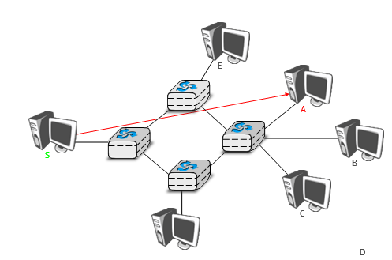
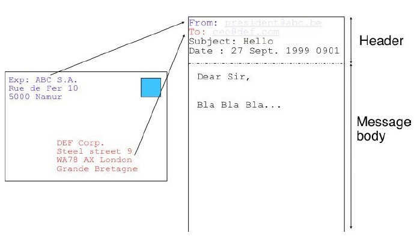
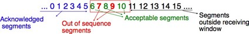
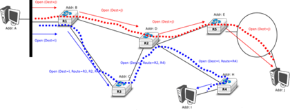
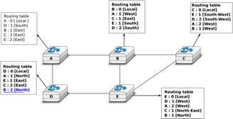
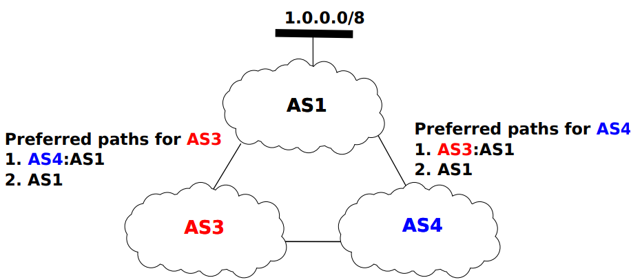
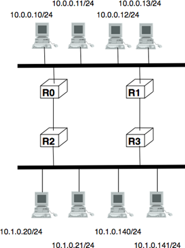
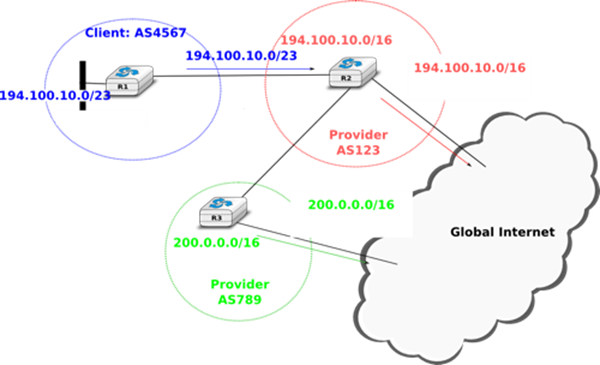
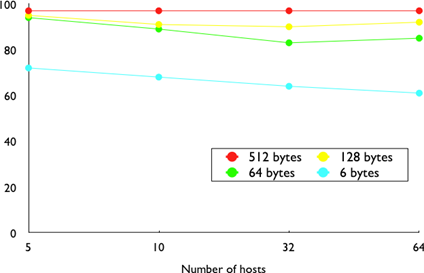
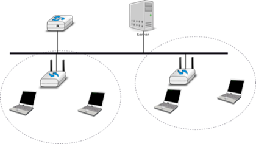

Ce manuel est né d'une frustration de son auteur principal. De nombreux auteurs ont choisi d'écrire un manuel parce qu'il n'y a pas de manuels dans leur domaine ou parce qu'ils ne sont pas satisfaits des manuels existants. Cette frustration a produit plusieurs excellents manuels dans la communauté des réseaux. À une époque où les manuels de réseaux étaient principalement théoriques, Douglas Corner a choisi d'écrire un manuel entièrement axé sur la suite de protocoles TCP/IP [Comer1988], un choix difficile à l'époque. Plus tard, il a étendu son manuel en décrivant une implémentation complète de TCP/IP, ajoutent des considérations pratiques aux descriptions théoriques de [Comer1988]. Richard Stevens a abordé Internet comme un explorateur et a expliqué le fonctionnement des protocoles en examinant tous les paquets échangés sur le fil [Stevens1994]. Jim Kurose et Keith Ross ont réinventé les manuels de réseaux en partant des applications utilisées par les étudiants et ont ensuite expliqué les protocoles Internet en supprimant une couche après l'autre [KuroseRoss09].
Les frustrations qui ont motivé ce livre sont différentes. Lorsque j'ai commencé à enseigner les réseaux à la fin des années 1990, les étudiants étaient déno des utilisateurs d'Internet, mais leur utilisation était limitée. Les étudiants utilisaient encore des manuels de référence et passaient du temps à la bibliothèques. Les étudiants d'aujourd'hui sont complètement différents. Ce sont des utilisateurs du web avides et expérimentés qui trouvent beaucoup d'informations sur le web. C'est une attitude positive car ils sont probablement plus curieux que leurs prédécesseurs. Grâce aux informations disponibles sur Internet, ils peuvent vérifier ou obtenir des informations supplémentaires sur les sujets expliqués par leurs professeurs. Cette abondance d'informations crée plusieurs défis pour un enseignant. Jusqu'à la fin du XIXe siècle, un enseignant par définition plus compétent que ses étudiants et il était très difficile pour les étudiants de vérifier les leçons données par leurs enseignants. Aujourd'hui, étant donné la quantité d'informations disponibles au bout des doigts de chaque étudiant via Internet, la vérification d'une leçon ou l'obtention de plus d'informations sur un sujet donné est parfois à quelques clics seulement. Des sites web tels que Wikipédia fournissent beaucoup d'informations sur divers sujets et les étudiants les consultent souvent. Malheureusement, l'organisation des informations sur ces sites web n'est pas adaptée pour permettre aux étudiants d'apprendre à partir d'eux. De plus, il existe de grandes différences dans la qualité et la profondeur des informations disponibles pour différents sujets.
La deuxième raison est que la communauté du réseau informatique est un participant fort dans le mouvement open-source. Aujourd'hui, il existe des implémentations open-source de haute qualité et largement utilisées pour la plupart des protocoles réseau. Cela inclut les implémentations TCP/IP qui font partie de Linux, FreeBSD ou la pile uIP fonctionnant sur des contrôleurs 8 bits, mais aussi des serveurs tels que Bind, Unbound, Apache ou Sendmail, ainsi que des implémentations de procoles de routage tels que XORP ou Quagga. De plus, les documents qui définissent presque tous les protocoles Internet ont été développés au sein de l'Internet Engineering Task Force (IETF) en utilisant un processus ouvert. L'IETF publie ses spécifications de protocole dans les RFC disponibles publiquement et les nouvelles propositions sont décrites dans les projets Internet.
Cet ouvrage pédagogique vise à combler le fossé entre les implémentations open source et les spécifications open source des réseaux en fournissant un description détaillée mais pédagogique des principes clés qui guident le fonctionnement d'Internet. Le livre est publié sous une licence Creative Commons. Cette licence open source est motivée par deux raisons. La première est que nous espérons que cela permettra à de nombreux étudiants d'utiliser le livre pour apprendre les réseaux informatiques. La seconde est que j'espère que d'autres enseignants le réutiliseront, l'adapteront et l'amélioreront. Le temps dira s'il est possible de construire une communauté de contributeurs pour améliorer et développer davantage le livre. En tant que point de départ, la première édition contient tout le matériel pour un semestre de premier cycle supérieur ou de cours de réseau des cycles supérieurs.
À l'heure actuelle où ces lignes sont écrites, la plupart du texte a été rédigé par Olivier Bonaventure. Laurent Vanbever, Virginie Van den Schriek, Damien Saucez et Mickael Hoerdt ont contribué aux exercices. Pierre Reinbold a conçu les icônes utilisées pour représenter les commutateurs et Nipaul Long a redessiné de nombreuses figures au format SVG. Stéphane Bortzmeyer a envoyé de nombreuses suggestions et corrections au texte. Des informations supplémentaires sur le manuel sont disponsibles sur le site http://inl.info.ucl.ac.be/CNP3.
1.1. À propos de l'auteur :
Olivier Bonaventure est actuellement professeur à l'Univesité Catholique de Louvain (Belgique) où il dirige le laboratoire IP Networking et est vice-président de l'ICTEAM Institute. Sa recherche est axée sur les protocoles Internet depuis plus de vingt ans. Avec ses doctorants, il a développé des techniques d'ingénierie de trafic, effectué divers types de mesures Internet, amélioré les performances des protocoles de routage tels que BGP est IS-IS et participé au développement de nouveaux protocoles Internet, notamment shim6, LISP et Multipath TCP. Il contribue fréquemment à la normalisation au sein de l'IETF. Il était membre du commité de rédaction de la revue IEEE/ACM Transactions on Networking et est directeur de ACM SIGCOMM.
Partie 1 : Introduction :
2.1. Introduction :
Lorsque les premiers ordinateurs ont été construits pendant la Seconde Guerre mondiale, ils étaient coûteux et isolés. Cependant, après environ 20 ans, à mesure que leurs prix diminuaient progressivement, les premières expériences ont commencé à connecter des ordinateurs entre eux. Au début des années 1960, des chercheurs tels que Paul Baran, Donald Davies ou Joseph Licklider ont publié indépendamment les premiers articles décrivant l'idée de construire des réseaux informatiques [Baran] [Licklider1963]. Étant donné le coût des ordinateurs, le partage sur une longue distance était une idée intéressante. Aux États-Unis, l'ARPANET a démarré en 1960 et s'est poursuivi jusqu'au milieu des années 1980 [LCCD09]. En France, Louis Pouzin a développé le réseau Cyclades [Pouzin1975]. De nombreux autres réseaux de recherche ont été construits au cours des années 1970 [Moore]. En même temps, l'industrie des télécommunications et des ordinateurs s'est intéressée aux réseaux informatiques. L'industrie des télécommunications a misé sur le X25. L'industrie informatique a adopté une approche complètement différente en concevant des réseaux locaux (LAN). De nombreuses technologies LAN telles qu'Ethernet ou Token Ring ont été conçues à cette époque. Au cours des années 1980, la nécessité d'interconnecter de plus en plus d'ordinateurs a conduit la plupart des vendeurs d'ordinateurs à développer leur propre suite de protocoles de réseau. Xerox a développé [XNS], DEC a choisi DECNet [Malamud1991], IBM a développé SNA [McFadyen1976], Microsoft a introduit NetBIOS [Winston2003], Apple a misé sur Appletalk [SAO1990]. Dans la communauté de recherche, l'ARPANET a été mise hors service et remplacée par TCP/IP [LCCD09] et l'implémentation de référence a été développée à l'intérieur de BSD Unix [McKusick1999]. Les universités qui utilisaient déjà Unix ont ainsi pu adopter facilement TCP/IP et les vendeurs de stations de travail Unix tels que Sun ou Silicon Graphics ont inclus TCP/IP dans leur variante d'Unix. En parallèle, l'ISO, avec le soutien des gouvernements, a travaillé sur le développement d'une suite ouverte de protocoles réseau ("Open" dans les termes de l'ISO était en contraste avec les suites de protocoles propriétaires dont les spécifications n'étaient pas toujours disponibles publiquement. Le gouvernement américain a même ordonnée l'utilisation des protocoles OSI (voir RFC 1169), mais cela n'a pas suffi à encourager tous les utilisateurs à passer à la suite de protocoles OSI qui était considérée par beaucoup comme trop complexe par rapport à d'autres suites de protocoles.). Au final, TCP/IP est devenu la norme de facto qui n'est pas seulement utilisée au sein de la communauté de recherche. Au cours des années 1990 et du début des années 2000, la croissance de l'utilisation TCP/IP a continué, et aujourd'hui, les protocoles propriétaires sont rarement utilisés. Comme le montre la figure ci-dessous, qui fournit une estimation du nombre d'hôtes connectés à Internet, Internet a connu une forte croissance au cours des 20 dernières années.
Les estimations récentes du nombre de machines connectées à Internet montrent une croissance continue depuis plus de 20 ans. Cependant, bien que le nombre de machines connectées à Internet soit élevé, il devrait être comparé au nombre de téléphones mobiles en utilisation aujourd'hui. De plus en plus de ces téléphones mobiles seront connectés à Internet. De plus, grâce à la disponibilité des implémentations de TCP/IP nécessitant des ressources limitées telles que uIP [Dunkels2003], nous pouvons nous attendre à voir une croissance des appareils intégrés compatibles avec TCP/IP.
Avant d'examiner les services fournis par les réseaux informatiques, il est utile de se mettre d'acoord sur certains termes largement utilisés dans la littérature sur les réseaux. Tout d'abord, les réseaux informatiques sont souvent classés en fonction de la zone géographique qu'ils couvrent :
LAN (Local Area Network) : un réseau local interconnecte généralement des hôtes qui sont quelques kilomètres ou peut-être quelques dizaines de kilomètres de distance.
MAN (Metropolitan Area Network) : un réseau métropolitain interconnecte généralement des appareils qui sont jusqu'à quelques centaines de kilomètre de distance.
Figure 2.1 : Estimation du nombre d'hôtes sur InternetFigure 2.2 : Estimation du nombre de téléphones mobiles
WAN (Wide Area Network) : un réseau étendu interconnecte des hôtes qui peuvent être situés n'importe où sur Terre.
Dans ce livre, nous nous concentrons sur les réseaux utilisés sur Terre. Ces réseaux incluent parfois des liaisons satellites. En plus des technologies de réseau utilisées sur Terre, les chercheurs développent des techniques de mise en réseau qui pourraient être utilisées entre des noeuds situés sur des planètes différentes. Un tel Internet interplanétaire nécessite des techniques différentes de celles discutées dans ce livre. Pour plus d'informations sur ce techniques, consultez la RFC 4838 et les références qui y sont mentionnées.
Une autre classification des réseaux informatiques est basée sur leur topologie physique. Dans les figures suivantes, les liens physiques sont représentés par des lignes tandis que les boîtes montrent des ordinateurs ou d'autres types d'équipements de réseau.
Les réseaux informatiques sont utilisés pour permettre à plusieurs hôtes d'échanger des informations entre eux. Pour permettre à n'importe quel hôte d'envoyer des messages à n'importe quel autre hôte du réseau, la solution la plus simple est de les organiser en maillage complet, avec un lien direct et dédié entre chaque paire d'hôtes. Cette topologie physique est parfois utilisée, en particulier lorsqu'une haute performance et une grande redondance sont requises pour un petit nombre d'hôtes. Cependant, elle présente deux inconvénients majeurs :
pour un réseau contenant n hôtes, chaque hôte doit avoir n - 1 interfaces physiques. En pratique, le nombre d'interfaces physiques sur un noeud limitera la taille d'un réseau en maillage complet qui peut être construit.
pour un réseau contenant n hôtes, (n2 - n) / 2 liens nécessaires. Ceci est possible lorsqu'il y a quelques noeuds dans la même pièce, mais rarement lorsqu'ils sont situés à plusieurs kilomètres de distance.
Figure 2.3 : Un réseau en maillage complet
La deuxième organisation physique possible, qui est également utilisée à l'intérieur des ordinateurs pour connecter différentes cartes d'utilisation, est le bus. Dans un réseau de bus, tous les hôtes sont cconnectés à un support partagé, généralement un câble, via une seule interface. Lorsqu'un hôte envoie un signal électrique sur le bus, le signal est reçu par tous les hôtes connectés au bus. Un inconvénient des réseaux en bus est que si le bus est physiquement coupé, le réseau est divisé en deux réseaux isolés. Pour cette raison, les réseaux en bus sont parfois considérés comme difficiles à exploiter et à entretenir, surtout lorsque le câble est long et qu'il y a de nombreux endroits où il peut se rompre. Une telle topologie en bus a été utilisée dans les premiers réseaux Ethernet.
Figure 2.4 : Un réseau organisé en bus
Une troisième organisation d'un réseau informatique est une topologie en étoile. Dans de telles topologies, les hôtes disposent d'une seule interface physique et il y a un lien physique entre chaque hôte et le centre de l'étoile. Le noeud au centre de l'étoile peut être soit un équipement qui amplifie un signal électrique, soit un appareil actif, tel qu'un équipement qui comprend le format des messages échangés à travers le réseau. Bien sûr, la défaillance du noeud central implique la défaillance du réseau. Cependant, si un lien physique échoue (par exemple, parce que le câble a été coupé), alors un seul noeud est déconnecté du réseau. En pratique, les réseaux en forme d'étoile sont plus faciles à exploiter et à entretenir que les réseaux en forme de bus. De nombreux administrateurs réseau apprécient également le fait qu'ils peuvent contrôler le réseau à partir d'un point central. Administré à partir d'une interface Web ou via une connexion de type console, le centre de l'étoile est un point de contrôle utile (activation ou désactivation d'appareils) et un excellent point d'observation (statiques d'utilisation).
Figure 2.5 : Un réseau organisé en étoile
Une quatrième organisation physique d'un réseau est la topologie en anneau. Comme pour l'organisation en bus, chaque hôte a une seule interface physique qui le relie à l'anneau. Tout signal envoyé par un hôte sur l'anneau sera reçu par tous les hôtes connectés à l'anneau. Du point de vue de la redondance, un seul anneau n'est pas la meilleure solution, car le signal ne se déplace que dans une seule direction sur l'anneau. Ainsi, si l'un des liens qui composent l'anneau est coupé, l'ensemble du réseau tombe en panne. En pratique, de tels anneaux ont été utilisés dans des réseaux locaux, mais sont maintenant souvent remplacés par des réseaux en étoile. Dans les réseaux métropolitains, les anneaux sont souvent utilisés pour interconnecter plusieurs sites. Dans ce cas, deux liens parallèles, composés de câbles différents, sont souvent utilisés par la redondance. Avec un tel anneau double, lorsque l'un des anneaux échoue, tout le trafic peut être rapidement basculé vers l'autre anneau.
Figure 2.6 : Un réseau organisé en anneau
Une cinquième organisation physique d'un réseau est l'arborescence. De tels réseaux sont généralement utilisés lorsqu'un grand nombre de clients doivent être connectés de manière très rentable. Les réseaux de télévision par câble sont souvent organisés en arborescence.
Figure 2.7 : Un réseau organisé en arbre
En pratique, la plupart des réseaux réels combinent une partie de ces topologies. Par exemple, un réseau de campus peut être organisé en anneau entre les bâtiments clés, tandis que les bâtiments plus petits sont rattachés en tant qu'arbre ou étoile aux bâtiments importants. Ou un réseau ISP peut avoir un maillage complet d'appareils dans le coeur de son réseau, et des arbres pour connecter les utilisateurs distants.
Tout au long de ce livre, notre objectif sera de comprendre les protocoles et les mécanismes nécessaires pour un réseau tel que celui-illustré ci-dessous.
Figure 2.8 : Un inter-réseau simple
La figure ci-dessus illustre un inter-réseau, c'est-à-dire un réseau interconnecte d'autres réseaux. Chaque réseau est représenté par une ellipse contenant quelques appareils. Nous expliquerons tout au long du livre les différents types d'appareils et leurs rôles respectifs permettant à tous les hôtes d'échanger des informations. En outre, nous discuterons de la manière dont les réseaux sont interconnectés et des règles qui régissent ces interconnexions. Nous analyserons également comment les topologies en bus, en anneau et en maillage sont utilisées pour construire des réseaux réels.
Le dernier point de terminolgie que nous devons aborder est les modes de transmission. Lorsque nous échangeons des informations à travers un réseau, nous distinguons trois modes de transmission. Dans la transmission TV et radio, la diffusion (broadcast) est souvent utilisée pour indiquer une technologie qui envoie un signal vidéo ou radio à tous les récepteurs dans une zone géographique donnée. La diffusion est parfois utilisée dans les réseaux informatiques, mais uniquement dans les réseaux locaux où le nombre de destinataires est limité.
Le premier et le mode de transmission le plus répondu s'appelle unicast. Dans le mode de transmission unicast, l'information est envoyée par un émetteur à un récepteur. La plupart des applications Internet d'aujourd'hui reposent sur le mode de transmission unicast. L'exemple ci-dessous montre un réseau avec deux types d'appareils : des hôtes (dessinés comme des ordinateurs) et des noeuds intermédiaires (dessinés comme des cubes). Les hôtes échangent des informations via les noeuds intermédiaires. Dans l'exemple ci-dessous, lorsque l'hôte S utilise unicast pour envoyer des informations, il les envoie via trois noeuds intermédiaires. Chacun de ces noeuds reçoit l'information de son noeud ou hôte en amont, la traite et la transmet à son noeud ou hôte en aval. Cela s'appelle store and forward et nous verrons plus tard que ce concept est clé dans les réseaux informatiques.

Figure 2.9 : transmission unicast
Un deuxième mode de transmission est le mode de transmission multicast. Ce mode est utilisé lorsque la même information doit être envoyée à un ensemble de destinataires. Il a d'abord été utilisé dans les réseaux locaux (LAN), mais est devenu plus tard pris en charge dans les réseaux étendus. Lorsqu'un expéditeur utilise le multicast pour envoyer des informations à N destinataires, l'expéditeur envoie une seule copie des informations et les noeuds du réseau dupliquent ces informations chaque fois que cela est nécessaire, de sorte qu'elles puissent atteindre tous les destinataires appartenant au groupe de destination.
Pour comprendre l'importance de la transmission en mode multicast, considérons la source S qui envoie les mêmes informations aux destinations A, C et E. Avec le mode unicast, les mêmes informations passent trois fois sur les noeuds intermédiaires 1 et 2 et deux fois sur le noeud 4. C'est une perte de ressources pour les noeuds intermédiaires et les liens entre eux. Avec la transmission en mode multicast, l'hôte S envoie les informations au noeud 1 qui le transmet en aval au noeud 2. Ce noeud crée une copie des informations reçues en envoie une copie directement à l'hôte E et l'autre en aval vers le noeud 4. À la reception des informations, le noeud 4 produit une copie et envoie une copie à la fois au noeud A et une autre au noeud C. Grâce à la transmission en mode multicast, les mêmes informations peuvent atteindre un grand nombre de destinataires tout en étant envoyées une seule fois sur chaque lien.
Figure 2.10 : transmission multicast
Le dernier mode de transmission est le mode de transmission anycast. Il a été initialement défini dans le RFC 1542. Dans ce mode de transmission, un ensemble de récepteurs est identifié. Lorsqu'une source envoie des informations à cet ensemble de récepteurs, le réseau s'assyre que les informations sont délivrées à un récepteur qui appartient à cet ensemble. En général, le récepteur le plus proche de la source est celui qui reçoit les informations envoyées par cette source particulière. Le mode de transmission anycast est utile pour assurer la redondance, car lorsque l'un des récepteurs échoue, le réseau s'assure que les informations seront délivrées à un autre récepteur appartenant au même groupe. Cependant, en pratique, la prise en charge du mode de transmission anycast peut être difficile.
Figure 2.11 : transmission anycast
Dans l'exemple ci-dessus, les trois hôtes marqués d'un astérisque (*) font partie du même groupe anycast. Lorsque l'hôte S envoie des informations à ce groupe anycast, le réseau s'assure qu'elles parviendront à l'un des membres du groupe anycast. Les lignes en pointillés montrent une livraison possible via les noeuds 1, 2 et 4. Une transmission anycast ultérieure de l'hôte S vers le même groupe anycast pourrait atteindre l'hôte attaché au noeud intermédiaire 3, comme indiqué par la ligne pleine. Une transmission anycast atteint un membre du groupe anycast choisi par le réseau en fonction des conditions actuelles du réseau.
2.2. Services et protocoles :
Un aspect important à comprendre avant d'étudier les réseaux informatiques est la différence entre un service et un protocole.
Pour comprendre la différence entre les deux, il est utile de commencer par des exemples du monde réel. La Poste traditionnelle fournit un service dans lequel un facteur livre des lettres aux destinataires. La Poste définit précisément quels types de lettres (taille, poids, etc.) peuvent être livrés en utilisant le service du courrier standard. De plus, le format de l'enveloppe est spécifié (position des adresses de l'expéditeur et du destinataire, position du timbre). Qyelqu'un qui veut envoyer une lettre doit soit la déposer dans un bureau de poste ou dans l'une des boîtes aux lettres dédiées. La lettre sera ensuite collectée et livrée à son destinataire final. Notez que pour le service régulier, La Poste ne garantit généralement pas la livraison de chaque lettre particulière, certaines lettres peuvent être perdues et d'autres peuvent être livrées à la mauvaise boîte aux lettres. Si une lettre est importante, l'expéditeur peut utiliser le service recommandé pour s'assurer que la lettre sera livrée à son destinataire. Certains services de La Poste proposent également un service avec accusé de réception ou un service de courrier express qui est plus rapide que le service régulier.
Dans les réseaux informatiques, la notion de service est définie de manière plus formelle dans [X2000]. Elle peut être mieux comprise en considérant un réseau informatique, quelle que soit sa taille ou sa complexité, comme une boîte noire qui fournit un service aux utilisateurs, comme le montre la figure ci-dessous. Ces utilisateurs pourraient être des utilisateurs humains ou des processus s'exécutant sur un système informatique.
De nombreux utilisateurs peuvent être connectés au même fournisseur de services. Par l'intermédiaire de ce fournisseur, chaque utilisateur doit être en mesure d'échanger des messages avec n'importe quel autre utilisateur. Pour pouvoir livrer ces messages, le fournisseur de services doit être en mesure d'identifier de manière univoque chaque utilisateur. Dans les réseaux informatiques, chaque utilisateur est identifié par une adresse unique, nous discuterons plus tard de la façon dont ces adresses sont construites et utilisées. À ce stade, et lors de la considération de la transmission en unicast, la principale caractéristique de ces adresses est qu'elles sont uniques. Deux utilisateurs différents connectés au réseau ne peuvent pas utiliser la même adresse.
Figure 2.12 : utilisateurs et fournisseur de services
Tout au long de ce livre, nous définirons un service comme un ensemble de capacités fournies par un système (et ses éléments sous-jacents) à son utilisateur. Un utilisateur interagit avec un service via un point d'accès au service. Notez que, comme indiqué dans la figure ci-dessus, les utilisateurs interagissent avec un seul fournisseur de services. En pratique, le fournisseur de services est réparti sur plusieurs hôtes, mais ce sont des détails d'implémentation qui ne sont pas importants à ce stade. Ces interactions entre un utilisateur et un fournisseur de services sont exprimées dans [X200] en utilisant des primitives, comme le montre la figure ci-dessous. Ces primitives sont une représentation abstraite des interactions entre un utilisateur et un fournisseur de services. En pratique, ces interactions pourraient être implémentées sous forme d'appels système, par exemple.
Figure 2.13 : les quatre types de primitives
Les quatres types de primitives sont définis :
X.request : Ce type de primitive correspond à une demande émise par un utilisateur à un fournisseur de service.
X.indication : Ce type de primitive est généré par le fournisseur de réseau et livré à un utilisateur (souventt lié à une primitive X.request antérieure et distante).
X.response : Ce type de primitive est généré par un utilisateur pour répondre à une primitive X.indication antérieure.
X.confirm : Ce type de primitive est livré par le fournisseur de service pour confirmer à un utilisateur q'une primitive X.request précédente a été traitée avec succès.
Les primitives peuvent être combinées pour modéliser différents types de services. Le service le plus simple dans les réseaux informatiques est appelé le service sans connexion. Ce service est appelé sans connexion car il n'est pas nécessaire de créer une connexion avant de transmettre des données contrairement au service orienté connexion. Ce service peut être modélisé en utilisant deux primitives :
Data.request(source, destination, SDU) : Cette primitive est émise par un utilisateur qui spécifie, en tant que paramètres, son adresse source, l'adresse du destinataire du message et le message lui-même. Nous utiliserons l'unité de données de service (SDU ou Service Data Unit) pour nommer le message échangé de manière transparente entre deux utilisateurs d'un service.
Data.indication(source, destination, SDU) : Cette primitive est délivrée par un fournisseur de service à un utilisateur. Elle contient comme paramètres une unité de données de service (SDU) ainsi que les adresses des utilisateurs émetteur et destinataire.
Lorsqu'on discute du service fourni dans un réseau informatique, il est souvent utile de pouvoir décrire graphiquement les interactions entre les utilisateurs et le fournisseur. Une représentation fréquemment utilisée est le diagramme de séquence temporelle. Dans ce chapitre et tout au long du livre, nous utiliserons souvent des diagrammes tels que celui présenté ci-dessous. Un diagramme de séquence temporelle décrit les interactions entre deux utilisateurs et un fournisseur de services. Par convention, les utilisateurs sont représentés dans les parties gauche et droite du diagramme tandis que le fournisseur de services occupe le milieu du diagramme. Dans un tel diagramme de séquence temporelle, le temps d'écoule de haut en bas du diagramme. Chaque primitive est représentée par une flèche horizontale simple, à laquelle le nom de la primitive est attaché. Les lignes en pointillé sont utilisées pour représenter la relation possible entre deux (ou plusieurs) primitives. Un tel diagramme fournit des informations sur l'ordre des différentes primitives, mais la distance entre deux primitives ne représente pas une quantité de temps précise.
La figure ci-dessous fournit une représentation du service sans connexion sous forme de diagramme de séquence temporelle. L'utilisateur à gauche, ayant l'adresse S, émet une primitive Data.request contenant la SDU M qui doit être livré par le fournisseur de services à la destination D. La ligne en pointillé entre les deux primitives indique que la primitive Data.indication qui est délivrée à l'utilisateur de droite correspond à la primitive Data.request envoyée par l'utilisateur de gauche.
Figure 2.14 : Un service sans connexion simple
Il existe plusieurs implémentations possibles du service sans connexion, que nous étudierons plus tard dans ce livre. Avant d'examiner ces réalisations, il est utile de discuter des caractéristiques possibles du service sans connexion. Un service sans connection fiable est un service dans lequel le fournisseur de service garantit que tous les SDU soumis dans les Data.requests par un utilisateur seront finalement livrés à leur destination. Un tel service serait très utile pour les utilisateurs, mais garantir une livraison parfaite est difficile en pratique. Pour cette raison, les réseaux informatiques prennent généralement en charge un service sans connexion non fiable.
Un service sans connexion peu fiable peut présenter différents types de problèmes par rapport à un service sans connexion fiable. Tout d'abord, un service sans connexion peu fiable ne garantit pas la livraison de toutes les unités de donénes de service (SDU). Cela peut être exprimé graphiquement en utilisant le diagramme de séquence temporelle ci-dessous.
En pratique, un service sans connexion peu fiable livrera généralement une partie des SDU. Cependant, comme la livraison des SDU n'est pas garantie, l'utilisateur doit être capable de la perte de tout SDU.
Figure 2.15 : Un service sans connexion peut perdre des SDU
Une seconde imperfection qui peut affecter un service non fiable sans connexion est qu'il peut dupliquer des SDU. Certains founisseurs de services sans connexion peu fiables peuvent livrer une SDU envoyée par un utilisateur deux fois ou même plus. Cela est illustré par le diagramme de séquence temporelle ci-dessous.
Figure 2.16 : Un service sans connection peu fiable peut dupliquer des SDU
Enfin, certains fournisseurs de services sans connexion peu fiables peuvent livrer à une destination un SDU différent de celui qui a été fourni dans le Data.request. Cela est illustré dans la figure ci-dessous.
Figure 2.17 : Un service sans connection peu fiable peut livrer des SDU erronnées
Lorsqu'un utilisateur interagit avec un fournisseur de service, il doit connaître précisément les limitations du service sous-jacent afin de pouvoir surmonter tout problème qui pourrait survenir. Cela nécessite une définition précise des caractéristiques du service sous-jacent.
Une autre caractéristique importante du service sans connexion est de savoir s'il préserve l'ordre des SDU envoyés par un utilisateur. Du point de vue de l'utilisateur, c'est souvent une caractéristique souhaitable. Cela est illustré dans la figure ci-dessous.
Figure 2.18 : Un service sans connexion qui préserve l'ordre des SDU envoyées par un utilisateur donné
Cependant, de nombreux services sans connexion, en particulier les services non fiables, ne garantissent pas qu'ils préserveront toujours l'ordre des SDU envoyés par chaque utilisateur. Cela est illustré dans la figure ci-dessous.
Figure 2.19 : Un service sans connexion qui ne préserve pas l'ordre des SDU envoyées par un utilisateur donné
Le service sans connexion est largement utilisé dans les réseaux informatiques, comme nous le verrons plus tard dans ce livre. Plusieurs variantes de ce service de base ont été proposées. L'une d'entre elles est le service sans connexion confirmé. Ce service utilise une primitive Data.confirm en plus des primitives Data.request et Data.indication classiques. Cette primitive est émise par le fournisseur de services pour confirmer à un utilisateur la livraison d'un SDU précédemment envoyé à son destinataire. Notez que, comme le service enregistré de la poste, Data.confirm indique uniquement que le SDU a été livré à l'utilisateur de destination. La primitive Data.confirm ne permet pas de savoir si le SDU a été traité par l'utilisateur de destination. Ce service sans connexion confirmé est illustré dans la figure ci-dessous.
Figure 2.20 : Un service sans connexion confirmé
Une invocation du service orienté-connexion est divisée en trois phases. La première phase est l'établissement d'une connexion. Une connexion est une association temporaire entre deux utilisateurs via un fournisseur de service. Plusieurs connexions peuvent exister en même temps entre une paire d'utilisateurs. Une fois établie, la connexion est utilisée pour transférer des SDU. Les connexions fournissent généralement un flux bidirectionnel permettant l'échange de SDU entre les deux utilisateurs associés par la connexion. Ce flux est utilisé pour transférer des données pendant la deuxième phase de la connexion appelée phase de transfert de données. La troisième phase est la terminaison de la connexion. Une fois que les utilisateurs ont fini d'échanger des SDU, ils demandent au fournisseur de service de terminer la connexion. Comme nous le veroons plus tard, il y a également des cas où le fournisseur de service peut avoir besoin de terminer une connexion lui-même.
La mise en place d'une connexion peut être modélisée en utilisant quatre primitives : Connect.request, Connect.indication, Connect.response et Connect.confirm. La primitive Connect.request est utilisée pour demander l'établissement d'une connexion. Le paramètre principal de cette primitive est l'adresse de l'utilisateur de destination. Le fournisseur de service délivre une primitive Connect.indication pour informer l'utilisateur de destination de la tentative de connexion. S'il accepte d'établir une connexion, il répond avec une primitive Connect.response. À ce stade, la connexion est considérée comme ouverte et l'utilisateur de destination peut commencer à envoyer des SDU sur la connexion. Le fournisseur de service traite la Connect.response et délivrera une primitive Connect.confirm à l'utilisateur qui a initié la connexion. La livraison de cette primitive met fin à la phase d'établissement de la connexion. À ce stade, la connexion est considérée comme ouverte et les deux utilisateurs peuvent envoyer des SDU. L'établissement réussi d'une connexion est illustré ci-dessous.
Figure 2.21 : L'établissement de la connexion
L'exemple ci-dessus montre l'établissement réussi d'une connexion. Cependant, en pratique, toutes les connexions ne sont pas établies avec succès. Une raison est que l'utilisateur de destination peut ne pas être d'accord, pour des raisons de politique ou de performance, pour établir une connexion avec l'utilisateur initiateur à ce moment. Dans ce cas, l'utilisateur de destination répond à la primitive Connect.indication par une primitive Disconnect.request qui contient un paramètre pour indiquer la raison pour laquelle la connexion a été refusée. Le fournisseur de service délivrera alors une primitive Disconnect.indication pour informer l'utilisateur initiateur. Une deuxième raison est lorsque le fournisseur de service est incapable d'atteindre l'utilisateur de destination. Cela peut arriver parce que l'utilisateur de destination n'est pas actuellement connecté au réseau ou en raison de la congestion. Dans ces cas, le fournisseur de service répond à la primitive Connect.request avec une primitive Disconnect.indication dont le paramètre de raison contient des informations supplémentaires sur l'échec de la connexion.
Figure 2.22 : Deux types de rejet pour une tentative d'établissement de connexion
Une fois que la connexion est établie, le fournisseur de services fournit deux flux de données aux utilisateurs communicants. Le premier flux de données peut être utilisé par l'utilisateur initiant pour envoyer des SDU. Le deuxième flux de donénes permet à l'utilisateur répondant d'envoyer des SDU à l'utilisateur initiant. Les flux de données peuvent être organisés de différentes manières. Une première organisation est le transfert en mode message. Avec le transfert en mode message, le fournisseur de services garantit qu'un seul et unique Data.indication sera livré au point final du flux de données pour chaque primitive Data.request émise par l'autre point final. Le transfert en mode message est illustré dans la figure ci-dessous. Le principal avantage du mode de transfert de message est que le destinataire reçoit exactement les SDU qui ont été envoyés par l'autre utilisateur. Si chaque SDU contient une commande, l'utilisateur qui reçoit peut traiter chaque commande dès qu'il reçoit un SDU.
Figure 2.23 : Transfert en mode message dans un service orienté connexion
Malheureusement, le transfert en mode message n'est pas largement utilisé sur Internet. Sur Internet, le service orienté connexion le plus populaire transfère des SDU en mode flux. Avec le mode flux, le fournisseur de services fournit un flux de bytes qui relie les deux utilisateurs en communication. L'utilisateur émetteur envoie des bytes en utilisant des primitives de requête de données (Data.request) qui contiennent des séquences de bytes en tant que SDU. Le fournissur de sercices délivre des SDU contenant des bytes consécutifs à l'utilisateur récepteur en utilisant des primitives d'indication de données (Data.indication). Le fournisseur de services garantit que tous les bytes envoyés à une extrémité du flux sont livrés correctement dans le même ordre à l'autre extrémité. Cependant, le fournisseur de services n'essaie pas de préserver les limites des SDU. Il n'y a aucune relation imposée par le fournisseur de services entre le nombre de primitives Data.request et le nombre de primitives Data.indication. Le mode flux est illustré dans la figure ci-dessous. En pratique, une conséquence de l'utilisation du mode flux est que si les utilisateurs veulent échanger des SDU structurés, ils devront fournir les mécanismes qui permettent à l'utilisateur récepteur de séparer les SDU successifs dans le flux de bytes qu'il reçoit. Comme nous le verrons dans le prochain chapitre, les protocoles de la couche d'application utilisent souvent des délimiteurs spécifiques tels que le caractère de fin de ligne pour délimiter des SDU dans un flux de bytes.
Figure 2.24 : Transfert en mode flux dans un service orienté connexion
La troisième phase d'une connexion est lorsqu'elle doit être libérée. Comme une connxion implique trois parties (deux utilisateurs et un fournisseur de service), l'une d'entre elles peut demander la résiliation de la connexion. Habituellement, les connexions sont terminées à la demande d'un utilisateur une fois le transfert de données terminé. Cependant, parfois le fournisseur de service peut être obligé de mettre fin à une connexion. Cela peut être dû à un manque de ressources à l'intérieur du fournisseur de service ou parce que l'un des utilisateurs n'est plus accessible via le réseau. Dans ce cas, le fournisseur de service émettra des primitives Disconnect.indication à tous les deux utilisateurs. Ces primitives contiendront, en paramètre, des informations sur la raison de la résiliation de la connexion. Malheureusement, comme illustré dans la figure ci-dessous, lorsqu'un fournisseur de service est contraint de mettre fin à une connexion, il ne peut garantir que toutes les SDU envoyées par chaque utilisateur ont été livrées à l'autre utilisateur. Cette libération de connexion est dite abrupte car elle peut causer des pertes de données.
Figure 2.25 : Libération abrupte de connexion initiée par le fournisseur de service
Une libération de connexion abrupte peut également être déclenchée par l'un des utilisateurs. Si un utilisateur a besoin, pour une raison quelconque, de mettre fin rapidement à une connexion, il peut émettre une primitive Disconnect.request et demander une libération abrupte. Le fournisseur de service traitera la demande, arrêtera les deux flux de données et livrera la primitive Disconnect.indication à l'utilisateur distant dès que possible. Comme illustré dans la figure ci-dessous, cette libération de connexion abrupte peut entraîner des pertes de SDU.
Figure 2.26 : Libération abrupte de connexion initiée par un utilisateur
Pour assurer une livraison fiable des SDU envoyés par chaque utilisateur sur une connexion, nous devons considérer les deux flux qui composent une connexion comme indépendants. Un utilisateur devrait être en mesure de libérer le flux qu'il utilise pour envoyer des SDU une fois qu'il a envoyé tous les SDU qu'il avait prévu d'envoyer sur cette connexion, mais continuer à recevoir des SDU sur le flux opposé. Cette libération de connexion gracieuse est généralement effectuée comme indiqué dans la figure ci-dessous. Un utilisateur émet une primitive Disconnect.request à son fournisseur une fois qu'il a émis toutes ses primitives Data.request. Le fournisseur de service attendra que toutes les primitives Data.indication aient été livrées à l'utilisateur destinataire avant d'émettre la primitive Disconnect.indication. Cette primitive informe l'utilisateur destinataire qu'il ne recevra plus de SDU sur cette connexion, mais il peut toujours émettre des primitives Data.request sur le flux dans la direction opposée. Une fois que l'utilisateur a émis toutes ses primitives Data.request, il émet une primitive Disconnect.request pour demander la terminaison du flux restant. Le fournisseur de service traitera la demande et livrera la Disconnect.indication correspondante à l'autre utilisateur une fois qu'il aura livré toutes les primitives Data.indication en attente. À ce stade, toutes les données ont été libérés avec succès et la connexion est complètement fermée.
Figure 2.27 : Libération gracieuse de connexion
Note : Fiabilité du service orienté connexion :
Un point important à noter concernant le service orienté connexion est sa fiabilité. Un service orienté connexion ne peut garantir la bonne livraison de toutes les unités de données de service (SDU) que si la connexion est relâchée de manière contrôlée. Cela implique que tant que la connexion est active, il n'y aucune garantie de la livraison effective des SDU échangées car la connexion peut être libérée de manière abrupte à tout moment.
2.3 Les modèles de référence :
Face à la complexité croissante des réseaux informatiques, au cours des années 1970, les chercheurs en réseau ont proposé différents modèles de référence pour faciliter la description des protocoles et des services de réseau. Parmi ceux-ci, le modèle de référence de l'Interconnexion de Systèmes Ouverts (ISO) [Zimmermann80] a été probablement le plus influent. Il a servi de base aux travaux de normalisation effectués au sein de l'ISO pour développer des normes mondiales de réseau informatique. Le modèle de référence que nous utilisons dans ce livre peut être considéré comme une version simplifiée du modèle de référence OSI. Une discussion historique intéressante sur le débat OSI-TCP/IP peut être trouvée dans [Russel06].
2.3.1 Les cinq couches du modèle de référence :
Notre modèle de référence est divisé en cinq couches, comme le montre la figure ci-dessous.
Figure 2.28 : Les cinq couches du modèle de référence
En commençant par la base, la première couche est la couche physique. Deux appareils communicants sont reliés par un support physique. Ce support physique est utilisé pour transférer un signal électrique ou optique entre deux appareils directement connectés. Plusieurs types de supports physiques sont utilisés en pratique :
câble électrique : Les informations peuvent être transmises sur différents types de câbles électriques. Les plus courants sont les paires torsadées utilisées dans le réseau téléphonique, mais également dans les réseaux de télévision par câble, mais ne sont plus utilisés dans les réseaux d'entreprise. Certaines technologies de réseau fonctionnent sur le câble électrique classique.
fibre optique : Les fibres optiques sont fréquemment utilisées dans les réseaux publics et d'entreprise lorsque la distance entre les appareils de communication est supérieure à un kilomètre. Il existe deux principaux types de fibres optiques : multimode et monomode. Le multimode est beaucoup moins cher que la fibre monomode car une LED peut être utilisée pour envoyer un signal sur une fibre multimode tandis qu'une fibre monomode doit être pilotée par un laser. En raison des différents modes de propagation de la lumière, les fibres monomodes sont limitées à des distances de quelques kilomètres tandis que les fibres multimodes peuvent être utilisées sur des distances supérieures à plusieurs dizaines de kilomètres. Dans les deux cas, des répéteurs peuvent être utilisées pour régénérer le signal optique à une extrémité d'une fibre pour l'envoyer sur une autre fibre.
sans fil : Dans ce cas, un signal radio est utilisé pour coder les informations échangées entre les appareils de communication. De nombreuses techniques de modulation sont utilisées pour envoyer des informations sur un canal sans fil et il y a beaucoup d'innovation dans ce domaine avec de nouvelles techniques apparaissant chaque année. Bien que la plupart des réseaux sans fil reposent sur des signaux radio, certains utilisent un laser qui envoie des impulsions lumineuses à un détecteur distant. Ces techniques optiques permettent de créer des liaisons point à point tandis que les techniques basées sur la radio, en fonction de la directionnalité des antennes, peuvent être utilisées pour construire des réseaux contenant des appareils répartis sur une petite zone géographique.
Un point important à noter à propos de la couche physique est le service qu'elle fournit. Ce service est généralement un service orienté connexion peu fiable qui permet aux utilisateurs de la couche physique d'échanger des bits. L'unité de transfert d'information dans la couche physique est le bit. Le service de la couche physique est peu fiable parce que :
la couche physique peut changer, par exemple en raison d'interférences électromagnétiques, la valeur d'un bit en cours de transmission
la couche physique peut livrer plus de bits au récepteur que les bits envoyés par l'émetteur
la couche physique peut livrer moins de bits au récepteur que les bits envoyés par l'émetteur
Les deux derniers points peuvent sembler étranges à première vue. Lorsque deux périphériques sont connectés via un câble, comment est-il possible que des bits soient créés ou perdus sur ce câble ?
Cela est principalement dû au fait que les appareils communicants utilisent leur propre horloge pour transmettre des bits à une vitesse de transmission donnée. Considérons un émetteur ayant une horloge qui bat un million de fois par seconde et envoie un bit à chaque battement. Chaque microseconde, l'émetteur envoie un signal électrique ou optique qui code un bit. Le débit binaire de l'émetteur est donc de 1 Mbps. Si l'horloge du récepteur bat exactement 5 fois chaque microseconde, il délivrera également 1 Mbps à son utilisateur. Cependant, si l'horloge du récepteur est légèrement plus rapide (ou plus lente), il délivrera légèrement plus (ou moins) d'un million de bits chaque seconde. Cela explique pourquoi la couche physique peut perdre ou créer des bits. Il est très difficile en pratique d'avoir des horloges parfaitement synchronisées fonctionnant à haute fréquence. Cependant, certaines couches physiques introduisent une boucle de rétroaction qui permet à l'horloge du récepteur de se synchroniser automatiquement à l'horloge de l'émetteur. Cependant, toutes les couches physiques n'incluent pas ce type de synchronisation.
Note : Débit binaire :
Dans les réseaux informatiques, le débit binaire de la couche physique est toujours exprimé en bits par seconde. Un Mbps est évalement à un million de bits par seconde et un Gbps est équivalent à un milliard de bits par seconde. Cela contraste avec les spécifications de mémoire qui sont habituellement exprimées en octets (8 bits), Kilo-octets (1024 octets) ou Méga-octets (1048576 octets). Ainsi, transférer un MByte à travers une liaison de 1 mbps prend 8,39 secondes.
Débit binaire
Bits par seconde
1 Kbps
103
1 Mbps
106
1 Gbps
109
1 Tbps
1012
Figure 2.29 : La couche physique
La couche physique permet ainsi à deux ou plusieurs entités directement connectées au même support de transmission d'échanger des bits. Pouvoir échanger des bits est important car pratiquement toutes les informations peuvent être encodées sous forme de séquences de bits. Les ingénieurs électriciens ont l'habitude de traiter des flux de bits, mais les informaticiens préfèrent généralement traiter des concepts de plus haut niveau. Un problème similaire se pose avec le stockage de fichiers. Les dispositifs de stockage tels que les disques durs stockent également des flux de bits. Il existe des dispositifs matériels qui traitent le flux de bits produit par un disque dur, mais les informaticiens ont conçu des systèmes de fichiers pour permettre aux applications d'accéder facilement à ces dispositifs de stockage. Ces syst!mes de fichiers sont généralement également divisés en plusieurs couches. Les disques durs stockent des secteurs de 512 octets ou plus. Les systèmes de ficheirs Unix regroupent des secteurs en blocs plus larges qui peuvent contenir des données ou des inodes représentant la structure du système de fichiers. Enfin, les applications manipulent des fichiers et des répertoires qui sont traduits en blocs, en secteurs et finalement en bits par le système d'exploitation.
Les réseaux informatiques utilisent une approche similaire. Chaque couche fournit un service qui est construit au-dessus de la couche sous-jacente et est plus proche des besoins des applications.
La couche liaison de données repose sur le service fourni par la couche physique sous-jacente. La couche liaison de donénes permet à deux hôtes directement connectés par la couche physique d'échanger des informations. L'unité d'information échangée entre deux entités dans la couche liaison de données est une trame. Une trame est une séquence finie de bits. Certaines couches liaison de données fournissent un service orienté connexion tandis que d'autres fournissent un service sans connexion. Certaines couches liaison de données garantissent la livraison fiable des informations tandis que d'autres ne garantissent pas la livraison correcte de l'information.
Un point important à noter à propos de la couche liaison de données est que bien que la figure ci-dessous indique que deux entités de la couche liaison de données échangent directement des trames, en réalité c'est légèrement différent. Lorsque l'entité de la couche liaison de données à gauche doit transmettre une trame, elle émet autant de primitives Data.request à la couche physique sous-jacente qu'il y a de bits dans la trame. La couche physique convertira alors la séquence de bits en un signal électromagnétique ou optique qui sera envoyé sur le support physique. La couche physique du côté droit de la figure décodera le signal reçu, récupérera les bits et émettra les primitives Data.indication correspondantes à son entité de la couche liaison de données. S'il n'y a pas d'erreurs de transmission, cette entité recevra la trame envoyée précédemment.
Figure 2.30 : La couche liaison de données
La couche liaison de données permet à des hôtes directement connectés d'échanger de l'information, mais il est souvent nécessaire d'échanger de l'information entre des hôtes qui ne sont pas connectés au même support physique. C'est la tâche de la couche réseau. La couche réseau est construire au-dessus de la couche liaison de données. Les entités de la couche réseau échangent des paquets. Un paquet est une séquence finie d'octets transportée par la couche liaison de données à l'intérieur d'une ou plusieurs trames. Un paquet contient généralement des informations sur son origine et sa destination, et passe habituellement par plusieurs appareils intermédiaires appelés routeurs en chemin de son origine à sa destination.
Figure 2.31 : La couche réseau
La plupart des implémentations de la couche réseau, y compris Internet, ne fournissent pas de service fiable. Cependant, de nombreuses applications ont besoin d'échanger des informations de manière fiable, et l'utilisation directe du service de la couche réseau serait très difficile pour elles. Assurer la livraison fiable des données produites par les applications est la tâhce de la couche transport. Les entités de la couche transport échangent des segments. Un segment est une séquence finie d'octets qui sont transportés à l'intérieur d'un ou plusieurs paquets. Une entité de la couche transport émet des segments (ou parfois une partie de segments) en tant que demande de données (Data.request) à l'entité de la couche réseau sous-jacente.
Figure 2.32 : le réseau transport
Il existe différents types de couches transport. Les couches transport les plus couramment utilisées sur Internet sont TCP, qui fournit un service de transport orienté connexion fiable pour un flux de données en octetsn, et UDP, qui founit un service de transprot non fiable sans connexion.
La couche supérieure de notre architecture est la couche application. Cette couche comprend tous les mécanismes et structures de données nécessaires pour les applications. Nous utiliserons l'unité de données de l'application (UDA ou ADU pour "Application Data Unit") pour indiquer les données échangées entre deux entités de la couche application.
Figure 2.33 : La couche application
2.3.2 Le modèle de référence TCP/IP :
En contraste avec OSI, la communauté TCP/IP n'a pas fait beaucoup d'efforts pour définir un modèle de référence détaillé; en fait, les objectifs de l'architecture Internet ont été documentés après que TCP/IP ait été déployé [Clark88]. RFC 1122, qui définit les exigences pour les hôtes Internet, mentionne quatre couches différentes. En commençant par le haut, ce sont :
une couche Application
une couche Transport
une couche Internet qui est équivalente à la couche réseau de notre modèle de référence
une couche Liaison qui combine les fonctionnalités des courches physique et de liaison de données de notre modèle de référence à cinq couches.
Outre cette différence dans les couches inférieures, le modèle de référence TCP/IP est très proche des cinq couches que nous utilons tout au long de ce document.
2.3.3 Le modèle de référence OSI :
En comparaison avec le modèle de référence à cinq couches expliqué ci-dessus, le modèle de référence OSI défini dans [X200] est divisé en sept couches. Les quatre couches inférieures sont similaires aux quatre couches inférieures décrites ci-dessus. Le modèle de référence OSI a affiné la couche application en la divisant en trois couches :
La couche Session contient les protocoles et mécanismes nécessaires pour organiser et synchroniser le dialogue et gérer l'échange de données entre les entités de la couche Présentation. Alors que l'une des fonctions principales de la couche transport est de faire face à l'instabilité de la couche réseau, l'objectif de la couche session est de masquer les éventuelles défaillances des connexions de niveau transport vers la couche supérieure. Pour cela, la couche session fournit des services permettant d'établir une connexion de session, de soutenir un échange de données ordonné (y compris des mécanismes permettant de récupérer d'une libération abrupte d'une connexion de transport sous-jacente) et de libérer la connexion de manière ordonnée.
La couche Présentation a été conçue pour faire face aux différentes façons de représenter l'information sur les ordinateurs. Il existe de nombreuses différences dans la façon dont les ordinateurs stockent l'information. Certains ordinateurs stockent les entiers sous forme de champs de 32 bits, d'autres utilisent des champs de 64 bits et le même problème se pose avec les nombres à virgule flottante. Pour les informations textuelles, cela est encore plus complexe avec les nombreux codes de caractères différents qui ont été utilisés. La situation est encore plus complexe lorsqu'on considère l'échange d'informations structurées telles que les enregistrements de base de données. Pour résoudre ce problème, la couche présentation prévoit une représentation commune des données transférées. La notation ASN.1 a été conçue pour la couche présentation et est encore utilisée aujourd'hui par certains protocoles.
La couche Application qui contient les mécanismes qui ne rentrent ni dans la couche présentation, ni dans la couche session. La couche application OSI était elle-même subdivisée en plusieurs éléments de service génériques.
Note : Où sont les couches manquantes dans le modèle de référence TCP/IP ?
Le modèle de référence TCP/IP place les couches présentation et session implicitement dans la couche application. Les principales motivations pour simplifier les couches supérieures das le modèle de référence TCP/IP étaient pragmatiques. La plupart des applications Internet ont commencé comme des prototypes qui ont évolué et ont ensuite été standardisés. Beaucoup de ces applications ont supposé qu'elles seraient utilisées pour échanger des informations écrites en anglais américain et pour lesquelles le code de caractères US-ASCII sur 7 bits était suffisant. C'était le cas pour le courrier électronique, mais comme nous le verrons dans le prochain chapitre, le courrier électronique a pu évoluer pour prendre en charge différentes codifications de caractères. Certaines applications considéraient explicitement les différentes représentations de données. Par exemple, ftp contenait des mécanismes pour convertir un fichier d'un format à un autre et le langage HTML a été défini pour représenter des pages Web. D'autre part, de nombreuses spécifications ISO ont été développées par des comités composés de personnes qui n'ont pas toutes participé à des implémentations réelles. ISO a consacré beaucoup d'efforts à l'analyse des exigebces et à la définition d'une solution qui répond à toutes ces exigences. Malheureusement, certaines des spécifications étaient si complexes qu'il était difficile de les implémenter complètement et les organismes de normalisation ont défini des profils recommandés qui contenanient les ensembles d'options implémentés...
Figure 2.34 : Les sept couches du modèle de référence OSI
2.4 Organisation du livre :
Ce document est organisé selon le modèle de référence TCP/IP et suit une approche descendante (top-down). La plupart des manuels classiques de réseau choisissent une approche ascendante (bottom-up), c'est-à-dire qu'ils expliquent d'abord tous les détails électriques et optiques de la couche physique avant de passer à la couche liaison de données. Cette approche a bien fonctionné pendant la première période de l'informatique en réseau et jusqu'à la fin des années 1990. À cette époque, la plupart des étudiants n'étaient pas utilisateurs de réseaux informatiques et il était utile d'expliquer les réseaux informatiques en construisant les protocoles correpondants à partir des plus simples, dans la couche physique, jusqu'à la couche application. Aujourd'hui, tous les étudiants sont des utilisateurs actifs d'application. Aujourd'hui, tous les étudiants sont des utilisateurs actifs d'applicatiion Internet et commencer à apprendre la réseautique en examinant des bits n'est pas très motivant. À partir de [KuroseRoss09], de nombreux manuels et enseignants ont choisi une approche descendante. Cette approche commence par des applications telles que le courrier électronique et le Web que les étudiants connaissent déjà et explore les différentes couches, en commençant par la couche application. Cette approche fonctionne assez bien avec les étudiants d'aujourd'hui. L'approche traditionnelle ascendante pourrait en fait être considérée comme une approche d'ingénierie car elle part du réseau le plus simple qui permet l'échange de bits et explique comment combiner différents protocoles et mécanismes pour construire les applications les plus complexes. L'approche descendante, en revanche, pourrait être considérée comme une approche scientifique. Comme les biologistes, elle part d'un système existant (construit par l'homme) et l'explore couche par couche.
En plus de l'organisation top-down versus bottom-up, les livres sur les réseaux informatiques peuvent soit viser à couvrir en profondeur un petit nombre de sujets, soit à avoir une couverture limitée d'un large éventail de sujets. Couvrir un large éventail de sujets est intéressant pour les cours d'introduction ou pour les étudiants qui n'ont pas besoin d'une connaissance détaillée des réseaux informatiques. Cela permet aux étudiants d'apprendre un peu de tout, puis de partir de cette connaissance de base plus tard s'ils ont besoin de comprendre les réseaux informatiques plus en détail. Ce livre a choisi de couvrir en détail un plus petit nombre de jets que d'autres manuels. Cela est motivé par le fait que les réseaux informatiques doivent souvent être poussés à leurs limites. Comprendre les détails des principaux protocoles de mise en réseau est important pour pouvoir comprendre pleinement le comportement d'un réseau ou l'étendre pour fournir des services innovants. Une citation populaire dit que le diable se cache dans les détails. Cette situation reflète très bien le fonctionnement de nombreux protocoles de réseau, où le changement d'un seul bit peut avoir des conséquences énormes. Dans les réseaux informatiques, comprendre tous les détails est parfois nécessaire.
Le livre est organisé comme suit : nous décrivons d'abord la couche application dans le chapitre "La couche application". Étant donné le grand nombre d'applications basées sur Internet, il est bien sûr impossible de les couvrir toutes en détail. Nous nous concentrons plutôt sur trois types d'applications basées sur Internet. Nous étudions d'abord le système de noms de domaine (DNS) puis expliquons certains des protocoles impliqués dans l'échange de courrier électronique. La discussion de la couche application se termine par une description des protocoles clés du World Wide Web.
Toutes ces applications reposent sur la couche transport qui est expliquée dans le chapitre "chapter-transport". Il s'agit d'une couche clé dans les réseaux d'aujourd'hui car elle contient tous les mécanismes nécessaires pour assurer une transmission fiable des données sur un réseau non fiable. Nous couvrons la couche transport en développant d'abord un protocole simple de couche transport fiable, puis expliquons les détails des protocoles TCP et UDP utilisés dans les réseaux TCP/IP.
Après la couche transport, nous analysons la couche réseau dans le chapitre "La couche réseau". C'est également une couche très importante car elle est responsable de la livraison de paquets de n'importe quelle source vers n'importe quelle destination via des routeurs intermédiaires. Dans la couche réseau, nous décrivons les deux organisations possibles de la couche réseau et les protocoles de routage basés sur les états de lien et les vecteurs de distance. Ensuite, nous expliquons en détail les protocoles IPv4, IPv6, RIP, OSPF et BGP qui sont effectivement utilisés dans l'Internet d'aujourd'hui.
Le dernier chapitre du livre est consacré à la couche liaison de données. Dans le chapitre "La couche liaison de données et les réseaux locaux", nous commençons par expliquer les principes de la couche liaison de données sur des liens point-à-point. Ensuite, nous nous concentrons sur les réseaux locaux. Nous considérons à la fois les techniques opportunistes et déterministes. Nous expliquons ensuite en détail deux types de LAN importants d'un point de vue de déploiement aujourdhui : Ethernet et Wifi.
Partie 3 : La couche application :
3.1 La couche application :
La couche application est la couche la plus importante et la plus visible des réseaux informatiques. Les applications résident dans cette couche et les utilisateurs humains interagissent via ces applications à travers le réseau.
Dans ce chapitre, nous décrivons d'abord brièvement les principes principaux de la couche application et nous nous concentrons sur les deux modèles d'application les plus importants : les modèles client-serveur et pair-à-pair. Ensuite, nous examinons en détail deux familles de protocoles qui se sont révélées très utiles sur Internet : le courrier électronique et les protocoles qui permettent l'accès aux informations sur le World Wide Web. Nous décrivons également le système de noms de domaine qui permet aux humains d'utiliser des noms convivaux alors que les hôtes utilisent des adresses IP longues de 32 bits ou 128 bits.
3.2 Principes :
Il y a deux modèles importants utilisés pour organiser une application en réseau. Le premier et le plus ancien modèle est le modèle client-serveur. Dans ce modèle, un serveur fournit des services aux clients qui échangent des informations avec lui. Ce modèle est hautement asymétrique : les clients envoient des requêtes et les serveurs effectuent des actions et renvoient des réponses. Il est illustré dans la figure ci-dessous.
Figure 3.1 : Le modèle client-serveur
Le modèle client-serveur était le premier modèle utilisé pour développer des applications en réseau. Ce modèle découle naturellement des ordinateurs centraux et des mini-ordinateurs qui étaient les seuls ordinateurs en réseau utilisés jusqu'aux années 1980. Un mini-ordinateur est un système multi-utilisateur utilisé par des dizaines ou plus d'utilisateurs en même temps. Chaque utilisateur interagit avec le mini-ordinateur en utilisant un terminal. Ces terminaux, composés principalement d'un écran, d'un clavier et d'un câble directement connecté au mini-ordinateur.
Il existe différents types de serveurs ainsi que différents types de clients. Un serveur web fournit des informations en réponse à la requête envoyée par ses clients. Un serveur d'impression imprime des documents envoyés sous forme de requêtes par le client. Un serveur de messagerie transférera les messages électroniques envoyés sous forme de requêtes à leur destinataire, tanid qu'un serveur de musique fournira la musique demandée par le client. Du point de vue du développeur d'application, les applications cliente et serveur échangent directement des messages (les flèches horizontales étiquetées Requêtes et Réponses dans la figure ci-dessus), mais en pratique, ces messages sont échangés grpace aux couches sous-jacentes (les flèches verticales dans la figure ci-dessus). Dans ce chapitre, nous nous concentrons sur ces échanges horizontaux de messages.
Les applications en réseau n'échangent pas des messages aléatoires. Pour s'assurer que le serveur est capable de comprendre les requêtes envoyées par un client, et aussi que le client est capable de comprendre les réponses envoyées par le serveur, ils doivent tous deux convenir d'un ensemble de règles syntaxiques et sémantiques. Ces règles définissent le format des messages échangés ainsi que leur ordre. Cet ensemble de règles est appelé un protocole de niveau application.
Un protocole de niveau d'application est similaire à une conversation structurée entre des êtres humains. Supposons qu'Alice souhauite connaître l'heure actuelle mais n'a pas de montre. Si Bob passe à proximité, la conversation suivante pourrait avoir lieu :
Alice : Bonjour
Bob : Bonjour
Alice : Quelle heure est-il ?
Bob : 11h55
Alice : Merci
Bob : De rien
Une telle conversation réussit si Alice et Bob parlent la même langue. Si Alice rencontre Tchang qui ne parle que chinois, elle ne pourra pas lui demander l'heure actuelle. Une conversation entre humains peut être plus complexe. Par exemple, supposons que Bob est un garde de sécurité dont la responsabilité est de n'autoriser que les agents secrets de confiance à entrer dans une salle de réunion. Si tous les agents connaissent un mot de passe secret, la conversation entre Bob et Trudy pourrait être la suivante :
Bob : Quel est le mot de passe secret ?
Trudy : 1234
Bob : C'est le mot de passe correct, bienvenue
Si Alice veut entrer dans la salle de réunion mais ne connaît pas le mot de passe, sa conversation pourrait être la suivante :
Bob : Quel est le mot de passe secret ?
Alice : 3.1415
Bob : Ce n'est pas le mot de passe correct
Les conversations humaines peuvent être très formelles, par exemple lorsque les soldats communiquent avec leur hiérarchie, ou informelles comme lorsqu'ils discutent entre amis. Les ordinateurs qui communiquent sont plus semblables à des soldats et nécessitent des règles bien définies pour assurer un échange d'informations réussi. Il existe deux types de règles qui définissent comment les informations peuvent être échangées entre les ordinateurs :
Les règles syntaxiques précisent le format des messages échangés entre les ordinateurs. Comme les ordinateurs ne traitent que des bits, ces règles spécifient comment l'information est encodée en chaînes de bits.
Pour de nombreuses applications, le flux d'informations doit être structuré et il existe des relations de prééminence entre les différents types d'informations échangées. Dans l'exemple de l'heure donné précédemment, Alice doit saluer Bob avant de lui demander l'heure. Alice ne demanderait pas l'heure d'abord et ne saluerait Bob qu'ensuite. De telles relations de prééminence existent également dans les applications réseau. Par exemple, un serveur doit recevoir un nom d'utilisateur et un mot de passe valide avant d'accepter des commandes plus complexes de ses clients.
Commençons par discuter des règles syntaxiques. Nous expliquerons plus tard comment le flux d'informations peut être organisé en analysant des applications réseau réelles.
Les protocoles de la couche application échangent deux types de messages. Certains protocoles tels que ceux utilisés pour prendre en charge l'échange de courrier électronique échangenet des messages exprimés sous forme de chaînes ou de lignes de caractères. Comme la couche de transport permet aux hôtes d'échanger des octets, ils doivent convenir d'une représentation commune des caractères. La première et la plus simple méthode pour encoder les caractères est d'utiliser la table ASCII. La RFC 20 fournit la table ASCII qui est utilisée par de nombreux protocoles sur Internet. Par exemple, la table définit les représentations binaires suivantes :
A : 1000011b
0 : 0110000b
z : 1111010b
@ : 1000000b
space : 0100000b
En outre, la table ASCII définit également plusieurs caractères non imprimables ou caractères de contrôle. Ces caractères ont été conçus pour permettre à une application de contrôler une imprimante ou un terminal. Ces caractères de contrôle comprennent CR et LF, qui sont sont utilisés pour terminer une ligne, et le caractère Bell qui provoque l'émission d'un son par le terminal.
Retour chariot (CR pour carriage return) : 000AA0Ab
Avance de ligne (LF pour line feed) : 0001010b
Bell : 0000111b
Les caractères ASCII sont encodés sur sept bits, mais transmis sous forme d'un octet de huit bits dont le bit de poids élevé est généralement fixé à 0. Les octets sont toujours transmis en commmençant par le bit de poids élevé ou le bit le plus significatif.
La plupart des applications échangent des chaînes de caractères composées d'un nombre fixe ou variable de caractères. Une solution courante pour définir les chaînes de caractères acceptables consiste à les définir comme une grammaire utilisant une forme de Backus-Naur (BNF) telle que la BNF augmentée définie dans le RFC 5234. Une BNF est un ensemble de règles de production qui génèrent toutes les chaînes de caractères valides. Par exemple, considérez une application en réseau qui utilise deux commandes, où l'utilisateur peut fournir un nom d'utilisateur et un mot de passe. La BNF pour cette application pourrait être définie comme indiqu" dans la figure-dessous.
Figure 3.2 : Une spécification BNF simple
L'exemple ci-dessus définit plusieurs terminaux et deux commandes : usercommand et passwordcommand. Le terminal ALPHA contient toutes les lettres en majuscules et minuscules. Dans la règle ALPHA, %x41 correspond au code de caractère ASCII 41 en hexadécimal, c'est-à-dire le A majuscule. Les terminaux CR et LF correspondent aux caractères de contrôle de retour de cariot et de saut de ligne. La règle CRLF concatène ces deux terminaux pour correspondre à la fin de ligne standard. Le terminal DIGIT contient tous les chiffres. Le terminal SP correspond aux caractères d'espacement. La commande usercommand est composée de deux chaînes séparées par un espace blanc. Dans les règles ABNF qui définissent les messages utilisés par les applications Internet, les commandes sont insensibles à la casse. La règle "user" correspond à toutes les cas possibles des lettres qui composent le mot entre crochets, par exemple user, uSeR, USER, usER, ... Un nom d'utilisateur contient au moins une lettre et jusqu'à 8 lettres. Les noms d'utilisateur sont sensibles à la casse car ils ne sont pas définis comme une chaîne entre crochets. La règle de mot de passe indique qu'un mot de passe commence par une lettre et peut contenir n'importe quel nombre de lettres ou de chiffres. Les caractères d'espacement et de contrôle ne peuvent pas apparaître dans un mot de passe défini par la règle ci-dessus.
En plus des chaînes de caractères, certaines applications ont également besoin d'échanger des champs de 16 ou 32 bits tels que des entiers. Une solution naïve aurait été d'envoyer le champ de 16 ou 32 bits tel qu'il est encodé dans la mémoire de l'hôte. Malheureusement, il existe différentes méthodes pour stocker les champs de 16 ou 32 bits en mémoire. Certains porcesseurs stockent le byte le plus significatif d'un champ de 16 bits à la première adresse du champ, tandis que d'autres stockent le byte le moins significatif à cet emplacement. Lorsque des applications en réseau s'exécutant sur des processeurs différents échangent des champs de 16 bits, il existe deux possibilités pour les transférer via le service de transport :
envoyer le byte le plus significatif suivi du byte le moins significatif
envoyer le byte le moins significatif suivi du byte le plus significatif
La première possibilité a été appelée big-endian dans une note écrite par Cohen [Cohen1980], tandis que la seconde a été appelée little-endian. Les fournisseurs de processeurs qui utilisaient big-endian en mémoire ont insisté sur l'utilisation de l'encodage big-endian dans les applications en réseau, tandis que les fournisseurs de processeurs qui utilisaient little-endian ont recommandé l'inverse. Plusieurs études ont été rédigées sur les mérites relatifs de chaque type d'encodage, mais la discussion est devenue presque une question religieuse [Cohen1980]. Finalement, Internet a choisi l'encodage big-endian, c'est-à-dire que les champs multi-octets sont toujours transmis en envoyant le byte le plus significatif en premier, le RFC 791 fait référence à cet encodage comme étant l'ordre des octets du réseau. La plupart des bibliothèques utilisées pour écrire des applications en réseau contiennent des fonctions permettant de convertir les champs multi-octets de la mémoire à l'ordre des octets du réseau et vice versa.
Par exemple, les fonctions de la bibliothèque standard C htonl(3) et ntohl(3) permettent de convertir un entier non signé de 32 bits de l'ordre d'octets utilisé par le processeur à l'ordre d'octets du réseau (resp. de l'ordre d'octets du réseau à l'ordre d'octets du processeur). Des fonctions similaires existent dans d'autres langages de programmation.
En plus des mots de 16 et 32 bits, certaines applications ont besoin d'échanger des structures de données contenant des champs de bits de différentes longueurs. Par exemple, un message peut être composé d'un champ de 16 bits suivi de huit indicateurs, chacun sur un seul bit, d'un champ de 24 bits et de deux octets de 8 bits. Les spécifications des protocoles Internet définiront un tel message en utilisant une représentation telle que celle ci-dessous. Dans cette représentation, chaque ligne correpond à 32 bits et les lignes verticales sont utilisées pour délimiter les champs. Les nombres au-dessus des lignes indiquent les positions des bits dans le mot de 32 bits, avec le bit de poids fort à la position 0.
Figure 3.3 : Format message
Le message mentionné ci-dessus sera transmis en commençant par le premier mot de 32 bits dans l'ordre des octets du réseau. Le premier champ est encodé sur 16 bits. Il est suivi de huit indicateurs à un bit (A-H), d'un champ de 24 bits dont l'octet de poids fort est représenté sur la première ligne et les deux octets de poids faible apparaissent sur la deuxième ligne, suivis de deux champs d'un octet chacun. Cette représentation ASCII est fréquemment utilisée lors de la définition de protocoles binaires. Nous l'utiliserons pour tous les protocoles binaires discutés dans ce livre.
Nous discuterons de plusieurs exemples de protocoles au niveau de l'application dans ce chapitre.
3.2.1 Le modèle pair-à-pair :
Le modèle pair-à-pair est apparu au cours des dix dernières années en tant qu'architecture possible pour les applications en réseau. Dans le modèle client-serveur traditionnel, les hôtes agissent soit en tant que serveurs, soit en tant que clients et un serveur sert un grand nombre de clients. Dans le modèle pair-à-pair, tous les hôtes agissent à la fois en tant que serveurs et clients et jouent les deux rôles. Le modèle pair-à-pair a été utilisé pour développer diverses applications en réseau, allant de la téléphonie Internet au partage de fichiers ou aux systèmes de fichiers à l'échelle d'Internet. Une description détaillée des applications pair-à-pair peut être trouvée dans [BYL2008]. Des enquêtes sur les protocoles et les applications pair-à-pair peuvent être trouvées dans [AS2004] et [LCP2005].
3.3 Les services de transport :
Les applications en réseau sont construites sur le service de transport. Comme expliqué dans le chapitre précédent, il existe deux types principaux de services de transport :
le service de datagramme ou sans connexion
le service orienté connexion ou de flux d'octets
Le service sans connexion permet aux appplications d'échanger facilement des messages ou des unités de donénes de service. Sur Internet, ce service est fourni par le protocole UDP qui sera expliqué dans le prochain chapitre. Le service de transport sans connexion sur Internet est peu fiable, mais est capable de détecter les erreurs de transmission. Cela implique qu'une application ne recevra pas une unité de données de service qui a été corrompue en raison d'erreurs de transmission.
Le service de transport sans connexion permet aux applications réseau d'échanger des messages. Plusieurs applications réseau peuvent être en cours d'exécution en même temps sur un seul hôte. Chacune de ces applications doit être en mesure d'échanger des SDU avec des applications distantes. Pour permettre ces échanges de SDU, chaque application réseau s'exécutant sur un hôte est identifiée par les informations suivantes :
l'hôte sur lequel l'application s'exécute
le numéro de port sur lequel l'application écoute les SDU
Sur Internet, le numéro de port est un entier et l'hôte est identifé par son adresse réseau. Comme nous le verrons dans le chapitre sur la couche réseau, il existe deux types d'adresses Internet :
les adresses IP version 4 qui sont larges de 32 bits
les adresses IP version 6 qui sont larges de 128 bits
IPv4 est représenté habituellement en utilisant une représentation décimale pointée où chaque nombre décimal correspond à un octet de l'adresse, par exemple 203.0.113.56. Les adresses IPv6 sont généralement représentées sous forme de nombres hexadécimaux séparés par des deux-points, par exemple 2011:db8:3080:2:217:f2ff:fed6:65c0. AUjourd'hui, la plupart des hôtes Internet ont une adresse IPv4. Une petite fraction d'entre eux a également une adresse IPv6. À l'avenir, nous pouvons nous attendre à ce que de plus en plus d'hôtes aient des adresses IPv6 et que certains d'entre eux n'aient plus d'adresse IPv4. Un hôte qui n'a qu'une adresse IPv6. La figure ci-dessous illustre deux hôtes qui utilisent le service de datagramme fourni par UCP sur des hôtes qui utilisent des adresses IPv4.
Figure 3.4 : Le service sans connexion ou datagramme
Le deuxième service de transport est le service orienté connexion. Sur Internet, ce service est souvent appelé le service de flux de bytes car il crée un flux de bytes fiable entre les deux applications qui sont liées par une connexion de transport. Comme le service datagramme, les applications réseau qui utilisent le service de flux de bytes sont identifiées par l'hôte sur lequel elles s'exécutent et un numéro de port. Ces hôtes peuvent être identifés par une adresse IPv4, une adresse IPv6 ou un nom. La figure ci-dessous illustre deux applications qui utilisent le service de flux de bytes fourni par le protocole TCP sur des hôtes IPv6. Le service de flux de bytes fourni par TCP est fiable et bidirectionnel.
3.4 Protocoles de niveau applicatif :
De nombreux protocoles ont été définis pour les applications réseau. Dans cette section, nous décrivons certaines des applications importantes utilisées sur Internet. Nous expliquons d'abord le système de noms de domaine (DNS pour Domain Name System) qui permet aux hôtes d'être identifiés par des noms convivaux pour les humains au lieu des adresses IPv4 ou IPv6 utilisées par le réseau. Ensuite, nous décrivons le fonctionnement du courrier électronique, l'une des premières applications phares sur l'INternet mondial, et les protocoles utilisés sur le World Wide Web.
3.4.1 Le DNS :
Au début de l'Internet, il y avait seulement quelques hôtes (principalement des mini-ordinateurs) connectés au réseau. Les applications les plus populaires étaient la connexion à distance et le transfert de fichiers. En 1983, il y avait déjà cinq cents hôtes connectés à l'Internet. Chacun de ces hôtes était identifié par une adresse IPv4 unique. Forcer les utilisateurs à se souvenir des adresses IPv4 des hôtes distants qu'ils voulaient utiliser n'était pas convivial pour les utilisateurs. Les utilisateurs préfèrent se souvenir des noms et les utiliser en cas de besoin. Utiliser des noms comme alias pour les adresses est une technique courante en informatique. Elle simplifie le développement des applications et permet au développeur d'ignorer les détails de bas niveau. Par exemple, en utilisant un langage de programmation plutôt qu'enécrivant du code machine, un développeur peut écrire des logiciels sans savoir si les variables qu'il utilise sont stockées dans la mémoire ou dans les registres.
En raison du fait que les noms sont à un niveau supérieur aux adresses, ils permettent (aussi bien dans l'exemple de la programmation que sur Internet) de considérer les adresses comme de simples identifiants techniques, qui peuvent être modifiés à volonté. Seuls les noms sont stables. Sur l'Internet d'aujourd'hui, où le fait de passer à un autre fournisseur d'accès Internet signifie changer ses adresses IP, la convivialité des noms de domaine est moins importante (les utilisateurs ne les saisissent pas souvent), mais leur stabilité reste une propriété très importante, peut-être leur propriété la plus importante.
La première solution qui a permis aux applications d'utiliser des noms était le fichier hosts.txt. Ce fichier est similaire à la table des symboles que l'on trouve dans le code compilé. Il contient la correspondance entre le nom de chaque hôte Internet et son adresse IP associée. Il était géré par SRI International, qui coordonnait le Centre d'information réseau (NIC pour Network Information Center). Lorsq'un nouvel hôte était connecté au réseau, l'administrateur système devait enregistrer son nom et son adresse IP auprès du NIC. Le NIC mettait à jour le fichier hosts.txt sur son serveur. Tous les hôtes Internet récupéraient régulièrement le fichier hosts.txt mis à jour à partir du serveur maintenu par SRI. Ce fichier était stocké à un emplacement bien connu sur chaque hôte Internet (voir RFC 952) et les applications réseau pouvaient l'utiliser pour trouver l'adresse IP correspondant à un nom.
Un fichier hosts.txt peut être utilisé lorsqu'il y a jusqu'à quelques centaines d'hôtes sur le réseau. Cependant, il n'est clairement pas adapté à un réseau contenant des milliers ou des millions d'hôtes. Un problème clé dans un grand réseau est de définir un schéma de nommage approprié. L'ARPANet utilisait initialement un espace de noms plat, c'est-à-dire que chaque hôte se voyait attribuer un nom unique. Pour limiter les collisions entre les noms, ces derniers contenaient généralement le nom de l'institution et un suffixe pour identifier l'hôte à l'intérieur de l'institution (une sorte de système de nommage hiérarchique du pauvre). Sur l'ARPANet, peu d'institutions avaient plusieurs hôtes connectés au réseau.
Cependant, les limites d'un schéma de nomenclature plat sont devenues évidentes avant la fin de l'ARPANet et le RFC 819 a proposé un schéma de nomenclature hiérachique. Bien que le RFC 819 ait discuté de la possibilité d'organiser les noms en tant que graphe orienté, Internet a finalemnt opté pour une structure en arborescence capable de contenir tous les noms. Dans cette arborescence, les domaines de premier niveau sont ceux qui sont directement attachés à la racine. Le premier domaine de premier niveau était .arpa (voir http://www.donelan.com/dnstimeline.html pour une chronologie des développements liés à DNS). Ce nom de niveau supérieur a été initialement ajouté comme suffixe aux noms des hôtes attachés à l'ARPANet et listés dans le fichier hosts.txt. EN 1984, les noms de domaine génériques de premier niveau .gov, .edu, .com, .mil et .org ont été ajoutés et le RFC 1032 a proposé l'utilisation des codes de pays ISO-3166 à deux lettres comme noms de domaine de premier niveau. Comme ISO-3166 définit un code à deux lettres pour chaque pays reconnu par les Nations unies, cela a permis à tous les pays d'avoir automatiquement un domaine de premier niveau. Ces domaines .be pour la Belgique, .fr pour la France, .us pour les États-Unis, .ie pour l'Irlande ou .tv pour Tuvalu, un groupe de petites îles dans le Pacifique et .tm pour le Turkménistan. Aujourd'hui, l'ensemble des noms ou de domaine de premier est géré par la Corporation pour l'attribution des noms et des numéros sur Internet (ICANN pour "Internet Corporation for Assigned Names and Numbers"). Récemment, l'ICANN a ajouté une douzaine de domaines de premier niveau génériques qui ne sont pas liés à un pays et le domaine de premier niveau .cat a été enregistré pour la langue catalane. Des discussions sont en cours au sein de l'ICANN pour augmenter le nombre de domaines de premier niveau.
Chaque domaine de premier niveau est géré par une organisation qui décide de la manière dont les noms de sous-domaines peuvent être enregistrés. La plupart des noms de domaine de premier niveau utilisent un système du premier arrivé, premier servi et permettent à quiconque d'enregistrer des noms de domaine, mais il y a des exceptions. Par exemple, .gov est réservé au gouvernement américain, .int est réservé aux organisations internationales et les noms en .ca sont principalement réservés aux entreprises ou aux utilisateurs présents au Canada.
Figure 3.6 : L'arbre des noms de domaine
RFC 1035 a recommandé la BNF suivante pour les noms de domaine complets, afin de permettre aux noms d'hôtes d'avoir une syntaxe qui fonctionne avec toutes les applications (les noms de domaine eux-mêmes ont une syntaxe beacuoup plus riche).
Figure 3.7 : BNF des noms de domaine complets
Cette grammaire spécifie qu'un nom d'hôte est une liste ordonnée d'étiquettes spéparées par le caractère point (.). Chaque étiquette peut contenir des lettres, des chiffres et le caractère tiret (-). Cette spécification a évolué ultérieurement pour prendre en charge des noms de domaine écrits en utilisant d'autres jeux de caractères que l'us-ASCII RFC 5890. Cette extension est importante pour prendre en charge des langues autres que l'anglais, mais une discussion détaillée sort du cadre de ce document. Les noms de domaine complets sont lus de gauche à droite. La première étiquette est un nom d'hôte ou un nom de domaine suivi de la hiérarchie des domaines et se terminant implicitement à droite par la racine. Le nom de domaine de premier niveau doit être l'un des TLD enregistrés. La liste officielle des noms de domaine de premier niveau est gérée par le terme : `IANA` à l'adresse http://data.iana.org/TLD/tlds-alpha-by-domain.txt. Des informations supplémentaires sur ces domaines peuvent être trouvées à l'adresse http://en.wikipedia.org/wiki/List_of_Internet_top-level_domains. Par exemple, dans la figure ci-dessus, http://www.whitehouse.gov/ correspond à un hôte nommé www du domaine whitehouse qui appartient au domaine de premier niveau gov. info.ucl.ac.be correspond au domaine info à l'intérieur du domaine ucl qui est inclus dans le sous-domaine ac du domaine de premier niveau be.
Le schéma de nommage hiérarchique est un élément clé du système de noms de domaine (DNS). Le DNS est une base de données distribuée qui contient des correspondances entre des noms de domaine complets et des adresses IP. Le DNS utilise le modèle client-serveur. Les clients sont des hôtes qui ont besoin de récupérer la correspondance pour un nom donné. Chaque serveur de noms stocke une partie de la base de données distribuée et répond aux requêtes envoyées par les clients. Il y a au moins un serveur de noms qui est responsable de chaque domaine. Dans la figure ci-dessous, les domaines sont représentés par des cercles et il y a trois hôtes dans le domaine dom (h1, h2 et h3) et trois hôtes dans le domaine a.sdom.dom. Comme le montre la figure ci-dessous, un sous-domaine peut contenir à la fois des noms d'hôtes et des sous-domaines.
Figure 3.8 : Un arbre simple de noms de domaine
Un serveur de noms qui est responsable du domaine dom peut répondre directement aux requêtes suivantes :
l'adresse IP de tout hôte résidant directement dans le domaine dom (par exemple, h2.dom dans la figure ci-dessus)
le(s) serveur(s) de noms qui sont responsables de tout sous-domaine direct du domaine dom (c'est-à-dire sdom1.dom et sdom2.dom dans la figure ci-dessus, mais pas z.sdom1.dom)
Pour récupérer la correspondance pour l'hôte h2.dom, un client envoie sa requête au serveur de noms qui est responsable du domaine .dom. Le serveur de noms répond directement à la requête. Pour récupérer une correspondance pour h3.a.sdom1.dom, un client DNS envoie d'abord une requête au serveur de noms qui est responsable du domaine .dom. Ce serveur de noms renvoie le serveur de noms qui est responsable du domaine sdom1.dom. Ce serveur de noms peut maintenant être contacté pour obtenir le serveur de noms qui est responsable du domaine a.sdom1.dom. Ce serveur de noms peut être contacté pour récupérer la correspondance pour le nom h3.a.sdom1.dom. Grâce à cette organisation des serveurs de noms, il est possible pour un client DNS d'obtenir la correspondance de n'importe quel hôte à l'intérieur du domaine .dom ou de l'un de ses sous-domaines. Pour garantir qu'un client DNS sera en mesure de résoudre n'importe quel nom de domaine pleinement qualifié, il existe des serveurs de noms spéciaux qui sont responsables de la racine de la hiérarchie des noms de domaine. Ces serveurs de noms sont appelés serveurs de noms racine. Il existe actuellement une douzaine de serveurs de noms racine. En pratique, certains de ces serveurs de noms racine sont eux-mêmes mis en oeuvre sous la forme d'un ensemble de serveurs physiques distincts. Voir http://www.root-servers.org/ pour plus d'informations sur l'emplacement physique de ces serveurs.
Chaque serveur de noms racine maintient la liste de tous les serveurs de noms qui sont responsables de chacun des noms de domaines de premier niveau et de leurs adresses IP. Une copie des informations maintenues par chaque serveur de noms racine est disponible sur http://www.internic.net/zones/root.zone. Jusqu'en février 2008, les serveurs DNS racine n'avaient que des adresses IPv4. Les adresses IPv6 ont ét ajoutées lentement aux serveurs DNS racine pour éviter de créer des problèmes comme discuté dans http://www.icann.org/en/committees/security/sac018.pdf. En 2010, plusieurs serveurs DNS racine ne sont toujours pas accessibles en utilisant IPv6. Tous les serveurs de noms racine sont synchronisés et fournissent les mêmes réponses. En interrogeant l'un des serveurs de noms racine, un client DNS peut obtenir le serveur de noms qui est responsable de n'importe quel nom de domaine de premier niveau. À partir de ce serveur de noms, il est possible de résoudre n'importe quel nom de domaine.
Pour être capable de contacter les serveurs de noms racine, chaque client DNS doit connaître leurs adresses IP. Cela implique que les clients DNS doivent maintenir une liste à jour des adresses IP des serveurs de noms racine. La liste actuelle des adresses IP des serveurs de noms racine est maintenant http://www.internic.net/zones/named.root. Ces adresses IP sont stables et les serveurs de noms racine changent rarement leurs adresses IP. Les résolveurs DNS doivent cependant maintenir une copie à jour de ce fichier. Sans cette liste, il est impossible de contacter les serveurs de noms racine. Forcer tous les hôtes Internet à maintenir la version la plus récente de cette liste serait difficile d'un point de vue opérationnel. Pour résoudre ce problème, les concepteurs du DNS ont introduit un type spécial de serveur DNS : les résolveurs DNS. Un résolveur est un serveur qui fournit le service de résolution de noms pour un ensemble de clients. Un réseau contient généralment quelques résolveurs. Chaque hôte de ces réseaux est configuré pour envoyer toutes ses requêtes DNS via l'un de ses résolveurs locaux. Ces requêtes sont appelées des requêtes récursives car le résolveur doit faire une récursion à travers la hiérarchie des serveurs de noms pour obtenir la réponse.
Les résolveurs DNS présentent plusieurs avantages par rapport à laisser chaque hôte Internet interroger directement les serveurs de noms. Tout d'abord, les hôtes Internet classiques n'ont pas besoin de maintenir une liste à jour des adresses IP des serveurs racine. Deuxièmement, les hôtes Internet classiques n'ont pas besoin d'envoyer des requêtes à des serveurs de noms partout sur Internet. De plus, étant donné qu'un résolveur DNS sert un grand nombre d'hôtes, il peut mettre en cache les réponses reçues. Cela permet au résolveur de renvoyer rapidement les réponses pour les requêtes DNS populaires et réduit la charge sur tous les serveurs DNS [JSBM2002].
Le dernier composant du système de noms de domaine est le protocole DNS. Le protocole DNS s'exécute au-dessus des services de datagramme et de flux de données. En pratique, le service de datagramme est utilisé lorsque des requêtes et des réponses courtes sont échangées, et le service de flux de données est utilisé lorsque des réponses plus longues sont attendues. Dans cette section, nous ne discuterons que de l'utilsation du protocole DNS au-dessus du service de datagramme. C'est l'utilisation la plus fréquente du DNS.
Les messages DNS sont composés de cinq parties appelées sections dans la RFC 1035. Les trois premières sections sont obligatoires et les deux dernières sont optionnelles. La première section d'un message DNS est son en-tête. Elle contient des informations sur le type de message et le contenu des autres sections. La deuxième section contient la question envoyée au serveur de noms ou au résolveur. La troisième section contient la réponse à la question. Lorsqu'un client envoie une requête DNS, la section Réponse est vide. La quatrième section, nommée Autorité, contient des informations sur les serveurs pouvant fournir une réponse autoritative si nécessaire. La dernière section contient des informations supplémentaires fournies par le résolveur ou le serveur mais qui n'ont pas été demandées dans la question.
L'en-tête des messages DNS est composé de 12 octets et sa structure est illustrée dans la figure ci-dessous.
Figure 3.9 : En-tête DNS
L'identifiant (ID) est une valeur aléatoire de 16 bits choisie par le client. Lorsqu'un client envoie une requête à un serveur DNS, il se souvient de la requête et de son identifiant. Lorsqu'un serveur renvoie une réponse, il renvoie dans le champ ID l'identifiant choisi par le client. Grâce à cet identifiant, le client peut faire correspondre la réponse reçue à la question qu'il a envoyée.
Le drapeau QR est mis à 0 dans les requêtes DNS et 1 dans les réponses DNS. L'Opcode est utilisé pour spécifier le type de requête. Par exemple, une requête standard est lorsque le client envoie un nom et que le serveur renvoie les données correspondantes, et une demande de mise à jour est lorsque le client envoie un nom et de nouvelles données et que le serveur met ensuite à jour sa base de données.
Le bit AA est mis lorsque le serveur qui a envoyé la réponse a l'autorité pour le nom de domaine trouvé dans la section de question. Dans les déploiempents DNS originaux, deux types de serveurs étaient considérés : les serveurs autoritaires et les serveurs non-autoritaires. Les serveurs autoritaires sont gérés par les administrateurs système responsables d'un domaine donné. Ils stockent toujours les infomations les plus récentes sur un domaine. Les serveurs non-autoritaires sont des serveurs ou des résolveurs qui stockent des informations DNS sur des domaines externes sans être gérés par les propriétaires d'un domaine. Ils peuvent donc founir des réponses qui sont obsolètes. Du point de vue de la sécurité, le bit autoritaire n'est pas une indication absolue de la validité d'une réponse. La sécurisation du système de noms de domaine est un problème complexe qui n'a été résolu de manière satisfaisante que récemment par l'utilisation de signatures cryptographiqes dans les extensions DNSSEC à DNS décrites dans la RFC 4933. Cependant, ces extensions sont hors du champ d'application de ce chapitre.
Le bit RD (recursion desired) est positionné par un client lorsqu'il envoie une requête à un résolveur. Une telle requête est dite récursive car le résolveur effectuera une recherche récursive dans la hiérarchie DNS pour récupérer la réponse au nom du client. Dans le passé, tous les résolveurs étaient configurés pour effectuer des requêtes récursives au nom de n'importe quel hôte Internet. Cependant, cela expose les résolveurs à plusieurs risques de sécurité. Le plus simple est que le résolveur pourrait être surchargé en ayant trop de requêtes récursives à traiter. Au moment de la rédaction de ce texte, la plupart des résolveurs n'autorisent que les requêtes récursives des clients appartenant à leur entreprise ou réseau, et rejettent toutes les autres requêtes récursives. Certains résolveurs DNS permettent à n'importe quel hôte d'envoyer des requêtes. OpenDNS et GoogleDNS sont des exemples de résolveurs ouverts. Le bit RA indique si le serveur prend en charge la récursivité. Le code de réponse RCODE est utilisé pour distinguer différents types d'erreurs. Voir RFC 1035 plus plus de détails. Les quatres derniers champs indiquent la taille des sections Question, Réponse, AUtoritaire et Aditionnelle du message DNS.
Les quatre dernières sections du message DNS contiennent des enregistrements de ressources (RR pour Ressouce Records). Tous les RR ont le même format de niveau supérieur dans la figure ci-dessous.
Figure 3.10 : Enregistrements de ressources DNS
Dans un enregistrement de ressources DNS (RR), le champ "Name" indique le nom du noeud auquel cet enregistrement de ressources se rapporte. Les deux octets du champ "Type" indiquent le type d'enregistrement de ressources. Le champ "Class" était utilisé pour prendre en charge l'utilisation du DNS dans d'autres environnements que l'Internet.
Le champ "TTL (Time to Live)" indique la durée de vie de l'enregistrement de ressources en secondes. Ce champ est défini par le serveur qui renvoie une réponse et indique pendant combien de temps un client ou un résolveur peut stocker l'enregistrement de ressources dans son cache. Un TTL long indique un RR stable. Cetaines entreprises utilisent des valeurs TTL courtes pour les hôtes mobiles et également pour les serveurs populaires. Par exemple, une entreprise d'hébergement web qui veut répartir la charge sur un pool de vent serveurs peut configurer ses serveurs de noms pour renvoyer des réponses différentes à différents clients. Si chaque réponse a un petit TTL, les clients seront obligés d'envoyer régulièrement des requêtes DNS. Le serveur de noms répondra à ces requêtes en fournissant l'adresse du serveur le moins chargé.
Le champ "RDLength" est la longueur du champ "RData" qui contient les informations du type spécifié dans le champ "Type".
Plusieurs types de RR DNS sont utilisés en pratique. Le type A est utilisé pour coder l'adresse IPv4 correspondant au nom spécifié. Le type AAAA est utilisé pour coder l'adresse IPv6 correspondant au nom spécifié. Un enregistrement NS contient le nom de serveur DNS qui est responsable d'un domaine donné. Par exemple, une requête pour l'enregistrement A associé au nom http://www.ietf.org/ retourne la réponse suivante.
Cette réponse contient plusieurs informations. Tout d'abord, le nom http://www.ietf.org/ est associé à l'adresse IP 64.170.98.32. Deuxièmement, le domaine ietf.org est géré par six szeveurs DNS différents. Trois de ces serveurs DNS sont accessibles via IPv4 et IPv6. Deux d'entre eux ne sont pas accesibles via IPv6 et ns0.ietf.org n'est accessible que via IPv6. Une requête pour l'enregistrement AAAA associé à http://www.ietf.org/ renvoie 2001:1890:1112:1::20 ainsi que les mêmes sections d'autorité et d'informations supplémentaires.
Les CNAME (ou noms canoniques) sont utilisés pour définir des alias. Par exemple, www.example.com/ pourrait être un CNAME pour pc12.example.com qui est le nom réel du serveur sur lequel le serveur web pour www.example.com s'exécute.
Note : DNS inversé et in-addr.arpa :
Figure 3.11 : Requête pour l'enregistrement A de www.ietf.org
Le DNS est principalement utilisé pour trouver l'adresse IP qui correspond à un nom donné. Cependant, il est parfois utile d'obtenir le nom qui correspond à une adresse IP. Cela est fait en utilisant le RR PTR (pointeur). La partie RData d'un RR PTR contient le nom tandis que la partie Name du RR contient l'adresse IP encodée dans le domaine in-addr.arpa. Les adresses IPv4 sont encodées dans in-addr.arpa en inversant les quatre chiffres qui composent la représentation décimale pointée de l'adresse. Par exemple, considérons l'adresse IPv4 192.0.2.11. Le nom d'hôte associé à cette adresse peut être trouvé en demandant le RR PTR qui correspond à 11.2.0.192.in-addr.arpa. Une solution similaire est utilisée pour prendre en charge les adresses IPv6, voir RFC 3596.
Un point important à noter concernant le système de noms de domaine est son extensibilité.
3.4.2 Courrier électronique :
Le courrier életronique, ou e-mail, est une application très populaire dans les réseaux infomatiques tels que l'Internet. L'e-mail est apparu au début des années 197° et permet aux utilisateurs d"échanger des messages basés sur du texte. Initialement, il était principalement utilisé pour échanger des messahes courts, mais au fil des ans son utilisation s'est développée. Il est maintenant utilisé non seulement pour échanger des petits messages, mais aussi des messages longs qui peuvent être composés de plusieurs parties comme nous le verrons plus tard.
Avant d'examiner les détails de l'e-mail Internet, considérons un scénario simple illustré dans la figure ci-dessous, où Alice envoie un e-mail à Bob. Alice prépare son e-mail en utilisant un client e-mail et l'envoie à son serveur e-mail. Le serveur e-mail d'Alice extrait l'adresse de Bob de l'e-mail et délivre le message au serveur de Bob. Bon récupère le message d'Alice sur son serveur et le lit en utilisant son client e-mail préféré ou via son interface webmail.
Figure 3.12 : Architecture simplifiée de l'e-mail Internet
Le système de messagerie électronique que nous considérons dans ce livre est composé de quatre éléments :
un format de message, qui définit comment les messages électroniques valides sont encodés
des protocoles, qui permettent aux hôtes et serveurs d'échanger des messages électroniques
des logiciels clients, qui permettent aux utilisateurs de créer et lire facilement des messages électroniques
des logiciels, qui permettent aux serveurs déchanger efficacement des messages électroniques
Nous allons d'abord discuter du format des messages électriniques, suivi des protocoles utilisés sur l'Internet actuel pour échanger et récupérer les e-mails. D'autres systèmes de messagerie électronique ont été développés dans le passé [Bush1993] [Genilloud1990] [GC2000], mais aujourd'hui la plupart des solutions de messagerie électronique ont migré vers l'e-mail sur Internet. Des informations sur les logiciels utilisés pour composer et livrer des e-mails peuvent être trouvées sur Wikipédia, entre autres, pour les clients de messagerie et les serveurs de messagerie. Des informations plus détaillées sur l'ensemble de l'architecture de messagerie Internet peuvent être toruvées dans la RFC 5598.
Les messages éctroniques, comme le courrier postal, sont composés de deux parties :
l'en-teête qui joue le même rôle que l'en-tête d'une lettre dans le courrier régulier. Il contient des métadonnées sur le message.
le corps qui contient le message lui-même.
Les messages éclectroniques sont entièrement composés de lignes de caractères ASCII. Chaque ligne peut contenir jusqu'à 998 caractères et est terminée par les caractères de contrôle CR et LF RFC 5322. Les lignes qui composent l'en-tête apparaissent avant le corps du message. Une ligne vide, contenant uniquement les caractères CR et LF, marque la fin de l'en-tête. Cela est illustré dans la figure ci-dessous.

Figure 3.13 : La structure des messages électroniques
L'en-tête d'un e-mail contient plusieurs lignes qui commencent toutes par mot-clé suivi d'un deux-points et d'informations supplémentaires. Le format des messages électroniques et les différents types de lignes d'en-tête sont définis dans la norme RFC 5322. Deux de ces lignes d'en-tête sont obligatoires et doivent apparaître dans tous les messages électroniques :
L'adresse de l'expéditeur : Cette ligne d'en-tête commence par From :. Elle contient le nom (optionnel) de lexpéditeur suivi de son adresse électronique entre chevrons. Les adresses adresses électroniques sont toujours composées d'un nom d'utilisateur suivi du signe @ et d'un nom de domaine.
La date : Cette ligne d'en-tête commence par Date :. La norme RFC 5322 définit précisément le format utilisé pour encoder une date.
D'autres lignes d'en-tête apparaissent dans la plupart des messages électroniques. La ligne d'en-tête "Subject :" permet à l'expéditeur d'indiquer le sujet traité dans l'e-mail. Trois types de lignes d'en-tête peuvent être utilisés pour spécifier les destinataires d'un message :
La ligne d'en-tête "To :" contient les adresses électroniques des desyonataires principaix du message. Il peut être surprenant que la ligne d'en-tête "To :" ne soit pas obligatoire dans un message électronique. Bien que la plupart des messages électroniques contiennent cette ligne d'en-tête, un e-mail qui ne contient pas de ligne d'en-tête "To :" et qui utilise plutôt la ligne d'en-tête "bcc :" pour spécifier le destinataire est également valide. Plusieurs adresses peuvent être séparées par des virgules.
La ligne d'en-tête "cc :" est utilisée par l'expéditeur pour fournir une liste d'adresses électroniques qui doivent recevoir une copie carbone du message. Plusieurs adresses peuvent être listées dans cette ligne d'en-tête, séparées par des virgules. Tous les destinataires du message électronique reçoivent les lignes d'en-tête "To :" et "cc :".
La ligne d'en-tête "bcc :" est utilisée par l'expéditeur pour fournit une liste d'adresses e-mail séparées par des virgules qui doivent recevoir une copie carbone invisible du message. La ligne d'en-tête "bcc :" n'est pas livrée aux destinataires du message électronique.
Voici ci-dessous un simple message électronique contenant les en-têtes From:, To:, Subject: et Date:, ainsi que lignes de corps de message.
From: Bob Smith
To: Alice Doe , Alice Smith Subject: Hello
Date: Mon, 8 Mar 2010 19:55:06 -0600
This is the "Hello world" of email messages.
This is the second line of the body
Notez la ligne vide après l'en-tête "Date :"; cette ligne vide ne contient que les caractères CR et LF et marque la limite entre l'en-tête et le corps du message.
Plusieurs autres en-têtes facultatifs sont définis dans la RFC 5322 et ailleurs. La liste de toutes les lignes d'en-tête de courrier électronique standard peut être trouvée à l'adresse suivante :http://www.iana.org/assignments/message-headers/message-header-index.html. En outre, de nombreux clients de messagerie électronique et serveurs définissent leurs propres en-têtes commençant par X-. Plusieurs des en-têtes facultatifs définis dans la RFC 5322 méritent d'être discutés ici :
La ligne d'en-tête "Message-Id" est utilisée pour associer un identifiant "unique" à chaque e-mail. Les identifiants d'e-mail sont généralement structurés comme string@domain où string est une chaîne de caractères unique ou un numéro de séquence choisi par l'expéditeur de l'e-mail et domain est le nom de domaine de l'expéditeur. Étant donné que les noms de domaines sont uniques, un hôte peut générer des identifiants de message globalement uniques en concaténant un identifiant loclament unique avec son nom de domaine.
La ligne d'en-tête "In-reply-to :" est utilisée lorsqu'un message a été créé en réponse à un message précédent. Dans ce cas, la fin de la ligne "In-reply-to :" contient lidentifiant du message original.
La ligne d'en-tête "Received :" est utilisée lorsqu'un message électronique est traité par plusieurs serveurs avant d'atteindre sa destination. Chaque serveur de messagerie intermédiaire ajoute une ligne d'en-tête "Received :" . Ces lignes d'en-tête sont utiles pour déboguer les problèmes de distribution des messages électronisques.
La figure ci-dessous montre les lignes d'en-tête d'un message électronique. Le message a été envoyé depuis un hôte nommé wira.firstpr.com.au et a été reçu par smtp3.sgsi.ucl.ac.be. Les lignes "Received :" ont été enveloppées pour faciliter la lecture.
Au départ, l'e-mail était utilisé pour échanger des petits messages de texte ASCII entre les informaticiens. Cependant, avec la croissance d'Internet, le fait de ne supporter que le texte ASCII est devenu une limitation importante pour deux raisons. Tout d'abord, les locuteurs non-anglophones voulaient écrire des e-mails dans leur langue maternelle qui n"cessitait souvent plus de caractères que ceux de la table de caractères ASCII. Deuxièmement, de nombreux utilisateurs voulaient envoyer d'autres types de contenus que simplement du texte ASCII par e-mail, tels que des fichiers binaires, des images ou du son.
Pour résoudre ce problème, l'IETF a développé les Multipurpose Internet Mail Extensions (MIME). Ces extensions ont été soigneusement conçues pour permettre aux e-mails d'Internet de transporter des caractères non-ASCII et des fichiers binaires sans perturber les serveurs de messagerie électronique qui étaient déployés à cette époque. Cette exigence de compatibilité ascendante a obligé les concepteurs MIME à développer des extensions au format de message e-mail existant RFC 822 au lieu de définir un nouveau format complètement différent qui aurait été mieux adapté pour prendre en charge les nouveaux types d'e-mails.
RFC 2045 définit trois nouveaux types de lignes d'en-tête pour prendre en charge MIME :
L'en-tête MIME-Version indique la version de la spécification MIME qui a été utilisée pour encoder le message électronique. La version actuelle de MIME est 1.0. D'autres versions de MIME peuvent être définies à l'avenir. Grâce à cette ligne d'en-tête, le logiciel qui traite les messages électroniques pourra s'adapter à la version MIME utilisée pour encoder le message. Les messages qui ne contiennent pas cette en-tête doivent être formatés selon la spécification RFC 822 d'origine.
La ligne d'en-tête Content-Type indique le type de données qui est transporté à l'intérieur du message (voir ci-dessous).
La ligne d'en-tête Content-Transfer-Encoding est utilisée pour spécifier la manière dont le message a été encodé. Lorsque MIME a été conçu, certains serveurs de messagerie ne pouvaient traiter que des messages contenant des caractères codés en utilisant l'ensemble de caractères ASCII à 7 bits. MIME permet l'utilisation d'autres encodages de caractères.
À l'intérieur de l'en-tête de l'e-mail, la ligne d'en-tête Content-Type indique comment le message électronique MIME est structuré. RFC 2046 définit l'utilisation de cette ligne d'en-tête. Les deux structures les plus courantes pour les messages MIME sont :
La ligne d'en-tête Content-Type: multipart/mixed indique que le message MIME contient plusieurs parties indépendantes. Par exemple, un tel message peut contenir une partie en texte brut et un fichier binaire.
La ligne d'en-tête Content-Type: multipart/alternative peut contenir à la fois une version en texte brut et une version HTML du même texte.
Pour prendre en charge ces deux types de messages MIME, le destinataire d'un message doit être capable d'extraire les différentes parties du message. Dans RFC 822, une ligne vide était utilisée pour séparer les lignes d'en-tête du corps. Utiliser une ligne vide pour séparer les différentes parties d'un corps de courrier électronique serait difficile car le corps des messages électroniques contient souvent une ou plusieurs lignes vides. Une autre option possible serait de définir une ligne spéciale, par exemple *-LAST_LINE-*, pour marque la limite entre deux parties d'un message MIME. Malheureusement, cela n'est pas possible car certains e-mails peuvent contenir cette chaîne dans leur corps (par exemple, des e-mails envoyés aux étudiants pour expliquer le fomat des messages MIME). Pour résoudre ce problème, la ligne d'en-tête Content-Type contient un deuxième paramètre qui spécifie la chaîne utilisée par l'expéditeur du message MIME pour délimiter les différentes parties. En pratique, cette chaîne est souvent choisie au hasard par le client de messagerie.
Le message électronique ci-dessous, copié à partir de RFC 2046, montre un message MIME contenant deux parties qui sont toutes deux en texte brut et encodées en utilisant l'ensemble de caractères ASCII. La chaîne simple boundary est définie dans l'en-tête Content-Type comme marqueur de la limite entre deux parties successives. Un autre exemple de messages MIME peut être trouvé dans RFC 2046.
L'en-tête Content-Type: peut également être utilisé à l'intérieur d'une partie MIME. Dans ce cas, il indique le type de données placé dans cette partie. Chaque type de données est spécifiée peut être trouvée dans le RFC 2046. Voici quelques-unes des lignes d'en-tête Content-Type les plus populaires :
text : La partie du message contient des informations au format texte. Il existe plusieurs sous-types : text/plain pour le texte ASCII régulier, text/html défini dans le RFC 2854 pour les documents au format HTML ou le format text/enriched défini dans le RFC 1896. La ligne d'en-tête Content-Type peut contenir un deuxième paramètre qui spécifie le jeu de caractères utilisé pour coder le texte. charset=us-ascii est le tableau de caractères ASCII standard. D'autres jeux de caractères fréquents incluent charset=UTF8 ou charset=iso-8859-1. La liste des jeux de caractères standard est maintenue par l'IANA.
image : La partie du message contient une représentation binaire d'une image. Le sous-type indique le format de l'image comme gif, jpg ou png.
audio : La partie du message contient un extrait audio. Le sous-type indique le format de l'extrait audio comme wav ou mp3.
video : La partie du message contient un extrait vidéo. Le sous-type indique le format de l'extrait vidéo comme avi ou mp4.
application : La partie du message contient des informations binaires produites par l'application particulière listée comme sous-type. Les clients de messagerie utilsent le sous-type pour lancer l'application qui est capable de décoder les informations binaires reçues.
Note : De ASCII à Unicode :
Les premiers ordinateurs utilisaient différentes techniques pour représenter les caractères en mémoire et sur disque. Pendant les années 1960, les ordinateurs ont commencé à échanger des informations via des bandes magnétiques ou des lignes téléphoniques. Malheureusement, chaque fournisseur avait son propre jeu de caractères propriétaire, et l'échange de données entre ordinateurs de différents fournisseurs était souvent difficile. La table de caractères ASCII à 7 bits du RFC 20 a été adoptée par plusieurs fournisseurs et par de nombreux protocoles Internet. Cependant, ASCII est devenu un problème avec l'internationalisation de l'Internet et le désir de plus en plus d'utilisateurs d'utiliser des jeux de caractères qui prennent en charge leur propre langue écrite. Une première tentative de résolution de ce problème a été la définition des jeux de caractères ISO-8859 par l'ISO. Cette famille de normes spécifiait différents de caractères qui permettaient la représentation de nombreuses langues écrites européennes en utilisant des caractères à 8 bits. Malheureusement, un jeu de caractères à 8 bits n'est pas suffisant pour prendre en charge certaines langues largement utilisées, telles que celles utilisées dans les pays asiatiques. Heureusement, à la fin des années 1980, plusieurs informaticiens ont proposé de développer une norme qui prend en charge toutes les langues écrites utilisées sur Terre aujourd'hui. La norme Unicode [Unicode] a maintenant été adoptée par la plupart des fournisseurs d'ordinateurs et de logiciels. Par exemple, Java utilise Unicode nativement pour manipuler des caractères, Python peut gérer à la fois des caractères ASCII et Unicode. Les applications Internet se déplacent lentement vers une prise en charge complète des ensembles de caractères Unicode, mais passer d'ASCII à Unicode est un changement important qui peut avoir un impact énorme sur les implémentations actuellement déployées. Voir, par exemple, le travail pour internationaliser complètement le courrier électronique RFC 4952 et les noms de domaine RFC 5890.
La dernière ligne d'en-tête MIME est Content-Transfer-Encoding:. Cette ligne d'en-tête est utilisée après la ligne d'en-tête Content-Type:, dans une partie de message, et spécifie comment la partie de message a été encodée. L'encodage par défaut consiste à utiliser l'ASCII à 7 bits. Les encodages les plus fréquents sont quoted-printable et Base64. Les deux prennent en charge l'encodage d'une séquence d'octets en un ensemble de lignes ASCII qui peuvent être transmises en toute sécurité par les serveurs de messagerie électronique. Le quoted-printable est défini dans le RFC 2045. Nous décrivons brièvement la Base64 qui est définie dans le RFC 2045 et le RFC 4648.
La Base64 divise la séquence d'octets à encoder en groupes de trois octets (le dernier groupe pouvant être partiellement rempli). Chaque groupe de trois octets est ensuite divisé en quatre champs de six bits et chaque champ de six bits est encodé en tant que caractères à partir du tableau ci-dessous.
Valeur
Encodage
0
A
1
B
2
C
3
D
4
E
5
F
6
G
7
H
8
I
9
J
10
K
11
L
12
M
13
N
14
O
15
P
16
Q
17
R
18
S
19
T
20
U
21
V
22
W
23
X
24
Y
25
Z
26
a
27
b
28
c
29
d
30
e
31
f
32
g
33
h
34
i
35
j
36
k
37
l
38
m
39
n
40
o
41
p
42
q
43
r
44
s
45
t
46
u
47
v
48
w
49
x
50
y
51
z
52
0
53
1
54
2
55
3
56
4
57
5
58
6
59
7
60
8
61
9
62
+
63
/
L'exemple ci-dessous, de RFC 4648, illustre l'encodage Base64.
Le dernier point à discuter concernant la Base64 est ce qui se passe lorsque la longueur de la séquence d'octets à encoder n'est pas un multiple de trois. Dans ce cas, le dernier groupe d'octets peut contenir un ou deux octsts au lieu de trois. La Base64 réserve le caractère =comme caractère de remplissage. Ce caractère est utilisé deux fois lorsque le dernier groupe contient deux octets et une fois lorsqu'il contient un octet, comme illustré dans les deux exemples ci-dessous.
Données d'entrée
0x14
8 bits
00010100
6 bits
000101 000000
Décimal
5 0
Encodage
F A = =
Données d'entrée
0x14b9
8 bits
00010100 11111011
6 bits
000101 001111 101100
Décimal
5 15 44
Encodage
F P s =
Maintenant que nous avons expliqué le format des messages électroniques, nous pouvons discuter de la manière dont ces messages peuvent être échangés via Internet. La figure ci-dessous illustre les protocoles utilisés lorsque Alice envoie un message électronique à Bob. Alice prépare son e-mail avec un client de messageire électronique ou sur une interface swebmail. Pour envoyer son e-mail à Bob, le client d'Alice utilisera le Simple Mail Transfer Protocol (SMTP) pour livrer son message à son serveur SMTP. Le client de messagerie électronique d'Alice est configuré avec le nom du serveur SMTP par défaut pour son domaine. Il y a généralemnt au moins un serveur SMTP par domaine. Pour livrer le message, le serveur SMTP d'Alice doit trouver le serveur SMTP qui contient la boîte aux lettres de Bob. Cela peut être fait en utilisant les enregistrements Mail eXchange (MX) du DNS. Un ensemble d'enregistrements MX peut être associé à chaque domaine. Chaque enregistrement MX contient une préférence numérique et le nom de domaine pleinement qualifié d'un serveur SMTP qui est capable de livrer des messages électroniques destinés à toutes les adresses électroniques valides de ce domaine. Le DNS peut renvoyer plusieurs enregistrements MX pour un domaine donné. Dans ce cas, le serveur avec la plus faible préférence est utilisé en premier. Si ce serveur n'est pas joignable, le deuxième serveur le plus préféré est utilisé, etc. Le serveur SMTP de Bob stockera le message envoyé par Alice jusqu'à ce que Bob le récupère en utilisant une interface webmail ou des protocoles tels que le Post Office Protocol (POP) ou le Intenet Message Access Protocol (IMAP).
Figure 3.14 : protocoles de livraison d'e-mail
Le SMTP (Simple Mail Transfer Protocol) :
Simple Mail Transfer Protocol (SMTP) défini dans la RFC 5321 est un protocole client-serveur. La spécification SMTP distingue cinq types de processus impliqués dans la livraison des messages électroniques. Les messages électroniques sont composés sur un agent utilisateur de messagerie (MUA pour Mail User Agent). Le MUA est généralement soit un client de messagerie électronique, soit une interface webmail. Le MUA envoie le message électronique à un agent de soumission de messagerie (MSA pour Mail Submission Agent). Le MSA traite le courrier électronique reçu et le transmet à l'agent de transmission de messagerie (MTA pour Mail transmission Agent). Le MTA est responsable de la transmission du courrier électronique, directement ou via des MTA intermédiaires, vers le MTA du domaine de destination. Ce MTA de destination transmet ensuite le message à l'agent de distribution de messagerie (MDA pour Mail Delivery Agent) où il sera accessible par le MUA du destinataire. SMTP est utilisé pour les interactions entre MUA et MSA, MSA-MTA et MTA-MTA. Au cours des dernières années, de nombreux fournisseurs de servoces Internet, réseaux universitaires et d'entreprise ont déployé des extensions SMTP (RFC 4954) sur leurs MSA. Ces extensions obligent les MUA à s'authentifier avant que le MSA n'accepte un message électronique en provenance du MUA.
SMTP est un protocole basé sur le texte, comme de nombreux autres protocoles de couche d'application sur Internet. Il repose sur le service de flux de bytes. Les serveurs écoutent sur le port 25. Les clients envoient des commandes qui sont chacune composées d'une ligne de texte ASCII terminée par CR+LF. Les serveurs répondent en envoyant des lignes ASCII qui contiennent un code numérique à trois chiffres d'erreur/réussite et des commentaires facultatifs.
Le protocole SMTP, comme la plupart des protocoles basés sur le texte, est spécifié en BNF. La BNF complète est définie dans la RFC 5321. Les principales commandes SMTP sont définies par les règles BNF illystrées dans la figure ci-dessous.
Figure 3.15 : spécification BNF des commandes SMTP
Dans cette BNF, atext correspond aux caractères ASCII imprimables. Cette règle BNF est définie dans le RFC 5322. Les cinq commandes principales sont EHLO, MAIL FROM:, RCPT TO:, DATA et QUIT. Les premières versions de SMTP utilisaient HELO comme première commande envoyée par un client à un serveur SMTP. Lorsque SMTP a été étendu pour prendre en charge des fonctionnalités plus récentes telles que les caractères 8 bits, il était nécessaire de permettre à un serveur de reconnapitre s'il interagissait avec un clinet qui prenait en charge les extensions ou non. EHLO est devenu obligatoire avec la publication du RFC 2821. Postmaster est l'alias de l'administrateur système qui est responsable d'un domaine ou d'un serveur SMTP donné. Tous les domaines doivent avoir un alias Postmaster.
Les réponses SMTP sont définies par la BNF illustrée dans la figure ci-dessous.
Figure 3.16 : spécification BNF des réponses SMTP
Les serveurs SMTP utilisent des codes de réponse structurés contenant trois chiffres et un commentaire facultatif. Le premier chiffre du code de réponse indique si la commande a réussi ou non. Un code de réponse de 2xy indique que la commande a été acceptée. Un code de réponse de 3xy indique que la commande a été acceptée, mais des informations supplémentaires provenant du client sont attendues. Un code de réponse de 4xy indique une réponse négative temporaire. Cela signifie que, pour une raison quelconque, indiquée soit par les autres chiffres ou le commentaire, la commande ne pdut pas être traitée immédiatement, mais qu'il y a de l'espoir que le problème ne soit que temporaire. Cela dit essentiellement au client de réessayer la même commande plus tard. En revanche, un code de réponse de 5xy indique une erreur ou une défaillance permanente. Dans ce cas, il est inutile pour le client de réessayer plus tard. D'autres protocoles de couche application tels que FTP RFC 959 ou HTTP RFC 2616 utilisent une structure similaire pour leurs codes de réponse. Des détails supplémentaires sur les autres codes de réponse peuvent être trouvés dans RFC 5321.
Des exemples de code de réponse SMTP incluent les suivants :
Les quatre premiers codes de réponse correspondent à des erreyrs dans les commandes envoyées par le client. Le quatrième code de réponse serait envoyé par le serveur lorsque le client envoie des commandes dans un ordre incorrect (par exemple, le client essaie d'envoyer un e-mail avant de fournir l'adresse de destination du message). Le code de réponse 220 est utilisé par le serveur comme premier message lorsqu'il accepte d'interagir avec le client. Le code de réponse 221 est envoyé par le serveur avant de fermer la connexion de transport sous-jacente. Le code de réponse 421 est renvoyé lorsqu'il y a un problème (par exemple, le manque de ressources mémoire/disque) qui empêche le serveur d'accepter la connexion de transport. Le code de réponse 250 est la réponse positive standard qui indique le succès de la commande précédente. Les codes de réponses 450 et452 indiquent que la boîte aux lettres de destination est temporairement indisponible, pour diverses raisons, tandis que le code de réponse 550 indique que la boîte aux lettres n'existe pas ou ne peut pas être utilisée pour des raisons de politique. Le code de réponse 354 indique que le client peut commencer à transmettre son message électronique.
Ke transfert d'un message électronique s'effectue en trois phases. Au cours de la première phase, le client ouvre une connexion de transport avec le serveur. Une fois la connexion établie, le client et le serveyr échangent des messages de salutattion (commande EHLO). La plupart des serveurs insistent pour recevoir des messages de salutation valides et certains d'entre eux abandonnent la connexion de transport sous-jacente s'ils ne reçoivent pas de message de salutattion valide. Une fois les salutations échangées, la phase de transfert d'e-mail peut commencer. Au cours de cette phase, le client transfère un ou plusieurs messages électroniques en indiquant l'adresse électronique de l'expéditeur (commande MAIL FROM:), l'adresse électronique du destinataire (commande RCPT TO:) suivies des en-têtes et du corps du message électronique (commande DATA). Une fois que le client a fini d'envoyer tous ses messages électroniques en attente au serveur SMTP, il met fin à l'association SMTP (commande QUIT).
Un transfert réussi d'un message électronique est illustré ci-dessous :
Dans l'exemple ci-dessus, le MTA en cours d'exécution sur mta.example.org ouvre une connexion TCP vers le serveur SMTP sur l'hôte smtp.example.com. Les lignes préfixées par S: (resp. C:) sont les réponses envoyées par serveur (resp. les commandes envoyées par le client). Le serveur envoie ses salutations dès que la connexion TCP a été établie. Le client envoie ensuite la commande EHLO avec son nom de domaine complet. Le serveur répond avec le code de réponse 250 et envoie ses salutations. L'association SMTP peut maintenant être utilisée pour échanger un e-mail.
Pour envoyer un e-mail, le client doit d'abord fournir l'adresse du destinataire avec RCPT TO:. Ensuite, il utilise MAIL FROM: avec l'adresse de l'expéditeur. Le destinataire et l'expéditeur sont tous deux acceptés par le serveur. Le client peut maintenant émettre la commande DATA pour commencer le transfert du message électronique. Après avoir reçu le code de réponse 354, le client envoie les en-têtes et le corps de son message électronique. Le client indique la fin du message en envoyant un eligne contenant uniquement le caractère . (point ou dot en anglais). Cela implique qu'un message électronique valide ne peut pas contenir une ligne avec un seul point suivi de CR et LF. Si un utilisateur tape une telle ligne dans un e-mail, son client de messagerie ajoute automatiquement un caractère d'espace avant ou après le point lors de l'envoi du message via SMTP. Le serveur confirme que le message électronique a été mis en file d'attente pour la livraison ou la transmission avec un code de réponse de 250. Le client émet la commande QUIT pour fermer la session et le serveur confirme avec le code de réponse 221, avant de fermer la connexion TCP.
Note : Relais SMTP ouverts et spam :
Depuis sa création en 1971, l'e-mail est un outil très utile utilisé par de nombreux utilisateurs pour échanger beaucoup d'informations. Au début, tous les serveurs SMTP étaient ouverts et tout le monde pouvait les utiliser pour faire transiter des e-mails vers leur destination finale. Malheureusement, au fil des ans, certains utilisateurs sans scrupules ont trouvé des moyens d'utiliser l'e-mail à des fins de marketing ou pour envoyer des logiciels malveillants. Le premier abus documenté de l'e-mail à des fins de marketing s'est produit en 1978 lorsqu'un marketeur travaillant pour un vendeur d'ordinateurs a envoyé un e-mail de marketing à de nombreux utilisateurs d'ARPANET. À cette époque, l'ARPANET ne pouvait être utilisé qu'à des fins de recherche et c'était un abus de la politique d'utilisation acceptable. Malheureusement, étant donné le coût extrêmement faible d'envoi d'e-mails, le problème des e-mails non sollicités n'a pas cessé. Les e-mails non sollicités sont maintenant appelés spam et une étude menée par ENISA en 2009 révèle que 95% des e-mails étaient du spam et ce chiffre semble continuer à croître. Cela impose une charge à l'infrastructure de messagerie des fournisseurs d'accès Internet et des grandes entreprises qui ont besoin de traiter de nombreux messages inutiles.
Étant donné la quantité de messages de spam, les serveurs SMTP ne sont plus ouverts conformément à la RFC 5068. Plusieurs extensions à SMTP ont été developpées ces dernières années pour faire face à ce problème. Par exemple, le schéma d'authentification SMTP défini dans la RFC 4954 peut être utilisé par un serveur SMTP pour authentifier un client. Plusieurs techniques ont également été proposées pour permettre aux serveurs SMTP d'authentifier les messages envoyés par leurs utilisateurs (RFC 4870, RFC 4871).
Le POP (Post Office Protocol) :
Lorsque les premières versions de SMTP ont été conçues, Internet était composé de mini-ordinateurs qui étaient utilisés par un département universitaire ou un laboratoire de recherche entier. Ces mini-ordinateurs étaient utilisés par de nombreux utilisateurs en même temps. Le courrier électronique était principalement utilisé pour envoyer des messages d'un utilisateur sur un hôte donné à un autre utilisateur sur un hôte distant. À l'époque, SMTP était le seul protocole impliqué dans la livraison des courriers électroniques, car tous les hôtes connectés au réseau exécutaient un serveur SMTP. Sur ces hôtes, un courrier électronique destiné à des utilisateurs locaux était livré en plaçant le courrier électronique dans un répertoire ou un fihcier spécial appartenant à l'utilisateur. Cependant, l'introduction des ordinateurs personnels dans les années 1980 a changé cet environnement. Au début, les utilisateurs de ces ordinateurs personnels utilisaient des applications telles que Telnet pour ouvrir une session à distance sur le mini-ordinateur local pour lire leur courrier électronique. Cette méthode n'était pas conviviale. Une meilleure solution est apparue avec le développement d'applications de messagerie conviviales sur les ordinateurs personnels. Plusieurs protocoles ont été conçus pour permettre à ces applications clientes de récupérer les messages électroniques destinés à un utilisateur à partir de son serveur. Deux de ces protocoles sont devenus populaires et sont toujours utilisés aujourd'hui. Le Post Office Protocol (POP), défini dans la RFC 1939, est le plus simple. Il permet à un client de télécharger tous les messages destinés à un utilisateur donné depuis son serveur de messageire électronique. Nous décrivons brièvement POP dans cette section. Le deuxième protocole est le protocole d'accès aux message Internet (IMAP pour iNternet Message Access Protocol), defini dans la RFC 3501. IMAP est plus puissant, mais aussi plus complexe que POP. IMAP a été conçu pour permettre aux applications clientes d'accéder efficacement et en temps réel aux messages stockés dans divers dossiers sur les serveurs. IMAP suppose que tous les messages d'un utilisateur donné sont stockés sur un serveur et fournit les fonctions nécessaires pour rechercher, télécharger, supprimer ou filtrer des messages.
POP est un autre exemple de protocole simple basé sur des lignes. POP fonctionne au-dessus du service de flux de bytes. Un serveur POP écoute généralment sur le port 110. Une session POP est comosée de trois parties : une phase d'autorisation au cours de laquelle le serveur vérifie les informations d'identification du client, une phase de transaction au cours de laquelle le client télécharge des messages et une phase de mise à jour qui conclut la session. Le client envoie des commandes et les réponses du serveur sont préfixées par +OK pour indiquer une commande réussie ou par -ERR pour indiquer des erreurs.
Lorsqu'un client ouvre une connexion de transport avec le serveur POP, ce dernier envoie une bannière sous forme d'une ligne ASCII commençant par +OK. La session POP est alors en phase d'autorisation. Pendant cette phase, le client peut envoyer son npm d'utilisateur (resp. mot de passe) avec la commande USER (resp. PASS). Le serveur répond par +OK si le nom d'utilisateur (resp. mot de passe) est valide et par -ERRsinon.
Une fois que le nom d'utilisateur et le mot de passe ont été validés, la session POP entre dans la phase de transaction. Dans cette phase, le client peut envoyer plusieurs commandes. La commande STAT est utilisée pour récupérer l'état du serveur. À la réception de cette commande, le serveur répond avec une ligne qui conteint +OK suivi du nombre de messahes dans la boîte aux lettres et de la taille totale de la boîte aux lettres en octets. La commande RETR, suivi d'un espace et d'un entier, est utilisée pour récupérer le nième message de la boîte aux lettres. La commande DELE est utilisée pour marquer le nième message de la boîte aux lettres comme étant supprimé.
Une fois que le client a récupéré et éventuellement supprimé les e-mails contenus dans la boîte aux lettres, il doit envoyer la commande QUIT. Cette commande met fin à la session POP et permet au serveur de supprimer tous les messages qui ont été marqués pour suppression en utilisant la commande DELE.
La figure ci-dessous montre une session POP simple. Toutes les lignes préfixées par C: (resp. S:) sont envoyées par le client (resp. le serveur).
Dans cet exemple, un client POP contacte un serveur POP au nom de l'utilisateur nommé Alice. Notez que dans cet exemple, le mot de passe d'Alice est envoyé en clair par le client. Cela implique que si quelqu'un est capable de capturer les paquets envoyés par Alice, il connaîtra le mot de passe d'Alice. La RFC 1939 définit le schéma d'authentification APOP qui n'est pas vulnérable à de telles attaques. Ensuite, le client d'Alice envoie la commande STAT pour connaître le nombre de messages qui sont stockés dans sa boîte aux lettres. Elle récupère ensuite et supprime le premier message de la boîte aux lettres.
3.4.3. Le HTTP (HyperText Transfer Protocol) :
Au début de l'Internet, il était principalement utilisé pour l'accès à distance aux terminaux avec Telnet, l'e-mail et le tranfert de fichiers.
Le protocole de transfert de fichiers par défaut, FTP, défini dans la RFC 959, était largement utilisé et les clients et serveurs FTP sont enocre inclus dans la plupart des systèmes d'exploitation.
De nombreux clients FTP offrent une interface utilisateur similaire à une shell Unix et permettent au client de naviguer dans le système de fichiers sur le serveur et d'envoyer et de récupérer des fichiers. Les serveurs FTP peuvent être configurés en deux modes :
authentifié : Dans ce mode, le serveur FTP n'accepte que les utilisateurs avec un nom d'utilisateur et un mot de passe valides. Une fois authentifiés, ils peuvent accéder aux fichiers et répertoires en fonction de leurs permissions.
anonyme : Dans ce mode, les clients fournissent l'identifiant utilisateur anonyme et leur adresse e-mail comme mot de passe. Ces clients ont accès à une zone spéciale du système de fichiers qui ne contient que des fichiers publics.
be central
FTP était très populaire dans les années 1990 et au début des années 2000, mais aujourd'hui, il a été largement remplacé par des protocoles plus récents. L'accès authentifié aux fichiers se fait principalement en utilisant le protocole Secure Shell (SSH) défini dans la RFC 4251 et pris en charge par des clients tels que SCP ou SFTP. De nos jours, l'accès anonyme est principalement fourni par des protocoles web.
Dans les années 1980, les physiciens de haute énergie travaillant au CERN devaient échanger efficacement des documents sur leurs expériences en cours et prévues. Tim Berners-Lee a évalué plusieurs techniques de partage de documents qui étaient disponibles à cette époque [B1989]. Comme aucune des solutions existantes ne répondait aux besoins du CERN, ils ont choisi de développer un tout nouveau système de partage de documents. Ce système s'appelait initialement le mesh, mais a rapidement été renommé le World Wide Web. Le point de départ du World Wide Web sont les documents hypertexte. Un document hypertexte est un document qui contient des références (hyperliens) vers d'autres documents auxquels le lecteur peut accéder immédiatement. L'hypertexte n'a pas été inventé pour le World Wide Web. L'idée de documents hypertexte a été proposée en 1945 [Bush1945] et les premières expériences ont été menées dans les années 1960 [Nelson1965] [Myers1998]. Par rapport aux documents hypertexte utilisés à la fin des années 1980, la principale innovation introduite par le World Wide Web a été de permettre aux hyperliens de référencer des documents stockés sur des machines distantes.
Figure 3.17 : clients et serveurs du World Wide Web
Un système de partage de documents tel que le World Wide Web est composé de trois parties importantes :
Un schéma d'adressage standardisé qui permet l'identification sans ambiguïté des documents.
Un format de document standardisé : le langage de balisage hypertexte (HyperText Markup Language).
Un protocole standardisé qui facilite la récupération efficace des documents stockés sur un serveur.
Les standards ouverts ont joué et contineuent de jouer un rôle clé dans le succès du World Wide Web tels que nous le connaissons aujourd'hui. Sans les standards ouverts, le World Wide Web n'aurait jamais atteint sa taille actuelle. En plus des standards ouverts, un autre facteur important pour le succès du web était la disponibilité d'implémentations ouvertes et efficaces de ces standards. Lorsque le CERN a commencé à travailler sur le web, leur objectif était de construire un système fonctionnel qui pourrait être utilisé par les physiciens. Ils ont développé des implémentations open-source des premiers serveurs web et des clients web. Ces implémentations open-source étaient puissantes et pouvaient être utilisées telles quelles par des institutions souhaitant partager des informations sur le web. Elles ont également été étendues par d'autres développeurs qui ont contribué à de nouvelles fonctionnalités. Par exemple, NCSA a ajouté la prise en charge des images dans leur navigateur Mosaic qui a finalement été utilisé pour créer Netscape Communications.
Les premiers composants du World Wide Web sont les URI (Uniform Resource Identifiers), définis dans la RFC 3986. Un URI est une chaîne de caractères qui identifie de manière non ambiguë une ressource sur le World Wide Web. Voici un sous-ensemble de la BNF pour les URI.
Le premier composant d'un URI est son schéma. Un schéma peut être considéré comme un sélecteur, indiquant la signification des champs qui le suivent. En pratique, le schéma identifie souvent le protocole de couche application qui doit être utilisé par le client pour récupérer le document, mais ce n'est pas toujours le cas. Certains schémas n'impliquent aucun protocole et certains ne permettent pas de récupérer un document. Un exemple d'URO non récupérable est urn:isbn-380-81593-1, qui est un identificateur unique pour un livre, via le schéma urn (voir RFC 3187).Bien sût, n'importe quelle URI peut être rendue récupérable via un serveur dédié ou un nouveau protocole, mais celui-ci n'a pas de protocole explicite. La même chose s'applique à l'étiquette du schéma (voir RFC 4151), souvent utilisée dans la syndication Web (voir RFC 4287 sur le format de syndication Atom). Même lorsque le schéma est récupérable (par exemple avec http), il est souvent utilisé uniquement comme identificateur, pas comme moyen d'obtenir une ressource. Voir http://norman.walsh.name/2006/07/25/namesAndAddresses pour une bonne explication. Le schéma le plus fréquent est http, qui sera décrit plus tard. Un schéma d'URI peut être féfini pour presque n'importe quel protocole de couche application [#furiist]_.Les caractères ':' et '//' suivent le schéma de n'importe quel URI.
La deuxième partie de l'URI est l'autorité. Avec une URI récupérable, cela comprend le nom DNS ou l'adresse IP du serveur où le document peut être récupéré en utilisant le protocole spécifié via le schéma. Ce nom peut être précédé de certaines informations sur l'utilisateur (par exemple, un nom d'utilisateur) qui demande les informations. Les définitions antérieures de l'URI permettaient la spécification d'un nom d'utilisateur et d'un mot de passe avant le caractère @ (RFC 1738), mais cela est maintenant déconseillé car placer le mot de passe à l'intérieur d'une URI est insécurisé. Le nom d'hôte peut être suivi du caractère deux-points et d'un numéro de port. Un numéro de port par défaut est défini pour certains protocoles et le numéro de port doit être inclus dans l'URI que si un numéro de port non par défaut est utilisé (pour d'autres protocoles, des techniques comme des enregistrements de service DNS sont utilisées).
La troisième partie de l'URI est le chemin d'accès au document. Ce chemin est structuré comme des noms de fichiers sur un hôte Unix (mais cela n'implique pas que les fichiers sont effectivement stockés de cette manière sur le serveur). Si le chemin d'accès n'est pas spécifié, le serveur renverra un document par défaut. Les deux dernières parties facultatives de l'URI sont utilisées pour forunir une requête et indiquer une partie spécifique (par exemple, une section dans un article) du document demandé. Des exemples d'UURI sont présentés ci-dessous.
Le premier URI correspond à un document nommé rfc3986.html stocké sur le serveur nommé tools.ietf.org et peut être accédé en utilisant le protocole HTTP sur son port par défaut. Le deuxième URI correspond à un message électronique, avec pour objet "current-issue", qui sera envoyé à l'utilisateur infobot dans le domaine example.com. Le schéma URI mailto: est défini dans la RFC 6068. Le troisième URI fait référence à la partie BasHTTPServer.BaseHTTPRequestHandler du document basehttpserver.html qui est stocké dans le répertoire de la bibliothèque sur le serveur docs.python.org. Ce document peut être récupéré en utilisant le protocole HTTP. La requête highlight=http est associée à cet URI. Le quatrième exemple est un serveur qui utilise le protocole Telnet, utilise l'adresse IPv6 2001:6&8:3080:3::2 et est accessible sur le port 80. Le dernier URI est quelque peu spécial. La plupart des utilisateurs supposeront aqu'il correspond à un document stocké sur le serveur com.example.com. Cependant, pour interpréter cet URI, il est important de se rappeler que le caractère @ est utilisé pour le nom d'utilisateur du nom d'hôte dans la partie d'autorisation d'un URI. Cela implique que l'URI pointe vers un document nommé top_story.htm sur l'hôte ayant l'adresse IPv4 10.0.0.1. Le document sera récupéré en utilisant le protocole FTP avec le nom d'utilisateur défini sur cnn.example.com&story=breaking_news.
La deuxième composante du World Wide Web est le langage de balisage hypertexte (HTML pour HyperText Markup Language). HTML définit le format des documents échangés sur le Web. La première version d'HTML a été dérivée du langage de balisage généralisé standardisé (SGML pour Standard Generalized Markup Language) en 1986 par ISO. SGML a été conçu pour permettre aux documents de grands projets dans des industries telles que le gouvernement, le droit ou l'aéropspatiale d'être partagés de manière efficace et lisible par les machines. Ces industries nécessitent que les documents restent lisibles et modifiables pendant des dizaines d'années et ont insisté sur un format standardisé pris en charge par plusieurs fournisseurs. Aujourd'hui, SGML n'est plus largement utilisé au-delà d'applications spécifiques, mais ses descendants, y compris HTML et XML, sont maintenant répandus.
Un langage de balisage est une manière structurée d'ajouter des annotations sur la mise en forme du document dans le document lui-même. Des exemples de langages de balisage incluent troff, qui est utilisé pour écrire les pages de manuel Unix ou Latex. HTML utilise des marqueurs pour annoter du texte et un document est composé d'éléments HTML. Chaque élément est généralment de trois élements : une balise de début qui inclut éventuellement des attributs spécifiques, du texte (souvent comprenant d'autres éléments) et une balise de fin. Une balise HTML est un mot-clé inclus entre des chevrons. La forme générique d'un élément HTML :
<tag>Un texte à afficher</tag>
Des éléments HTML plus complexes peuvent également inclure des attributs facultatifs dans la balise de début :
<tag attribut1="valeur1" attribut2="valeur2">un texte à afficher</tag>
Le document HTML ci-dessous est composé de deux parties : un en-tête, délimité par les marqueurs <head> et </head>, et un corps (entre les marqueurs <body> et </body>). Dans l'exemple-cessous, l'en-tête ne contient qu'un titre, mais d'autres types d'informations peuvent être inclus dans l'en-tête. Le corps contient une image, du texte et une liste avec trois liens hypertexte. L'image est incluse dans la page Web en indiquant son URI entre crochets à l'intérieur de la balise <img src="...">. L'image peut bien sûr résider sur n'importe quel serveur et le client la téléchargera automatiquement lors de l'affichage de la page Web. La balise <h1>...</h1> est utilisée pour spécifier le premier niveau de titres. La balise <ul> indique une liste non numérotée tandis que la balise <li> indique un élément de liste. La balise <a href="URI">texte</a> indique un lien hypertexte. Le texte sera souligné dans la page Web rendue et le client récupérera l'URI spécifié lorsque l'utilisateur cliquera sur le lien.
Figure 3.18 : Une page HTML simple
Des informations supplémentaires sur les diverses extensions à HTML peuvent être trouvées dans les spécifications officielles maintenues par le W3C.
La troisième composante du World Wide Web est le protocole de transport hypertexte (HTTP pour HyperText Transport Protocol). HTTP est un procole basé sur le texte, dans lequel le cient envoie une requête et le serveur renvoie une réponse. HTTP s'exécute au-dessus du service de flux de bits et les serveurs HTTP écoutent par défaut sur le port 80. La conception de HTTP est largement inspirée des protocoles de messagerie Internet. Chaque requête HTTP contient trois parties :
Une méthode, qui indique le type de requête, un URI et la version du protocole HTTP utilisé par le client.
Un en-tête, qui est utilisé par le client pour spécifier des paramètres facultatifs pour la requête. Une ligne vide est utilisée pour marquer la fin de l'en-tête.
Un document MIME facultatif attaché à la requête.
La réponse envoyée par le serveur contient également trois parties :
Une ligne d'état, qui indique si la requête a été réussie ou non.
Un en-tête, qui contient des informations supplémentaires sur la réponse. L'en-tête de réponse se termine par une ligne vide.
Un document MIME.
Figure 3.19 : requêtes et réponses HTTP
Plusieurs types de méthodes peuvent être utilisés dans les requêtes HTTP. Les trois plus importants sont :
La méthode GET est la plus populaire. Elle est utilisée pour récupérer un document à partir d'un serveur. La méthode GET est encodée en GET suivie du chemin de l'URI du document demandé et de la version d'HTTP utilisée par le client. Par exemple, pour récupérer l'URI https://www.w3.org/MarkUp/, un client doit ouvrir une connexion TCP sur le port 80 avec l'hôte www.w3.org et envoyer une requête HTTP contenant la ligne suivante :
GET /MarkUp/HTTP/1.0
La méthode HEAD est une variante de la méthode GET qui permet de récupérer les lignes d'en-tête pour une URI donnée sans récupérer l'intégralité du document. Elle peut être utilisée par un client pour vérifier su-i un document existe, par exemple.
La méthode POST peut être utilisée par un client pour envoyer un document à un serveur. Le document envoyé est attaché à la requête HTTP en tant que document MIME.
Les clients et serveurs HTTP peuvent inclure de nombreux en-têtes HTTP différents dans les requêtes et réponses HTTP. Chaque en-tête HTTP est encodé en une seule ligne ASCII terminée par CR et LF. Plusieurs de ces en-têtes sont brièvement décrits ci-dessous. Une discussion détaillée de tous les en-têtes standard peut être trouvée dans la RFC 1945. Les en-têtes MIME peuvent apparaître à la fois dans les requêtes HTTP et les réponses HTTP.
L'en-tête Content-Length: est l'en-tête MIME qui indique la longueur du document MIME en octets.
L'en-tête Content-Type: est l'en-tête MIME qui indique le type de document MIME attaché. Les pages HTML utilisent le type text/html.
L'en-tête Content-Encoding: indique comment le document MIME a été encodé. Par exemple, cette en-tête sera définie sur x-gzip pour un document compressé à l'aide du logiciel gzip.
Les RFC 1945 et RFC 2616 définissent des en-têtes spécifiques aux réponses HTTP. Ces en-têtes de serveur comprennent :
L'en-tête Server: indique la version du serveur Web qui a généré la réponse HTTP. Certains serveurs fournissent des informations sur leur version de logiciel et les modules optionnels qu'ils utilisent. Pour des raisons de sécurité, certains administrateurs système désactivent ces en-têtes pour éviter de révéler trop d'informations sur leur serveur aux éventuels attaquants.
L'en-tête Date: indique la date à laquelle la réponse HTTP a été produite par le serveur.
L'en-tête Last-Modified:indique la date et l'heure de la dernière modification du document joint à la réponse HTTP.
De même, les lignes d'en-tête suivantes ne peuvent apparaître que dans les demandes HTTP envoyées par un client :
L'en-tête User-Agent: fournit des informations sur le client qui a généré la demande HTTP. Certains serveurs analysent cette ligne d'en-tête et renvoient des en-têtes différents et parfois des documents différents pour différents agents utilisateur.
L'en-tête If_Modified-Since: est suivi d'une date. Il permet aux clients de mettre en cache en mémoire ou sur disque les documents récents ou les fréquemment utilisés. Lorqu'un client doit demander une URI à un serveur, il vérifie d'abord si le documentest déjà dans son cache. S'il est présent, le client envoie une demande HTTP avec l'en-tête If-Modified-Since: indiquant la date du document mis en cache. Le serveur ne renverra le document joint à la réponse HTTP que s'il est plus récent que la version stockée dans le cache du client.
L'en-tête Referrer: est suivi d'une URI. Il indique l'URI du document que le client a visité avant d'envoyer cette demande HTTP. Grâce à cet en-tête, le serveur peut connaître l'URI du document contenant le lien hypertexte suivi par le client, le cas échéant. Cette information est très utile pour mesurer l'impact des publicités contenant des liens hypertexte placées sur des sites Web.
L'en-tête Host: contient le nom de domaine pleinement qualifié de l'URI demandée.
Note : L'importance du ligne d'en-tête Host: :
La première verssion de HTTP ne comprenait pas la ligne d'en-tête Host:. C'était une grave limitation pour les entreprises d'hébergement Web. Par exemple, considérons une entreprise d'hébergement Web qui souhaite server à la fois web.example.com et www.example.net sur le même serveur physique. Les deux sites Web contiennent un document /index.html. Lorsqu'un client envoie une demande pour http://web.example.com/index.html ou http://www.example.net/index.html, la demande HTTP 1.0 contient la ligne suivante :
GET /index.html HTTP 1.0
En analysant cette ligne, un serveur ne peut pas déterminer quel fichier index.html est demandé. Grâce à la ligne d'en-tête Host:, le serveur sait si la demande est pour http://web.example.com/index.html ou http://www.dummy.net/index.html. Sans la ligne d'en-tête Host: a permis aux entreprises d'hébergement Web de développer leur activité en prenant en charge un grand nombre de serveurs Web indépendants sur le même serveur physique.
La ligne d'état de la réponse HTTP commence par la version d'HTTP utilisée par le serveur (généralement HTTP/1.0 défini dans la RFC 1945 ou HTTP/1.1 défini dans la RFC 2616), suivie d'un code d'état à trois chiffres et d'informations supplémentaires en anglais. Les codes d'état HTTP ont une structure similaire aux codes de réponse utilisés par SMTP.
Tous les codes d'état commençant par le chiffre 2indiquent une réponse valide. 200 Ok indique que la demande HTTP a été traitée avec succès par le serveur et que la réponse est valide.
Tous les codes d'état commençant par le chiffre 3 indiquent que le document demandé n'est plus disponible sur le serveur. 301 Moved Permanently indique que le document demandé n'est plus disponible sur ce serveur. Une ligne d'en-tête Location: contenant le nouvel URI du document demandé est insérée dans la réponse HTTP. 304 Not-Modified est utilisé en réponse à une demande HTTP contenant la ligne d'en-tête If-Modified-Since:. Cette ligne d'état utilisée par le serveur si le documenr stocké sur le serveur n'est pas plus récent que la date indiquée dans la ligne d'en-tête If-Modified-Since:.
Tous les codes de statut commençant par le chiffre 4 indiquent que le serveur a détecté une erreur dans la requête HTTP envoyée par le client. 400 Bad Request indique une erreur de syntaxe dans la requête HTTP. 404 Not Found indique que le document demandé n'existe pas sur le serveur.
Tous les codes de statut commençant par le chiffre 5 indiquent une erreur sur le serveur. 500 Internal Server Error indique que le serveur n'a pas pu traiter la demande en raison d'une erreur sur le serveur lui-même.
Dans la requête HTTP et la réponse HTTP, le document MIME se réfère à une représentation du document avec les en-têtes MIME indiquant le type de document et sa taille.
À titre d'illustration de HTTP/1.0, la transcription ci-dessous montre une requête pour http://www.ietf.org/ et la réponse HTTP correspondante. La requête HTTP a été envoyée à l'aide de l'outil en ligne de commande curl. La ligne d'en-tête User-Agent: contient plus d'informations sur ce logiciel client. Il n'y a pas de document MIME attaché à cette requête HTTP, et elle se termine par une ligne vide.
La réponse HTTP indique la version du logiciel serveur utilisé ainsi que les modules inclus. L'en-tête Last-Modified: indique que le document demandé a été modifié environ une semaine avant la requête. Un document HTML (non affiché) est attaché à la réponse. Notez la ligne vide entre l'en-tête de la réponse HTTP et le document MIME joint. La ligne d'en-têteServer: a été tronquée dans cette sortie.
HTTP/1.1 200 OK
Date: Mon, 15 Mar 2010 13:40:38 GMT
Server: Apache/2.2.4 (Linux/SUSE) mod_ssl/2.2.4 OpenSSL/0.9.8e (truncated) Last-Modified: Tue, 09 Mar 2010 21:26:53 GMT
Content-Length: 17019 Content-Type: text/html
<!DOCTYPE HTML PUBLIC .../HTML>
HTTP a été initialement conçu pour partager des documents texte autonomes. Pour cette raison, et pour faciliter l'implémentation des clients et des serveurs, les concepteurs de HTTP ont choisi d'ouvrir une connexion TCP pour chaque requête HTTP. Cela implique qu'un client doit ouvrir une connexion TCP pour chaque URI qu'il veut récupérer à partir d'un serveur, comme illustré sur la figure ci-dessous. Pour une page Web ne contenant que des documents texte, c'était un choix de conception raisonnable car le client reste généralment inactif pendant que l'utilisateur (humain) lit le document récupéré.
Figure 3.20 : HTTP 1.0 et la connexion TCP sous-jacente
Cependant, à mesure que le web évoluait pour prendre en charge des documents plus riches contenant des images, l'ouverture d'une connexion pour chaque URO estt devenue un problème de performance [Mogul1995]. En effet, en plus de sa partie HTML, une page web peut inclure des dizaines d'images ou plus. Forcer le client à ouvrir une connexion TCP pour chaque composant d'une page web présente deux inconvénients importants. Tout d'abord, le client et le serveur doivent échanger des paquets pour ouvrir et fermer une connexion TCP, comme nous le verrons plus tard. Cela augmente les surcharges du réseau et le temps total nécessaire pour récupérer complètement tous les composants d'une page web. Deuxièmement, un grand nombre de connexions TCP établies peut être un goulot d'étranglement (bottleneck en anglais) de performance pour les serveurs.
Ce problème a été résolu en étendant HTTP pour prendre en charge des connexions TCP persistantes RFC 2616. Une connexion persistante est une connexion TCP sur laquelle un client peut envoyer plusieurs requêtes HTTP. Cela est illustré dans la figure ci-dessous.
Figure 3.21 : HTTP 1.1 connexions persistantes
Pour permettre aux clients et aux serveurs de contrôler l'utilisation de ces connexions TCP persistantes, HTTP 1.1 RFC 2616 définit plusieurs nouveaux en-tête HTTP :
L'en-tête Connection: est utilisé avec l'argument Keep-Alive pour le client pour indiquer qu'il s'attend à ce que la connexion TCP sous-jacente soit persistante. Lorsque cet en-tête est utilisé avec l'argument Close, il indique que l'entité qui l'a envoyé fermera la connexion TCP sous-jacente à la fin de la réponse HTTP.
L'en-tête Keep-Alive: est utilisé par le serveur pour informer le client de la manière dont il accepte d'utiliser la connexion persistante. Un Keep-Alive typique contient deux paramètres : le nombre maximal de requêtes que le serveur accepte de traiter sur la connexion TCP sous-jacente et le délai d'attente (en secondes) après lequel le serveur fermera une connexion inactive.
L'exemple ci-dessous montre le fonctionnement de HTTP/1.1 sur une connexion TCP persistante pour récupérer trois URI stockées sur le même serveur. Une fois que la connexion a été établie, le client envoie sa première requête avec l'en-tête Connection:keep-alive pour demander une connexion persistante.
GET / HTTP/1.1
Host: www.kame.net
User-Agent: Mozilla/5.0 (Macintosh; U; Intel Mac OS X 10_6_2; en-us)
Connection: keep-alive
Le serveur répond avec l'en-tête Connection: Keep-Alive et indique qu'il accepte un maximum de 100 requêtes HTTP sur cette connexion et qu'il fermera la connexion s'il reste inactif pendant 15 secondes.
HTTP/1.1 200 OK
Date: Fri, 19 Mar 2010 09:23:37 GMT
Server: Apache/2.0.63 (FreeBSD) PHP/5.2.12 with Suhosin-Patch Keep-Alive: timeout=15, max=100
Connection: Keep-Alive Content-Length: 3462 Content-Type: text/html
<html>... </html>
Le client envoie une deuxième demande pour la feuille de style de la page web récupérée.
GET /style.css HTTP/1.1 Host: www.kame.net
Referer: http://www.kame.net/
User-Agent: Mozilla/5.0 (Macintosh; U; Intel Mac OS X 10_6_2; en-us)
Connection: keep-alive
Le serveur répond avec la feuille de style demandée et maintient la connexion persistante. Notez que le serveur n'accepte plus que 99 requêtes HTTP sur cette connexion persistante.
Ensuite, le client demande automatiquement l'icône du serveur web, qui pourrait être affichée par le navigateur. Ce serveur ne contient pas cette URI et répond donc avec un statut HTTP 404. Cependant, la connexion TCP sous-jacente n'est pas fermée immédiatement.
Les icônes favorites sont de petites icônes utilisées pour représenter les serveurs web dans la barre d'outils des navigateurs Internet. Microsoft a ajouté cette fonctionnalité dans leurs navigateurs sans tenir compte des normes W3C. Voir http://www.w3.org/2005/10/howto-favicon pour une discussion sur la façon de prendre en charge proprement de telles icônes favorites.
GET /favicon.ico HTTP/1.1 Host: www.kame.net
Referer: http://www.kame.net/
User-Agent: Mozilla/5.0 (Macintosh; U; Intel Mac OS X 10_6_2; en-us) Connection: keep-alive
HTTP/1.1 404 Not Found
Date: Fri, 19 Mar 2010 09:23:40 GMT
Server: Apache/2.0.63 (FreeBSD) PHP/5.2.12 with Suhosin-Patch Content-Length: 318
Keep-Alive: timeout=15, max=98 Connection: Keep-Alive
Content-Type: text/html; charset=iso-8859-1
<!DOCTYPE HTML PUBLIC "-//IETF//DTD HTML 2.0//EN"> ...
Comme illustré ci-dessus, un client peut envoyer plusieurs requêtes HTTP sur la même connexion persistante. Toutefois, il est important de noter que toutes ces requêtes sont considérées comme indépendantes par le serveur. Chaque requête HTTP doit être autonome. Cela implique que chaque requête doit inclure toutes les lignes d'en-tête nécessaires au serveur pour comprendre la requête. L'indépendance de ces requêtes est l'un des choix de conception importants d'HTTP. En conséquence de ce choix de conception, lorsqu'un serveur traite une requête HTTP, il n'utilise aucun autre information que celle contenue dans la requête elle-même. Cela implique pourquoi le client ajoute sa ligne User-Agent: dans toutes les requêtes HTTP qu'il envoie sur la connexion TCP persistante.
Cependant, en pratique, certains serveurs veulent fournir du contenu adapté à chaque utilisateur. Par exemple, certains serveurs peuvent fournir des informations dans plusieurs langues ou d'autres serveurs veulent fournir des publicités ciblées pour différents types d'utilisateurs. Pour cela, les serveurs doivent conserver des informations sur les préférences de chaque utilisateur et utiliser ces informations pour produire un contenu correspondant aux préférences de l'utilisateur. HTTP contient plusieurs mécanismes qui permettent de résoudre ce problème. Nous en discutons de trois d'entre eux ci-dessous.
Une première solution consiste à obliger les utilisateurs à s'authentifier. C'est la solution utilisée par FTP pour contrôler les fichiers que chaque utilisateur peut accéder. Initialement, les noms d'utilisateur et les mots de passe pouvaient être inclus dans les URI RFC 1738. Cependant, placer des mots de passe en clair dans les URI RFC 1738. Cependant, placer des mots de passe en clair dans un URI potentiellement visible publiquement est complètement insécurisé et cette utilisation a maintenant été obsolète FRC 3986. HTTP prend en charge plusieurs en-têtes d'extension RFC 2617 qui peuvent être utilisés par un serveur pour demander l'authentification du client en fournissant ses informations d'identification. Cependant, les noms d'utilisateur et les mots de passe n'ont pas été populaires sur les serveurs Web car ils obligent les utilisateurs humains à se souvenir d'un nom d'utilisateur et d'un mot de passe par serveur. Se souvenir d'un mot de passe est acceptable lorsqu'un utilisateur a besoin d'accéder à un contenu protégé, mais les utilisateurs n'accepteront pas le besoin d'un nom d'utilisateur et d'un mot de passe uniquement pour recevoir des publicités ciblées des sites Web qu'ils visitent.
Une deuxième solution pour permettre aux serveurs d'ajuster le contenu aux besoins et aux capacités de l'utilisateur est de s'appuyer sur les différents types d'en-têtes HTTP Accept-*. Par exemple, Accept-Language: peut être utilisé par le client pour indiquer ses langues préférées. Malheureusement, en pratique, cet en-tête est généralement défini en fonction de la langue par défaut du navigateur et il n'est pas possible pour un utilisateur d'indiquer la langue qu'il préfère utiliser en sélectionnant des options sur chaque serveur Web visité.
La troisième solution, largement adoptée, est les cookies HTTP. Les cookies HTTP ont été initialement développés en tant qu'extension privée par Netscape. Ils font maintenant partie de la norme RFC 6265. En bref, un cookie est une courte chaîne choisie par un serveur pour représenter un client donné. Deux en-têtes HTTP sont utilisés : Cookie: et Set-Cookie:. Lorsqu'un serveur reçoit une demande HTTP d'un nouveau client (c'est-à-dire une demande HTTP qui ne contient pas l'en-tête Cookie:), il génère un cookie pour le client et l'inclut dans l'en-tête Set-Cookie: de la réponse HTTP renvoyée. L'en-tête Set-Cookie: contient plusieurs paramètres supplémentaires, notamment les noms de domaine pour lesquels le cookie est valide. Le client stocke tous les cookies reçus sur le disque et à chaque fois qu'il envoie une demande HTTP, il vérifie s'il connaît déjà un cookie pour ce domaine. Si c'est le cas, il attache l'en-tête Cookie: à la demande HTTP. Cela est illustré dans la figure ci-dessous avec HTTP 1.1, mais les cookies fonctionnent également avec HTTP 1.0.
Figure 3.22 : cookies HTTP
Note : Problèmes de confidentialité avec les cookies HTTP :
Les cookies HTTP introduits par Netscape sont Netscape sont essentiels pour les sites de commerce électronique. Cependant, ils ont également soulevé de nombreuses discussions concernant leurs utilisations potentiellement malveillantes. Considérons l'entreprise ad.com, qui diffuse de nombreuses publicités sur des sites web. Un site web qui souhaite inclure les publicités d'ad.com à côté de son contenu ajoutera des liens vers ad.com dans ses pages HTML. Si ad.com est utilisé par de nomreux sites web, ad.com pourrait être en mesure de suivre les intérêts de tous les utilisateurs qui visitent les sites web de ses clients et d'utiliser ces informations pour fournir des publicités ciblées. Des défenseurs de la vie privée ont même poursuivi des entreprises de publicité en ligne pour les obliger à se conformer aux réglementations en matière de vie privée. Des technologies plus récentes liées soulèvent également des préoccupations en matière de vie privée.
3.5 Écrire des applications réseau simples :
Les applications réseau étaient généralement implémentées en utilisant l'API socket. Cette API a été conçue lors de la première implémentation de TCP/IP dans le système d'exploitation UNix BSD [Sechrest] [LFJMT], et a servi de modèle pour de nombreuses API entre les applications et la pile réseau dans un système d'exploitation. Bien que l'API socket soit très populaire, d'autres API ont également été développées. Par exemple, l'API STREAMS a été ajouté à plusieurs variantes d'Unix System V [Rago 1993]. L'API socket est prise en charge par la plupart des langages de programmation et plusieurs manuels lui ont été consacrés. Les utilisateurs du langage C peuvent consulter [DC2009], [Stevens1998], [SFR2004] ou [Kerrisk2010]/ L'implémentation Java de l'API socket est décrite dans [CD2008] et dans le tutoriel Java. Dans cette section, nous utiliserons l'implémentation Python de l'API socket pour illustrer les concepts clés. Des informations supplémentaires sur cette API peuvent être trouvées dans la section socket de la documentation Python.
L'API socket est assez bas niveau et ne doit être utilisée que lorsque vous avez besoin d'un contrôle complet de l'accès réseau. Si votre application a simplement besoin, par exemple, de récupérer des données avec HTTP, il existe des API beaucoup plus simples et de plus haut niveau.
Une discussion détaillée de l'API socket est en dehors du champ d'application de cette section et les références citées ci-dessus fournissent une discussion détaillée de tous les détails de l'API socket. Comme point de départ, il est intéressant de comparer l'API socket avec les primitives de service que nous avons discutées dans le chapitre précédent. Considérons d'abord le service sans connexion qui se compose des deux primitives suivantes :
DATA.request(destination,message) est utilisé pour envoyer un message à une destination spécifiée. Dans cette API socket, cela correspond à la méthode send.
DATA.indication(message) est émis par le service de transport pour livrer un message à l'application. Dans l'API socket, cela correspond au retour de la méthode recv qui est appelée par l'application.
Les primitives DATA sont échangées via un point d'accès de service. Dans l'API socket, l'équivalent du point d'accès de service est la socket. Une socket est une structure de données qui est maintenue par la pile réseau et est utilisée par l'application à chaque fois qu'elle a besoin d'envoyer ou de recevoir des données via la pile réseau. La mthode socket dans l'API Python prend deux arguments principaux :
Une famille d'adresses qui spécifie le type de famille d'adresses et donc la pile réseau sous-jacente qui sera utilisée avec la socket. Ce paramètre peut être soit socket.AF_IFNET ou socket.AF_INET6. socket.AF_INET, qui correspond à la pile de protocole TCP/IPv4, est la valeur par défaut. socket.AF_INET6 correpond à la pile de protocoles TCP/IPv6.
Un type qui indique le type de service attendu de la pile réseau. socket.STREAM (la valeur par défaut) correspond au service de connexion fiable à flux d'octets. socket.DGRAM corrspond au service sans connexion.
Un client simple qui envoie une demande à un serveur est souvent écrit comme suit dans les descriptions de l'API socket.
# A simple client of the connectionless service
import socket import sys HOSTIP=sys.argv[1]
PORT=int(sys.argv[2]) MSG="Hello, World!"
s = socket.socket( socket.AF_INET, socket.SOCK_DGRAM )
s.sendto( MSG, (HOSTIP, PORT) )
Une utilisation typique de cette application serait : python client.py 127.0.0.1 12345 où 127.0.0.1 est l'adresse IPv4 de l'hôte (dans ce cas, localhost) où le serveur est en cours d'exécution et 12345 est le port du serveur.
La première opération consiste à créer le socket. Deux paramètres doivent être spécifiés lors de la création d'un socket. Le premier paramètre indique la famille d'adresses et le second le type de socket. La deuxième opération est la transmission du message en utilisant sendto au serveur. Il convient de noter que sendto prend en argument le message à transmettre et un tuple qui contient l'adresse IPv4 du serveur et son numéro de port.
Le code présenté ci-dessus ne prend en charge que la pile de protocoles TCP/IPv4. Pour utiliser la pile de protocoles TCP/IPv6, le socket doit être créé en utilisant la famille d'adresses socket.AF_INET6. Forcer le développeur de l'application à sélectionner TCP/IPv4 ou TCP/TPv6 lors de la création d'un socket est un obstacle majeur au déploiement et à l'utilisation de TCP/IPv6 dans l'Internet global [Cheshire2010]. Bien que la plupart des systèmes d'exploitation prennent en charge à la fois TCP/IPv4 et TCP/IPv6, de nombreuses applications n'utilisent encore que TCP/IPv4 par défaut. À long terme, l'API de socket devrait être capable de gérer TCP/IPv4 et TCP/IPv6 de manière transparente et ne devrait pas obliger le développeur d'application à spécifier systématiquement s'il utilise TCP/IPv4 ou TCP/IPv6.
Une autre limitation importante de l'API de socket telle que prise en charge par Python est qu'elle force l'application à traiter les adresses IP au lieu de traiter directement les noms de domaine. Cette limitation remonte aux premiers jours de l'API de socket dans UNix 2.2BSD. À cette époque, le DNS n'était pas largement disponible et seules les adresses IP pouvaient être utilisées. La plupart des applications s'appuient sur les noms de domaine pour interagir avec les serveurs et cette utilisation du DNS joue un rôle très important pour mettre à l'échelle les serveurs web et les réseaux de distribution de contenu. Pour utiliser des noms de domaine, l'application doit effectuer la résolution DNS en utilisant la méthode getaddrinfo. Cette méthode interroge le DNS et construit la structure de données sockaddr qui est utilisée par d'autres méthodes de l'API de socket. En Python, getaddrinfo prend plusieurs arguments :
Un nom qui est le nom de domaine pour lequel le DNS sera interrogé.
Un numéro de port facultatif qui est le numéro de port du serveur distant.
Une familel d'adresses facultative qui indique la famille d'adresses utilisée pour la requête DNS. socket.AF_INET (resp. socket.AF_INET6) indique qu'une adresse IPv4 (IPv6) est attendue. En outre, l'API de socket Python permet à une application d'utiliser socket.AF_UNSPEC pour indiquer qu'elle peut utiliser des adresses IPv4 ou IPv6.
Un type de socket facultatif qui peut être soit socket.SOCK_DGRAM ou socket.SOCK_STREAM.
Dans les hôtes Internet actuels capables de prendre en charge à la fois IPv4 et IPv6, toutes les applications devraient être capables de gérer à la fois les adresses IPv4 et IPv6. lorsqu'il est utilisé avec le paramètre socket.AF_UNSPEC, la méthode socket.getaddrinfo renvoie une liste de tuples contenant toutes les informations pour créer un socket.
Dans l'exemple ci-dessus, socket.getaddrinfo renvoie deux tuples. Le premier correspond à sockaddr contenant l'adresse IPv6 du serveur distant et le second correspond aux informations IPv4. En raison de certaines particularités d'IPv6 et d'IPv4, le format des deux tuples n'est pas exactement le même, mais les informations clés dans les deux cas sont l'adresse de la couche réseau (2001:db8:3080:3::2 et 203.0.113.225) et le numéro de port (80). Les autres paramètres sont rarement utilisés.
socket.getaddrinfo peut être utilisé pour construire un client simple qui interroge le DNS et contacte le serveur en utilisant soit IPv4 ou IPv6 en fonction des adresses renvoyées par la méthode socket.getaddrinfo. Le client ci-dessous itère sur la liste des adresses renvoyées par le DNS et envoie sa requête à la première adresse de destination pour laquelle il peut créer une socket. D'autres stratégies sont bien sûr possibles. Par exemple, un hôte fonctionnant dans un réseau IPv6 pourrait préférer toujours utiliser IPv6 lorsque IPv6 est disponible. La plupart des systèmes d'exploitation aujourd'hui préfèrent par défaut utiliser IPv6 lorsque le DNS renvoie à la fois une adresse IPv4 et une adresse IPv6 pour un nom. Voir http://ipv6int.net/systems/ pour plus d'informations détaillées. Un autre exemple est l'approche "happy eyeballs" qui est en cours de discussion au sein de l'IETF [WY2011]. Par exemple, [WY2011] mentionne que certains navigateurs Web essaient d'utiliser la première adresse renvoyée par socket.getaddrinfo. S'il n'y a pas de réponse dans un délai court (par exemple, 300 millisecondes), la deuxième adresse est essayée.
import socket import sys
HOSTNAME=sys.argv[1]
PORT=int(sys.argv[2])
MSG="Hello, World!"
for a in socket.getaddrinfo(HOSTNAME, PORT, socket.AF_UNSPEC,socket.SOCK_DGRAM,0, socket.AI_PASSI address_family,sock_type,protocol,canonicalname, sockaddr=a
try:
s = socket.socket(address_family, sock_type)
except socket.error:
s = None
print "Could not create socket"
continue
if s is not None:
s.sendto(MSG, sockaddr)
break
Maintenant que nous avons décrit l'utilisation de l'API socket pour écrire un client simple utilisant le service de datagramme non connecté, examinons de plus près le service de transport de flux de bytes fiable. Comme expliqué ci-dessus, ce service est invoqué en créant une stocket de type socket.SOCK_STREAM. Une fois qu'une socket a été créée, un client se connectera généralement au serveur distant, enverra des données, attendra une réponse et finira par fermer la connexion. Ces opérations sont effectuées en appelant les méthodes suivantes :
socket.connect : cette méthode prend une structure de données sockaddr, généralement renvoyée par socket.getaddrinfo, en argument. Elle peut échouer et lever une exception si le serveur distant ne peut pas être atteint.
socket.send : cette méthode prend une chaîne de caractères en argument et renvoie le nombre d'octets qui ont effectivement été envoyés. La chaîne sera transmise comme une séquence d'octets consécutifs au serveur distant. Les applications sont censées vérifier la valeur renvoyée par cette méthode et devraient renvoyer les octets qui n'ont pas été envoyés.
socket.recv : cette méthode prend un entier en argument qui indique la taille du tampon qui a été alloué pour recevoir les données. Un point important à noter concernant l'utilisation de la méthode socket.recv est que, comme elle s'exécute au-dessus d'un service de flux de bytes, elle peut renvoyer n'importe quelle quantité d'octets (jusqu'à la taille du tampon fourni par l'application). L'application doit collecter toutes les données reçues et il n'y a aucune garantie qu'une donnée envoyée par l'hôte distant en utilisant un seul appel à la méthode socket.send sera reçue par la destination avec un seul appel à la méthode socket.recv.
socket.shutdown : cette méthode est utilisée pour libérer la connexion sous-jacente. Sur certaines plates-formes, il est possible de spécifier la direction de transfert à libérer (par exemple, socket.SHUT_WR pour libérer la direction sortante ou socket.SHUT_RDWR pour libérer les deux directions).
socket.close : cette méthode est utilisée pour fermer la socket. Elle appelle socket.shutdown si la connexion sous-jacente est encore ouverte.
Avec ces méthodes, il est maintenant possible d'écrire un client HTTP simple. Ce client fonctionne sur IPv6 et IPv4 et écrit la page d'accueil du serveur distant sur la sortie standard. Il signale également le nombre d'appels à socket.recv peut varier à chaque exécution. Il y a divers facteurs qui influencent le nombre de ces appels qui sont nécessaires pour récupérer des informations à partir d'un serveyr. Nous endiscuterons après avoir expliqué le fonctionnement du protocole de transport sous-jacent.
#!/usr/bin/python
# A simple http client that retrieves the first page of a web site
import socket, sys
if len(sys.argv)!=3 and len(sys.argv)!=2:
print "Usage : ",sys.argv[0]," hostname [port]"
hostname = sys.argv[1]
if len(sys.argv)==3 :
port=int(sys.argv[2])
else:
port = 80
READBUF=16384 # size of data read from web server
s=None
for res in socket.getaddrinfo(hostname, port, socket.AF_UNSPEC, socket.SOCK_STREAM):
af, socktype, proto, canonname, sa = res
# create socket
try:
s = socket.socket(af, socktype, proto)
except socket.error:
s = None
continue
# connect to remote host
try:
print "Trying "+sa[0]
s.connect(sa)
except socket.error, msg:
# socket failed
s.close()
s = None
continue
if s :
print "Connected to "+sa[0]
s.send('GET / HTTP/1.1\r\nHost:'+hostname+'\r\n\r\n')
finished=False
count=0
while not finished:
data=s.recv(READBUF)
count=count+1
if len(data)!=0:
print repr(data)
else:
finished=True
s.shutdown(socket.SHUT_WR)
s.close()
print "Data was received in ",count," recv calls"
break
Comme mentionné précédemment, l'API de socket est très bas niveau. C'est l'interface vers le service de transport. Pour une tâche courante et simple, telle que récupérer un document depuis le Web, il existe des solutions bien plus simples. Par exemple, la bibliothèque standard de Python comprend plusieurs API de haut niveau pour les implémentations de divers protocoles de couche application, y compris HTTP. Par exemple, le module httplib peut être utilisé pour accéder facilement aux documents via HTTP.
#!/usr/bin/python
# A simple http client that retrieves the first page of a web site, using
# the standard httplib library
import httplib, sys
if len(sys.argv)!=3 and len(sys.argv)!=2:
print "Usage : ",sys.argv[0]," hostname [port]"
sys.exit(1)
path = '/'
hostname = sys.argv[1]
if len(sys.argv)==3 :
port = int(sys.argv[2])
else:
port = 80
conn = httplib.HTTPConnection(hostname, port)
conn.request("GET", path)
r = conn.getresponse()
print "Response is %i (%s)" % (r.status, r.reason)
print r.read()
Un autre module, urllib2, permet au programmeur d'utiliser directement des URL. C'est beaucoup plus simple que d'utiliser directement des sockets.
Mais la simplicité n'est pas le seul avantage de l'utilisation de bibliothèques de haut niveau. Elles permettent au programmeyr de manipuler des concepts de plus haut niveau (par exemple, je veux le contenu pointé par cette URLà, mais comprennent également de nombreuses fonctionnalités telles que le support transparent de l'utilisation de TLS ou d'IPv6.
Le deuxième type d'applications qui peuvent être écrites en utilisant l'API de socket sont les serveurs. Un serveur fonctionne généralement en permanence en attendant de traiter les demandes provenant de clients distants. Un serveur utilisant le service sans connexion commencera généralement par la création d'un socket avec socket.socket. Ce socket peut être créé au-dessus de la pile TCP/IPv4 (socket.AF_INET) ou de la pile TCP/IPv6 (socket.AF_INET6), mais pas les deux par défaut. Si un serveur souhaite utiliser les deux piles réseau, il doit créer deux threads, l'un pour gérer le socket TCP/IPv4 et l'autre pour gérer le socket TCP/IPv6. Malheureusement, il est impossible de définir un socket qui peut recevoir des données à partir des deux piles réseau en même temps avec l'API de socket de Python.
Un serveur utilisant le service sans connexion utilisera généralment deux méthodes de l'API de socket en plus de celles que nous avons déjà discutées.
socket.bind est utilisé pour lier un socket à un numéro de port et éventuellement à une adresse IP. La plupart des serveurs lient leur socket à toutes les interfaces disponibles sur les serveurs, mais il existe des situations où le serveur peut préférer être lié uniquement à des adresses IP spécifiques. Par exemple, un serveur fonctionnant sur un smartphone peut vouloir être lié à l'adresse IP de l'interface WIFI mais pas sur l'interface 3G qui est plus coûteuse.
socket.recvfrom est utilisé pour recevoir des données à partir de la pile réseau sous-jacente. Cette méthode renvoie à la fois l'adresse de l'expéditeur et les données reçues.
Le code ci-dessous illustr un serveur très simple fonctionnant au-dessus du service de transport sans connexion qui imprime simplement sur la sortie standard tous les messages reçus. Ce serveur utilise la pile réseau TCP/IPv6.
import socket, sys
PORT=int(sys.argv[1])
BUFF_LEN=8192
s=socket.socket(socket.AF_INET6, socket.SOCK_DGRAM)
s.bind(('',PORT,0,0))
while True:
data, addr = s.recvfrom( BUFF_LEN )
if data=="STOP" :
print "Stopping server"
sys.exit(0)
print "received from ", addr, " message:", data
Un serveur qui utilise le service de flux de données fiable peut également être construit au-dessus de l'API socket. Un tel serveur commence par céer un socket qui est lié au port choisi pour le serveur. Ensuite, le serveur appelle la méthode socket.listen. Cela informe la pile du réseau sous-jacente du nombre de tentatives de connexion de transport qui peuvent être mises en file d'attente dans la pile de réseau sous-jacente en attente d'être acceptées et traitées par le serveur. Le serveur a généralement un thread en attente sur la méthode socket.accept. Cette méthode retourne dès qu'une tentative de connexion est reçue par la pile sous-jacente. Elle retourne un socket qui est lié à la connexion établie et l'adresse de l'hôte distant. Avec ces méthodes, il est possible d'écrire un serveur web très simple qui renvoie toujours une erreur 404 à toutes les requêtes GET et une erreur 501 à toutes les autres requêtes.
# An extremely simple HTTP server
import socket, sys, time
# Server runs on all IP addresses by default
HOST=''
# 8080 can be used without root priviledges
PORT=8080
BUFLEN=8192 # buffer size
s = socket.socket(socket.AF_INET6, socket.SOCK_STREAM)
try:
print "Starting HTTP server on port ", PORT
s.bind((HOST,PORT,0,0))
except socket.error :
print "Cannot bind to port :",PORT
sys.exit(-1)
s.listen(10) # maximum 10 queued connections
while True:
# a real server would be multithreaded and would catch exceptions
conn, addr = s.accept()
print "Connection from ", addr
data=''
while not '\n' in data : # wait until first line has been received
data = data+conn.recv(BUFLEN)
if data.startswith('GET'):
# GET request
conn.send('HTTP/1.0 404 Not Found\r\n')
# a real server should serve files
else:
# other type of HTTP request
conn.send('HTTP/1.0 501 Not implemented\r\n')
now = time.strftime("%a, %d %b %Y %H:%M:%S", time.localtime())
conn.send('Date: ' + now +'\r\n')
conn.send('Server: Dummy-HTTP-Server\r\n')
conn.send('\r\n')
conn.shutdown(socket.SHUT_RDWR)
conn.close()
Ce serveur est loin d'être un serveur web de qualité de production. Un vrai serveur web utiliserait plusieurs threads et/ou une IO non-bloquante pour traiter un grand nombre de requêtes concurrentes. Il existe de nombreux logiciels de serveurs web de qualité de production disponible. Apache est l'un d'entre eux, très complexe mais largement utilisé. thttpd et lighttpd sont moins complexes et leur code source est probablement plus facile à comprendre. De plus, il devrait également gérer toutes les erreurs qui pourraient se produire lors de la réception de données sur une connexion de transport. Celles-ci sont hors du champ d'application de cette section et des informations supplémentaires sur les applications réseau plus complexes peuvent être trouvées ailelurs. Par exemple, [RG2010] fournit une discussion approfondie de l'utilisation de l'API de socket avec Python tandis que [SFR2004] reste une excellente source d'informations sur l'API de socket en C.
3.6 Résumé :
Dans ce chapitre, nous avons commencé par décrire les modèles client-serveur et pair à pair. Nous avons ensuite ddécrit en détail trois familles importantes de protocoles dans la couche d'application. Internet identifie les hôtes en utilisant les adresses IPv4 de 32 bits ou IPv6 de 128 bits. Cependant, l'utilisation de ces adresses directement dans les applications serait difficile pour les humains qui les utilisent. Nous avons expliqué comment le système de noms de domaine (ou DNS) permet le mapapge des noms en adresses correspandantes. Nous avons décrit à la fois le protocole DNS qui s'exécute au-dessus de UDP et la hiérarchie des noms. Nous avons ensuite discuté de l'une des plus anciennes applications sur Internet : le courrier électronique. Nous avons décrit le format des messages électroniques et décrit le protocole SMTP qui est utilisé pour envouer des messages électroniques ainsi que le protocole POP qui est utilisé par les destinataires de courrier électronique pour récupérer leurs messages électroniques à partir de leur serveur. Enfin, nous avons expliqué les protocoles utilisés dans le World Wide Web et en particulier le protocole de transfert hypertexte (HTTP).
3.7 Exercices :
Cette section contient plusieurs exercices et petits défis sur les protocoles de la couche d'application.
3.7.1 Le DNS :
Le sytsème de noms de domaine (DNS) joue un rôle clé dans l'Internet d'aujourd'hui car il permet aux applications d'utiliser des noms de domaine complets (FQDN) au lieu d'adresses IPv4 ou IPv6. De nombreux outils permettent d'effectuer des requêtes via des serveurs DNS. Pour cet exercice, nous utiliserons dig qui est installé sur la plupart des systèmes Unix.
Une utilisation typique de digest la suivante :
dig @server -t type fqdn
où :
server est l'adresse IP ou le nom d'un serveur DNS ou d'un résolveur.
type est le type d'enregistrement DNS demandé pour la requête, tel que NS pour un serveur de noms, A pour une adresse IPv4, AAAA pour une adresse IPv6, MX pour un relais de messagerie,...
fqdn est le nom de domaine complet (Fully Qualified Domain Name) qui est interrogé.
Qulles sont les adresses IP des résolveurs sur lesquels repose l'implémentation de dig que vous utilisez ? Sur une machine Linux, la section Description de la page de manuel de dig vous indique où dig trouve la liste des serveurs de noms à interroger.
Quelle est l'adresse IP correspondant à inl.info.ucl.ac.be ? Quel type de requête DNS envoie dig pour obtenir cette information
Quel type de demande DNS devez-vous envoyer pour obtenir les serveurs de noms responsables d'un domaine donné ?
Quels sont les serveurs de noms responsables du domaine de premier niveau be ? Où sont-ils situés ? Est-il possible de les interroger en IPv6 ?
Lorsqu'il est exécuté dans aucun paramètre, dig interroge l'un des serveurs DNS de la racine et récupère la liste des noms de tous les serveurs DNS de la racine. Pour des raisons techniques, il n'y a que 13 serveurs DNS de la racine différents. Cette information est égalemnt disponible sous forme de fichier texte à partir de http://www.internic.net/zones/named.root. Quelles sont les adresses IP de tous ces serveurs ? Peuvent-ils être interrogés en IPv6 ? Vous pouvez obtenir des informations supplémentaires sur les serveurs DNS de la racine à partir de http://www.root-servers.org/.
Supposons maintenant que vous résidiez dans un réseau où il n'y a pas de résolveur DNS et que vous devez commencer votre requête à partir de la racine DNS.
Utilisez dig dans une requête à l'un de ces serveurs racine afin de trouver l'adresse IP du ou des serveurs DNS (enregistrement NS) responsables du domaine de premier niveau org.
Utilisez dig pour envoyer une requête à l'un de ces serveurs DNS pour trouver l'adresse IP du ou des serveurs DNS (enregistrement NS) responsables de root-servers.org.
Continuez jusqu'à ce que vous trouviez le serveur responsable de www.root-servers.org.
Quelle est la durée de vie associée à cette adresse IP ?
Effectuez la même analyse pour un site Web populaire tel que www.google.com. Quelle est la durée de vie associée à cette adresse IP ? Si vous effectuez la même requête plusieurs fois, recevez-vous toujours la même réponse ? Pouvez-vous expliquer pour quoi une durée de vie est associée aux réponses DNS
Utilisez dig pour trouver les relais de courrier utilisés par les domaines uclouvain.be et gmail.com. Quelle est la TTL de ces enregistrements (utilisez l'option +ttlid lors de l'utilisation de dig) ? Pouvez-vous expliquer les préférences utilisées par les enregistrements MX ? Vous pouvez trouver plus d'informations sur les enregistrements MX dans la RFC 974.
Utilisez dig pour interroger l'adresse IPv6 (enregistrement DNS AAAA) des hôtes suivants :
www.sixxs.net
www.google.com
ipv6.google.com
Lorsque dig est exécuté, la section d'en-tête de sa sortie indique l'identifiant DNS utilisé pour envoyer la requête. Votre implémentation de dig génère-t-elle des identifiants
Les implémentations DNS telles que dig et surtout les résolveurs de noms tels que bind ou unbound, vérifient toujours que la réponse DNS reçue contient le même identifant que la requête DNS qu'ils ont envoyée. Pourquoi est-ce si important
Imaginez un attaquant capble d'envoyer des réponses DNS fasifiées pour, par exemple, associer www.bigbank.com à sa propre adresse IP. Comment pourrait-il attauqyer une implémentation DNS qui :
envoie des requêtes DNS contenant toujours le même identifiant.
envoie des requêtes DNS contenant des identifiants qui sont incrémentés de un après chaque requête.
envoie des requêtes DNS contenant des identifiants aléatoires.
Le protocole DNS peut être utilisé à la fois sur UDP et sur TCP. La plupart des serveurs DNS préfèrent utiliser UDP car il consomme moins de ressources sur le serveur. Cependant, TCP est utile lorsque l'on s'attend à une réponse volumineuse ou lorsque celle-ci doit être garantie. On peut forcer l'utilisation de TCP en utilisant dig +tcp. Utilisez TCP et UDP pour interroger un serveur DNS racine. Est-il plus rapide de recevoir une réponse via TCP ou via UDP
3.7.2 Protocoles de messagerie électronique Internet :
De nombreux protocoles Internet sont basés sur ASCII, où le client envoie des requêtes sous forme d'une ligne de texte ASCII terminée par CRLF et le serveur répond avec une ou plusieurs lignes de texte ASCII. L'utilisation de ces messages ASCII présente plusieurs avantages par rapport aux protocoles qui reposent sur des messages codés en binaire :
Les messages échangés par le client et le serveur peuvent être facilement compris par un développeir ou un ingénieur réseau en lisant simplement les messages.
Il est souvent facile d'écrire un petit prototype qui implémente une partie du protocole.
Il est possible de tester un serve!r manuellement en utilisant Telnet. Telnet est un protocole qui permet d'obtenir un terminal sur un serveur distant. Pour cela, Telnet ouvre une connexion TCP avec le serveur distant sur le port 23. Cependant, la plupart des implémentations de telnet pemrettent à l'utilisateur de spécifier un port alternatif comme telnet host port. Lorsqu'il est utilisé avec un numéro de port en tant que paramètre, telnet ouvre une connexion TCP vers l'hôte distant sur le port spécifié. telnet peut donc être utilisé pour tester n'importe quel serveur utilisant un protocole basé sur ACII sur TCP. Notez que si vous devez arrêter une session telnet en cours d'exécution, Ctrl+C ne fonctionnera pas car il sera envoyé par telnet au serveur distant via la connexion TCP/ Sur de nombreuses implémentations de telnet, vous pouvez taper Ctrl+J pour suspendre la connexion TCP et revenir à l'interface telnet.
Supposons qu'Alice envoie un e-mail depuis son compte alice@yahoo.com à Bob qui utilise bob@yahoo.com Quels protocoles sont impliqués dans la transmission de cet email
Même question lorsque Alice envoie un e-mail à son amie Trudy, trudy@gmail.com.
Avant l'avènement des webmails et des clients de messagerie riches en fonctionnalités, les e-mails étaient écrits et lus à l'aide d'outils en ligne de commande sur les serveurs. En utilisant votre compte sur sirius.info.ucl.ac.be, utilisez l'outil en ligne de commande /bin/mail pour vous envoyer un e-mail sur cet hôte. Ce serveur stocke les e-mails loaux dans le répertoire /var/mail avec un fichier par utilisateur. Vérifier avec /bin/more le contenu de votre fichier de messagerie et essayez de comprendre quelles lignes ont été ajoutées par le serveur dans l'en-tête de votre e-mail.
Utilisez votre outil de messagerie électronique préféré pour vous envoyer un message électronique contenant une seule ligne de texte. La plupart des outils de messagerie électronique ont la possibilité d'afficher la source du message, utilisez cette fonction pour regarder le message que vous avez envoyé et le message que vous avez reçu. Pouvez-vous trouver une explication pour toutes les lignes qui ont été ajoutées à votre e-mail d'une signe ligne ? Depuis la RFC 821, SMTP a beaucoup évolué en raison notamment de l'utilisation croissante de la messagerie électronique et du besoin deprotéger le système de messagerie électronique contre les spammeurs. Il est peu probable que vous puissiez expliquer toutes les lignes supplémentaires que vous trouverez dans les en-têtes de courrier électronique, mais nous les examinerons ensemble.
La première version du protocole SMTP a été définie dans le RFC 821. La norme actuelle pour SMTP dans le RFC 5321. En considérant uniquement le RFC 821, quelles sont les prinicpales commandes du protocole SMTP ? Une description plus courte du protocole SMTP peut être trouvée sur Wikipédia à l'adresse http://fr.wikipedia.org/wiki/Simple_Mail_Transfer_Protocol.
Lors de l'utilisation de SMTP, comment peut-on reconnaître une réponse positive d'une réponse négative ?
Un serveur SMTP est un processus daemon qui peut échouer en raison d'un bogue ou d'un manqye de ressources (par exemple, la mémoire). Les administrateurs réseau installent souvent des outils qui se connectent régulièrement à leurs serveurs pour vérifier qu'ils fonctionnent correctement. Il xiste de nombreux outils de serveillance disponible. Nagios est un système de surveillance open source très populaire. Une solution simple consiste à ouvrir une connexion TCP sur le port 25 de l'hôte du serveur SMTP. Notez que l'utilisation de telnet pour se connecter à un hôte distant sur le port 25 peut ne pas fonctionner dans tous les réseaux. En raison du problème de spam, de nombreux réseaux ISP n'autorisent pas leurs clients à utiliser directement le port TCP 25 et les obliger à utiliser le relais de messagerie de L'ISP pour tranférer leur corrier électronique. Grâce à cela, si un logiciel envoyant du spam a été installé sur le PC de l'un des clients de l'ISP, ce logiciel ne pourra pas envoyer une énorme quantité de spam. Si vous vous connectez à nostromo.info.ucl.ac.be à partir des postes fixes du laboratoire INGI, vous ne devriez pas être bloqué. Que se passe-til si vous tapez la commande suivante :
telnet cnp3.info.ucl.ac.be 25
Attention : Ne faites pas cela sur un serveur SMTP aléatoire. Les exerices proposés dans cette section doivent être exécutés uniqyement sur le serveur SMTP dédié à ces exercices : cnp3.info.ucl.ac.be. Si vous les essayez sur un serveur SMTP de production, l'administrateur de ce serveur pourrait se fâcher.
Continuez la session SMTP quer vous avez commencée ci-dessus en envoyant la commande de salutation (HELO suivie du nom de domaine complet de votre hôte) et terminez la session en envoyant la commande QUIT.
La session SMTP minimale ci-dessis permet de vérifier que SMTP fonctionne. Cependant, cela n'implique pas toujours que le courrier peut être livré. Par exemple, les grands serveurs SMTP utilisent souvent une base de données pour stocker toutes les adresses e-mail qu'ils desservent. Pour vérifier le bon fonctionnement d'un tel serveur, une possibilité et d'utiliser la commande VRFY. Ouvrez une session SMTP sur le serveur SMTP du laboratoire (cnp3.info.ucl.ac.be) et utilisez cette commande pour vérifier que votre compte est actif.
Maintenant que vous connaissez les bases de l'ouverture et de la fermeture d'une session SMTP, vous pouvez maintenant envoyer des courriels manuellement en utilisant les commandes MAIL FROM :, RCPT TO: et DATA. Utilisez ces commandes pour envoyer manuellement un courriel à INGI2141@cnp3.info.ucl.ac.be. N'oubliez pas d'inclure les lignes From:, To: et Subkject: dans votre en-tête.
En utilisant SMTP, est-il possible d'envoyer un courriel qui contient exactement l'art ASCII suivant ?
.
..
...
La plupart des agents de messagerie électronique vous permettent d'envoyer des emails en copie carbone (cc:) et également en copie carbone cachée (bcc:) à un destinataire. Comment un serveur SMTP prend-il en charge ces deux types de destinataires ?
Au début, les emails étaient lus en utilisant des outils tels que /bin/mail ou des lecteurs de courrier électronique avancés basés sur du texte tels que pine ou elm. Aujourd'hui, les emails sont stockés sur des serveurs dédiés et récupérés en utilisant des protocoles tels que POP ou IMAP. Du point de vue de l'utilisateur, pouvez-vous énumérer les avantages et les inconvénients de ces deux protocoles ?
Le protocole TCP prend en charge 65536 (2^15) numéros de ports différents. De nombreux numéros de port ont été réservés pour certaines applications. Le dépôt officiel des numéros de prorts réservés est géré par l'Internet Assigned Numbers Authority (IANA) sur http://www.iana.org/assignments/port-numbers. Sur les hôtes Unix, un sous-ensemble des affectations de port est souvent placé dans /etc/services. En utilisant cette information, quel est le numéro de port par défaut pour le protocole POP3 ? Fonctionne-t-il sur UDP ou TCP ?
Le protocole POP (Post Office Protocol) est un procole assez simple décrit dans la RFC 1939. POP fonctionne en trois phases. La première phase est la phase d'autorisation où le client fourni un nom d'utilisateur et un mot de passe. La deuxième phase est la phase de transaction où le client peut récupérer des e-mails. La dernière phase est la phase de mise à jour où le client finalise la transaction. Quels sont les principales commandes POP et leurs paramètres ? Lorsqu'un serveur POP renvoie une réponse, comment pouvez-vous déterminer facilement si la réponse est positive ou négative
Sur les smarthphones, les utilisateurs veulent souvent éviter de télécharger de gros e-mails sur une connexion sans fil lente. Comment un client POP pourrait-il télécharger uniquement les e-mails qui sont inférieurs à 5 KBytes
Ouvrez une session POP avec le serveur POP du laboratoire (nostromo.info.ucl.ac.be) en utilisant le nom d'utilisateur et le mot de passe que vous avez reçus. Vérifiez que votre nom d'utilisateur et votre mot de passe sont acceptés par le serveur.
Le serveur POP du laboratoire contient un script qui s'exécute toutes les minutes et envoie deux messages électroniques à votre compte si votre dossier de messagerie est vide. Utilisez POP pour récupérer ces deux e-mails et fournissez le message secret à votre assistant d'enseignement.
3.7.3 Le HTTP :
Quelles sont les principales méthodes supportées par la première version du HyperText Transfert Protocol (HTTP) définie dans la RFC 1945 ? Voir la section 5 de la RFC 1945. Quels sont les principaux types de réponses envoyées par un serveur http ? Voir la section 6.1 de la RFC 1945.
Les administrateurs système qui sont responsables des serveurs Web veulent souvent surveiller ces serveurs et vérifier qu'ils fonctionnent correctement. Comme un serveur HTTP utilise TCP sur le port 80, la solution la plus simple est d'ouvrir une connexion TCP sur le port 8° et de vérifier que la connexion TCP est acceptée par l'hôte distant. Cependant, comme HTTP est un protocole basé sur ASCII, il est également très facile d'écrire un petit script qui télécharge une page Web sur le serveur et compare son contenu avec celui attendu. Utilsez telnet pour vérifier qu'un serveur Web fonctionne sur l'hôte rembrandt.info.ucl.ac.be. La commande miniale envoyée à un serveur HTTP est GET / HTTP/1.0 suivie de CRLF et d'une ligne vide.
Au lieu d'utiliser telnet sur le port 80, il est également possible d'utiliser un outil en ligne de commande tel que curl. Utilisez curl avec l'option --trace-ascii tracefile pour stocker dans tracefile toutes les informations échangées par curl lors de l'accès au serveur.
Quelle est la version d'HTTP utilisée par curl ?
Pouvez-vous expliquer les différents en-têtes placés par curl dans la requête ?
Pouvez-vous expliquer les différents en-têtes trouvés dans la réponse ?
HTTP 1.1, spécifié dans la RFC 2616, oblige le client à utiliser l'en-tête Host: dans toutes ses requêtes. HTTP 1.0 ne définit pas l'en-tête Host:, mais la plupart des implémentations le supportent. En utilisant telnet et curl, récupérez la première page du serveur Web http://totem.info.ucl.ac.be/ en envoyant des requêtes HTTP avec et sans l'en-tête Host:. Expliquez la différence entre les deux. Utilisez dig pour trouver l'adresse IP utilisée par totem.info.ucl.ac.be.
En utilisant dig et curl, déterminez sur quel hôte physique les sites http://www.info.ucl.ac.be/, http://www.info.ucl.ac.be/ et http://totem.info.ucl.ac.be/ sont hébergés.
Utilisez curl avec l'option --trace-ascii filename pour récupérer http://www.google.com/. Expliquez ce que ferait un navigateur tel que Firefox lors de la récupération de cette URL.
Ldes en-têtes envoyés dans une requête HTTP permettent au client de fournir des informations supplémentaires au serveur. L'un de ces en-têtes est l'en-tête Language qui permet d'indiquer la langue préférée du client. La liste des balises de langue disponibles peut être trouvée sur http://www.loc.gov/standards/iso639-2/php/code_list.php. Des informations supplémentaires sur la prise en charge de plusieurs langues dans les protocoles Internet peuvent être trouvées dans la RFC 5646. Par exemple, la commande "curl -HAccept-Language: en http://www.google.be" enverra à http://www.google.be/ une requête HTTP infiquant l'anglais (en) comme langue préférée. Google fournit-il une page différente en français (fr) et en wallon (wa) ? Même question pour http://www.uclouvain.be/ (étant donné la taille de la page d'accueil, utilisez "diff" pour comparer les différentes pages récupérées à partir de www.uclouvain.be).
Comparez la taille des pages web http://www.yahoo.com et http://www.google.com en les téléchargeant avec curl.
Qu'est-ce qu'un cookie HTTP ? Énumérez certains avantages et inconvénients de l'utilisation de cookies sur les serveurs Web.
Vous êtes maintenant responsable du site http://www.belgium.be. Le gouvernement a construit deux centres de données contenant chacun 1000 serveurs à Anvers et Namur. Ce site web contient des informations statiques et votre objectif est d'équilibrer la charge entre les différents serveurs et de garantir que le service reste disponible même si l'un des centres de données est déconnecté d'Internet en raison d'inondations ou d'autres catastrophes naturelles. Quelles sont les techniques que vous pouvez utiliser pour atteindre cet objectif ?
Partie 4 : La couche Transport :
4.1 Principes d'un protocole de transport fiable :
Dans cette section, nous décrivons un protocole de transport fiable s'exécutant au-dessus d'un service de couche réseau sans connexion. Pour cela, nous supposons d'abord que la couche réseau fournit un service parfait, c'est-à-dire :
Le service de couche réseau sans connexion ne corrompt jamais les unités de données de service (SDU).
Le service de couche réseau sans connexion ne rejette jamais les SDU.
Le service de couche réseau sans connexion ne retarde jamais, ne réordonne jamais et ne duplique jamais les SDU.
Le service de couche réseau sans connexion peut prendre en charge des SDU de n'importe quelle taille.
Nous retirerons ensuite chacune de ces hypothèses l'une après l'autre afin de mieux comprendre les mécanismes utilisés pour résoudre chaque imperfection.
4.1.1 Transfert de données fiable sur une couche réseau parfaite :
L'entité de la cuche transport interagit à la fois avec un utilisateur dans la couche application et une entité dans la couche réseau. Selon le modèle de référence, ces interactions seront effectuées en utilisant les primitives DATA.req et DATA.ind. Cependant, pour simplifier la présentation et éviter la confusion entre une primitive DATA.req émise par l'utilisateur de l'entité de la couche transport et une DATA.req émise par l'entité de la couche transport elle-même, nous utiliserons la terminologie suivante :
Les interactions entre l'utilisateur et l'entité de la couche transport sont représentées en utilisant les primitives classiques DATA.req et DATA.ind.
Les interactions entre l'entité de la couche transport et le service de la couche réseau sont représentées en utilisant send à la place de DATA.req et recvd à la place de DATA.ind.
Cela est illustré dans la figure ci-desosus.
Figure 4.1 : Interactions entre la couche de transport, son utilisateur et son fournisseur de couche réseau
Lorsqu'il fonctionne au-dessus d'un service de réseau sans connexion parfait, une entité de niveau transport peut simplement émettre un send(SDU) à l'arrivée d'un DATA.req(SDU) lorsqu'il reçoit un recvd(SDU). Un tel protocole simple est suffisant lorsqu'un seul SDU est envoyé.
Figure 4.2 : Le protocole de transport le plus simple
Malheureusement, cela n'est pas toujours suffisant pour assurer une livraison fiable des SDU. Considérons le cas où un client envoie des dizaines de SDU à un serveur. Si le serveur est plus rapide que le client, il sera capable de recevoir et de traiter tous les segments envoyés par le client et de livrer leur contenu à son utilisateur. Cependant, si le serveur est plus lent que le client, des problèmes peuvent survenir. L'entité de la couche transport contient des trampons pour stocker les SDU qui ont été reçus en tant que demande Data de l'application mais qui n'ont pas encore été envoyés via le service de réseau. Si l'application est plus rapide que la couche réseau, le tampon devient plein et le système d'exploitation suspend l'application pour permettre à l'entité de transport de vider sa file d'attente de transmission. L'entité de transport utilise également un tampon pour stocker les segments reçus de la couche réseau qui n'ont pas encore été traités par l'application. Si l'application est lente à traiter les données, ce tampon devient plein et l'entité de transport n'est plus capable d'accepter les segments de la couche réseau. Les tampons de l'entité de transport ont une taille limitée et s'ils débordent, l'entité de transport est obligée de jeter les segments reçus. Au niveau de la couche application, la plupart des serveurs sont implémentés sous forme de processus. En revanche, la couche réseau et la couche de transport sont généralement implémentées à l'intérieur du système d'exploitation et la quantité de mémoire qu'elles peuvent utiliser est limitée par la quantité de mémoire allouée à l'ensemble du noyau.
Pour résoudre ce problème, notre protocole de transport doit inclure une mécanisme de feedback qui permet au récepteur d'informer l'émetteur qu'il a traité un segment et qu'un autre peut être envoyé. Ce feedback est nécessaire même si la couche réseau fournit un service parfait. Pour inclure un tel feedback, notre protocole de transport doit traiter deux types de segments :
des segments de données transportant une SDU.
des segments de contrôle transportant un accusé de réception indiquant que le segment précédent a été correctement traité.
Ces deux types de segments peuvent être distingués à l'aide d'un segment composé de deux parties :
l'en-tête qui contient un bit mis à 0 dans les segments de données et mis à 1 dans les segments de contrôle.
la charge utile qui contient la SDU fournie par l'application utilisateur.
L'entité de transport peut avoir être modélisée comme une machine à états finis, contenant deux états pour le récepteur et deux états pour l'émetteur. La figure ci-dessous fournit une représentation graphique de cette machine à états avec l'émetteur au-dessus et le récepteur en dessous.
Figure 4.3 : Machine à états finis du protocole de transport le plus simple
La machine à états finis ci-dessus montre que l'émetteur doit attendre un accusé de réception du récepteur avant de pouvoir transmettre la prochaine unité de données de service (SDU). La figure ci-dessous illustre l'échange de quelques segments entre deux hôtes.
4.1.2 Transfert fiable de données sur un service réseau imparfait :
La couche de transport doit gérer les imperfections du service de la couche réseau. Il existe trois types d'imperfections qui doivent être pris en compte par la couche de transport :
Les segments peuvent être corrompus par des erreurs de transmission.
Les segments peuvent être perdus.
Les segments peuvent être réordonnés ou dupliqués.
Figure 4.4 : Diagramme de séquence temporelle illustrant le fonctionnemnt du protocole de transport le plus simple
Pour faire face à ces types d'impections, les protocoles de transport reposent sur différents types de mécanismes. Le premier problème est celui des erreurs de transmission. Les segments envoyés par une entité de transport sont traités par les couches réseau et liaison de données, puis finalement transmis par la couche physique. Toutes ces couches sont imparfaites. Par exemple, la couche physique peut être affectée par différents types d'erreurs :
des erreurs isolées aléatoires où la valeur d'un seul bit a été modifiée en raison d'une erreur de transmission.
des erreurs aléatoires en rafale où les valeurs de n bits consécutifs ont été modifiées en raison d'erreurs de transmission.
des créations aléatoires de bits et des suppressions aléatoires de bits où des bits ont été ajoutés ou supprimés en raison d'erreurs de transmission.
La seule solution pour se protéger contre les erreurs de transmission est d'ajouter de la redondance aux segments envoyés. La théorie de l'information définit deux mécanismes qui peuvent être utilisés pour transmettre des informations sur un canal de transmission affecté par des erreurs aléatoires. Ces deux mécanismes ajoutent de la redondance aux informations envoyées, pour permettre au récepteur de détecter ou parfois même de corriger les erreurs de transmission. Une discussion détaillée de ces mécanismes dépasse le cadre de ce chapitre, mais il est utile de considérer un mécanisme simple pour comprendre son fonctionnement et ses limites.
La théorie de l'information définit des schémas de codage. Il existe différents types de schémas de code qui fonctionnent sur des chaînes sur des chaînes binaires. Un schéma de codage est une fonction qui fait correspondre des informations encodées sous forme d'une chaîne de m bits à une chaîne de n bits. Le schéma de codage est le codage de parité pair. Ce schéma de codage prend une chaôine source de m bits et produit une chaîne codée de m+1 bits où les premiers m bits de la chaîne codée sont les bits de la chaîne source et le dernier bit de la chaine codée est choisi de soorte que la chaîne source et le dernier bit de la chaîne codée est choisi de sorte que la chaîne codée contienne toujours un nombre pair de bits égaux à 1. Par exemple :
1001 est encodé en 10010
1101 est encodé en 11011
Ce schéma de parité a été utilisé dans certaines RAM ainsi que pour encoder des caractères envoyées sur une ligne série. Il est facile de montrer que ce schéma de codage permet au récepteur de détecter une seule erreur de transmission, mais il ne peut pas la corriger. Cependant, si deux bits ou plus sont en erreur, le récepteur ne pourra pas toujours détecter l'erreur.
Certains schémas de codage permettent au récepteur de corriger certaines erreurs de transmission. Par exemple, considérons le schéma de codage qui code chaque bit source comme suit :
1 est encodé en 111
0 est encodé en 000
Par exemple, considérons un émetteur qui envoie 111. S'il y a une erreur d'un bit, le récepteur pourrait recevoir 011 ou 101 ou 101. Dans ces trois cas, le récepteur décodera le modèle de bits reçu comme un 1 car il contient une majorité de bits égaux à 1. S'il y a deux bits en erreur, le récepteur ne pourra plus récupérer l'erreur de transmission.
Ce système de codage simple oblige l'émetteur à transmettre trois bits pour chaque bit source. Cependant, il permet au récepteur de corriger les erreurs d'un seul bit. Des systèmes de codage plus avancés qui permettent de récupérer les erreurs sont utilisés dans plusieurs types de couches physiques.
Les protocoles de transport utilisent des schémas de détection d'erreurs, mais aucun des protocoles de transport largement utilisés ne repose sur des schémas de correction d'erreurs. Pour détecter les erreurs, un segment est généralement divisé en deux parties :
Un en-tête (header) qui contient les champs utilisés par le protocole de transport pour assurer une livraison fiable. L'en-tête contient une somme de contrôle (checksum) ou un Cyclical Redundancy Check (CRC) [Wiliams1993] qui est utilisé pour détecter les erreurs de transmission.
Une charge utile (payload) qui contient les données utilisateur transmises par la couche application.
Certains en-têtes de segment incluent également une longueur, qui indique la longueur totale du segment ou la longueur du payload.
Le schéma de détection d'erreurs le plus simple est le checksum. Un checksum est essentiellement une somme arithmétique de tous les octets dont est composé un segment. Il existe différents types de checksums. Par exemple, un checksum de huit bits peut être calculé comme la somme arithmétique de tous les octets (à la fois de l'en-tête et de la partie finale) du segment. Le checksum est calculé par l'émetteur avant l'envoi du segment et le récepteur vérifie le checksum à la réception de chaque segment. Le récepteur rejette les segments reçus avec un checksum invalide. Les checksums peuvent être facilement implémentés en logiciel, mais leurs capacités de détection d'erreurs sont limitées. Les Cyclical Redundancy Checks (CRC) ont de meilleures capacités de détection d'erreurs [SGP98], mais nécessitent plus d eCPU lorsqu'ils sont implémentés en logiciel.
Note : Checksums, CRCs, ... :
La plupart des protocoles de la suite de protocoles TCP/IP se basent sur le simple checksum Internet pour vérifier que le segment reçu n'a pas été affecté par des erreurs de transmission. Malgré sa popularité et sa facilité d'implémentation, le checksum Internet n'est pas le seul mécanisme de checksum disponible. Les Cyclical Redundancy Checks (CRC) sont des schémas de détection d'erreurs très puissnats qui sont utilisés notamment sur les disques, par de nombreux protocoles de couche liaison de données et des formats de fichiers tels que zip ou png. Ils peuvent être facilement implémentés de manière efficace en matériel et ont de meilleures capacités de détection d'erreurs que le checksum Internet [SGP98]. Cependant, lorsque les premiers protocoles de transport ont été conçus, les CRC étaient considérés comme trop coûteux en termes de CPU pour les implémentations en logiciel et d'autres mécanismes de checksum ont été utilisés à la place. La communauté TCP/IP a choisi le checksum Internet, la communauté OSI a choisi le checksum Fletcher [Sklower89]. Maintenant, il existe des techniques efficaces pour calculer rapidement les CRC en logiciel [Feldmeier95]. Le protocole SCTP avait initialement choisi le checksum Adler-32 mais l'a récemment remplacé par un CRC (voir RFC 3309).
La deuxième imperfection de la couche réseau est que des segments peuvent être perdus. Comme nous le verrons plus tard, la principale cause de la perte de paquets dans la couche réseau est le manque de tampons dans les routeurs intermédiaires. Comme le récepteur envoie un segment d'accusé de réception après avoir reçu chaque segment de données, la solution la plus simple pour traiter les pertes est d'utiliser un timer de retransmission. Lorsque l'expéditeur envoie un segment, il lancce un time de retransmission. La valeur de ce timer de retransmission doit être supérieure au temps de trajet aller-retour (round-trip-time), c'est-à-dire le délai entre la transmmission d'un segment de données et la réception de l'accusé de réception correspondnat. Lorsque le timer de retransmission expire, l'expéditeur suppose que le segment de données a été perdu et le retransmet. Cela est illustré dans la figure ci-dessous.
Figure 4.5 : Utilisation de timers de retransmission pour récupérer des segments perdus.
Malheureusement, les timers de retransmission seules ne sont pas suffisantes pour récupérer les pertes de segment. Prenons, par exemple, la situation ci-dessous où un accessé de réception est perdu. Dans ce cas, l'expéditeur retransmet le segment de données qui n'a pas été accusé de réception. Malheureusement, comme illustré dans la figure ci-dessous, le récepteur considère la retransmission comme un nouveau segment dont la charge utile doit être livrée à son utilisateur.
Figure 4.6 : Limitations des timers de retransmission
Pour résoudre ce problème, les protocoles de transport associent un numéro de séquence à chaque segment de données. Ce numéro de séquence est l'un des champs trouvés dans l'en-tête des segments de données. Nous utilisons la notation D(S,...) pour indiquer un segment de données dont le numéro de séquence est réglé sur S. Le numéro de séquence est encodé sous forme de chaîne de bits de longueur fixe. Le protocole de transport le plus simple est l'Alternating Bit Protocol (ABP).
L'Alternatif Bit Protocol utilise un seul bit pour coder le numéro de séquence. Il peut être facilement implémenté. L'expéditeur et le récepteur ne nécessitent qu'une machine à états finis à quatre états.
L'état initial de l'expéditeur est Wait for D(0,...). Dans cet état, l'expéditeur attend une Data.request. Le premier segment de données qu'il envoie utilise le numéro de séquence 0. Après avoir envoyé ce segment, l'expéditeur attend un accessé de réception OK0. Un segment est retransmis à l'expiration du timer de retransmission ou si un accusé de réception avec un numéro de séquence incorrect a été reçu.
Le récepteur attend d'abord D(0,...). Si le segment contient un CRC correct, il passe l'unité de données de service (SDU) à son utilisateur et envoie OK0. Si le segment contient un CRC invalide, il est immédiatement rejeté. Ensuite, le récepteur attend D(1,...). Dans cet état, il peut recevoir un D(0,...) en double ou un segment de données avec un CRC invalide. Dans les deux cas, il renvoie un segment OK0 pour permettre à l'émetteur de récupérer d'une éventuelle perte du précédent segment OK0.
Note : Gérer les segments corrompus :
Le FSM (Finite State Machine) du récepteur de l'Alternating Bit Protocol rejette tous les segments qui contiennent un CRC invalide. C'est l'approche la plus sûre car le segment reçu peut être complétement différent du segment envoyé par l'hôte distant. Un récepteur ne devrait pas tenter d'extraire des infomrations d'un segment corrompu car il ne peut pas savoir quelle partie du segment a été affectée par l'erreur.
La figure ci-dessous illustre le fonctionnement du protocole alternatif de bit (ABP).
Figure 4.7 : Alternating Bit Protocol : FSM de l'émetteur
L'alternating Bit Protocol peut récupérer des erreurs de transmission et des pertes de segments. Cependant, il a un inconvénient important. Considérons deux hôtes qui sont directement connectés par une liaison satellite de 50 Kbits/sec ayant un délai de propagation de 250 millisecondes. Si ces hôtes envoient des segments de 1000 bits, alors le débit maximum pouvant être atteint par l'Alternating Bit Protocol est d'un segment toutes les 20 + 250 + 250 = 520 millisecondes si nous ignorons le temps de transmission de l'accusé de réception. Ceci est inférieur à 2 Kbits/sec !
Figure 4.8 : Alternating Bit Protocol : FSM du récepteur
Go-back-n et selective repeat :
Pour surmonter les limitations de performance de l'Alternating Bit Protocol, les protocoles de transport se reposent sur le pipelining. Cette technique permet à un émetteur de transmettre plusieurs segments consécutifs sans être obligé d'attendre un accusé de réception après chaque segment. Chaque segment de données contient un numéro de séquence encodé dans un champ de n bits.
Figure 4.9 : Fonctionnement de l'Alternating Bit Protocol
Le ppelining permet à l'émetteur de transmettre des segments à un début plus élevé, mais il est nécessaire de s'assurer que le destinataire ne devienne pas surchargé. Sinon, les segments envoyés par l'émetteur ne sont pas correctement reçus par la destination. Les protocoles de transport qui se reposent sur le pipelining permettent à l'émetteur de transmettre W sgments non accusés avant d'être obligé d'attendre un accusé de réception de l'entité réceptrice.
Figure 4.10 : Utilisation du pipelining pour améliorer les performances de protocoles de transport
Cela est implémenté en utilisant une fenêtre glissante (sliding window). La sliding window est l'ensemble des numéros de séquence consécutifs que l'émetteur peut utiliser lorsqu'il transmet des segments sans être obligé d'attendre un accusé de réception. La figure ci-dessous montre une sliding window contenant cinq segments (6, 7, 8, 9 et 10). Deux de ces numéros de séquence (6 et 7) ont été utilisés pour envoyer des segments et seuls trois numéros de séquence (8, 9 et 10) restent dans la sliding window. La sliding window est dite fermée une fois que tous les numéros de séquence contenus dans la sliding window ont été utilisés.
Figure 4.11 : La sliding window
La figure ci-dessous illustre le fonctionnement de la sliding window. La sliding window affichée contient trois segments. L'émetteur peut donc transmettre trois segments avant d'être contraint d'attendre un accusé de réception. La sliding window se déplace vers les numéros de séquence supérieurs lors de la réception des accusés de réception. Lorsque le premier accusé de réception (OK0) est reçu, il permet à l'émetteur de déplacer sa sliding window vers la droite et le numéro de séquence 3 devient disponible. Ce numéro de séquence est utilisé plus tard pour transmettre la SDU d.
Figure 4.12 : Exemple de sliding window
En pratique, étant donné que l'en-tête de segment code le numéro de séquence sous forme de chaîne de n bits, seuls les numéros de séquence compris entre 0 et 2n-1 peuvent être utilisés. Cela implique que le même numéro de séquence est utilisé pour différents segments et que la sliding window va s'enrouler. Cela est illustré dans la figure ci-dessous en supposant que 2 bits sont utilisés pour coder numéro de séquence dans l'en-tête de segment. Notez qu'à la réception de OK1, l'expéditeur fait glisser sa fenêtre et peut réutiliser le numéro de séquence 0.
Figure 4.13 : Utilisation de la sliding window avec l'arithmétique modulo
Malheureusement, les pertes de segments ne disparaissent pas simplement parce qu'un protocole de transport utilise une sliding window. Pour récupérer des pertes de segments, un protocole de sliding window doit définir :
une heureustique pour détecter les pertes de segments.
une stratégie de retransmission pour retransmettre les segments perdus.
Le protocole de sliding window le plus simple utilise la récupération Go-Back-N. De manière intuitive, Go-Back-N fonctionne comme suit. Un récepteur Go-Back-N est le plus simple possible. Il n'accepte que les segments qui arrivent dans l'ordre. Lorsque Go-Back-N reçoit un segment de données, il renvoie toujours un accusé de réception contenant le numéro de séquence du dernier segment in-sequence qu'il a reçu. Cet accusé de reception est dit cumulatif. Lorsqu'un récepteur Go-Back-N envoie un accusé de réception pour le numéro de séquence x, il reconnaît implicitement la réception de tous les segments dont le numéro de séquence est antérieur à x. Un avantage clé de ces accusés de réception cumulatifs est qu'il est facile de récupérer la perte d'un accusé de réception. Par exemple, considérez un récepteur Go-Back-N qui a reçu les segments 1, 2 et 3. Il a envoyé OK1, OK2 et OK3. Malheureusement, OK1 et OK2 ont été perdus. Grâce aux accusés de réception cumultatifs, lorsque le récepteur reçoit OK3, il sait que les trois segments ont été correctement reçus.
La figure ci-dessous montre le FSM d'un simple récepteur Go-Back-N. Ce récepteur utilise deux variables : lastack et next. next est le prochain numéro de séquence attendu et lastack est le numéro de séquence du dernier segment de données qui a été accusé de réception. Le récepteur n'accepte que les segments reçus dans l'ordre. maxseq est le nombre de différents numéros de séquence (2n).
Figure 4.14 : Go-Back-N : FSM du récepteur
Un expéditeur Go-Back-N est également très simple. Il utilise un tampon d'envoi qui peut stocker une sliding window entière de segments. La taille de la sliding window peut être fixe pour un protocole donné ou négociée pendant la phase d'établissement de la connexion. Nous verrons plus tard qu'il est également possible de modifier la taille de la sliding window durant la durée de vie de la connexion. Les segments sont envoyés avec un numéro de séquence croissant (modulo maxseq). L'expéditeur doit attendre un accusé de réception une fois que son tampon d'envoi est plein. Lorsqu'un expéditeur Go-Back-N reçoit un accusé de réception, il supprime du tampon d'envoi tous les segments accusés de réception et utilise un timer de retransmission pour détecter les pertes de segments. Un simple expéditeur Go-Back-N maintient un timer de retransmission par connexion. Ce timer est lancé lorsque le premier segment est envoyé. Lorsque l'expéditeur Go-Back-N reçoit un accysé de réception, il redémarre le timer de retransmission uniquement s'il reste des segments non accusés de réception dans son tampon d'envoi. Lorsque le time de retransmission expire, l'expéditeur Go-Back-N suppose que tous les segments non accusés de réception actuellement stockés dans son tampon d'envoi ont été perdus. Il retransmet donc tous les segments non accusés de réception du tampon et redémarre son timer de retransmission.
Figure 4.15 : Go-Back-N : FSM de l'émetteur
L'opération de Go-Back-N est illustrée dans la figure ci-dessous. Dans cette figure, notez qu'à la réception du segment hors séquence D(2,c), le récepteur renvoie un accusé de réception cumulatif C(OK,0) qui reconnaît tous les segments qui ont été reçus dans l'ordre. Le segment perdu est retransmis à l'expiration du timer de retransmission.
Figure 4.16 : Go-Back-N : exemple
Le principal avantage de Go-Back-N est qu'il peut être facilement implémenté et qu'il peut également offrir de bonnes performances lorsque seuls quelques segments sont perdus. Cependant, lorsque de nombreuses pertes surviennent, les performances de Go-Back-N diminuent rapidement pour deux raisons :
le récepteur Go-Back-N n'accepte pas les segments hors séquence.
l'émetteur Go-Back-N retransmet tous les segments non reconnus une fois qu'il a détecté une perte.
La Selective repeat est une meilleure stratégie pour récupérer les pertes de segments. Intuitivement, la selective repeat permet au récepteur d'accepter les segments hors séquence. De plus, lorsqu'un émetteur de selective repeat détecte des pertes, il ne retransmet que les segments qui ont été perdus et non les segments qui ont été correctement reçus.
Un récepteur de selective repeat maintient une sliding window de W segments et stocke dans un tampon les segments hors séquence qu'il reçoit. La figure ci-dessous montre une fenêtre de réception de cinq segments sur un récepteur qui a déjà reçu les segments 7 et 9.

Figure 4.17 : La fenêtre de réception avec selective repeat
Un récepteur de selective repeat rejette tous les segments ayant un CRC invalide et maintient la variable lastack en tant que numéro de séquence du dernier segment qu'il a reçu. Le récepteur inclut toujours la valeur de lastack dans les accus"s de réception qu'il envoie. Certains protocoles permettent au récepteur de selective repeat d'accuser réception des segments hors séquence qu'il a reçus. Cela peut être fait, par exemple, en plaçant la liste des numéros de séquence des segments reçus correctement mais hors séquence dans les accusés de réception avec la valeur lastack.
Lorsqu'un réception de selective repeat reçoit un segment de données, il vérifie d'abord si le segment se trouve à l'intérieur de sa fenêtre de réception. Si c'est le cas, le segment est placé dans le tampon de réception. Sinon, le segment reçu est rejeté et un accusé de réception contenant lastack est envoyé à l'émetteur. Le récepteur supprime ensuite tous les segments consécutifs commençant par lastack (s'il y a) du tampon de réception. Les payloads de ce ces segments sont livrés à l'utilisateur, lastack et la fenêtre de réception sont mis à jour, et un accusé de réception reconnaissant le dernier segment reçu dans la séquence est envoyé.
L'émetteur de selective repeat maintient un tampon d'envoi pouvant stocker jusqu'à W segments non acquittés. Ces segments sont envoyés tant que le tampon d'envoi n'est pas plein. Plusieurs implémentations d'un émetteur de selective repeat sont possibles. Une implémentation simple consiste à assicier un timer de retransmission à chaque segment. Le timer est démarré lorsque le segment est envoyé et annulé lors de la réception d'un accusé de réception qui couvre ce segment. Lorsqu'un timer de retransmission expire, le segment correspondant est retransmis et ce timer de retransmission est redémarré. Lorsqu'un accusé de réception est reçu, tous les segments courverts par cet accusé de réception sont supprimés du tampon d'envoi et la sliding window est mise à jour.
La figure ci-dessous illustre le fonctionnement de la selective repeat lorsque des segments sont perdus. Dans cette figure, C(OK,x) est utilisé pour indiquer que tous les segments, jusqu'au nuémro de séquence x inclus, ont été reçus correctement.
Figure 4.18 : Selective repeat : exemple
Les acquittements cumulatifs purs fonctionnent bien avec la stratégie Go-Back-N. Cependant, avec uniquement des acquittements cumulatifs, un émetteur de selective repeat ne peut pas facilement déterminer quels segments de données ont été correctemnt reçus après la perte d'un segment de données. Par exemple, dans la figure ci-dessus, le deuxième C(OK,0) n'informe pas explicitement l'émetteur de la réception de D(2,c) etl'émetteur pourrait retransmettre ce segment même s'il a déjà été reçu. Une solution possible pour améliorer les performances de la selective repeat consiste à fournir des informations supplémentaires sur les segments reçus dans les acquittements renvoyés par le récepteur. Par exemple, le récepteur pourrait ajouter dans l'acquittement renvoyé la liste des numéros de séquence de tous les segments qui ont déjà été reçus. De tels acquittements sont parfois appelés des acquittements sélectifs. Cela est illustré dans la figure ci-dessous.
Dans la figure ci-dessus, lorsque l'émetteur reçoit C(OK,0,[2]), il sait que tous les segments jusqu'à et y compris D(0,...) ont été correctement reçus. Il sait également que le segment D(2,...) a été reçu et peut annuler le timer de retransmission associé à ce segment. Cependant, ce segment ne doit pas être supprimé du tampon d'envoi avant la réception d'un acquittement cumylatif (C(OK,2) dans la figure ci-dessus) qui couvre ce segment.
Note : Taille maximale de la fenêtre avec Go-Back-N et la selective repeat :
Un protocole de transport qui utilise n bits pour encoder son numéro de séquence peut envoyer jusqu'à 2n segments différents. Cependant, pour assurer une livraison fiable des segments, Go-Back-N et selective repeat ne peuvent pas utiliser une fenêtre de 2n segments. Considérons d'abord Go-Back-N et supposons qu'un émetteur envoie 2n segments. Ces segments sont reçus dans l'ordre par la destination, mais tous les accusés de réception retournés sont perdus. L'émetteur va alors retransmettre tous les segments et ils seront tous acceptés par le récepteur et livrés une deuxième fois à l'utilisateur. Il est facile de voir que ce problème peut être évité si la taille maximale de la fenêtre d'envoi est de 2n-1 segments. Un problème similaire se produit avec selective repeat. Cependant, comme le récepteur accepte les segments hors séquence, une fenêtre d'envoi de 2n-1 segments n'est pas suffisante pour assurer une livraison fiable de tous les segments. Il peut être facilement démontré que pour éviter ce problème, un émetteur de selective repeat ne peut pas utiliser une fenêtre qui est plus grande que 2n segments.
Go-Back-N ou selective repeat sont utilisés par les protocoles de transport pour assurer un transfert de données fiable au-dessus d'un service de couche réseau peu fiable. Jusqu'à présent, nous avons supposé que la taille de la sliding window était fixe pour toute la durée de la connexion. En pratique, une entité de la couche transport est généralement implémentée dans le système d'exploitation et partage la mémoire avec d'autres parties du système. De plus, une entité de la couche transport doit prendre en charge plusieurs connexions de transport simultanément (éventuellement des centaines ou des milliers). Cela implique que la mémoire pouvant être utilisée pour prendre en charge le tampon d'envoi ou de réception d'une connexion de transport peut changer pendant la durée de la connexion. Pour une discussion sur la façon dont le tampon d'envoi peut changer, voir par exemple [SMM1998]. Ainsi, un protocole de transport doit permettre à l'émetteur et au récepteur d'ajuster leurs tailles de fenêtre.
Pour résoudre ce problème, les protocoles de transport permettent au destinataire d'annoncer la taille actuelle de sa fenêtre de réception dans tous les accusés de réception qu'il envoie. La fenêtre de réception annoncée par le destinataire limite la taille du tampon d'envoi utilisé par l'émetteur. En pratique, l'émetteur maintient deux variables d'état : swin, la taille de sa fenêtre d'envoi (qui peut être ajustée par le système) et rwin, la taille de la fenêtre de réception annoncée par le destinataire. À tout moment, le nombre de segments non acquittés ne peut pas être supérieur à min(swin,rwin). Notez que si la fenêtre de réception se réduit, il se peut que l'émetteur ait déjà envoyé un segment qui n'est plus dans sa fenêtre. Ce segment sera rejeté par le destinataire et l'émetteur le retransmettra ultérieurement. L'utilisation de fenêtres dynamiques est illustrée dans la figure ci-dessous.
Figure 4.19 : Fenêtre de réception dynamique
Le récepteur peut ajuster sa fenêtre de réception annoncée en fonction de sa consommation de mémoire actuelle, mais aussi pour limiter la bande passante utilisée pour l'émetteur. En pratique, le tampon de réception peut également se réduire car l'application peut ne pas être en mesure de traiter les données reçues assez rapidement. Dans ce cas, le tampon de réception peut être complètement plein et la fenêtre de réception annoncée peut se réduire à 0. Lorsque l'émetteur reçoit un accusé de réception avec une fenêtre de réception définie à 0, il est bloqué jusqu'à ce qu'il reçoive un accusé de réception avec une fenêtre de réception positive. Malheureusement, comme illustré dans la figure ci-dessous, la perte de cet accusé de réception pourrait causer une impasse car l'émetteur attend un accusé de réception pendant que le récepteur attend un segment de données.
Figure 4.20 : Risque de deadlock avec fenêtres dynamiques
Pour résoudre ce problème, les protocoles de transport s'appuient sur un timer spécial : le timer de persistance. Ce timer est lancé par l'émetteur chaque fois qu'il reçoit un accusé de réception annonçant une fenêtre de réception définie à 0. Lorsque le timer expire, l'émetteur retransmet un ancien segment afin de forcer le récepteur à envoyer un nouvel accusé de réception, et donc envoyer la taille de la fenêtre de réception actuelle.
Pour conclure notre description des mécanismes de base que l'on retrouve dans les protocoles de transport, nous devons encore discuter de l'impact des segments arrivant dans le mauvais ordre. Si deux segments consécutifs sont réordonnés, le récepteur s'appuie sur leurs numéros de séquence pour réordonner dans son tampon de réception. Malheureusement, comme les protocoles de transport réutilisent le même numéro de séquence pour différents segments, s'il y a un retard prolongé d'un segment, il peut quand même accepté par le récepteur. Cela est illustré dans la figure ci-dessous où le segment D(1,b) est retardé.
Figure 4.21 : Ambiguïtés causées par des délais excessifs
Pour résoudre ce problème, les protocoles de transport combinent deux solutions. Tout d'abord, ils utilisent 32 bits ou plus pour coder le numéro de séquence dans l'en-tête de segment. Cela augmente les frais généraux, mais augmente également le délai entre la transmission de deux segments différents ayant le même numéro de séquence. Deuxièmement, les protocoles de transport exogent que la couche réseau impose une durée de vie maximale du segment (MSL pour Maximum Segment Lifetime). La couche réseau doit garantir qu'aucun parquet ne reste dans le réseau pendant plus de MSL secondes. Sur Internet, la MSL est supposée être de 2 minutes RFC 793. Comme nous le verrons dans le prochain chapitre, Internet n'applique pas strictement cette MSL. Cependant, il est raisonnable de s'attendre à ce que la plupart des paquets sur Internet ne restent pas dans le réseau pendant plus de 2 minutes. Il existe quelques exceptions à cette règle, telles que RFC 1149, dont l'implémentation est décrite dans http://www.blug.linux.no/rfc1149/, mais il y a peu de liens réels prenant en charge RFC 1149 sur Internet. Notez que cela limite la bande passante maximale d'un protocole de transport. S'il utilise n bits pour coder ses numéros de séquence, il ne peut pas envoyer plus de 2n segments toutes les MSL secondes.
Les protocoles de transport doivent souvent envoyer des données dans les deux sens. Pour réduire les frais généraux causés par les accusés de réception, la plupart des protocoles de transport utilisent le piggybacking. Grâce à cette technique, une entité de transport peut placer à l'intérieur de l'en-tête des segments de données qu'elle envoie, les accusés de réception et la fenêtre de réception qu'elle annonce pour la direction opposée du flux de données. Le principal avantage du piggybacking est de réduire les frais généraux car il n'est pas nécessaire d'envoyer un segment complet pour transporter un accusé de réception. Cela est illustré ci-dessous ou le numéro d'accusé de réception est souligné dans les segments de données. Le piggybacking n'est utilisé que lorsque les données circulent dans les deux sens. Un récepteur générera un accusé de réception pur lorsqu'il ne transmet pas de données dans la direction opposée, comme indiqué en bas de la figure.
Figure 4.22 : Piggybacking
Le dernier point à discuter concernant les mécanismes de transfert de données utilisés par les protocoles de transport est la fourniture d'un service de flux de bytes. Comme indiqué dans le premier chapitre, le service de flux de bytes est largement utilisé dans la couche transport. Les protocoles de transport qui fournissent un service de flux de bytes associent un numéro de séquence à tous les bytes qui sont envoyés et placent le numéro de s"quence du premier byte du segment dans l'en-tête du segment. Cela est illustré dans la figure ci-dessous. Dans cet exemple, l'expéditeur choisit de mettre deux bytes dans chacun des trois premiers segments. C'est dû à des raisons graphiques, un vrai protocole de transport utiliserait des segments plus grands en pratique. Cependant, la division du flux de bytes en segments combinée avec les pertes et les retransmissions expliquent pourquoi le service de flux de bytes ne préserve pas les limites des SDU.
Figure 4.23 : Fourniture du service de flux de bytes
Établissement et libération de la connexion :
Les derniers points à discuter concernant le protocole de transport sont les mécanismes utilisés pour établir et libérer une connexion de transport.
Nous avons expliqué dans les premiers chapitres les primitives de service utilisées pour établir une connexion. L'approche la plus simple pour établir une connexion de transport serait de définir deux segments de contrôle spéciaux : CR et CA. Le segment CR est envoyé par l'entité de transport qui souhaite initier une connexion. Si l'entité distante souhaite accepter la connexion, elle répond en envoyant un segment CA. La connexion de transport est considérée comme établie une fois que le segment CA a été reçu et que les segments de données peuvent être envoyés dans les deux directions.
Figure 4.24 : Établissement naïf de connexion de transport
Malheureusement, ce schéma n'est pas suffisant pour plusieurs raisons. Tout d'abord, une entité de transport a généralement besoin de maintenir plusieurs connexions de transport avec des entités distantes. Parfois, différents utilisateurs (c'est-à-dire des processus) s'exécutant au-dessus d'une entité de transport donnée demandent l'établissement de plusieurs connexions de transport vers différents utilisateurs attachés à la même entité de transport distante. Ces différentes connexions de transport doivent être clairement séparées pour garantir que les données d'une connexion ne sont pas transmises aux autres connexions. Cela peut être réalisé en utilisant un identifiant de connexion, choisi par les entités de transport et placé à l'intérieur de cheque segment pour permettre à l'entité qui reçoit un segment d'associer facilement ce segment à une connexion établie.
Deuxièmement, comme la couche réseau est imparfaite, le segment CR ou CA peut être perdu, retardé ou subir des erreurs de transmission. Pour résoudre ces problèmes, les segments de contrôle doivent être portégés en utilisant un CRC ou une somme de contrôle pour détecter les erreurs de transmission. De plus, puisque le segment CA accuse réception de la réception du segment CR, le segment CR peut être protégé en utilisant un timer de retransmission.
Malheureusement, ce schéma n'est pas suffisant pour garantir la fiabilité du service de transport. Considérons par exemple une connexion de transport de courte durée où un transfert unique mais important (par exemple un cirement bancaire) est envoyé. Une telle connexion de courte durée commence par un segment CR reconnu par un segment CA, puis le segment de données est envoyé, reconnu et la connexion se termine. Malheureusement, le service de la couche réseau étant peu fiable, des retards combinés à des retransmissions peuvent entraîner la situation représentée dans la figure ci-dessous, où un CR retardé et des segments de données d'une connexion précédente sont acceptés par l'entité réceptrice comme des segments valides, et les données correspondantes sont livrées à l'utilisateyr. La duplication des SDU n'est pas acceptable, et le protocole de transport doit résoudre ce problème.
Figure 4.25 : Dupliquer les connexions de transport ?
Pour éviter ces duplicatas, les protocoles de transport exigent que la couche réseau limite la durée de vie maximale d'un segment (Maximum Segment Lifetime ou MSL). L'organisation du réseau doit garantir qu'auncun segment ne reste dans le réseau pendant plus de MSL secondes. Sur l'Internet d'aujourd'hui, le MSL est de deux minutes. Pour éviter les connexions de transport duppliquées, les entités de protocoles de transport doivent être capables de distinguer en toute sécurité entre un segment CR en double et un nouveau segment CR, sans forcer chaque entité de transport à se souvenir de toutes les connexions de transport qu'elle a établies dans le passé.
Une solution classique pour éviter de se souvenir des connexions de transport précédentes afin de détecter les duplicatas est d'utiliser une horloge à l'intérieur de chaque entité de transport. Cette horloge de transport a les caractéristiques suivantes :
L'horloge de transport est implémenté comme un compteur à k bits et son cycle d'horloge est tel que 2k * cycles >> MSL. De plus, le compteur d'horloge de transport est incrémenté à chaque cycle d'horloge et après chaque établissement de connexion. Cette horloge est illustrée dans la figure ci-dessous.
L'horloge de transport doit continuer à être incrémentée même si l'entité de transport s'arrête ou redémarre.
Figure 4.26 : Horloge de transport
Il convient de noter que les horloges de transport n'ont pas besoin d'être synchronisées avec l'horloge en temps réel et ne le sont généralemnt pas. La synchronisation précise des horloges en temps réel est un problème intéressant, mais qui est hors du champ d'application de ce document. Voir [Mills2006] pour une discussion détaillée sur la synchronisation de l'horloge en temps réel.
L'horloge de transport est combiné avec un échange de trois segments, appelé le "three way handshake", pour détecter les duplicatas. Ce three way handshake se déroule comme suit :
L'entité de transport initiale envoie un segment CR. Ce segment demande l'établissement d'une connexion de transport. Il contient un identificateur de connexion (non montré dans la figure) et un numéro de séquence (seq=x dans la figure ci-dessous) dont la valeur est extraite de l'horloge de transport. La transmission du segment CR est protégée par un timer de retransmission.
L'entité de transport distante traite le segment CR et crée un état pour la tentative de connexion. À ce stade, l'entité distante ne sait pas encore s'il s'agit d'une nouvelle tentative de connexion ou d'un segment en double. Elle renvoie un segment CA qui contient un numéro d'accusé de réception pour confirmer la réception du segment CR (ack=x dans la figure ci-dessous) et un numéro de séquence (seq=y dans la figure ci-dessous) dont la valeur est extraite de son horloge de transport. À ce stade, la connexion n'est pas encore établie.
L'entité initiale reçoit le segment CA. Le numéro d'accusé de réception de ce segment confirme que l'entité distante a correctement reçu le segment CA. La connexion de transport est considérée comme établie par l'entité initiale et la numérotation des segments de données commence au numéro de séquence x. Avant d'envoyer des segments de donénes, l'entité initiale doit reconnaître les segments CA reçus en envoyant un autre segment CA.
L'entité distante considère que la connexion de transport est établie après avoir reçu le segment qui accuse réception de son segment CA. La numérotation des segments de données envoyés par l'entité distante commence au numéro de séquence y.
Le three way handshake est illustré dans la figure ci-dessous.
Figure 2.27 : Three-way handshake
Grâce au three way handshake, les entités de transport évitent les connexions de transport en double. Cela est illustré par les trois scénarios ci-dessous.
Le premier scénario est lorsque l'entité distante reçoit un ancien segment CR. Elle considère ce segment CR comme une tentative d'établissement de connexion et répond en envoyant un segment CA. Cependant, l'hôte initiateur ne peut pas faire correspondre le segment CA reçu avec une tentative de connexion précédente. Il envoie un segment de contrôle (REJECT dans la figure ci-dessous) pour annuler la tentative de connexion fictive. L'entité distante annule la tentative de connexion lors de la réception de ce segment de contrôle.
Figure 4.28 : Three way handshake : récupération d'un CR en double
Le deuxième scénario est lorsque l'entité initiatrice envoie un segment CR qui n'atteint pas l'entité distante et reçoit un segment CA en double d'une tentative de connexion précédente. Ce segment CA en double ne peut contenir un accusé de réception valide pour le segment CR car le numéro de séquence du segment CR a été extrait de l'horloge de transport de l'entité initiatrice. Le segment CA est donc rejeté et le segment CR est retransmis à l'expiration du timer de retransmission.
Figure 4.29 : Three way handshake : récupération d'un CA en double
Le dernier scénario est moins probable, mais il est également important de le considérer. L'entité distante reçoit un acien segment CR. Elle note la tentative de connexion et l'acknowledge en envoyant un segment CA. L'entité initatrice n'a pas de tentative de connexion correspondante et répond en envoyant un REJECT. Malheureusement, ce segment n'arrive jamais à l'entité distante. À la place, l'entité distante reçoit une retransmission d'un ancien segment CA qui contient le même numéro de s&quence que le premier segment CR. Ce segment CA ne peut pas être accepté par l'entité distante comme une confirmation de la connexion de transport car son numéro d'acknowledgement ne peut pas avoir la même valeur que le numéro de séquence du premier segment CA.
Figure 4.28 : Three way handshake : récupération de CR et CA en double
Lorsque nous avons discuté du service orienté connexion, nous avons mentionné qu'il existe deux types de libération de connexion : la libération abrupte et la libération gracieuse.
La première solution pour livérer une connexion de transport consiste à définir un nouveau segment de contrôle (par exemple, le segment DR) et à considérer que la connexion est libérée une fois que ce segment a été envoyé ou reçu. Cela est illustré dans la figure ci-dessous.
Figure 4.31 : Libération abrupte de la connexion
Comme l'entité qui envoie le segment DR ne peut pas savoir si l'autre entité a déjà envoyé toutes ses données sur la connexion, des SDU peuvent être perdus lors d'une libération abrupte de la connexion.
La deuxième méthode pour libérer une connexion de transport consiste à libérer indépendamment les deux directions de transfert de données. Une fois qu'un utilisateur du service de transport a envoyé toutes ses SDU, il effectue une DISCONNECT.req pour sa direction de transfert de données. L'entité de transport envoie un segment de contrôle pour demander la libération de la connexion après la livraison de toutes les SDU précédentes à l'utilisateur distant. Cela est généralement fait en plaçant dans le DR le prochain numéro de séquence et en délivrant la DISCONNECT.ind seulement après toutes les DATA.ind précédentes. L'entité distante confirme la réception du segment DR et la libération de la direction de transfert de données correspondante en renvoyant un accusé de réception. Ceci est illustré dans la figure ci-dessous.
Figure 4.32 : Libération gracieuse de la connexion
L'User Datagram Protocol (UDP) :
L'User Datagram Protocol (UDP) est défini dans la RFC 768. Il fournit un service de transport non fiable sans connexion au-dessus du service de couche réseau non fiable sans connexion. Les principales caractéristiques du service UDP sont les suivantes :
Le service UDP ne peut pas livrer des SDU de taille supérieure à 65507 octets. Cette limitation est due au fait que la couche réseau (IPv4 et IPv6) ne peut pas transporter de paquets supérieurs à 64 Ko. Comme UDP ne comprend aucun mécanisme de segmentation/réassemblage, il ne peut pas diviser une SDU avant de l'envoyer.
Le service UDP ne garantit pas la livraison des SDU (des pertes et des déséquencements peuvent se produire).
Le service UDP ne livrera pas une SDU corrompue à la destination.
Comparé au service de couche réseau sans connexion, le principal avantage du service UDP est qu'il permet plusieurs applications s'exécutant sur un hôte d'échanger des SDU avec plusieurs autres applications s'exécutant sur des hôtes distants. Prenons deux hôtes, par exemple un client et un serveur. Le service de couche réseau permet au client d'envoyer des informations au serveur, mais si une application s'exécutant sur le client souhaite contacter une application particulière s'exécutant sur le serveur, un mécanisme d'adressage supplémentaire est requis autre que l'adresse IP qui identifie un hôte, afin de différencier l'application s'exécutant sur un hôte. Cet adressage supplémentaire est fourni par les numéros de port. Lorsqu'un serveur utilisant UDP est activé sur un hôte, ce serveur enregistre un numéro de port. Ce numéro de port sera utilisé par les clients pour contacter le processus serveur via UDP.
La figure ci-dessous montre une utilisation typique des numéros de port UDP. Le processus client utilise le numéro de port 1234 tandis que le processus serveur utilise le numéro de port 5678. Lorsque le client envoie une demande, elle est identifiée comme provenant du numéro de port 1234 sur l'hôte client et destinée au numéro de port 5678 sur l'hôte serveur. Lorsque le processus serveur répond à cette demande, l'implémentation UDP du serveur enverra la réponse en tant qu'origine du port 5678 sur l'hôte serveur et destinée au port 1234 sur l'hôte client.
Figure 4.33 : Utilisation des numéros de port UDP
UDP utilise un seul format de segment illustré dans la figure ci-dessous. L'en-tête UDP contient quatre champs :
Un port source de 16 bits.
Un port de destination de 16 bits
Un champ de longueur de 16 bits.
Un checksum de 16 bits.
Figure 4.34 : Format de l'en-tête UDP
Comme les numéros de port sont encodés sur un champ de 16 bits, il ne peut y avoir jusqu'à 65535 processus serveurs différents qui sont liés à un port UDP différent en même temps sur un serveur donné. En pratique, cette limite n'est jamais atteinte. Cependant, il convient de noter que la plupart des implémentations divisent la plage des numéros de port UDP autorisés en trois plages différentes :
Les numéros de port privilégiés (1 < port <1024).
Les numéros de port enregistrés (officiellemnt 1024 <: port < 49152).
Dans la plupart des variantes Unix, seuls les processus disposant de privilèges d'administrateur système peuvent être liés à des numéros de port inférieurs à 1024. Des serveurs bien connus tels que DNS, NTP ou RPC utilisent des numéros de port privilégiés. Lorsqu'un client a besoin d'utiliser UDP, il n'a généralement pas besoin d'un numéro de port spécifique. Dans ce cas, l'implémentation UDP alloue le premier numéro de port disponible dans la plage éphémère. La plage de numéros de port enregistrés doit être utilisée par les serveurs. En théorie, les développeurs de serveurs de réseau devrianet enregistrer leur numéro de port officiellement via l'IANA, mais peu de développeurs le font.
Note : Calcul de la somme de contrôle UDP :
La somme de contrôle du segment UDP est calculée sur :
Un pseudo en-tête contenant l'adresse IP source, l'adresse IP de destination et un champ de bits de 32 bits contenant le byte le plus significatif mis à 0, le second mis à 17 et la longueur du segment UDP dans les deux octets inférieurs.
L'ensemble du segment UDP, y compris son en-tête.
Ce pseudo en-tête permet au récepteur de détecter les erreurs affectant les adresses source ou destination IP placées dans la couche IP inférieure. Il s'agit d'une violation du principe de couche qui date de l'époque où UDP et IP étaient des éléments d'un seul protocole. Il convient de noter que si l'algorithme de somme de contrôle calcule la valeur '0x0000', alors la valeur 'Oxffff' est transmise. Un segment UDP dont la somme de contrôle est définie sur 'OxOOOO' est un segment pourquel l'émetteur n'a pas calculé de somme de contrôle lors de la transmission. Certains serveurs NFS ont choisi de désactiver les sommes de contrôle UDP pour des raisons de performance, mais cela a causé des problèmes difficiles à diagnostiquer. En pratique, il y a rarement de bonnes raisons de désactiver les sommes de contrôle UDP. Une discussion détaillée de l'implémentation de la somme de contrôle INternet peut être trouvée dans la RFC 1071.
Plusieurs types d'applications dépendent d'UDP. En règle, UDP est utilisé pour les applications où le délai doit être minimisé ou où les pertes peuvent être récupérées par l'application elle-même. Une première catégorie d'applications basées sur UDP comprend des applications où le client envoie une demande courte et s'attend à une réponse rapide de courte. Le DNS est un exemple d'une application UDP souvent utilisée dans les réseaux étendus. Cependant, das les réseaux locaux, de nombreux systèmes distribués reposent sur l'appel de procédure à distance (RPC pour Remote Procedure Call) qui est souvent utilisé sur UDP. Dans les environnements Unix, le système de fichiers réseau (NFS pour Network File System) est construit sur RPC et s'exécute souvent sur UDP. Une deuxième catégorie d'applications basées sur UDP concerne les jeux vidéo interactifs qui doivent échanger fréquemment de petits messages, tels que la position du joueur ou ses actions récentes. Beaucoup de ces jeux utilisent UDP pour minimiser le délai et peuvent récupérer les pertes. Une troisième catégorie d'applications concerne les applications multimédias telles que la voix sur IP interactive ou la vidéo sur IP interactive. Ces applications interactives s'attendent à un délai inférieur à environ 200 millisecondes entre l'émetteur et le récepteur et peuvent récupérer les pertes directement dans l'application.
4.3 Le Transmission Control Protocol (TCP) :
Le Transmission Control Protocol (TCP) a été initialement défini dans la RFC 793. Plusieurs parties du protocole ont été améliorées depuis la publication de la spécification de protocole originale. Une présentation détaillée de tous les documents de normalisation concernant TCP peut être trouvée dans le RFC 4614. Cependant, les bases du protocole restent les mêmes et une implémentation qui ne prend en charge que la RFC 793 devrait inter-opérer avec les implémentations d'aujourd'hui.
TCP fournit un service de transport orienté connexion fiable de flux d'octets sur le service de réseau sans connexion et non fiable fourni par IP. TCP est utilisé par un grand nombre d'applications, notamment :
Courrier électronique (SMTP, POP, IMAP
World Wide Web (HTTP, ...)
La plupart des protocoles de transfert de fichiers (ftp, applications de partage de fichiers peer-to-peer, ...
Accès informatique à distance : telenet, ssh, X11, VNC, ...
Applications multimédias non interactives : flash
Sur l'Internet mondial, la plupart des applications utilisées dans le grand réseau dépendent de TCP. De nombreuses études ont rapporté que TCP était responsable de plus de 90% des données échangées sur l'Internet mondial. Plusieurs chercheurs ont analysé l'utilisation de TCP et UDP dans l'Internet mondial. La plupart de ces études ont été réalisées en collectant tous les paquets transmis sur une liaison donnée pendant une période de quelques heures ou jours, puis en analysant leurs en-têtes pour déduire le protocole de transport utilisé, le type d'application, ... Les études récentes comprennent http://www.caida.org/research/traffic-analysis/tcpudpratio/, https://research.sprintlabs.com/packstat/packetoverview.php ou http://www.nanog.org/meetings/nanog43/presentations/Labovitz_internetstats_N43.pdf.
Pour finir ce service, TCP s'appuie sur un format de segment simple qui est représenté dans la figure ci-dessous. Chaque segment TCP contient un en-tête décrit ci-dessous et, éventuellement, un payload. La longueur par défaut de l'en-tête TCP est de vingt octets, mais certains en-têtes TCP contiennent des options.
Figure 4.35 : Format de l'en-tête TCP
Un en-tête TCP contient les champs suivants :
Les ports source et destination. Les ports source et destination jouent un rôle important dans TCP, car ils permettent l'identification de la connexion à laquelle appartient un segment TCP. Lorsqu'un client ouvre une connexion TCP, il sélectionne généralement un numéro de port TCP éphémère comme port source et contacte le serveur en utilisant le numéro de port du serveur. Tous les segments envoyés par le client sur cette connnexion ont les mêmes ports source et destination. Le serveur envoie des segments qui contiennent comme source (resp. destination) le port de destination (resp. source) des segments envoyés par le client (voir la figure fig-tcpports). Une connexion TCP est toujours identifiée par cinq informations :
l'adresse IP du client.
l'adresse IP du serveur.
le port choisi par le client.
le port choisi par le serveur.
TCP
Les champs sequence number (32 bits), acknowledgement number (32 bits) et window (16 bits) sont utilisés pour assurer un transfert de données en utilisant un protocole basé sur la fenêtre. Dans un flux de données TCP, chaque octet du flux consomme un numéro de séquence. Leur utilisation sera décrite en détail dans la section TCPReliable.
Le Urgent pointer est utilisé pour indiquer que certaines données doivent être considérées comme urgentes dans un flux de données TCP. Cependant, il est rarement utilisé en pratique et ne sera pas décrit ici. Des détails supplémentaires sur l'utilisation de ce pointeur peuvent être trouvés dans les RFC 793, 1122 ou [Stevens1994].
Le champ flags contient un ensemble de bits indicateurs qui indiquent comment un segment doit être interprété par l'entité TCP qui le reçoit :
Le drapeau SYN est utilisé lors de l'établissement de la connexion.
Le drapeau FIN est utilisé lors de la libération de la connexion.
Le RST est utilisé en cas de problèmes ou lorsqu'un segment invalide a été reçu.
Lorsque le drapeau ACK est activé, cela indique que le champ acknowledgment contient un numéro valide. Sinon, le contenu du champ acknowledgment doit être ignoré par le récepteur.
Le drapeau URG est utilisé avec le Urgent pointer.
Le drpeau PSH est utilisé comme notification de l'émetteur pour indiquer au récepteur qu'il doit transmettre toutes les données qu'il a reçues au processus de réception. Cependant, en pratique, les implémentations de TCP ,e permettent pas aux utilisateurs de TCP d'indiquer quand le drapeau PSH doit être activé, et il y a donc peu d'utilisations réelles de ce drapeau.
Le champ somme de contrôle contient la valeur de la somme de contrôle Internet calculée sur l'ensemble du segment TCP et sur un pseudo en-tête comme pour UDP.
Le champ Reserved était initialement réservé pour une utilisation future. Il est mainteant utilisé par RFC 3168.
Le champ TCP Header Length (THL) ou Data Offset est un champ de quatre bits qui indique la taille de l'en-tête TCP en mots de 32 bits. La taille maximale de l'en-tête TCP est donc de 64 octets.
L'Optional header extension est utilisée pour ajouter des informations optionnelles à l'en-tête TCP. Grâce à cette extension d'en-tête, il est possible d'ajouter de nouveaux champs à l'en-tête TCP qui n'étaient pas prévus dans la spécification originale. Cela a permis à TCP d'évoluer depuis le début des années 80. Les détails de l'extension d'en-tête TCP sont expliqués dans les sections TCPOpen et TCPReliable.
Figure 4.36 : Utilisation des ports source et destination TCP
Le reste de cette section est organisé comme suit. Nous expliquons d'abord l'établissement et la libération d'une connexion TCP, puis nous discutons des mécanismes utilisés par TCP pour fournir un service de flux de données fiable. Nous terminons la section par une discussion sur la congestion du réseau et expliquons les mécanismes que TCP utilise pour éviter l'effondrement de la congestion.
4.3.1 Établisemment d'une connexion TCP :
Une connexion TCP est établie en utilisant un "three way handshake". La phase d'établissement de la connexion utilise le numéro de séquence, le numéro d'acquittement et le drapeau SYN. Lorsqu'une connexion TCP est établie, les deux hôtes communiquants négocient le numéro de séquence initial à utiliser dans les deux sens de la connexion. Pour cela, chaque entité TCP maintient un compteur de 32 bits, qui est censé être incrémenté d'au moins une unité toutes les 4 microsecondes et après chaque établissement de connexion. Ce compteur de 32 bits a été spécifié dans la RFC 793. Un compteur de 32 bits qui est incrémenté toutes les 4 microsecondes se rembobine en environ 4,5 heures. Cette période est beaucoup plus longue que le Maximum Segment Lifetime qui est fixé à 2 minutes sur Internet (RFC 791, RFC 1122). Lorsqu'un hôte client veut ouvrir une connexion TCP avec un hôte serveur, il crée un segment TCP avec :
Le drapeau SYN activé.
Le numéro de séquence défini sur la valeur actuelle du compteur de 32 bits de l'entité TCP de l'hôte client.
À la réception de ce segment (qui sest souvent appelé un segment SYN), l'hôte serveur répond avec un segment contenant :
Le drapeau SYN activé.
Le numéro de séquence défini sur la valeur actuelle du compteur de 32 bits de l'entité TCP de l'hôte serveur.
Le drapeau ACK activé.
Le numéro d'acquittement défini sur le numéro de séquence du segment SYN reçu incrémenté de 1 (mod 232). Lorsqu'une entité TCP envoie un segment ayant x+1 comme numéro d'acquittement, cela indique qu'elle a reçu toutes les données ayant le numéro de séquence x+1. Comme le drapeau SYN a été activé dans un segment ayant le numéro de séquence x, cela implique que l'activation du drapeau SYN dans un segment consomme un numéro de séquence.
Ce segment est appelé un segment SYN+ACK. L'acquittement confirme au client que le serveur a correctement reçu le segment SYN. Le numéro de séquence du segment SYN+ACK est utilisé par l'hôte serveur pour vérifier que le client a reçu le segment. À la récepion du segment SYN+ACK, l'hôte client répond avec un segment contenant :
Le drapeau ACK activé.
Le numéro d'acquittement défini sur le numéro de séquence du segment SYN+ACK reçu incréme,yé de 1 (mod 232).
À ce stade, la connexion TCP est ouverte et tant le client que le serveur sont autorisés à envoyer des segments TCP contenant des données. Ceci est illsutré dans la figure ci-dessous.
Figure 4.37 : Établissement d'une connexion TCP
Dans la figure ci-dessus, la connexion est considérée comme établie par le client une fois qu'il a reçu le segment SYN+ACK, tandis que le serveur considère que la connexion est établie à la réception du segment ACK. Le premier segment de données envoyé par le client (serveur) a son numéro de séquence mis à x+1 (resp. y+1).
Note : Calcul de l'ISN (numéro de séquence initial) de TCP :
Dans la spécification TCP originale RFC 793, chaque entité TCP maintenait une horloge pour calculer le numéro de séquence initial (ISN) placé dans les segments SYN et SYN+ACK. Cela rendait l'ISN prévisible et posait un problème de sécurité. Le problème de sécurité typique était le suivant : considérons un serveur qui fait confiance à un hôte en fonction de son adresse IP et permet à l'administrateur système de se connecter à partir de cet hôte sans fournir de mot de passe. Considérons maintenant un attaquant qui connaît cette configuration particulière et est capable d'envoyer des paquets IP ayant l'adresse du client comme source. Il peut envoyer de faux segments TCP au serveur, mais ne reçoit pas les réponses du serveur. S'il peut prédire l'ISN choisi par le serveur, il peut envoyer un faux segment SYN et peu après le faux segment ACK confirmant la réception du segment SYN+ACK envoyé par le serveur. Une fois que la connexion TCP est ouverte, il peut l'utiliser pour envoyer n'importe quelle commande au serveur. Pour contrer cette attaque, les implémentations TCP actuelles ajoutent de l'aléatoire à l'ISN. L'une des solutions, proposée dans la RFC 1948, consiste à calculer l'ISN comme suit : ISN = M + H(localhost, localport, remotehost, remoteport, secret) où M est la valeur actuelle de l'horloge TCP et H est une fonction de hachage cyptographique. "localhost" et "remotehost" (resp. "localport" et "remoteport") sont les adresses IP (numéros de port) de l'hôte local et distant et "secret" est un nombre aléatoire connu uniquement par le serveur. Cette méthode permet au serveur d'utiliser des ISN différents pour différents clients en même temps. Les mesures effectuées avec les premières implémentations de cette technique ont montré qu'il était difficile de l'implémenter correctement, mais les implémentations TCP d'aujoud'hui génèrent de bons ISN.
Un serveur pourrait bien sûr refuser d'ouvrir une connexion TCP lors de la réception d'un segment SYN. Ce refus peut être dû à diverses raisons. Il peut ne pas y avoir de processus serveur écoutant sur le port de destination du segment SYN. Le serveur pourrait toujours refuser les établissements de connexion de ce client particulier (par exemple, pour des raisons de sécurité) ou le serveur peut ne pas avoir suffisamment de ressources pour accepter une nouvelle connexion TCP à ce moment-là. Dans ce cas, le serveur répondrait avec un segment TCP avant son drapeau RST (Reset) positionné et contenant le numéro de séquence du segment SYN reçu comme numéro d'acquittement. Cela est illustré dans la figure ci-dessous. Nous discutons des autres utilisations du drapeau RST de TCP plus tard (voir TCPRelease).
Figure 4.38 : Établissement de connexion TCP rejeté par pair
L'établissement d'une connexion TCP peut être décrit comme une machine à états finis à quatre états, comme illustré ci-dessous. Dans cette FSM, !X (resp. ?Y) indique la transmission du segment X (resp. la réception du segment Y) pendant la transition correspondante.
Figure 4.39 : FSM TCP pour l'établissement de la connexion
Un hôte client démarre dans l'état Init. Il senvoie ensuite un segment SYN est entre dans l'état SYN Sent où il attend un segment SYN+ACK. Ensuite, il répond avec un segment ACK est entre dans l'état Established où les données peuvent être échangées. En revanche, un hôte serveur démarre dans l'état Init. Lorsqu'un processus serveur commence à écouter sur un port de destination, l'entité TCP sous-jacente crée un bloc de contrôle TCP et une file d'attente pour traiter les segments SYN entrants. À la réception d'un segment SYN, l'entité TCP du serveur répond avec un segment SYN+ACK et entre dans l'état SYN RCVD. Elle reste dans cet état jusqu'à la réception d'un segment ACK qui accuse réception de son segment SYN+ACK, elle entre dans l'état Established.
Outre ces deux chemins dans l'automate de création de connexion TCP, il existe un troisième chemin qui correspond au cas où le client et le serveur envoient tous deux un segment SYN pour ouvrir une connexion TCP. Bien sûr, une telle configuration simultanée ne peut se produire que si le port source choisi par le client est égal au port de destination choisi par le serveur. Cela peut arriver lorsque l'hôte peut servir à la fois de client et de serveur, ou dans des applications peer-to-peer lorsque les hôtes communicants n'utilisent pas de numéros de port éphémères. Dans ce cas, le client et le serveur envoient un segment SYN et entrent dans l'état SYN Sent. À la réception du segment SYN envoyé par l'autre hôte, ils répondent en envoyant un segment SYN+ACK et entrent dans l'état SYN RCVD. Le SYN+ACK qui arrive de l'autre hôte permet de passer à l'état Established. La figure ci-dessous illsutre une telle création simultanée d'une connexion TCP.
Figure 4.40 : Établissement simultané d'une connexion TCP
Attaques de Déni de Service (DoS pour Denial of Service) :
Lorsqu'une entité TCP ouvre une connexion TCP, elle crée un bloc de contrôle de transmission (TCB pour Transmission Control Block). Le TCB contient l'état entier maintenu par l'entité TCP pour chaque connexion TCP. Pendant l'établissement de la connexion, le TCB contient l'adresse IP locale, l'adresse IP distante, le numéro de port local, le numéro de port distant, le numéro de séquence local actuel, le dernier numéro de séquence reçu de l'entité distante. Jusqu'au milieu des années 1990, les implémentations TCP avaient une limite sur le nombre de connexions TCP qui pouvaient être dans l'état SYN RCVD à un moment donné. De nombreuses implémentations fixaient cette limite à environ 100 TCB. Cette limite était considérée comme suffisante même pour les serveurs HTTP à charge élevée étant donné le faible délai entre la réception d'un segment SYN et la réception du segment ACK qui termine l'établissemnt de la connexion TCP. Lorsque la limite de 100 TCB dans l'état SYN Rcvd est atteinte, l'entité TCP supprime tous les segments TCP SYN reçus qui ne correspondent pas à un TCB existant.
Cette limite de 100 TCB dans l'état SYN Rcvd a été choisie pour protéger l'entité TCP contre le risque de surcharge de sa mémoire avec trop de TCB dans l'état SYN Rcvd. Cependant, elle était également la raison d'un nouveau type d'attaque de Déni de Service (DoS) RFC 4987. Une attaque DoS est définie comme une attaque où un attaquant peut causer une attaque DoS sur un lien de 2 Mbps utilisé par une entreprise en envoyant plus de 2 Mbps de paquets à travers ce lien. Dans ce cas, l'attaque DoS était plus subtile. COmme une entité TCP supprime tous les segments SYN reçus d!s qu'elle a 100 TCB dans l'état SYN Rcvd, un attaquant devait simplement envoyer quelques 100 segments SYN chaque seconde à un serveur et ne jamais répondre aux segments SYN+ACK reçus. Pour éviter d'être détecté, les attaquants envoyaient bien sûr ces segments SYN avec une adresse différente de leur propre adresse IP. L'envoi d'un paquet avec une adresse IP source différente de l'adresse attribuée à l'hôte est appelé l'envoi d'un paquet falsifié. Sur la plupart des implémentations TCP, une fois qu'un TCB est entré dans l'état SYN Rcvd, il reste dans cet état pendant plusieurs secondes, en attendant une retransmission du segment SYN initial. Cette attaque a été plus tard appelée une attaque de SYN flood et les serveurs de l'ISP nommé panix ont été parmi les premiers à être affectés par cette attaque.
Pour éviter les attaques de SYN flood, les implémentations TCP récentes n'entrent plus dans l'état SYN Rcvd dès réception d'un segment SYN. Au lieu de cela, elles répondent directemnt avec un segment SYN+ACK et attendent la réception d'un ACK valide. Ce stratagème d'implémentation est possible uniquement si l'implémentation TCP est capable de vérifier que le segment ACK reçu accuse réception du segment SYN+ACK envoyé précédemment sans stocker le numéro de séquence initial de ce segment SYN+ACK dans un TCB. La solution pour résoudre ce problème, connu sous le nom de cookieq SYN, consiste à calculer les 32 bits de l'ISN comme suit :
Les bits de poids fort contiennt les bits de poids faible d'un compteur qui est incrémenté lentement.
Les bits de poids fauble contiennent une valeur de hachage calculée sur les adresses IP locales et distantes et les numéros de port, ainsi qu'un secret aléatoire connu uniquement du serveur.
L'avantage des cookies SYN est que, en les utilisant, le serveur n'a pas besoin de créer un TCB lors de la réception du segment SYN et peut toujours vérifier le segment ACK renvoyé en recomputant le cookie SYN. Le principal inconvénient est qu'ils ne sont pas entièrement compatibles avec les options TCP. C'est pourquoi ils ne sont pas activés par défaut sur un système typique.
Retransmission du premier segment SYN :
Comme IP founit un service de connexion sans fiabilité et sans état, les segments SYN et SYN+ACK pour ouvrir une connexion TCP peuvent être perdus. Les implémentations actuelles de TCP démarrent un timer de retransmission lorsqu'elles envoient le premier segment SYN. Ce timer est souvent réglé sur trois secondes pour la première retransmission, puis il double après chaque retransmissionRFC 2988. Les implémentations de TCP imposent également un nombre maximal de retransmissions pour le segment SYN initial.
Comme expliqué précédemment, les segments TCP peuvent contenir une extension d'en-tête facultative. Dans les segments SYN et SYN+ACK, ces options sont utilisées pour négocier certains paramètres et l'utilisation d'extensions à la spécification de base de TCP.
Le premier paramètre négocié lors de l'établissement d'une connexion TCP est la taille maximale de segment (MSS pour Maximum Segment Size). La MSS est la taille du plus grand segment qu'une entité TCP est capable de traiter. Selon la RFC 679, toutes les implémentations TCP doivent être capables de recevoir des segments TCP contenant 536 octets de payload. Cependant, la plupart des implémentations TCP sont capables de traiter des segments plus grands. De telles implémentations TCP utilisent l'option TCP MSS dans le segment SYN/SYNN+ACK pour indiquer le plus grand segment qu'elles sont capables de traiter. La valeur MSS indique la taille maximum du payload des segments TCP. Le client (resp. le serveur) stocke dans sa TCB la valeur MSS annoncée par le serveur (resp. le client).
Une autre utilisation des options TCP pendant l'établissement d'une connexion consiste à activer les extensions TCP. Par exemple, prenons en considération la RFC 1323 (qui est discutée dans TCPReliable). La RFC 1323 définit des extensions TCP pour prendre en charge les horodatages et les fenêtres plus grandes. Si le client prend en charge la RFC 1323, il ajoute une option RFC 1323 à son segment SYN. Si le seveur comprend cette oprion RFC 1323 et souhaite l'utiliser, il répond avec une option RFC 1323 et souhaite l'utiliser, il répond avec une option RFC 1323 dans le segment SYN+ACK et l'extension définie dans la RFC 1323 est utilisée tout au long de la connexion TCP. Sinon, si le SYN+ACK du serveur ne contient pas l'option RFC 1323, le client n'est pas autorisé à utiliser cette extension et les options d'en-tête TCP correspondantes tout au long de la connexion TCP. Le mécanisme d'options TCP est dlexible et permet l'extension de TCP tout en maintenant la compatibilité avec les anciennes implémentations.
Les options TCP sont codées en utilisant un format Type Longueur Valeur où :
Le premier octet indique le type de l'option.
Le deuxièmpe octet indique la longueur totale de l'option (y compris les deux premiers octets) en octets.
Les derniers octets sont spécifiques à chaque type d'option.
La RFC 793 définit l'option TCP Maximum Segment Size (MSS) qui doit être comprise par toutes les implémentations TCP. Cette option (type 2) a une longueur de 4 octets et contient un mot de 16 bits qui indique le MSS pris en charge par l'émetteur du segment SYN. L'option MSS ne peut être utilisée que dans les segments TCP ayant le drapeau SYN activé.
La RFC 793 définit deux options spéciales qui doivent être prises en charge par toutes les implémentations TCP. La première option est End of option. Elle est codée sur un seul octet ayant la valeur 0x00 et peut être utilisée pour séassurer que l'extension d'en-tête se termine sur une limite de 32 bits. L'option No-Operation, codée comme un octet unique ayant la valeur 0x01, peut être utilisée lorsque l'extension d'en-tête TCP contient plusieurs options TCP qui doivent être alignées sur des limites de 32 bits. Toutes les autres options sont codées en utilisant le format TLV. La liste complète de toutes options TCP peut être trouvée à l'adresse suivante : http://www.iana.org/assignments/tcp-parameters/.
Note : Le principe de robustesse :
Le traitement des options TCP par les implémentations TCP est l'une des nombreuses applications du principe de robustesse, généralemnt attribué à Jon Postel et souvent cité comme Sois libéral dans ce que tu acceptes, et conservateur dans ce que tu envoies (RFC 1122).
En ce qui concerne les options TCP, le principe de robustesse implique qu'ne implémentation TCP devrait être capable d'accepter des options TCP qu'elle ne comprend pas, en particulier dans les segments SYN reçus, et qu'lle devrait être capable d'analyser n'importe quel segment reçu sans planter, même si le segment contient une option TCP inconnue. De plus, un serveyr ne doit pas envoyer dans le segment SYN+ACK ou plus tard, des options qui n'ont pas été proposées par le client dans le segment SYN.
4.3.2 Libération de la connexion TCP :
TCP, comme la plupart des protocoles de transport orientés connexion, prend en charge deux types de libération de la connexion :
Une libération de connexion gracieuse, où chaque utilisateur TCP libérer sa propre direction de transfert de données;
Une libération de connexion abrupte, où soit un utilisateur ferme les deux directions de transfert de données, soit une entité TCP est forcée de fermer la connexion (par exemple, parce que l'hôte distant ne répond plus ou en raison d'un manque de ressources).
Le mécanisme de libération de connexion abrupte est très simple et repose sur un seul segment ayant le bit RST activé. Un segment TCP contenant le bit RST peut être envoyé pour les raisons suivantes :
Un segment non-SYN a été reçu pour une connexion TCP inexistante RFC 793;
Par extension, certaines implémentations répondent avec un segment RST à un segment qui est reçu sur une connexion existante mais avec un en-tête invalide RFC 3360. Cela provoque la fermeture de la connexion correspondante et a causé des attaques de sécurité RFC 4953
Par extension, certaines implémentations envoient un segment RST lorsqu'elles doivent fermer une connexion TCP existante (par exemple, parce qu'il n'y a pas assez de ressources pour prendre en charge cette connexion ou parce que l'hôte distant est considéré comme inaccessible). Des mesures ont montré que cette utilisation de TCP RST était répandue [AW05].
Lorsqu'un segment RST est envoyé par une entité TCP, il doit contenir la valeur actuelle du numéro de séquence pour la connexion (ou 0 s'il n'appartient à aucune connexion existante) et le numéro d'acquittement doit être défini sur le prochain numéro de séquence attendu en séquence sur cette connexion.
Notes : Les guerres de TCP RST :
Les implémenteurs de TCP doivent veiller à ce que deux entités TCP n'entrent jamais dans une guerre de RST où l'hôte A envoie un segment RST en réponse à un segment RST qui ne transportent pas de données, une entité TCP n'est jamais autorisée à envoyer un segment RST en réponse à un autre segment RST.
La manière normale de terminer une connexion TCP est d'utiliser la libération de connexion TCP gracieuse. Ce mécanisme utilise le drapeau FIN de l'en-tête TCP et permet à chaque hôte de libérer sa propre direction de transfert de données. Comme le drapeau SYN, l'utilisation du drapeau FIN dans l'en-tête TCP consomme un numéro de séquence. La figure Fig-tcprelease montre la partie de la FSM TCP utilisée lorsqu'une connexion TCP est libérée.
Figure 4.41 : FSM pour la libération de connexion TCP
À partir de l'état Established, il y a deux chemins principaux à travers cette FSM.
Le premier chemin est lorsque l'hôte reçoit un segment avec le numéro de séquence x et le drapeau FIN est défini. L'utilisation du drapeau FIN indique que le byte avant le numéro de séquence x était le dernier byte du flux de bytes envoyé par l'hôte distant. Une fois que toutes les données ont été livrées à l'utilisateur, l'entité TCP envoie un segment ACK dont le champ ack est défini à (x + 1) mod 232 pour accuser réception du segment FIN. Le segment FIN est soumis aux mêmes mécanismes de retransmission qu'un segment TCP normal. En particulier, sa transmission est protégée par le timer de retransmission. À ce stade, la connexion TCP entre dans l'état CLOSE_WAIT. Dans cet état, l'hôte peut encore envoyer des données à l'hôte distant. Une fois que toutes ses données ont été envoyées, il envoie un segment FIN et entre dans l'état LAST_ACK. Dans cet état, l'entité TCP attend l'accusé de réception de son segment FIN. Il peut toujours retransmettre des segments de données non accusés, par exemple si le timer de retransmission expire. À la réception de l'accusé de réception pour le segment FIN, la connexion TCP est complètement fermée et son TCB peut être supprimé.
Le deuxi!me chemin est lorsque l'hôte décide d'abord d'envoyer un segment FIN. Dans ce cas, il entre dans l'état FIN_WAIT1. Dans cet état, il peut retransmettre des segments non accusés mais ne peut pas envoyer de nouveaux segments de données. Il attend un accusé de réception de son segment FIN, mais peut recevoir un segment FIN envoyé par l'hôte distant. Dans le premier cas, la connexion TCP entre dans l'état FIN_WAIT2. Dans cet état, de nouveaux segments de données de l'hôte distant sont encore acceptés jusqu'à la réception du segment FIN. L'accusé de réception de ce segment FIN est envoyé une fois que toutes les données reçues avant le segment FIN ont été livrées à l'utilisateur et la connexion entre dans l'état TIME_WAIT. Dans le deuxième cas, un segment FIN est reçu et la connexion entre dans l'état Closing une fois que toutes les données reçues de l'hôte distant ont été livrées à l'utilisateur. Dans cet état, aucun nouveau segment de données ne peut être envoyé et l'hôte attend un accusé de réception de son segment FIN avant d'entrer dans l'état TIME_WAIT.
L'état TIME_WAIT est différent des autres états du FSM TCP. Une entité TCP entre dans cet état après avoir envoyé le dernier segment ACK sur une connexion TCP. Ce segment indique à l'hôte distant que toutes les données qu'il a envoyées ont été correctement reçues et qu'il peut libérer en toute sécurité la connexion TCP et supprimer le TCP correspondant. Après avoir envoyé le dernier segment ACK, une connexion TCP entre en TIME_WAIT et reste dans cet état pendant 2 secondes MSL. Pendant cette période, le TCB de la connexion est maintenu. Cela garantit que l'entité TCP qui a envoyé le dernier ACK maintient suffisamment d'état pour pouvoir retransmettre ce segment si ce segment ACK est perdu et que l'hôte distant retransmet son dernier segment FIN ou un autre. Le délai de 2 secondes MSL garantit que tout segment en double sur la connexion serait traité correctement sans provoquer la transmission d'un segment RST. Sans l'état TIME_WAIT et le délai de 2 secondes MSL, la libération de la connexion ne serait pas gracieuse lorsque le dernier segment ACK est perdu.
Note : TIME_WAIT sur les serveurs TCP occupés :
Le délai de 2 secondes MSL dans l'état TILME_WAIT est un problème opérationnel important sur les serveurs ayant des milliers de connexions TCP ouvertes simultanément [FTY99]. Considéerons par exemple un serveur web occupé qui traite 10000 connexions TCP chaque seconde. SI chacune de ces connexions reste dans l'état TIME_WAIT pendant 4 minutes, cela implique que le serveur devrait maintenir plus de 2 millions de TCB à tout moment. POur cette raison, certaines implémentations TCP préfèrent effectuer une libération abrupte de la connexion en envoyant un segment RST pour fermer la connexion [AW05] et supprimer immédiatement le TCB correspondnat. Cependant, si le segment RST est perdu, l'hôte distant continue de maintenir un TCB pour une connexion qui n'existe plus. Cette optimisation réduit le nombre de TCB maintenus par l'hôte envoyant le segment RST mais au coût potentiel d'une augmentation du traitement sur l'hôte distant lorsque le segment RST est perdu.
4.3.3 Transmission fiable de données TCP :
Les mécanismes de transfert de données TCP d'origine ont été définis dans la RFC 793. Basé sur l'expérience d'utilisation de TCP sur l'Internet mondial croissant, cette partie de la spécification TCP a été mise à jour et améliorée plusieurs fois, tout en préservant la compatibilité ascendante avec les anciennes implémentations TCP. Dans cette section, nous passons en revue les principaux mécanismes de transpert de données utilisés par TCP.
TCP est un protocole de transport basé sur une fenêtre qui fournit un service de flux de bytes bidirectionnel. Cela a plusieurs implications sur les champs de l'en-tête TCP et les mécanismes utilsés par TCP. Les trois champs de l'en-tête TCP sont les suivants :
sequence number. TCP utilise un numéro de séquence de 32 bits. Le sequence number placé dans l'en-tête d'un segment TCP contenant des données est le numéro de séquence du premier octet du payload du segment TCP.
acknowledgment number. TCP utilise des acquittements positifs cumulatifs. Chaque segment TCP contient le numéro de séquence de la prochaine byte que l'expéditeur de l'acquittement s'attend à recevoir de l'hôte distant. En théorie, l'acknowledgment number n'est valide que si le drapeau ACK de l'en-tête TCP est défini. En pratique, presque tous les segments TCP ont leur drapeau ACK défini. En pratique, seuls les segments SYN n'ont pas leur drapeau ACK défini.
window. Un récepteur TCP utilise ce champ de 16 bits pour indiquer la taille actuelle de sa fenêtre de réception exprimée en octets.
Note : Le bloc de contrôle de transmission :
Pour chaque connexion TCP établie, une implémentation TCP doit maintenir un bloc de contrôle de transmission (TCB). Un TCB contient toutes les informations requises pour envoyer et recevoir des segments sur cette connexion RFC 793. Cela inclut :
L'adresse IP distante.
L'adresse IP distante.
Le numéro de port TCP local.
Le numéro de port distant.
L'état actuel du FSM TCP.
La taille maximale de segment (MSS).
snd.nxt : le numéro de séquence du prochain octet dans le flux de données (le premier octet d'un nouveau segment de données que vous envoyez utilise ce numéro de séquence).
snd.una : le numéro de séquence le plus ancien qui a été envoyé mais qui n'a pas encore été accusé de réception.
snd.wnd : la talle actuelle de la fenêtre d'envoi (en octets).
rcv.nxt : le numéro de séquence du prochain octet qui est attendu pour être reçu depuis l'hôte distant.
rcv.wnd : la taille actuelle de la fenêtre de réception annoncée par l'hôte distant.
sending buffer (tampon d'envoi) : un tampon utilisé pour stocké toutes les données non acquittées.
received buffer (tampon de réception) : un tampon pour stocker toutes les données reçues de l'hôte distant qui n'ont pas encore été livrées à l'utilisateur. Les données peuvent être stockées dans le tampon de réception car elles n'ont pas été reçues dans l'ordre ou parce que l'utilisateur est trop lent pour les traiter.
Une implémentation TCP complète contient des informations supplémentaires dans son TCB, notamment pour prendre en charge le Urgent pointer. Cependant, cette partie de TCP n'est pas discutée dans ce livre. Référez-vous à la RFC 793 et à la RFC 2140 pour plus de détails sur le TCB.
La spécification originale de TCP peut être catégorisée comme un protocole de transport qui fournit un service de flux de données et utilise Go-Back-N.
Pour envoyer de nouvelles données sur une connexion établie, une entité TCP effectue les opérations suivantes sur la TCB correspondante. Elle vérifie d'abord que le tampon d'envoi ne contient pas plus de donénes que la fenêtre de réception annoncée par l'hôte distant (rcv.wnd. Si la fenêtre n'est pas pleine, jusqu'à MSS octets de données sont placés dans le payload d'un segment TCP. Le numéeo de séquence de ce segment est le numéro de séquence du premier octet du payload. Il est défini sur le premier numéro de séquence disponible : snd.nxt et snd.nxt est incrémenté de la longueur du payload du segment TCP. Le numéro d'acquittement de ce segment est défini sur la valeur actuelle de rcv.nxt et le champ de la fenêtre du segment TCP est calculé en fonction de l'ocupation actuelle du tampon de réception. Les données sont conservées dans le tampon d'envoi au cas où elles devraient être retransmises ultérieurement.
Lorsqu'un segment TCP avec le drapeau ACK est reçu, les opérations suivantes sont effectuées. rcv.wnd est défini sur la valeur du champ de la fenêtre du segment reçu. Le numéro d'acquittement est comparé à snd.una. Les données nouvellemnt reconnues sont supprimées du tampon d'envoi et snd.una est mis à jour. Si le segment TCP contenait des données, le numéro de séquence est comparé à rcv.nxt. S'ils sont égaux, le segment a été reçu en séquence et les données peuvent être livrées à l'utilisateur et rcv.nxt est mis à jour. Le contenu du tampon de réception est vérifié pour voir si d'autres données déjà présentes dans ce tampon peuvent être livrées en séquence à l'utilisateur. Si c'est le cas, rcv.nxt est mis à jour à nouveau. Sinon, le payload du segment est placé dans le tampon de réception.
Stratégies de transmission de segments :
Dans un protocole de transport tel que TCP, qui offre un flux de données par octets, une question pratique qui a été laissée au choix de l'implémentation dans la RFC 793 est de décider quand un nouveau segment TCP contenant des données doit être envoyé. Il existe deux choix d'implémentation simples et extrêmes. Le premier choix d'implémentation consiste à envoyer un segment TCP dès que l'utilisateur a demandé la transmission de certaines données. Cela permet à TCP de fournir un service à faible latence. Cependant, si l'utilisateur envoie des données une par une, TCP placerait chaque octet de l'utilisateur dans un segment contenant 20 octets d'en-tête TCP. Ce segment TCP est ensuite placé dans une en-tête IP. Nous décrivons IPv4 et IPv6 dans le prochain chapitre. La taille minimale de l'en-tête IPv4 (resp. IPv6) est de 20 octets (resp. 40 octets). C'est une surcharge énorme qui n'est pas acceptable dans les réseaux étendus. Une deuxième soloution consisterait à ne transmettre un nouveau segment TCP que lorsque l'utilisateur a produit MSS octets de données. Cette solution réduit la surcharge, mais au prix d'un délai potentiellement très élevé.
Une solution élégante à ce problème a été proposée par John Nagle dans la RFC 896. John Nagle a observé que la surcharge causée par l'en-tête TCP était un problème dans les connexions à grande distance, mais moins dans les connexions en réseau local où la bande passante disponible est généralement plus élevée. Il a proposé les règles suivantes pour décider d'envoyer un nouveau segment de données lorsqu'une nouvelle donnée a été produite par l'utilisateur ou lorsqu'un nouveau segment ack a été reçu.
if rcv.wnd >= MSS and len(data) >= MSS :
send one MSS-sized segment
else:
if there are unacknowledged data:
place data in buffer until acknowledgement has been received
else:
send one TCP segment containing all buffered data
La première règle garantit qu'une connexion TCP utilisée pour le transfert de données en vrac envoie toujours des segments TCP complets. La deuxième règle envoie un segment TCP partiellement rempli toutes les fois que le temps d'aller-retour est écoulé.
Cet algorithme, appelé l'algorithme de Nagle, nécessite quelques lignes de code dans toutes les implémentations TCP. Ces lignes de code ont un impact énorme sur les paquets échangés dans les réseaux TCP/IP. Des chercheurs ont analysé la distribution des tailles de paquets en capturant et en analysant tous les paquets passant par un lien donné. Ces études ont montré plusieurs résultats importants :
Dans les réseaux TCP/IPv4, une grande fraction des paquets sont des segments TCP ne contenant qu'un accusé de réception. Ces paquets représentent généralment 40 à 50% des paquets passant par le lien étudié.
Dans les réseaux TCP/IPv4, la plupart des octets sont échangés dans de longs paquets, généralement des paquets contenant jusq'uà 1460 octets de payload, qui est la MSS par défaut pour les hôtes connectés à un réseau Ethernet, le type de LAN le plus populaire.
La figure ci-dessous fournit une distribution des tailles de paquets mesurées sur une liaison. Elle montre une distribution tri-modale de la taille des paquets. 50% des paquets contiennent des accusés de réception TCP purs et occupent 40 octets. Environ 20% des paquets contiennet environ 500 octets de données utilisateur et 12% des paquets contiennent 1460 octets de données utilisateur. Lorsque ces mesures ont été prises, certains hôtes avaient une MSS par défaut de 552 octets (par exemple, les dérivés BSD Unix) ou 536 octets (la MSS par défaut spécifiée dans le RFC 793). Aujourd'hui, la plupart des implémentations TCP dérivent la MSS de la taille maximale de paquet de l'interface LAN qu'elles utilisent (Ethernet dans la plupart des cas). Cependant, la plupart des données utilisateur sont transportées dans des paquets volumineux. Cette distribution de la taille des paquets a des implications sur la conception des routeurs, comme nous le discutons dans le prochain chapitre.
FIgure 4.42 : Distribution de la taille des paquets dans l'Internet
Des mesures récentes indiquent que ces distributions de tailles de paquets sont toujours valables dans l'Internet actuel, bien que la distribution des paquets tendre à devenir bimodale avec de petits paquets correspondant aux ACK TCP purs (40-64 octets selon l'utilisation des options TCP) et de grands paquets de 1460 octets transportant la plupart des données utilisateur.
Fenêtres TCP :
D'un point de vue de performance, l'une des principales limitations de la spécification TCP d'origine est le champ window de 16 bits dans l'en-tête TCP. Comme ce champ indique la taille actuelle de la fenêtre de réception en octets, il llimite la fenêtre de réception TCP à 65535 octets. Cette limitation n'était pas un problème grave lorsque TCP a été conçu, car à cette époque, les réseaux étendus à haute vitesse offraient une bande passanta maximale de 56 kbps. Cependant, dasn les réseaux actuels, cette limitation n'est plus aceceptable. Le tableau ci-dessous fournit une estimation approximative du débit maximum pouvant être atteint par une connexion TCP avec une fenêtre de 64 Ko en fonction du temps de trajet aller-retour de la connexion. Une estimation précise de la bande passante maximale pouvant être atteinte par une connexion TCP doit tenir compte de la surchange des en-têtes TCP et IP.
RTT
Débit maximal
1 msec
524 Mbps
10 msec
52.4 Mbps
100 msec
5.24 Mbps
500 msec
1.05 Mbps
Pour résoudre ce problème, une extension compatible à l'arrière-plan qui permet à TCP d'utiliser des fenêtres de réception plus grandes a été proposée dans la RFC 1323. Aujourd'hui; la plupart des implémentations TCP prennent en charge cette option. L'idée de base est que, au lieu de stocker snd.wnd et rcv.wnd en tant qu'entiers sur 16 buts dans le TCB, ils doivent être stockés en tant qu'entiers sur 32 bits. Comme l'en-tête de segment TCP ne contient que 16 bits pour placer le champ window, il est impossible de copier la valeur de snd.wnd dans chaque segment TCP envoyé. À la place, l'en-tête contient snd.wnd >> S où S est le facteur d'échelle (0 <= S <= 14) négocié lors de l'établissement de la connexion. Le client ajoute son facteur d'échelle proposé en tant qu'option TCP dans le segment SYN. Si le serveur prend en charge la RFC 1323, il place dans le segment SYN+ACK le facteur d'échelle qu'il utilise lors de l'annonce de sa propre fenêtre de réception. Les facteurs d'échelle local et distant sont inclus dans le TCB. Si le serveur ne prend pas en charge la RFC 1323, il ignore l'option reçue et aucune mise à l'échelle de fenêtre définies dans la RFC 1323, les implémentations TCP peuvent utiliser un tampon de réception allant jusqu'à 1 Go. Avec un tel tampon de réception, le débit maximal qu'une seule connexion TCP peut atteindre devient :
RTT
Débit maximal
1 mssec
8590 Gbps
10 mssec
859 Gbps
100 mssec
86 Gbps
500 mssec
17 Gbps
Ces débits sont acceptables dans les réseaux d'aujourd'hui. Cependant, il existe déjà des serveurs ayant des interfaces de 10 Gbps... Les premières implémentations TCP avaient des tampons d'envoi et de réception fixes. Consultez http://fasterdata.es.net/tuning.html pour plus d'informations sur la façon d'ajuster une implémentation TCP. Les implémentations haute performance d'aujourd'hui sont capables d'ajuster autoatiquement la taille des tampons d'envoi et de réception pour mieux prendre en charge les flux à haute bande passanta [SMM1998].
Le temps d'attente de retransmission TCP :
Dans un protocole de transport Go-Back-N tel que TCP, le temps d'attente de retransmission doit être correctement défini pour obtenir de bonnes performances. Si le temps d'attente de retransmission expire trop tôt, la bande passante est gaspillée en retransmettant des segments qui ont déjà été correctement reçus; tandis que si le temps d'attente de retransmission expire trop tard, la bande passante est gaspillée parce que l'émetteur est inactif en attendant l'expiration de son temps d'attente de retransmission.
Un bon réglage du temps d'attente de retransmission dépend clairement d'une estimation précise du temps aller-retour de chaque connexion TCO. Le temps aller-retour diffère entre les connexions TCP, mais peut également changer au cours de la durée de vie d'une seule connexion. Par exemple, la figure ci-dessous montre l'évolution du temps aller-retour entre deux hôtes pendant une période de 45 secondes.
Figure 4.43 : Évolution du temps aller-retour entre deux hôtes
La solution la plus simple pour mesurer le temps aller-retour sur une coneexion TCP est de mesurer le délai entre la transmission d'un segment de données et la réception d'un accusé de réception correspondnat. En théorie, une implémentation TCP pourrait stocker l'horodatage de chaque segment de données transmis et calculer une nouvelle estimation pour le temps aller-retour lors de la réception de l'accusé de réception correspondant. Cependant, l'utilisation de mesures aussi fréquentes introduit beaucoup de bruit en pratique et de nombreuses implémentations mesurent toujours le temps aller-retour une fois par temps aller-retour en enregistrant le temps de transmission d'un segment à la fois RFC 2988. Comme illustré dans la figure ci-dessous, cette mesure fonctionne bien lorsqu'il n'y a pas de pertes de segments.
Figure 4.44 : Comment mesurer le temps aller-retour ?
Cependant, lorsqu'un segment de données est perdu, comme illustré dans la partie inférieure de la figure, la mesure devient ambigüe car l'émetteur ne peut déterminer si l'accusé de réception reçu a été déclenché par la première transmission du segment 123 ou par sa retransmission. L'utilisation d'estimations incorrectes du temps de trajet aller-retour pourrait conduire à des valeurs incorrectes du délai de retransmission. Pour cette raison, Phil Karn et Craig Patridge ont proposé, dans [KP91], d'ignorer les mesures de temps de trajet aller-retour effectuées pendant les retransmisions.
Pour éviter cette ambiguïté dans l'estimation du temps de trajet aller-retour lors de la retransmission de segments, les implémentations récentes de TCP reposent sur l'option timestamp définie dans la RFC 1323. Cette option permet à un émetteur TCP de placer deux horodatages de 32 bits dans chaque segment TCP qu'il envoie. Le premier horodatage, TS Value (TSval), est choisi par l'émetteur du segment. Il pourrait par exemple s'agir de la valeur actuelle de son horloge en temps réel. Certains expertes en sécurité ont soulevé des préoccupations selon lesquelles l'utilisation de l'horloge en temps réel pour définir le TSval dans l'option timestamp peut divulguer des informations telles que le temps de fonctionnement du système. Des solutions proposées pour résoudre ce problème peuvent être trouvées dans [CNPI09]. La deuxième valeur, TS Echo Reply (TSecr), est le dernier TSval qui a été reçu de l'hôte distant et stocké dans le TCB. La figure ci-dessous montre comment l'utilisation de cette option timestamp permet de dissocier la mesure du temps de trajet aller-retour lorsqu'il y a des retransmissions.
Figure 4.45 : Dissiper l'ambiguïté des mesures de temps aller-retour avec l'option timestamp de RFC 1323
Une fois que les mesures de temps aller-retour ont été collectées pour une connexion TCP donnée, l'entité TCP doit calculer le temps d'attente de retransmission. Comme les mesures de temps aller-retour peuvent changer pendant la durée de vie d'une connexion, le temps d'attente de retransmission peut également charger. Au début d'une connexion, l'entité TCP qui envoie un segment SYN ne connaît pas le temps aller-retour pour atteindre l'hôte distant et le temps d'attente de retransmission initial est généralmenet fixé à 3 secondes RFC 2988. Comme un client TCP établit souvent plusieurs connexions parallèles ou successives avec le même serveur, la RFC 2140 a proposé de réutiliser pour une nouvelle connexion certaines informations qui ont été collectées dans le TCB d'une connexion précédente, telles que le temps aller-retour mesuré. Cependant, cette solution n'a pas été largement implémentée.
La spécification TCP originale proposée dans la RFC 793 propose d'inclure deux variables supplémentaires dans le TCB :
srtt (smoothed round)trop-time) : le temps aller-retour lissé calculé comme (α * srtt) + ((1 - α) * rtt) où rtt est le temps aller)retour mesuré selon la proccédure ci-dessus et α un facteur de lissage (par exemple 0,8 ou 0,9).
rto (retransmission timeout) : le temps d'attente de retransmission est calculé comme rto = min(60, max(1, β * srtt)) où β est utilisé pour tenir compte de la variance du délai (valeur : 1,3 à 3,0). Les constantes 60 et 1 sont utilisées pour garantir que le rto n'est pas plus grand qu'une minute ni plus petit qu'une seconde.
Cependant, en pratique, ce calcul pour le temps d'attente de retransmission ne fonctionnait pas bien. Le principal problème était que le rto calculé ne prenait pas correctement en compte les variations du temps aller-retour mesuré. Van Jacobson a proposé dans son article fondateyr [Jacobson1988] un algorithme pour calculer le rto et l'a implémenté dans la distribution BSD Unix. Cet algorithme fait maintenant partie de la norme TCP RFC 3988.
L'algorithme de Jacobson utilise deux variables d'état, srtt le temps aller-retour lissé et rttvar l'estimation de la variance du temps aller-retour et deux paramètres : α et β. lorsqu'une connexion TCP démarre, le premier rto est fixé à 3 secondes. Lorsqu'une première estimation du temps aller-retour est disponible, le srtt, le rttvar et le rto sont calculés comme suit :
Les valeurs proposées pour les paramètres sont α = 1 / 8 et β = 1 / 4. Cela permet à une implémentation TCP, implémentée dans le noyau, de calculer le rtt en utilisant des opérations de décalage au lieu des opérations à virgule flottante plus coûteuses [Jacobson1988]. La figure ci-dessous illustre le calcul de rto en cas de changements de rtt.
Figure 4.46 : Exemple de calcul de rto
Statégies de retransmission avancées :
La stratégie de retransmission par défaut Go-Back-N a été définie dans le RFC 793. Lorsque le timer de retransmission expire, TCP retransmet le premier segment non acquitté (c'est-à-dire celio ayant un numéro de séquence snd.una). Après chaque expiration du timeout de retransmission, le RFC 2988 recommande de doubler la valeur du timeout de retransmission. Cela s'appelle un "exponential backoff". Ce doublement du timeout de retransmission après une retransmission a été inclus dans TCP pour faire face à des problèmes tels que la surcharge réseau/récepteur et les estimations initiales incorrectes du timeout de retransmission. Si le même segment est retransmis plusieurs fois jusqu'à ce qu'il atteigne un maximum configuré. Le RFC 2988 suggère un maximum de timeout de retransmission d'au moins 60 secondes. Une fois que le timeout de retransmission atteint ce maximum configuré, l'hôte distant est considéré comme inaccessible et la connexion TCP est fermée.
Cette stratégie de retransmission a été affinée en fonction de l'expérience de l'utilisation de TCP sur Internet. La première amélioration a été une clarification de la stratégie utilisée pour envoyer les accusés de réception. Comme TCP utilise le piggybacking, la méthode la plus facile et la moins coûteuse pour envoyer les accusés de réception est de les placer dans les segments de données envoyés dans l'autre sens. Cependant, peu de protocoles de couche application échangent des données dans les deux sens en même temps, et donc cette méthode fonctionne rarement. Pour une application qui envoie des segments de données dans une direction seulement, l'entité TCP distante renvoie des segments TCP vides dont la seule information utile est leur numéro d'accusé de réception. Cela peut causer une grande surcharge dans le réseau étendu si un segment ACK pur est envoyé en réponse à chaque segment de données reçu. La plupart des implémentations TCP utilisent une stratégie d'accusé de réception différé. Cette stratégie garantit que le piggybacking est utilisé chaque fois que possible, sinon des segments ACK purs sont envoyés pour chaque deuxième segment de données reçu lorsqu'il n'y a pas de perte. Lorsqu'il y a des pertes ou des réorganisations, les segments ACK sont plus importants pour l'expéditeur et ils sont envoyés immédiatement RFC 813 RFC 1122. Cette stratégie repose sur un nouveau timer avec un court délai (par exemple 50 millisecondes) et un drapeau supplémentaire dans le TCB. Elle peut être implémentée comme suit :
reception of a data segment:
if pkt.seq==rcv.nxt: # segment received in sequence
if delayedack :
send pure ack segment
cancel acktimer
delayedack=False
else:
delayedack=True
start acktimer
else: # out of sequence segment
send pure ack segment
if delayedack:
delayedack=False
cancel acktimer
transmission of a data segment: # piggyback ack
if delayedack:
delayedack=False
cancel acktimer
acktimer expiration:
send pure ack segment
delayedack=False
En raison de cette stratégie de reconnaissance de retard, lors d'un transfert en vrac, une implémentation TCP reconnaît généralement chaque deuxième segment TCP reçu.
La stratégie de retransmission par défaut de type "Go-Back-N" utilisée par TCP a l'avantage d'être simple à implémenter, en particulier du côté du récepteur, mais lorsqu'il y a des perte, une stratégie "Selective Repeat" fournit des performances inférieures à une stratégie "Go-Back-N". Les développeurs de TCP ont conçu plusieurs extensions de TCP pour lui permettre d'utiliser une stratégie "Selective Repeat" tout en maintenant une compatibilité descendante avec les anciennes implémentations de TCP/ Ces extensions de TCP supposent que le récepteur est capable de mettre en tampon les segments qu'il reçoit hors séquence. La première extension proposée est l'heuristique de retransmission rapide. Cette extension peut être implémentée sur les émetteurs TCP et ne nécessite donc aucun changement du protocole. Elle suppose simplement que le récepteur TCP est capable de mettre en tampon les segments hors séquence.
D'un point de vue de la performance, un problème avec le délai de retransmission de TCP est que lorsque des pertes de segments isolées se produisent, l'émetteur TCP reste souvent inactif en attendant l'expiration de ses délais de retransmission. De telles pertes isolées sont fréquentes dans l'Internet mondial [Paxson99]. Une heuristique pour traiter les pertes isolées sans attendre l'expiration du délai de retransmission a été incluse dans de nombreuses implémentations TCP depuis le début des années 1990. Pour comprendre cette heuristique, considérons la figure ci-dessous qui montre les segments échangés sur une connexion TCP lorsqu'un segment isolé est perdu.
Figure 4.47 : Détection de pertes de segments isolées
Comme indiqué ci-dessus, lorsqu'un seglent isolé est perdu, l'émetteur reçoit plusieurs acquittements en double car le récepteur TCP envoie immédiatement un acquittement pur lorsqu'il reçoit un segment hors séquence. Un acquittement en double est un acquittement qui contient le même numéro d'acquittement qu'un segment précédent. Un seul acquittement en double n'implique pas nécessairemnt qu'un segment a été perdu, car une simple réorganisation des segments peut également provoquer des acquittements en double. Des mesures [Paxson99] ont montré que la réorganisation de segments est fréquente dans l'Internet. Sur la base de ces observations, l'heuristique de retransmission rapide a été incluse dans la plupart des implémentations TCP. Elle peut être implémentée comme suit :
ack arrival:
if tcp.ack==snd.una: # duplicate acknowledgement
dupacks++
if dupacks==3:
retransmit segment(snd.una)
else:
dupacks=0
# process acknowledgment
Cette heuristique nécessite une variable supplémentaire dans le TCB (dupacks). La pluaprt des implémentations définissent le nombre par défaut d'acquittements dupliqués déclenchant une retransmission à 3. Elle fait désormais partie de la spécification standard de TCP RFC 2581. L'heuristique de retransmission rapide améliore les performances de TCP à condition que des segments isolés soient perdus et que la fenêtre actuelle soit suffisamment grande pour permettre à l'émetteur d'envoyer trois acquittements dupliqués.
La figure ci-dessous illustre le fonctionneement de l'heuristique de retransmission rapide de TCP.
Figure 4.48 : Heuristiques de retransmission rapide de TCP
Lorsque les pertes ne sont pas isolées ou que les fenêtres sont petites, la performance de l'heuristique de retransmission rapide diminuent. Dans de tels environnements, il est nécessaire de permettre à un émetteur TCP d'utiliser une stratégie "Selective Repeat" au lieu de la stratégie par défaut "Go-Back-N". L'implémentation de la Selective Repeat nécessite une modification du protocole TCP, car le récepteur doit être capable d'informer l'émetteur des segments hors séquence qu'il a déjà reçus. Cela peut être fait en utilisant l'option Selective Acknowledgements (SACK) définie dans la RFC 2018. Cette option TCP est négociée lors de l'établissement d'une connexion TCP. Si les deux hôtes TCP prennent en charge l'option, des blocs SACK peuvent être attachés par le récepteur aux segments qu'il envoie. Les blocs SACK permettent à un récepteur TCP d'indiquer les blocs de données qu'il a reçus correctement mais hors séquence. La figure ci-dessous illustre l'utilisation des blocs SACK.
Figure 4.49 : Accusés de réception sélectifs TCP (SACK)
Une option SACK contient un ou plusieurs blocs. Un bloc correspond à tous les numéros de séquence entre le left edge (trad. bord gauche) et le right edge (trad. bord droit) du bloc. Les deux bords du bloc sont encodés sous forme de nombres de 32 bits (de la même taille que le numéro de séquence TCP) dans une option SACK. Comme l'option SACK contient un octet pour coder son type et un octet pour sa longueur, une option SACK contenant b blocs est encodée sous forme d'une séquence de 2 + 8 * b octets. En pratique, la taille de l'option SACK peut poser problème car l'extension d'en-tête TCP facultative ne peut pas dépasser 44 octets. Comme l'option SACK est généralement combinée avec l'extension de marque temporelle RFC 1323, cela implique qu'un segment TCP ne peut généralement pas contenir plus de trois blocs SACK. Cette limitation implique qu'un récepteur TCP ne peut pas toujours placer dans l'option SACK qu'il envoie, des informations sur tous les blocs reçus.
Pour faire face à la taille limitée de l'option SACK, un récepteur TCP ayant actuellement plus de 3 blocs dans son tampon de réception doit sélectionner les blocs à placer dans l'option SACK. Une bonne heuristique consiste à placer dans l'option SACK les blocs qui ont changé le plus récemment, car l'émetteur est susceptible d'être déjà au courant des blocs plus anciens.
Lorsqu'un émetteur reçoit une option SACK indiquant un nouveau bloc et donc une nouvelle perte possible de segment, il ne réémet généralement pas immédiatement le ou les segments manquants. Pour traiter la réorganisation, un émetteur TCP peut utiliser une heuristique similaire à la retransmission rapide en retransmettant un écart uniquement une fois qu'il a reçu trois options SACK indiquant cet écart. Il convient de noter que l'option SACK ne remplace pas le numéro d'accusé de réception de l'en-tête TCP. Un émetteur TCP ne peut supprimer des données de son tampon d'envoi que lorsqu'elles ont été accusées de réception cumulatifs de TCP. Cette conception a été choisie pour deux raisons. Premièrement, elle eprmet au récepteur de supprimer des parties de son tampon de réception lorsqu'il manque de mémoire sans perdre de données. Deuxièmement, comme l'option SACK n'est pas transmise de manière fiable, les accusés de réception cumulatifs sont toujours nécessaires pour traiter les pertes de segments ACK transportant uniquement des informations SACK. Ainsi, l'option SACK ne sert que d'indice permettant à l'émetteur d'optimiser ses retransmissions.
Contrôle de congestion TCP :
Dans les sections précédentes, nous avons expliqué les mécanismes que TCP utilise pour traiter les erreurs de retransmission et les pertes de segments. Dans un réseau hétérgogène tel que l'Internet ou les réseaux IP d'entreprise, les systèmes terminaux sont des serveurs haut de gamme attachés à des liaisons de 10 Gbps, tandis que d'autres sont des dispositifs mobiles attachés à une liaison sans fil à très faible bande passante. Malgré ces énorms différences de performances, un dispositif mobile devrait être capable d'éffacer efficacement des segments avec un serveur haut de gamme.
Pour mieux comprendre ce problème, considérons le scénario illustré dans la figure ci-dessous, où un serveur (A) attaché à une liaison de 10 Mbps envoie des segments TCP à un autre ordinateur (C) via un chemin qui contient une liaison de 2 Mbps.
Figure 4.50 : TCP sur des liens hétérogènes
Dans ce réseau, les sgments TCP envoyés par le serveur atteignent le routeur R1. R1 transfère les segments vers le routeur R2. Le routeur R2 peut potentiellement recevoir des segments à 10 Mbps, mais il ne peut les transférer qu'à 2 Mbps vers le routeur R2, puis vers l'hôte C. Le routeur R2 contient des tampons qui lui permettent de stocker les paquets qui ne peuvent pas être immédiatement transférés à leur destination. Pour comprendre le fonctionnement de TCP dans cet environnement, considérons un modèle simplifié de ce réseau où l'hôte A est attach" à une liaison de 10 Mbps vers une file d'attente qui représente les tampons du routeur R2. Cette file d'attente est vidée à un débit de 2 Mbps.
Supposons que l'hôte A utilise une fenêtre de trois segments. Il envoie ainsi trois segments consécutifs à 10 Mbps, puis attend un accusé de réception. L'hôte A cesse d'envoyer des segments lorsque sa fenêtre est pleine. Ces segments atteignent les tampons du routeur R2. Le premier segment stocké dans ce tampon est envoyé par le routeur R2 à un débit de 2 Mbps vers l'hôte de destination. À la réception de ce segment, la destination envoie un accusé de réception. Cet accusé de réception permet à l'hôte A de transmettre un nouveau segment. Ce segment est stocké dans les tampons du routeur R2 pendnat qu'il transmet le deuxième segment envoyé par l'hôte A... Ainsi, après la transmission de la première fenêtre de segments, TCP envoie un segment de données après la réception de chaque accusé de réception renvoyé par la destination. SI la destination utilise des accusés de réception différés, l'hôte émetteur envoie deux segments de données après chaque accusé de réception. En pratique, les accusés de réception envoyés par la destination servent de type d'horloge qui permet à l'hôte émetteur d'adapter son débit de transmission au débit auquel les segments sont reçus par la destination. Cette auto-horloge TCP est le premier mécanisme qui permt à TCP de s'adapter aux réseaux hétérogènes [Jacobson1988]. Elle dépend de la disponibilité de tampons pour stocker les segments qui ont été envoyés par l'expéditeur mais n'ont pas encore été transmis à la destination.
Figure 4.51 : L'auto-clocking TCP
Cependant, TCP n'est pas toujours utilisé dans cet environnement. Dans l'Internet global, TCP est utilisée dans des réseaux ou un grand nombre d'hôtes envoient des segments à un grand nombre de destinataires. Par exemple, considérons le réseau représenté ci-dessous qui est celui discuté dans [Jacobson1988] et RFC 896. Dans ce réseau, nous supposons que les tampons du routeur sont infis pour garantir qu'aucun paquet ne soit perdu.
Figure 4.42 : Le problème d'effondrement de la congestion
Si de nombreux émetteurs TCP sont connectés à la partie gauche du réseau ci-dessus, ils envoient tous une fenêtre pleine des segments. Ces segments sont stockés dans les tampons du routeur avant d'être transmis vers leur destination.Si de nombreux émetteurs sont présents sur la partie gauche du réseau, l'occupation des tampons augmente rapidement. Une conséquence de l'occupation du tampon est que le temps de trajet aller-retour, mesuré par TCP, entre l'émetteur et le récepteur augmente. Considérons un réseau où des segments de 10000 bits sont envoyés. Lorsque le tampon est vide, un tel segment nécessite 1 milliseconde pour être transmis sur le lien de 10 Mbps et 5 millisecondes pour être transmis sur le lien de 2 Mbps. Ainsi, le temps de trajet aller-retour mesuré par TCP est d'environ 6 millisecondes si l'on ignore le délai de propagation sur les liens. La plupart des routeurs gèrent leurs tampons sous forme de file d'attente FIFO. Nous discutons dans un autre chapitre d'autres organisations possibles de tampons du routeur. Si le tampon contient 100 segments, le temps de trajet aller-retour devient de 1 + 100 * 5 + 5 millisecondes, car les nouveaux segments ne sont transmis sur le lien de 2 Mbps qu'une fois que tous les segments précédents ont été transmis. Malheureusement, TCP utilise un timer de retransmission et effectue un Go-Back-N pour récupérer les erreurs de transmission. Si l'occupation du tampon est élevée, TCP suppose que certains segments ont été perdus et retransmet une fenêtre complète de segments. Cela augmente l'occupation du tampon et le délai de transmission... De plus, le tampon peut stocker et envoyer sur les liens à faible bande passante plusieurs retransmissions du même segment. Ce problème est appelé effondrement de la congestion. Il s'est produit plusieurs fois à la fin des années 1980. Par exemple, [Jacobson1988] note qu'en 1986, la bande passante utilisable d'un lien de 32 Kbits est tombée à 40 bits par seconde en raison de l'effondrement de la congestion ! À cette époque, les implémentations TCP suivaient principalement la RFC 793. Les estimations de temps de trajet aller-retour et les mécanismes de retransmission étaient très simples. TCP a été amélioré après la publication de [Jacobson1988].
Le collapsus de congestion est un problème auquel sont confrontés tous les réseaux hétérogènes. Différents mécanismes ont été proposés dans la littérature scientifique pour éviter ou contrôler la congestion du réseau. Certains d'entre eux ont été implémentés et déployés dans des réseaux réels. Pour comprendre ce problème plus en détail, considérons d'abord un réseau simple avec deux hôtes atatchés à un lien haute bande passante qui envoient des segments à la destination C attachée à un lien basse bande passante comme indiqué ci-dessous.
Figure 4.43 : Le problème de congestion
Pour éviter l'effondrement de la congestion, les hôtes doivent réguler leur taux de retransmission en utilisant un mécanisme de contrôle de congestion. Dans cette section, nous nous concentrons sur les mécanismes de contrôle de congestion qui régulent le taux de transmission des hôtes. D'autres types de mécanismes ont été proposés dans la littérature. Par exemple, le contrôle de mécanismes ont été proposés dans la littérature. Par exemple, le contrôle de flux basé sur des crédits a été proposé pour éviter la congestion dans les réseaux ATM [KR1995]. Avec un mécanisme basé sur des crédits, les hôtes ne peuvent envoyer des envoyer de paquets que s'ils ont reçu des crédits des routeurs, et les crédits dépendent de l'occupation des tampons du routeur. Un tel mécanisme peut être implémenté dans la couche de transport ou dans la couche de réseau. Dans les réseaux TCP/IP, il est implémenté dans la couche de transport, mais d'autres technologies telles que l'Asynchronous Transfer Mode (ATM) ou Frame Relay incluent des mécanismes de contrôle de congestion dans des couches inférieures.
Commençons d'abord par le problème simple d'un ensemble de i hôtes qui partagent un seul lien d'étranglement, comme indiqué dans l'exemple ci-dessus. Dans ce réseau, le schéma de contrôle de congestion doit atteindre les objectifs suivants [CJ1989] :
Le schéma de contrôle de congestion doit éviter la congestion. En pratique, cela signifie que le lien le plus lent ne doit pas être surchargé. Si ri(t) est le débit de transmission alloué à l'hôte i au moment t et que R est la bande passante du lien le plus lent, alors le schéma de contrôle de congestion doit garantir que, en moyenne, ∀ ̵t ri(t) <= R.
Le schéma de contrôle de congestion doit être efficace. Le lien de goulot d'étrangelement est généralement à la fois une ressource partagée et coûteuse. Habituellement, les liens de goulot d'étranglement sont des liens de grande distance qui sont beaucoup plus coûteux à mettre à niveua que les réseaux locaux. Le schéma de contrôle de congestion doit garantir que de tels liens sont utilisés efficacement. Mathématiquement, le schéma de contrôle doit garantir que ∀ ̵t ri(t) ≈ R.
Le mécanisme de contrôle de congestion doit être équitable. La plupart des mécanismes de contrôle de congestion visent à atteindre une équité maximale-minimale. Une allocation de taux de transmission aux sources est dite équitable maximale-minimale si :
aucun liens dans le réseau n'est congestionné.
Le taux alloué à la source j ne peut pas être augmenté sans dimuner le taux alloué à une source i dont l'allocation est inférieure au taux alloué à la source j[Leboudec2008].
En fonction du réseau, une allocation d'équité max-min n'existe pas toujours. En pratique, l'équité max-min est un objectif idéal qui ne peut pas nécessairement être atteint. Lorsqu'il y a un seul goulot d'étranglement comme dans l'exple ci-dessus, l'équité max-min implique que chaque source devrait se voir attribuer le même débit de transmission.
Pour visualiser les différentes allocations de taux, il est utile de considéré le graphe ci-dessous. Dans ce graphe, nous traçons sur l'axe des x (resp. l'axe des y) le taux alloué à l'hôte B (resp. A). Un point dans le graphe rB, rA) correpsond à une allocation possible des taux de transmission. Comme il y a une liaison de 2 Mbps en goulot d'étranglement dans ce réseau, le graphe peut être divisé en deux régions. La partie inférieure gauche du graphe contient toutes les allocations (rB, rA) telles que le goulot d'étranglement n'est pas congestionné (rA + rB < 2). La frontière droite de cette région est la ligne d'efficacité, c'est-à-dire l'ensemble des allocations qui utilisent complètement le goulot d'étranglement (rA + rB = 2). Enfin, la ligne d'équité est l'ensemble des allocations équitables.
Figure 4.54 : Taux de transmission alloués possibles.
Comme le montre le graphique ci-dessus, une allocation de débit peut être équitable mais pas efficace (par exemple, rA = 1, rB = 1) ou efficace mais pas équitable (par exemple, rA = 1.5, rB = 0.5). Idéalement, l'allocation devrait être à la fois équitable et efficace. Malheureusement, maintenir une telle allocation avec des fluctuations dans le nombre de flux qui utilisent le réseau est un problème difficile. De plus, il peut y avoir plusieurs milliers de connexions TCP ou plus qui passent par le même lien. Par exemple, les mesures effectuées sur le réseau Sprint en 2004 ont signalé plus de 10000 connexions TCP actives sur un lien, voir https://research.sprintlabs.com/packstat/packetoverview.php. Des informations plus récentes sur les liens de backbone peuvent être obtenues à partir des mesures en temps réel de caida, voir par exemple http://www.caida.org/data/realtime/passive/.
Pour faire face à ces fluctuations de la demande, qui entraînent des fluctuations de la bande passante disponible, les réseaux informatiques utilisent un schéma de contrôle de congestion. Ce schéma de contrôle de congestion devrait atteindre les trois objectifs énumérés ci-dessus. Certains schémas de contrôle de congestion reposent sur une étroite collaboration entre les hôtes de bout en bout et les routeurs, tandis que d'autres sont principalement implémentés sur les hôtes de bout en bout avec un soutien limité des routeurs.
Un schéma de contrôle de congestion peut être modifié comme un algorithme qui adapte le débit de transmission (ri(t)) de l'hôte i en fonction des commentaires reçus du réseau. Différents types de commentaires sont possibles. Le schéma de contrôle de congestion le plus simple est un feedback binaire [CJ1989] [Jacobson1988] où les hôtes apprennent simplement si le réseau est congestionné ou non. Certains schémas de contrôle de congestion permettent au réseau d'envoyer régulièrement à chaque hôte un débit de transmission alloué en Mbps [BF1995].
Concentrons-nous sur le schéma de feedbacks binaires qui est le plus largement utilisé aujourd'hui. De manière intuitive, le schéma de contrôle de congestion devrait réduire le débit de transmission d'un hôte lorsque la congestion a été détectée dans le réseau, afin d'éviter l'effondreemnt de la congestion. En outre, les hôtes devraient augmenter leur débit de transmission lorsque le réseau n'est pas congestionné. Sinon, les hôtes ne seraient pas en mesure d'utiliser efficacement le réseau. Le débit alloué à chaque hôte fluctue avec le temps, en fonction des commentaires reçus du réseau. La figure ci-dessous illustre l'évolution des débits de transmissions alloués à deux hôtes de nptre réseau simple. Initialement, deux hôtes ont une faible allocation, mais cela n'est pas efficace. Les allocations augmentent jusqu'à ce que le réseau devienne congestionné. À ce stade, les hôtes diminuent leur débit de transmission pour éviter l'effondrement de la congestion. Si le schéma de contrôle de congestion fonctionne bien, après un certain temps, les allocations devraient devenir à la fois équitables et efficaces.
Figure 4.55 : Évolution des taux de transmission
Divers types d'algorithmes d'adaptation sont possibles. Dah Ming Chiu et Ray Jain ont analysé, dans [CJ1989], différents types d'algorithmes pouvant être utilisés par une source pour adapter son débit de transmission aux commentaires reçus du réseau. De manière intuitive, un tel algorithme d'adaptation de débit de transmision lorsque le réseau n'est pas congestionné (pour garantir que le réseau est utilisé efficacement) et diminue le débit de transmission lorque le réseau est congestionné (pour éviter l'effondrement de la congestion).
La forme la plus simple de commentaire que le réseau peut envoyer à une source est un feedback binaire (le réseau est congestionné ou non congestionné). Dans ce cas, un algorithme linéaire d'adaptation de débit peut être exprimé comme suit :
rate(t + 1) = αc + βc * rate(t) lorsque le réseau est congestionné.
rate(t + 1) = βN + BN * rate(t) lorsque le réseau n'est pas congestionné.
Avec un algorithme d'algorithme linéaire, βC, αN, βC et βN sont des constantes. L'analyse de [CJ1989] montre que pour être équitable et efficace, un tel mécanisme d'adaptation de taux binaire doit s'appuyer sur une augmentation additive et une diminution multiplicative. Lorsque le réseau n'est pas congestionné, les hôtes doivent augmenter lentement leur taux de transmission (βN = 1 et αN > 0). Lorsque le réseau est congestionné, les hôtes doivent diminuer leur taux de transmission de manière multiplicative (βC < 1 et αC = 0). Un tel algorithme d'adaptation de taux AIMD peut être implémenté en utilisant le pseudo-code ci-dessous :
Deux types de feedback binaire sont possibles dans les réseaux informatiques. Une première solution consiste à utiliser un feedback implicite. C'est la solution choisie pour TCP. Le schéma de contrôle de congestion de TCP [Jacobson1988] ne nécessite aucune coopération de la part du routeur. Il suppose simplement qu'ils utilisent des tampons et qu'ils rejettent les paquets en cas de congestion. Lorsqu'il n'y a pas de pertes, le réseau est considéré comme non congestionné. Cela implique que la congestion est la principale cause des pertes de paquets. C'est vrai dans les réseaux filaires, mais malheureusement pas toujours vrai dans les réseaux sans fil. Une autre solution consiste à utiliser un feedback explicite. C'est la solution proposée dans le schéma de contrôle de congestion DECBit [RJ1995] et utilisée dans les réseaux Frame Relay et ATM. Ce feedback explicite peut être implémenté de deux façons. Une première solution consisterait à définir un message spécial qui pourrait être envoyé par les routeurs aux hôtes lorsqu'ils sont congestionnés. Malheureusement, la génération de tels messages peut augmenter la quantité de congestion dans le réseau. Un tel paquet d'indication de congestion est donc découragé dans le RFC 1812. Une meilleure approche consiste à permettre aux routeurs intermédiaires d'indiquer, dans les paquets qu'ils transmettent, leur état de congestion actuel. Le feedback binaire peut être encodé en utilisant un bit dans l'en-tête du paquet. Avec un tel schéma, les routeurs congestionnés définissent un bit spécial dans les paquets qu'ils transmettent tandis que les routeurs non congestionnés laissent ce bit inchangé. L'hôte de destination renvoie l'état de congestion du réseau dans les accusés de réception qu'il envoie. Des détails sur une telle solution dans les réseaux IP peuvent être trouvés dans le RFC 3168. Malheureusement, à l'heure où ces lignes sont écrites, cette solution n'est toujours pas déployée malgré ses avantages potentiels.
Le schéma de contrôle de congestion TCP a été initialement proposé par Van Jacobson dans [Jacobson1988]. La spécification actuelle peut êrte trouvée dans la RFC 5681. TCP s'appuie sur l'augmentation additive et la diminution multiplicative (AIMD pour Additive Increase and Multiplicative Decrease). Pour implémenter AIMD, un hôte TCP doit être capable de contrôler son débit de transmission. Une première approche consisterait à utiliser des timers et à ajuster leurs temps d'expiration en fonction du taux imposé par AIMD. Malheureusement, la maintenance de tels timers pour un grand nombre de connexions TCP peut être difficile. À la place, Van Jacobson a remarqué que le taux de congestion de TCP peut être artificiellement contrôlé en limitant sa fenêtre d'envoi. Une connexion TCP ne peut pas envoyer de données plus rapidement que window / rtt où window est le maximum entre la fenêtre d'envoi de l'hôte et la fenêtre annoncée par le récepteur.
Le schéma de contrôle de congestion de TCP repose sur une fenêtre de congestion. La valeur courante de la fenêtre de congestion (cwnd) est stockée dans le TCB de chaque connexion TCP et la fenêtre qui peut être utilisée par l'émetteur est limitée par min(cwnd, rwin, swin), où swin est la fenêtre d'envoi actuelle et rwin la dernière fenêtre de réception reçue. La partie Additive Increase du contrôle de congestion TCP augmente la fenêtre de congestion de MSS octets à chaque temps aller-retour. Dans la littérature TCP, cette phase est souvent appelée phase d'évitement de congestion. La partie Multiplicative Decrease du contrôle de congestion TCP divise la valeur courante de la fenêtre de congestion une fois que la congestion a été détectée.
Lorsqu'une connexion TCP commence, l'hôte émetteur ne sait pas si la partie du réseau qu'il utilise pour atteindre la destination est congestionnée ou non. Pour éviter de causer trop de congestion, il doit commencer avec une petite fenêtre de congestion. [Jacobson1988] recommande une fenêtre initiale de MSS octets. Comme la partie d'augmentation additive du mécanisme de contrôle de congestion TCP incrémente la fenêtre de congestion de MSS octets à chaque temps aller-retour, la connexion TCP peut devoir attendre de nombreux temps aller-retour avant de pouvoir utiliser efficacement la bande passante disponible. C'est particulièrement important dans les environnements où le produit de la bande passante et du temps aller-retour est élevé. Pour éviter d'attendre trop de temps aller-retour avant d'atteindre une fenêtre de congestion suffisamment grande pour utiliser efficacement le réseau, le mécanisme de contrôle de congestion TCP inclut l'algorithme de démarrage lent (slow-start). L'objectif du démarrage lent de TCP est d'atteindre rapidement une valeur acceptable pour la fenêtre de congestion. Pendant le démarrage lent, la fenêtre de congestion est doublée à chaque temps aller-retour. L'algorithme de démarrage lent utilise une variable supplémentaire dans le TCB : shhtresh (slow-start threshold). Le seuil de démarrage lent est une estimation de la dernière valeur de la fenêtre de congestion qui n'a pas causé de congestion. Il est initialisé à la fenêtre d'émission et est mis à jour après chaque événement de congestion.
En pratique, une implémentation TCP considère que le réseau est congestionné une fois qu'elle doit retransmettre un segment. Le mécanisme de contrôle de congestion TCP distingue deux types de congestion :
Une congestion légère : TCP considère que le réseau est légèrement congestionné s'il reçoit trois accusés de réception dupliqués et effectue une retransmission rapide. Si la transmission rapide réussit, cela implique q'un seul segment a été perdu. Dans ce cas, TCP effectue une diminution multiplicative et la fenêtre de congestion est divisée par 3. Le seuil de démarrage lent est réglé sur la nouvelle valeur de la fenêtre de congestion.
Une connexion sévère : TCP considère que le réseau est fortement congestionné lorsque son timer de retransmission expire. Dans ce cas, TCP retransmet le premier segment, fixe le seuil de démarrage lent à 50% de la fenêtre de congestion. La fenêtre de congestion est réinitialisée à un segment. TCP effectue un démarrage lent.
La figure ci-dessous illustre l'évolution de la fenêtre de congestion en cas de congestion sévère. Au début de la connexion, l'expéditeur effectue un démarrage lent jusqu'à ce que les premiers segments soient perdus et que le timer de retransmission expire. À ce moment-là, le seuil de démarrage lent est fixé à la moitié de la fenêtre de congestion actuelle et la fenêtre de congestion est réinitialisée à un segment. Les segments perdus sont retransmis lorsque l'expéditeur effectue à nouveau un démarrage lent jusqu'à ce que la fenêtre de congestion atteigne le seuil de démarrage lent. Il passe ensuite à l'évitement de congestion et la fenêtre de congestion augmente linéairement jusqu'à ce que les segments soient perdus et que le timer de retransmission expire...
Figure 4.56 : Évolution de la fenêtre de congestion TCP avec une congestion sévère
La figure ci-dessous illustre l'évolution de la fenêtre de congestion lorsque le réseau est légèrement congestionné et que tous les segments perdus peuvent être retransmis à l'aide d'une retransmission rapide. L'expéditeur commence avec un démarrage lent. Un segment est perdu mais est rapidement retransmis par une retransmission rapide. La fenêtre de congestion est divisée par 2 et l'expéditeur passe immédiatement en mode évitement de congestion, car il s'agissait d'une congestion légère.
Figure 4.57 : Évolution de la fenpetre de congestion de TCP lorsque le réseau est légèrement congestionné
La plupart des implémentations TCP mettent à jour la fenêtre de congestion lorsqu'elles reçoivent un accusé de réception. Si l'on suppose que le récepteur accusé réception de chaque segment reçu et que l'expéditeur ne transmet que des segments de taille MSS, le schéma de contrôle de congestion TCP peut être implémenté en utilisant le pseudo-code simplifié ci-dessous. Dans ce pseudo-code, nous supposons que TCP utilise des numéro de séquence et d'accusé de réception illimités. De plus, nous ne détaillons pas comment...
# Initialisation
cwnd = MSS;
ssthresh = swin;
# Ack arrival
if tcp.ack > snd.una : # new ack, no congestion
if cwnd < ssthresh :
# slow-start : increase quickly cwnd
# double cwnd every rtt
cwnd = cwnd + MSS
else :
# congestion avoidance : increase slowly cwnd
# increase cwnd by one mss every rtt
cwnd = cwnd + mss * (mss / cwnd)
else: # duplicate or old ack
if tcp.ack == snd.una : # duplicate acknowledgement
dupacks++
if dupacks == 3 :
retransmitsegment(snd.una)
ssthresh=max(cwnd / 2, 2 * MSS)
cwnd = ssthresh
else:
dupacks = 0
# ack for old segment, ignored
Expiration of the retransmission timer :
send(snd.una) # retransmit first lost segment
sshtresh = max(cwnd / 2, 2 * MSS)
cwnd = MSS
De plus, lorsqu'une connexion TCP est restée inactive plus que son timer de retransmission actuel, elle doit réinitialiser sa fenêtre de congestion à la taille de la fenêtre de congestion qu'elle utilise lorsque la connexion débute, car elle ne connaît plus l'état de congestion actuel du réseau.
Note : Fenêtre de congestion initiale :
Le mécanisme de contrôle de congestion TCP original proposé dans [Jacobson1988] recommandait que chaque connexion TCP commence en fixant cwnd = MSS. Cependant, dans les réseaux à bande passante plus élevée d'aujourd'hui, l'utilisation d'une fenêtre de congestion initiale aussi petite affecte considérablement les performances pour les connexions TCP courtes, telles que celles utilisées par les serveurs web. Depuis la publication de la RFC 3390, les hôtes TCP sont autorisés à utiliser une fenêtre de congestion initiale d'environ 4 Ko, ce qui correspond à 3 segments dans de nombreux environnements.
Grâce à son mécanisme de contrôle de congestion, TCCP adapte son taux de transmission aux pertes qui se produisent dans le réseau. Intuitivement, le taux de transmission TCP diminue lorsque le pourcentage de pertes augmente. Des chercheurs ont proposé des modèles détaillés qui permettent de prédire le débit d'une connexion TCP en cas de pertes [MSMO1997]. Pour avoir une certaine intuition sur les facteurs qui affectent les performances de TCP, considérons un modèle très simple. Ses hypothèses ne sont pas entièrement réalistes, mais il nous donne une bonne intuition sans nécessiter de mathématiques complexes.
Le cwnd est ajusté après la retransmission du segment perdu par retransmission rapide. Des détails supplémentaires peuvent être trouvés dans la RFC 5681.
Ce modèle considère une connexion TCP hypothétique qui souffre de pertes de segments régulièrement espacées. Si p est le taux de perte de segments, alors la connexion TCP transfère avec succès 1/p - 1 segments et le segment suivant est perdu. Si nous ignorons le démarrage lent au début de la connexion, TCP dans cet environnement est toujours en évitement de congestion car n'y a que des pertes isolées qui peuvent être récupérées en utilisant une retransmission rapide. L'évolution de la fenêtre de congestion est donc comme indiquée dans la figure ci-dessous. Notez que l'axe des x représente le temps mesuré en unités d'un temps aller-retour, qui est supposé être constant dans le modèle, et l'axe des y représente la taille de la fenêtre de congestion mesurée en segments de taille MSS.
Figure 4.58 : Évolution de la fenêtre de congestion avec des pertes régulières
Comme les pertes sont régulièrement espacées, la fenêtre de congestion commence toujours à une certaine valeur (W/2) et est incrémentée d'un MSS à chaque aller-retour jusqu'à ce qu'elle atteigne deux fois cette valeur (W). À ce stade, un segment est retransmis et le cycle recommence. Si la fenêtre de congestion est mesurée en segments de taille MSS, un cycle dure W aller-retour. La bande passante de la connexion TCP est le nombre d'octets qui ont été transmis pendant une période donnée. Pendant un cycle, le nombre de segments qui sont envoyés sur la connexion TCP est égal à l'aire du trapèze jaune dans la figure. Son aire est donc :
aire = (w/2)2 + 1/2 * (w/2)2 = (3 * w2)/8
Cependant, étant donné les pertes régulières que nous considérons, le nombre de segments qui sont envoyés entre deux pertes (c'est-à-dire pendant un cycle) est par définition égal à 1/p. Ainsi, W = √(8/3*p) = k/(̾(p)). Le débit (en octets par seconde) de la connexion TCP est égal au nombre de segments transmis divisé par la durée du cycle :
Les modèles plus détaillés et l'analyse de simulations ont montré qu'un modèle de première ordre du débit TCP lorsque des pertes surviennent était Throughput ≈ (k * MSS) / (rtt * √(p)). Ceci est un résultat important que montre que :
Les connexions TCP ayant un temps de trajet aller-retour (RTT) court peuvent atteindre un débit plus élevé que les connexions TCP ayant un RTT plus long lorsque des pertes surviennent. Cela implique que le mécanisme de contrôle de congestion de TCP n'est pas complètement équitable car il favorise les connexions ayant un RTT plus court.
Les connexions TCP utilisant une grande MSS peuvent atteindre un débit plus élevé que les connexions TCP utilisant une taille de MSS plus petite. Cela crée une autre source d'injustice entre les connexions TCP. Cependant, il convient de noter qu'aujourd'hui, la plupart des hôtes utilisent une MSS presque identique, d'environ 1460 octets.
En général, le débit maximal qu'une connexion TCP peut atteindre dépend de sa taille maximale de fenêtre et du RTT s'il n'y a pas de pertes. S'il y a des pertes, cela dépend de la MSS, du RTT et du taux de perte.
Note : La ménagerie de contrôle de congestion TCP :
Le premier schéma de contrôle de congestion TCP a été proposé par Van Jacobson dans [Jacobson1988]. En plus d'avoir écrit l'article scientifique, Van Jacobson a également implémenté les mécanismes du démarrage lent et d'évitement de congestion dans la version 4.3 Tahoe du système d'exploitation BSD Unix distribué par l'Université de Berkeley. Par la suite, il a amélioré le contrôle de congestion en ajoutant les mécanismes de retransmission rapide et de récupération rapide dans la version Reno de 4.3 BSD Unix. Depuis lors, de nombreux chercheurs ont proposé, simulé et implémenté des modifcations du schéma de contrôle de congestion TCP. Certaines de ces modifications sont encore utilisées aujourd'hui, par exemple :
NewReno (RFC 3782) qui a été proposé comme amélioration du mécanisme de récupération rapide dans l'implémentation Reno.
TCP Vegas, qui utilise des changements dans le temps aller-retour pour estimer la congestion afin de l'éviter [BOP1994].
CUBIC, qui a été conçu pour les liens à large bande passante et est le schéma de contrôle de congestion par défaut dans le noyau Linux 2.6.19 [HRX2008].
Compound TCP, qui a été conçu pour les liens à haute bande passante est le schéma de contrôle de congestion par défaut dans plusieurs systèmes d'exploitation Microsoft [STBT2009].
Une recherche dans la littérature scientifique (RFC 6077) révélera probablement plus de 100 variantes différentes du schéma de contrôle de congestion TCP. La plupart d'entre elles n'ont été évaluées que par des simulations. Cependant, l'implémentation TCP dans les noyaux Linux récents prend en charge plusieurs schémas de contrôle de congestion et de nouveaux peuvent être facilement ajoutés. Nous pouvons nous attendre à ce que de nouveaux schémas de contrôle de congestion TCP continuent toujours à apparaître.
4.4 Exercices :
Cette section est divisée en deux parties. La première partie contient des exercices sur les principes des protocoles de transport, y compris TCP. La deuxième partie contient des défis de programmation pour les outils d'analyse de paquets afin d'observer le comportement des protocoles de transport.
4.4.1 Principes :
Considérons le protocole de bit alterné (ABP) tel que décrit dans ce chapitre :
Comment le protocole récupère-t-il la perte d'un segment de données ?
Comment le protocole récupère-t-il la perte d'un accusé de réception
Un étudiant a proposé d'optimisé le protocole d ebit alterné en ajoutant un accusé de réception négatif, c'est-à-dire que le récepteur envoie un segment de contrôle NAK lorsqu'il reçoit un segment de données corrompu. Quel type d'informations devrait être placé dans ce segment de contrôle et comment l'émetteur devrait-il réagir lorsqu'il reçoit un tel NAK ?
Les protocoles de transport s'appuient sur différents types de sommes de contrôel pour vérifier si les segments ont été affectés par des erreurs de transmission. Les sommes de contrôle les plus fréquemment utilisées sont :
La somme de contrôle Internet utilisée par UDP, TCP et d'autres protocoles Internet qui est définie dans la RFC 1071 et implémentée dans divers modules, par exemple http://ilab.cs.byu.edu/cs460/code/ftp/ichecksum.py pour une implémentation en Python.
Les codes de véirification de redondance cyclique (CRC) de 16 bits ou de 32 bits qui sont souvent utilisés sur les disques, dans les archives zip et dans les protocoles de couche de liaison de donnés. Voir http://docs.python.org/library/binascii.html pour un module Python qui contient le CRC de 32 bits.
La somme de contrôle Alder définie dans la RFC 2920 pour le protocole SCTP mais remplacée par un CRC dans la RFC 3309.
En utilisant vos connaissances sur la somme de contrôle Internet, pouvez-vous trouver une erreur de transmission qui ne sera pas détectée par la somme de contrôle Internet
Les CRC sont des codes de détection d'erreurs efficaces qui sont capables de détecter :
Toutes les erreurs qui affectent un nombre impair de bits.
Toutes les erreurs qui affectent une séquence de bits plus courte que la longueur du CRC.
Effectuez des expériences avec une implémentation de CRC-32 pour vérifier que c'est effectivement le cas.
Les sommes de contrôle et les CRC ne doivent pas être confondus avec les fonctions de hachage sécurisées telles que MD5 définie dans la RFC 1321 ou SHA-1 décrite dans la RFC 4634. Les fonctions de hachage sécurisées sont utilisées pour s'assurer que les fichiers ou parfois les paquets/segments n'ont pas été modifiés. Les fonctions de hachage sécurisées visent à détecter les modifications malveillantes tandis que les sommes de contrôle et les CRC ne détectent que les erreurs de transmission aléatoires. Effectuez des expériences avec des fonctions de hachage telles que celles définies dans le module hashlib de Python à l'adresse http://docs.python.org/library/hashlib.html pour vérifier que c'est effectivement le cas.
Une version du Alternating Bit Protocol prenant en charge des segments de longueur variable un en-tête qui contient les champs suivants :
un nombre (0 ou 1)
un champ length qui indique la longueur des données
un CRC
Pour accélérer la transmission des segments, un étudiant propose de calculer le CRC sur la partie des données du segment mais pas sur l'en-tête. Que pensez-vous de cette optimisation
Sur les hôtes Unix, la commande ping(8) peut être utilisée pour mesurer le temps de trajet aller-retour pour envoyer et recevoir des paquets depuis un hôte distant. Utilisez pring(8) pour mesurer le temps de trajet aller-retour vers un hôte distant. Choisissez une destination lointaine par rapport à votre emplacement actuel, par exemple un petit serveur Web dans un pays éloigné. Il existe des implémentations de ping dans divers langages, voir par exemple http://pypi.python.org/pypi/ping/0.2 pour une implémantion de "ping" en Python.
Comment définiriez-vous le timer de retransmission si vous implémentiez l'Alternating Bit Protocol pour échanger des fichiers avec un serveur tel que celui que vous avez mesuré ci-dessus ?
Quels sont les facteurs qui affectent les performances du Alternating Bit Protocol ?
Les liaisons sont souvent considérées comme symétriques, c'est-à-dire qu'elles offrent la même bande passante dans les deux directions. Les liaisons symétriques sont largement utilisées dans les réseaux locaux et dans le coeur d'Internet, mais il existe de nombreuses technologies de liaison asymétrique. L'exemple le plus courant est celui des divers types de technologies ADSL et CATV. Considérez une implémentation du Alternating Bit Protocol qui est utilisée entre deux hôtes qui sont directement connectés en utilisant une liaison asymétrique. Supposons qu'un hôte envoie des segments contenant 10 octets d'informations de contrôle et 90 octets de données et que les accusés de réception sont longs de 10 octets. Si le temps de trajet aller-retour est négligeable, quelle est la bande passante minimale requise sur le lien de retour pour s'assurer que la transmission des accusés de réception ne constitue pas un goulot d'étranglement ?
Dérivez une expression mathématique qui fournit le débit atteint par le protocole de bits alternés en supposant que :
Chaque segment contient D octets de donénes et c octets d'informations de contrôle.
Chaque accusé de réception contient c octets d'informations de contrôle.
La bande passante des deux directions du lien est réglée sur B bits par seconde.
Le délai entre les deux hôtes est de s secondes dans les deux sens.
Le débit est défini comme la quantité d'unités de données de service (mesurée en octets) qui est transférée avec succès pendant une période de temps.
Considérez un Alternating Bit Protocol qui est utilisé sur une liaison qui souffre d'erreurs déterministes. Lorsque le taux d'erreur est fixé à 1/p, cela signifie que p - 1 bits sont transmis correctement et le pème bit est corrompu. Discutez des facteurs qui affectent les performances du Alternating Bit Protocol sur une telle liaison.
Amazon propose le service de stockage S3 où les entreprises et les chercheurs peuvent stocker de grandes quantités d'informations et effectuer des calculs sur les informations stockées. Amazon permet aux utilisateurs d'envoyer des fichiers via Internet, mais également en envoyant des disques durs. Supposons q'un disque dur d'un téraoctet peut être livré dans les 24 heures à Amazon par service de messagerie. Quelle est la bande passante minimale requise pour égaler la bande passante de ce service de messagerie ?
Plusieurs grands opérateurs de centres de données (par exemple, Microsoft et Google) ont annoncé qu'ils installent des serveurs sous forme de conteneurs, chaque conteneur hébergeant jusqu'à 2000 serveurs. En supposant un conteneur avec 2000 serveurs et chaque serveur stockant 500 Go de données, combien de temps est nécessaire pour déplacer l'ensembles des données stockées dans un conteneur sur un lien de 10 Gbps ? Quelle est la bande passante d'un camion qui a besoin de 10 heures pour déplacer un conteneur d'un centre de données à un autre ?
Quelles sont les techniques utilisées par un émetteur Go-Back-N pour récupérer :
les erreurs de transmission
les pertes de segments de données
les pertes d'acquittements
Considérez une liaison de b bits par seconde entre deux hôtes qui a un retard de propagation de t secondes. Dérivez une formule qui calcule le temps écoulé entre la transmission du premier bit d'un segment de d octets à partir d'un hôte émetteur et la réception du dernier bit de ce segment sur l'hôte récepteur.
Considérez un émetteur de type "Go-Back-N" et unrécepteur de type "Go-Back-N" qui sont directement connectés avec une liaison de 10 Mbps qui a un retard de propagation de 100 millisecondes. Supposons que le timer de retransmission est réglé sur trois secondes. Si la fenêtre a une longueur de 4 segments, dessinez un diagramme de séquence temporelle montrant la transmission de 10 segments (chaque segment contient 10000 bits) :
quand il n'y a pas de pertes
lorsque les trosième et septième segments sont perdus
lors les deuxième, quatrième, sixième, huitième,... acquittements sont perdus
lorsque les troisième et quatrième segments de données sont réordonnés (c'est-à-dire que le quatrième arrive avant le troisième)
Même question lors de l'utilisation de "Selective Repeat" au lieu de "Go-Back-N". Notez que la réponse n'est pas nécessairelent la même.
Considérons deux serveurs haut de gamme connectés directement en utilisant une interface de 10 Gbps. Si le délai entre les deux serveurs est d'une milliseconde, quel est le débit qui peut être atteint par un protocole de transport qui utilise des segments de 10000 bits et une fenêtre de :
un segment
dix segments
cent segments
Considérons deux serveurs connectés directement en utilisant un lien de b bits par seconde avec un temps aller-retour de r secondes. Les deux serveurs utilisent un protocole de transport qui envoie des segments contenant s octets et des acquittements composés de a octets. Pouvez-vous dériver une formule qui calcule la plus petite fenêtre (mesurée en segments) nécessaire pour garantir que les serveurs pourront utiliser complètement le lien ?
Même question que ci-dessus si les deux serveurs sont connectés via une liaison asymétrique qui transmet bu bits par seconde dans la direction utilisée pour envoyer les segments de données et bd bits par seconde dans la direction utilisée pour envoyer les accusés de réception.
Le protocole de transfert de fichiers trivial (TFTP pour Trivial File Transfer Protocol) est un protocole de transfert de fichiers très simple qui est souvent utilisé des hôtes sans disque lorsqu'ils démarrent à partir d'un serveur. Lire la spécification TFP dans la RFC 1350 et expliquer comment TFTP récupère des erreurs et des pertes de transmission.
Est-il possible pour un récepteur Go-Back-N d'interopérer avec un émetteur à "Selective repeat" ? Justifiez votre réponse.
Est-il possible pour un récepteur à "Selective repeat" d'interopérer avec un émetteur Go-Back-N ? Justifiez votre réponse.
Les mécanismes de Go-Back-N et de Selective repeat décrits dans le livre reposent exclusivement sur des accusés de réception cumulatifs. Cela implique qu'un récepteur retourne toujours à l'envoyeur des informations sur le dernier segment qui a été reçu dans l'ordre. En cas de pertes ou de réarrangements fréquents, un récepteur à Selective repeat pourrait retourner plusieurs fois le même accusé de réception cumulatif. Pouvez-vous penser à d'autres types d'accusés de réception qui pourraient être utilisés par un récepteur à Selective repeat pour fournir des informations supplémentaires sur les segments hors-séquence qu'il a reçus ? Concevez de tels accusés de réception et expliquez comment l'émetteur devrait réagir à la réception de ces informations.
Le goodput (débit utile) atteint par un protocole de transport est généralement défini comme le nombre de bytes de la couche application échangés par unité de temps. Quels sont les facteurs qui peuvent influencer le goodput atteint par un protocole de transport donné ?
Lorsqu'il est utilisé avec IPv4, le protocole de contrôle de transmission (TCP) attache 40 octets d'informations de contrôle à chaque segment envoyé. En supposant une fenêtre infinie et aucune perte ni erreur de transmission, dérivez une formule qui calcule le débit TCP maximal en fonction de la taille des segments qui sont envoyés.
Un émetteur Go-Back-N utilise une taille de n bits. Combien de segments peut-il envoyer sans recevoir d'accusé de réception
Considérez la situation suivante. Un récepteur Go-Back-N a envoyé une fenêtre complète de segments de données. Tous les segments ont été reçus correctement et dans l'ordre par le récepteur, mais tous les accusés de réception retournés ont été perdus. Montrez en utilisant un diagramme de séquence temporelle (par exemple, en considérant une fenêtre de quatre segments) ce qui se passe dans ce cas. Pouvez-vous corriger le problème sur l'émetteur Go-Back-N ?
Même question que ci-dessus, mais supposez maintenant que l'émetteur et le récepteur implémentent la Selective repeat. Notez que la réponse sera différente de la question précédente.
Considérez un transport qui prend en charge une fenêtre de cent segments de 1250 octets. Quelle est la bande passante maximale que ce protocole peut atteindre si le temps aller-retour est fixé à une seconde ? Que se passe-t-il sin au lieu d'annoncer une fenêtre de cent segments, le récepteur décide d'annoncer une fenêtre de 10 segments ?
Pour comprendre le fonctionnement du mécanisme de contrôle de congestion TCP, il est utile de dessiner des diagrammes de séquence temporelle. Considérons un scénario simple d'un client Web connecté à Internet qui souhaite récupérer une simple page Web à partir d'un serveur Web distant. Pour simplifier, nous supposerons que le délai entre le client et le serveur est de 0,5 seconde et que les temps de transmission de paquets sur le client et les serveurs sont négligeables (par exemple, ils sont tous deux connectés à un réseau de 1 Gbit/s). Nous supposerons égalemnt que le client et le serveur utilisent des segments de 1 Kbyte.
Calculez le temps nécessaire pour ouvrir une connexion TCP, envoyer une requête HTTP et récupérer une page Web de 16 KBytes. Cette taille de page est typique des résultats renvoyés par les moteurs de recherche tels que Google ou Bing. Un facteur important de ce délai est la taille initiale de la fenêtre de congestion TCP sur le serveur. Supposons d'abord que la fenêtre initiale soit définie à 1 segmpent selon la RFC 2001, à 4 KBytes (c'est-à-dire 4 segments dans ce cas) comme proposé dans la RFC 3390 ou à 16 KBytes comme proposé dans un article récent.
Effectuez la même analyse avec une fenêtre initiale d'un segment si le troisième segment envoyé par le serveur est perdu et que le délai de retransmission est fixé et réglé à 2 secondes.
Même question que ci-dessus, mais supposons maintenant que le sixième segment est perdu.
Même question que ci-dessus, mais considérez maintenant la perte des deuxième et septième accusés de réception envoyés par le client.
Est-ce que l'analyse ci-dessus change si la fenêtre initiale est définie à 16 KBytes au lieu d'un segment ?
Plusieurs MBytes ont été envoyés sur une connexion TCP et elle reste inactive pendant plusieurs minutes. Discutez des valeurs qui devraient être utilisées pour la fenêtre de congestion, le seuil de démarrage lent et les timers de retransmission.
Pour fonctionner de manière fiable, un protocole de transport qui utilise Go-Back-N (resp. Selective repeat) ne peut pas utiliser une fenêtre plus grande que 2n - 1( resp. 2n-1) segments. Cettr limitation affecte-t-elle TCP ? Expliquez votre réponse.
Considérons le réseau simple représenté dans la figure ci-dessous. Dans ce réseau, le routeur entre le client et le serveur ne peut stocker sur chaque interface de sortie qu'un seul paquet en plus du paquet qu'il est en train de transmettre. Il ignore tous les paquets qui arrivent lorsque son tampon est plein. En supposant que vous pouvez négliger le temps de transmission des accusés de réception et que le serveur utilise une fenêtre initiale d'un segment et a un timer de retransmission réglé sur 500 millisecondes, combien de temps est nécessaire pour transmettre 10 segments du client au serveur. Les performances augmentent-elles si le serveur utilise une fenêtre initiale de 16 segments à la place ?
Figure 4.59 : Réseau simple
La figure ci-dessous décrit l'évolution de la fenêtre de congestion d'une connexion TCP. Pouvez-vous trouver les raisons des trois événements marqués sur la figure ?
Figure 4.60 : Évolution de la fenêtre de congestion
La figure ci-dessous décrit l'évolution de la fenêtre de congestion d'une connexion TCP. Pouvez-vous trouver les raisons des trois événements marqués sur la figure ?
Figure 4.61 : Évolution de la fenêtre de congestion
Un serveur web sert principalement des pages HTML qui tiennent dans 10 segments TCP. En supposant que le temps de transmission de chaque segment peut être négligé, calculez le temps total de transfert d'une telle page (en temps aller-retour) en supposant que :
la pile TCP utilise une taille de fenêtre initiale de 1 segment;
la pile TCP utilise une taille de fenêtre initiale de trois segments.
La RFC 3168 définit des mécanismes qui permettent aux routeurs de marquer les paquets en définissant un bit dans l'en-tête du paquet lorsqu'ils sont congestionnés. Lorsqu'un destinataire TCP reçoit une telle marque dans un paquet, il renvoie la marque de congestion à la source qui réagit en réduisant de moitié sa fenêtre de congestion et en effectuant un évitement de congestion. Considérez une connexion où le quatrième segment de données rencontre une congestion. Comparez le délai de transmisison de 8 seglents dans un réseau où les routeurs rejettent les paquets pendant la congestion et un réseau où les routeurs marquent les paquets pendant la congestion.
4.5 Pratique :
L'interface de socket vous permet d'utiliser le protocole UDP sur un hôte Unix. UDP fournit un service non fiable sans connexion qui théoriquement vous permet d'envoyer des SDU allant jusqu'à 64 Ko.
Implémentez un petit client UDP et un petit serveur UDP (en python, vous pouvez partir de l'exemple fourni dans http://docs.python.org/library/socket.html mais vous pouvez également utiliser C ou Java).
Exécutez le client et les serveurs sur des postes de travail différents pour déterminer expérimentalement la plus grande SDU prise en charge par votre langage et votre OS. Si possible, utilisez des langages et des systèmes d'exploitation différents dans chaque groupe.
En utilisant l'interface de socket, implémentez, sur le service non fiable sans connexion fourni par UDP, un client simple qui envoie le message suivant illustré dans la figure ci-dessous.
Figure 4.62 : format de SDU simple
Dans ce message, les indicateurs de bits doivent être réglés sur 01010011b, la valeur du champ de 16 bits doit être la racine carrée de la valeur contenue dans le champ de 32 bits, la chaîne de caractères doit être une représentation ASCII (sans aucun octet de remplissage) du nombre contenu dans le champ de caractères de 32 bits. Les 16 derniers bits du message contiennent une somme de contrôle Internet qui a été calculée sur l'ensemble du message.
À la réception d'un message, le serveur vérifie que :
le drapeau a la valeur correcte
l'entier de 32 bits est le carré de l'entier de 16 bits
la chaîne de caractères est une représentation ASCII de l'entier de 32 bits
la somme de contrôle Internet est correcte
Si la vérification réussit, le serveur renvoie une SDU contenant 11111111b. Sinon, il renvoie 01010101b.
Votre implémentation doit pouvoir fonctionner sur des machines low endian et big endian. Si vous avez accès à différents types de machines (par exemple, des ordinateurs portables x86 et des serveurs SPARC), essayez de faire fonctionner votre implémentation sur les deux types de machines.
La bibliothèque de sockets est également utilisée pour développer des applications au-dessus du service de flux de bytes fiable fourni par TCP. Nous avons installé sur le serveur cnp3.info.ucl.ac.be un serveur simple qui fournit un service client-serveur simple. Le service fonctionne comme suit :
le serveur écoute sur le port 62141 pour une connexion TCP
lors de l'établissement d'une connexion TCP, le serveur envoie un entier en utilisant le format TLV suivant :
les deux premiers bits indiquent le type d'information (01 pour ASCII, 10 pour booléen)
les six prochains bits indiquent la longueur de l'information (en octets)
Un TLV ASCII a une longueur variable et les octets suivants contiennent un caractère ASCII par octet. Un TLV booléen a une longueur d'un octet. L'octet est défini sur 00000000b et 00000001b pour faux.
le serveur renvoie un TLV contenant vrai si l'entier était correct et un TLC contenant faux sinon et ferme la connexion TCP
Implémentez un client pour interagir avec ce serveur en C, Java ou Python.
Il est maintenant temps de mettre en place un petit protocole de transport. Le protocole utilise une fenêtre coulissante pour transmettre plusieurs segments sans être contraint d'attendre un accusé de réception. Votre implémentation doit prendre en charge une fenêtre coulissante de taille variable, car l'autre extrémité du flux peut envoyer sa taille de fenêtre maximale. La taille de la fenêtre est encodée en tant qu'entier non signé sur trois bits.
Le protocole identifie les segments de données en utilisant des numéros de séquence. Le numéro de séquence du premier segment doit être 0. Il est incrémenté de un pour chaque nouveau segment. Le récepteur doit reconnaître les segments livrés en envoyant un segment ACK. Le champ numéro de séquence du prochain segment attendu dans la séquence par le récepteur. Le flux de données est unidirectionnel, ce qui signifie que l'émetteur ne transmet que des segments ACK.
Pour traiter avec les pertes de segments, le protocole doit implémenter une technique de récupération telle que Go-Back-N ou Selective repeat et utiliser des timers de retransmission. Vous pouvez sélectionner la technique qui convient le mieux à vos besoins et partir d'une technique simple que vous améliorez par la suite.
Figure 4.62 : format de segment
Ce format de segment contient les champs suivants :
Type : type de segment :
0x1 segment DATA.
0x2 segment ACK.
WIN : la taille de la fenêtre actuelle (un entier encodé sur 3 bits). Dans les segments DATA, ce champ indique la taille de la fenêtre d'envoi de l'émetteur. Dans les segments ACK, ce champ indique la valeur actuelle de la fenêtre de réception.
Sequence : Numéro de séquence (entier non signé sur 8 bits), commence à 0. Le numéro de séquence est incrémenté de 1 pour chaque nouveau segment DATA envoyé par l'émetteur. Dans un segment ACK, le champ de séquence contient le numéro de séquence du prochain segment attendu dans la séquence par le récepteur.
Length : longueur du payload en multiples d'un octet. Tous les segments DATA contiennent une charge utile avec 512 octets de données, sauf le dernier segment DATA qui peut être plus court. La réception d'un segment DATA dont la longueur est différente de 512 indique la fin du transit de données.
Payload : les données à envoyer.
Le client et le serveur échangent des datagrammes UDP qui contiennent les segments DATA et ACK. Ils doivent fournir une interface en ligne de commande qui permet de transmettre un fichier binaire et prendre en charge les paramètres suivants :
Pour tester les réactions de votre protocole contre les erreurs et les pertes, vous pouvez utiliser un générateur de nombres aléatoires pour abandonner probabilistiquement les segments reçus et introduire des délais aléatoires à l'arrivée d'un segment.
4.5.1 Analyse de la trace de paquets :
Lors du débogage de problèmes de réseau ou pour analyser des problèmes de performance, il est parfois utile de capturer les segments échangés entre deux hôtes et de les analyser.
Plusieurs outils d'analyse de trace de paquets sont disponibles, soit comme des outils commerciaux ou open source. Ces outils sont capables de capturer tous les paquets échangés sur une liaison. Bien sûr, la capture de paquets nécessite des privilèges administrateur. Ils peuvent également analyser le contenu des paquets capturés et afficher des informations à leur sujet. Les paquets capturés peuvent être stockés dans un fichier pour une analyse hors ligne.
tcpdump est probablement l'un des logiciels de capture de paquets les plus connus. Il peut à la fois capturer des paquets et afficher leur contenu. tcpdump est un outil basé sur du texte qui peut afficher la valeur des champs les plus importants des paquets capturés. Des informations supplémentaires sur tcpdump peuvent être trouvées dans tcpdump(1). Le texte ci-dessous est un exemple de sortie de tcpdump pour les premiers segments TCP échangés lors d'un transfert scp entre deux hôtes.
21:05:56.230737 IP 192.168.1.101.54150 > 130.104.78.8.22: S 1385328972:1385328972(0) win 65535 <mss
21:05:56.251468 IP 130.104.78.8.22 > 192.168.1.101.54150: S 3627767479:3627767479(0) ack 1385328973
21:05:56.251560 IP 192.168.1.101.54150 > 130.104.78.8.22: . ack 1 win 65535 <nop,nop,timestamp 274527749>
21:05:56.279137 IP 130.104.78.8.22 > 192.168.1.101.54150: P 1:21(20) ack 1 win 49248 <nop,nop,timestamp 274527749>
21:05:56.279241 IP 192.168.1.101.54150 > 130.104.78.8.22: . ack 21 win 65535 <nop,nop,timestamp 274527749>
21:05:56.279534 IP 192.168.1.101.54150 > 130.104.78.8.22: P 1:22(21) ack 21 win 65535 <nop,nop,timestamp 274527749>
21:05:56.303527 IP 130.104.78.8.22 > 192.168.1.101.54150: . ack 22 win 49248 <nop,nop,timestamp 1212093357>
21:05:56.303623 IP 192.168.1.101.54150 > 130.104.78.8.22: P 22:814(792) ack 21 win 65535 <nop,nop,>
Vous pouvez facilement reconnaître dans la sortie ci-dessus le segment SYN contenant les options MSS, window scale, timestamp et sackOK, le segment SYN+ACK dont l'option wscale utilise le scaling de fenêtre pour cette connexion, puis les premiers segments échangés sur la connexion.
Wireshark est plus récent que tcpdump. Il a évolué à partir du logiciel d'analyse de trace de paquets Ethereal. Il peut être utilisé comme outil texte comme tcpdump. Pour une connexion TCP, wireshark fournirait presque la même sortie que tcpdump. Le principal avantage de wireshark est qu'inclut également une interface utilisateur graphique qui permet d'effectuer différents types d'analyses sur une trace de paquets.
La fenêtre de wireshark est divisée en trois parties. La partie supérieure de la fenêtre est un résumé des premiers paquets de la trace. En cliquant sur l'une des lignes, vous pouvez afficher le contenu détaillé de ce paquet dans la partie centrale de la fenêtre. Le milieu de la fenêtre vous permet d'inspecter tous les champs du paquet capturé. La partie inférieure de la fenêtre est la représentation hexadécimale du paquet, avec le champ sélectionné dans la fenêtre du milieu qui est mis en évidence.
Wireshark est très bon pour afficher des paquets, mais il contient également plusieurs outils d'analyse qui peuvent être très utiles. Le premier outil est Follow TCP stream. Il fait partie du menu "Analyse" et permet de réassembler d'afficher tous les payloads échangés lors d'une connexion TCP. Cet outil peut être utile si vous avez besoin d'analyser, par exemple, les commandes échangées lors d'une session SMTP.
Figure 4.64 : Wireshark : fenêtre par défaut
Le deuxième outil est le graphique de flux qui fait partie du menu "Statistiques". Il fournit un diagramme de séquence temporelle des paquets échangés avec des commentaires sur le contenu des paquets. Voir ci-dessous pour un exemple.
Figure 4.65 : Wireshark : graphique de flux
Le troisième ensemble d'outils est constitué des outils de graphique de flux TCP qui font partie du menu "Statistiques". Ces outils permettent de tracer différents types d'informations extraites des segments échangés lors d'une connexion TCP. Un premier graphique intéressant est le graphique de numéro de séquence qui montre l'évolution du champ de numéro de séquence des segments capturés dans le temps. Ce graphique peut être utilisé pour détecter graphiquement des retransmissions.
Figure 4.66 : graphique de numéro de séquence
Un deuxième graphique intéressant est le graphique du temps aller-retour qui montre l'évolution du temps aller-retour en fonction du temps. Ce graphique peut être utilisé pour vérifier si le temps aller-retour reste stable ou non. Notez que depuis une trace de paquets, Wireshark peut tracer deux graphiques de temps aller-retour, un pour le flux du client vers le serveur et l'autre pour le sens inverse. Wireshark affichera le graphique de temps aller-retour qui correspond au paquet sélectionné dans la fenêtre supérieure de Wireshark.
Figure 4.67 : Wireshark : graphe du temps aller-retour
Émulation de reséau avec Netkit :
Netkit est un émulateur de réseau basé sur User Mode Linux. Il permet de mettre en place facilement un réseau émulé de machines Linux, qui peuvent agir comme des hôtes finaux ou des routeurs.
Il y a deux façons d'utiliser Netkit : la méthode manuelle et l'utilisation de laboratoires pré-configurés. Dans le premier cas, vous démarrez et contrôlez chaque machine individuellement, en utilisant les commandes commençant par un "v" (pour machine virtuelle). Dans le second cas, vous pouvez démarrer tout un réseau en une seule opération. Les commandes de contrôle du laboratoire commencent par un "l". Les pages de manuel de ces commandes sont disponibles sur http://wiki.netkit.org/man/man7/netkit.7.html.
Vous devez être attentif à ne pas oublier d'arrêter vos machines virtuelles et laboratoires, en utilisant soit vhalt, soit lhalt.
Un laboratoire Netkit est simplement un répertoire contenant au moins un fichier de configuration appelé lab.conf, et un répertoire pour chaque machine virtuelle. Dans le cas du laboratoire disponible sur iCampus, le réseau est composé de deux ordinateurs, pc1 et pc2, tous deux connectés à un routeur r1. Le fichier lab.conf contient les lignes suivantes :
pc1[0]=A
pc2[0]=B
r1[0]=A
r1[1]=B
Cela signifie que pc1 et r1 sont connectés à un "LAN virtuel" nommé A via leur interface eth0, tandis que pc2 et r1 sont connectés au "LAN virtuel" B via respectivement leurs interfaces eth0 et eth1.
Le répertoire du laboratoire peut contenir des fichiers facultatifs. Dans le laboratoire qui vous est fourni, le fichier "pc1.startup" contient les instructions de shell à exécuter au démarrage de la machine virtuelle. Dans ce cas particulier, le script configure l'interface eth0 pour permettre les échanges de trafic entre pc1 et r1, ainsi que l'entrée de la table de routage pour rejoindre pc2.
Le démarrage d'un laboratoire consiste donc simplement à décompresser l'archive fournie, à entrer dans le répertoire du laboratoire et à taper Istart pour démarrer le réseau.
Note : Partage de fichiers entre les machines virtuelles et l'hôte :
Les machines virtuelles peuvent accéder au répertoire du laboratoire auquel elles appartiennent. Ce répertoire est monté dans leur système de fichiers sous le chemin /hostlab.
Dans le laboratoire netkit (exercises/netkit/netkit_lab_2hosts_1tr_ipv4.tar.tar.gz), vous pouvez trouver une application client/serveur Python simple qui établit des connexions TCP. N'hésitez pas à réutiliser ce code pour effectuer vos analyses.
Note : outils Netkit :
Comme les machines virtuelles exécutent Linux, des outils de réseau standard tels que hping, tcpdump, netstat, etc. sont disponibles comme d'habitude.
Notez que la capture de traces réseau peut être facilitée en utilisant l'extension uml_dump disponible sur http://kartoch.msi.unilim.fr/blog/?p=19. Cette extension est déjà installée dans l'installation Netkit sur le laboratoire étudiant. Pour capturer le trafic échangé sur un "virtual LAN" donné, vous devez simpelement saisir la commande vdump <nom LAN> sur l'hôte. Si vous voulez rediriger la trace vers Wireshark, vous pouvez utiliser vdump A | wireshark -i --k.
Une pile TCP/IP reçoit un segment SYN avec le numéro de séquence fixé à 1234. Quelle sera la valeur du numéro d'accusé de réception dans le segment SYN+ACK retourné ?
Est-il possible pour une pile TCP/IP de renvoyer un segment SYN+ACK avec le numéro d'accusé de réception fixé à 0 ? Si non, expliquez pourquoi. SI oui, quel était le contenu du segment SYN reçu.
Ouvrez la trace de paquets tcpdumpexercices/traces/trace.5connections_opening_closing.pcap et identifez le nombre de connexions TCP différentes établies et fermées. Pour chaque connexion, expliquez par quel mécanisme elles sont fermées. Analysez les numéros de séquence initiaux utilisés dans les segments SYN et SYN+ACK. COmment évoluent ces numéros de séquenc einitiaux ? Sont-ils augmentés toutes les 4 microsecondes ?
La trace de paquets tcpdumpexercices/traces/trace.5connections.pcap contient plusieurs tentatives de connexion. Pouvez-vous expliquer ce qui se passe avec ces tentatives de connexion ?
La trace de paquets tcpdumpexercises/traces/trace.ipv6.google.com.pcap a été collectée à partir d'un site Web populaire accessible en utilisant IPv6. Expliquez les options TCP prises en charge par le client et le serveur.
La trace de paquets tcpdumpexercises/traces/trace/sirius.info.ucl.ac.be.pcpap a été collectée sur le serveur départemental. QUelles sont les options TCP prises en charge par ce serveur ?
Une implémentation TCP maintient un bloc de contrôle de transmission (TCB) pour chaque connexion TCP. Ce TCB est une structure de données qui contient l'ensemble de l'"état" de chaque connexion TCP. Le TCB est décrit dans la RFC 793. Il contient d'abord l'identification de la connexion TCP :
localip : l'adresse IP de l'hôte local.
remoteip : l'adresse IP de l'hôte distant.
remoteport : le port TCP utilisé pour cette connexion sur l'hôte distant.
localport : le port TCP utilisé pour cette connexion sur l'hôte local. Notez que lorsqu'un client ouvre une connexion TCP, le port local sera souvent choisi dans la plage de ports éphémères (49152 <= localport <= 65535).
sndnxt : le numéro de séquence du prochain octet dans le flux d'octets (le premier octet d'un nouveau segment de données que vous envoyez utilisera ce numéro de séquence).
snduna : le numéro de séquence du prochain octet que votre implémentation s'attend à recevoir de l'hôte distant. Pour cet exercice, vous n'avez pas besoin de maintenir un tampon de réception et votre implémentation peut ignorer les segments hors séquence qu'elle reçoit.
sndwnd : la fenêtre d'envoi actuelle.
rcwnd : la fenpêtre actuellement annoncée par le récepteur.
En utilisant la trace de paquets exerses/traces/trace.sirius.info.ucl.ac.be.pcap, quel est le TCB de la connexion sur l'hôte 130.104.78.8 lorsqu'il envoie le troisième segment de la trace ?
La tace de paquets tcpdumpexersises/traces/trace.maps.google.com a été collectée en accédant à un site web populaire qui fournit des informations de cartographie. Combien de connexions TCP ont été utilisées pour récupérer les informations de ce serveur
Certains outils de serveillance réseau tels que ntop collectent tous les segments TCP envoyés et reçus par un hôte ou un groupe d'hôtes et fournissent des statistiques intéressantes que le nombre de connexions TCP, le nombre d'octets échangés sur chaque connexion TCP, etc. En supposant que vous puissiez capturer tous les segments TCP envoyés par un hôte, proposez le pseudo-code d'une application qui répertorie toutes les connexions TCP établies et acceptées par cet hôte et le nombre d'octets échangés sur chaque connexion. Doit-on compter le nombre d'octets contenus dans chaque segment pour rapporter le nombre d'octets échangés sur chaque connexion TCP ?
Il existe deux types de pare-feux : des dispositifs spéciaux placés à la frontière des réseaux d'entreprise ou de campus et des logiciels qui s'éxécutent sur des hôtes finaux. Un pare-feu est un dispositif matériel ou logiciel qui analyse les paquets TCP/IP et décide, en fonction d'un ensemble de règles, d'accepter ou de rejeter les paquets reçus ou envoyés. Les règles utilisées par un pare-feu dépendent généralement de la valeur de certains champs des paquets (par exemple, le type de protocole de transport, les ports, ...). Nous discuterons plus en détail du fonctionnement des pare-feux dans le chapitre sur la couche réseau. Les logiciels de pare-feux analysent généralement tous les paquets reçus par un hôte et décident, en fonction de l'en-tête du contenu du paquet, s'il peut être traité par la pile réseau de l'hôte ou s'il doit être rejeté. Les administrateurs système configurent souvent des pare-feux sur les ordinateurs portables ou les machines étudiantes pour empêcher les étudiants d'installer des serveurs sur leurs machines. Comment concevriez-vous une pare-feu simple qui bloque toutes les connexions TCP entrantes mais qui permet néanmoins à l'hôte d'établir des connexions TCP avec n'importe quel serveur distant ?
En utilisant le laboratoire Netkit expliqué ci-dessus, effectuez quelques tests en utilisant hping3(8). hping3(8) est un outil en ligne de commande qui permet à quiconque (ayant des privilèges d'administrateur système) d'envoyer des paquets IP spéciaux et des segments TCP, hping3(8) peut être utilis& pour vérifier la configuration des pare-feux ou diagnostiquer des problèmes. Nous l'utiliserons pour tester le fonctionnement de la pile TCP Linux en cours d'exécution dans Netkit.
Sur l'hôte serveur, lancez tcpdump(1) avec -vv en paramètre pour collecter tous les paquets reçus du client et les afficher. En utilisant hping3(8) sur l'hôte client, envoyez un segment SYN valide vers un port inutilisé sur l'hôte serveur (par exemple 12345). Quels sont les contenus du segment renvoyé par le serveur ?
Effectuez la même expérience, mais envoyez maintenant un segment SYN vers le port 7. Ce port est le port par défaut pour le service de discard (voir services(5)) lancé par xinetd(8). Quel segment le serveur envoie-t-il en réponse ? Que se passe-t-il à la réception de ce segment ? Expliquez votre réponse.
Le stack TCP/IP de Linux peut être facilement configuré en utilisant sysctl(8) pour modifier les variables de configuration du kernel. Consultez http://fasterdata.es.net/TCP-tuning/ip-sysctl-2.6.txt pour une liste récente des variables sysctl sur le stack TCP/IP de linux. Essayez de désactiver les accusés de réception sélectifs et les options de timestamp RFC1323 et de fenêtre large, et ouvrez une connexion TCP sur le port 7 sur le serveur en utilisant telnet(1). Vérifiez en utilisant tcpdump(1) l'effet de ces variables du kernel sur les segments envoyés par le stack Linux dans Netkit.
Les administrateurs réseau doivent parfois vérifier quels démons de réseau sont actifs sur un serveur. Lorsqu'ils sont connectés au serveur, plusieurs outils peuvent être utilisés pour vérifier cela. Une première solution consiste à utiliser la commande netstat(8). Cette commande permet d'extraire diverses statistiques de la pile réseau sur le noyau Linux. Pour TCP, netstat peut lister toutes les connexions TCP actives avec l'état de leur FSM. netstat prend en charge les options suivantes qui pourraient être utiles pendant ces exercices :
-t demande des informations sur les connexions TCP.
-n demande une sortie numérique (par défaut, netstat envoie des requêtes DNS pour résoudre les adresses IP en noms d'hôtes et utilise /etc/services pour convertir le numéro de port en noms de service, -n est recommandé sur les machines Netkit).
-e fournit plus d'informations sur l'état des connexions TCP.
-o fournit des informations sur les timers.
-a fournit des informations sur toutes les connexions TCP, pas seulement celles dans l'état "Established".
Sur le laboratoire Netkit, lancez un démon et démarrez une connexion TCP en utilisant telnet(1) et utilisez netstat(8) pour vérifier l'état de ces connexions.
Une deuxième solution pour déterminer quels démons réseau sont en cours d'exécution sur un serveur consiste à utiliser un outil comme nmap(1). nmap(1) peut être exécuté à distance et peut être exécuté à distance et peut donc fournir des informations sur un hôte sur lequel l'administrateur système ne peut pas se connecter. Utilisez tcpdump(1) pour collecter les seglents envoyés par nmap(1) s'exécutant sur le client et expliquez comment nmap(1) fonctionne.
Les connexions TCP à long terme sont susceptibles de subir des attaques dites RST. Essayez de trouver des informations supplémentaires sur cette attaque et expliquez comment un stack TCP pourrait atténuer de telles attaques.
Pour les exercices ci-dessous, nous avons effectué des mesures dans un réseau émulé similaire à celui représenté ci-dessous. Avec un réseau émulé, il est plus difficile d'obtenir des résultats quantitatifs qu'avec un réseau réel car toutes les machines émulées doivent partager le même CPU et la même mémoire. Cela crée des interactions entre les différentes machines émulées qui ne se produisent pas dans le monde réel. Cependant, étant donnée que l'objectif de cet exercice est simplement de permettre aux étudiants de comprendre le comportement du mécanisme de contrôle de congestion TCP, ce n'est pas un problème grave.
Figure 4.68 : Réseau émulé
Le réseau émulé est composé de trois machines UML : un client, un serveur et un routeur. Pour plus d'informations sur les schémas de contrôle de congestion TCP implémentés dans le noyau Linux, voir http://linuxgazette.net/135/pfeiffer.html et http://www.cs.helsinki.fi/research/iwtcp/papers/linuxtcp.pdf ou le code source d'un noyau Linux récent. Une description de certains des variables sysctl qui permettent de régler l'implémentation TCP dans le noyau LInux peut être trouvée à l'adresse http://fasterdata.es.net/TCP-tuning/linux.html. Pour cet exercice, nous avons configuré le noyau Linux pour utiliser le schéma NewReno RFC 3782 qui est très proche de la norme officielle définie dans le RFC 5681. Le client et le serveur sont connectés via le routeur. Le client envoie des données au serveur. Le lien entre le routeur et le client est contrôlé en utilisant le module du noyau Linux "netem". Ce module nous permet d'insérer des délais supplémentaores, de réduire la bande passante du lien et d'insérer des pertes de paquets aléatoires.
Nous avons utilisé netempour collecter plusieurs traces :
/transport/exercises/traces/trace0.pcap
/transport/exercises/traces/trace1.pcap
/transport/exercises/traces/trace2.pcap
/transport/exercises/traces/trace2.pcap
En utilisant Wireshark ou tcpdump, effectuez les analyses suivantes :
Identifier les options TCP utilisées sur la connexion TCP en utilisant Wireshark ou tcpdump.
Analyser l'évolution du temps aller-retour (RTT) sur chacune des connexions TCP en utilisant le graphique de temps aller-retour de Wireshark. Attention à l'estimation du RTT car certaines versions de Wireshark peuvent être défectueuses.
Vérifier si l'implémentation TCP utilisée a implémenté des accusés de réception différés.
Dans chaque trace de paquets, trouvez :
un segment qui a été retransmis en utilisant une retransmission rapide (fast retransmit). Expliquer cette retransmission en détail.
un segment qui a été retransmis grâce à l'expiration du délai de retransmission TCP. Expliquer pourquoi ce segment n'aurait pas pu être retransmis en utilisant une retransmission rapide.
Wireshark contient deux graphiques utiles : le graphique du temps aller-retour et le graphique de séquence temporelle. Expliquez comment vous calculeriez le même graphique à partir d'une telle trace.
Lors de l'affichage des segments TCP, les versions récentes de Wireshark contiennent des heuristiques d'analyse experte qui indiquent si le segment a été retransmis, s'il s'agit d'un ack en double ou si le délai de retransmission a expiré. Expliquez comment vous implémenteriez les même heuristiques que Wireshark.
Pouvez-vous trouver quel fichier a été échangé lors du transfert ?
Vous avez été embauché en tant qu'expert en réseaux par une entreprise. Dans cette entreprise, les utilisateurs d'une application en réseau se plaignent que le réseau est très lent. Les développeurs de l'application affirment que tout retard est causé par des pertes de paquets et un réseau défectueux. L'administrateur réseau sontient que le réseau fonctionne parfaitement et que les retards perçus par les utilisateurs sont causés par les applications ou les serveurs sur lesquels l'application est exécutée. Pour résoudre le cas et déterminer si le problème est dû au réseau a collecté une trace de paquets représentative que vous pouvez télécharger depuis exercises/traces/trace9.pcao. En regardant la trace, pouvez-voud résoudre ce cas et indiquer si le réseau ou l'application est le coupable
Partie 5 : La couche réseau :
5.1 La couche réseau :
La couche transport permet aux applications d'échanger des données de manière efficace et fiable. Les entités de la couche transport s'attendent à pouvoir envoyer des segments vers n'importe quelle destination sans avoir à comprendre quoi que ce soit sur les technologies de sous-réseau sous-jacentes. Il esiste de nombreuses technologies de sous-réseau, la plupart différant dans des détails subtils (taille de trame, adressage, etc.). La couche réseau est la liaison entre ces sous-réseaux et la couche de transport. Elle cache à la couche transport toute la complexité des sous-réseaux sous-jacents et garantit que des informations peuvent être échangées entre des hôtes connectés à différents types de sous-réseaux.
Dans ce chapitre, nous expliquons d'abord les principes de la couche réseau. Ces principes comprennent les modes datagramme et circuit virtuel, la séparation entre le plan de données et le plan de contrôle et les algorithmes utilisés par les protocoles de routage. Ensuite, nous expliquons plus en détail la couche réseau dans Internet, en commençant par IPv4 et IPv6, puis en passant aux protocoles de routage (RIP, OSPF et BGP).
5.1.1 Principes :
L'objectif principal de la couche réseau est de permettre aux systèmes finaux, connectés à différents réseaux, d'échanger des informations via des systèmes intermédiaires appelés routeurs. L'unité d'information dans la couche réseau est appelée un paquet.
Figure 5.1 : La couche réseau dans le modèle de référence
Avant d'expliquer en détail la couche réseau, il est utile de commencer par analyser le service fourni par la couche liaison de données. Il existe de nombreuses variantes de la couche liaison de données. Certaines fournissent un service orienté connexion, tandis que d'autres fournissent un service sans connexion. Dans cette section, nous nous concentrons sur les services de la couche liaison de données sans connexion, car ils sont les plus largement utilisés. L'utilisation d'une couche liaison de données orientée connexion cause certains problèmes qui dépassent le cadre de ce chapitre. Voir la RFC 3819 pour une discussion sur ce sujet.
Il existe trois principaux types de couches liaison de données. La couche de liasion de données la plus simple est utilisée lorsque seuls deux systèmes communicants sont directement connectés via la couche physique. Une telle couche liaison de données est utilisée lorsqu'il existe une liaison point-à-point entre les deux systèmes communicants. Les deux systèmes peuvent être des systèmes terminaux ou des routeurs. PPP (Point-to-Point Protocol), défini dans le RFC 1661, est un exemple d'une telle couche liaison de données point-à-point. Les couches liaison de données échangent des trames et une trame de liaison de données envoyée par une entité de la couche liaison de données à gauche est transmise via la couche physique, de sorte qu'elle peut atteindre l'entité de la couche liaison de données à droite. Les couches liaison de données point-à-point peuvent fournir un service non fiable (les trames peuvent être corrompues ou perdues) ou un service fiable (dans ce cas, la couche liaison de données inclut des mécanismes de retransmission similaires à ceux utilisés dans la couche transport). Le service non fiable est fréquemment utilisé au-dessus de couches physiques (par exemple, la fibre optique, les paires torsadées) ayant un faible taux d'erreur de bits, tandis que les mécanismes de fiabilité sont souvent utilisés dans les réseaux sans fil pour récupérer localement des erreurs de transmission.
Figure 5.2 : La couche liaison de données point-à-point
Le deuxième type de couche liaison de données est celui utilisé dans les réseaux locaux (LAN). Conceptuellement, un LAN est un ensemble de dispositifs communicants tels que deux dispositifs quelconques peuvent échanger directement des trames via la couche liaison de données. Des systèmes terminaux et des routeurs peuvent être connectés à un LAN. Certains LAN ne connectent que quelques dispositifs, mais il existe des LAN qui peuvent connecter des centaines, voire des miliers de dispositifs.
Figure 5.3 : Un réseau local (LAN)
Dans le prochain chapitre, nous décrivons l'organisation et le fonctionnement des réseaux locaux. Une différence importante entre les couches liaison de données point à point et les couches liaison de données utilisées dans les LAN est que dans un LAN, chaque dispositif communicant est identifié par une adresse unique de couche liaison de données. Cette adresse est généralement intégrée dans le matériel du dispositif et différents types de LAN utilisent différents types d'adresses de couche liaison de données. Un dispositif communicant attaché à un LAN peut envoyer une trame de liaison de données à n'importe quel autre dispositif communicant attaché au même LAN. La plupart des LAN prennent également en charge des adresses de couche liaison de données spéciales de diffusion et de multidiffusion. Une trame envoyée à l'adresse de diffusion du LAN est distribuée à tous les dispositifs communicants qui sont attachés au LAN. Les adresses de multidiffusion sont utilisées pour identifier des groupes de dispositifs communicants. Lorsqu'une trame est envoyée vers une adresse de couche liaison de données de multidiffusion, elle est distribuée par le LAN à tous les dispositifs communicants qui appartiennent au groupe correspondant.
Le troisième type de couches de liaison de données sont utilisés dans les réseaux NBMA (Non-Broadcast Multi Access). Ces réseaux sont utilisés pour interconnecter des dispositifs comme un LAN. Tous les dispositifs attachés à un réseau NBMA sont identifés par un réseau NBMA sont identifiés par une adresse de couche de liaison de données unique. Cependant, et c'est la principale différence entre un réseau NBMA et un LAN traditionnel, le service NBMA ne prend en charge que l'unicast. Le service de couche de liaison de données fourni par un réseau NBMA ne prend en charge ni la diffusion ni la multidiffusion.
Malheureusement, aucune couche de liaison de données ne peut envoyer des trames de taille illimitée. Chaque couche de liaison de données est caractérisée par une taille maximale de trame. Il existe plus d'une douzaine de couches de liaison de données différentes et malheureusement la plupart d'entre elles utilisent une taille maximale de trame différente. La couche réseau doit faire face à l'hétérogénéité de la couche de liaison de données.
La couche réseau elle-même repose sur les principes suivants :
Chaque entité de la couche réseau est identifiée par une adresse de couche réseau. Cette adresse est indépendante des adresses de la couche liaison de données qu'elle peut utiliser.
Le service fourni par la couche réseau ne dépend pas du service ou de l'organisation interne des couches liaison de données sous-jacentes.
La couche réseau est conceptuellement divisée en deux plans : le plan de données et le plan de contrôle. Le plan de données contient les protocoles et mécanismes qui permettent aux hôtes et aux routeurs d'échanger de paquets portant des données utilisateur. Le plan de contrôle contient les protocoles et mécanismes qui permettent aux routeurs d'apprendre efficacement comment transférer les paquets vers leur destination finale.
L'indépendance de la couche réseau vis-à-vis de la couche liaison de données sous-jacente est un principe clé de la couche réseau. Cela garantit que la couche réseau peut être utilisée pour permettre aux hôtes attachés à différents types de couches liaison de données d'échanger des paquets via des routeurs intermédiaires. De plus, cela permet aux couches liaison de données et à la couche réseau d'évoluer indépendamment les unes des autres. Cela permet à la couche réseau de s'adapter facilment une nouvelle couche liaison de données chaque fois qu'une nouvelle couche liaison de données est inventée.
Il existe deux types de service pouvant être fournis par la couche réseau :
un service non fiable et sans connexion.
un service orienté connexion, fiable ou non fiable.
Les services orientés connexion ont été populaires avec des technologies telles que X.25 et ATM ou frame-relay, mais de nos jours, la plupart des réseaux utilisent un service non fiable et sans connexion. C'est notre principal sujet de discussion dans ce chapitre.
Organisation de la couche réseau :
Il existe deux organisations internes posibles de la couche réseau :
datagramme
circuits virtuels
L'organisation interne du réseau est indépendante du service qu'il fournit, mais la plupart du temps une organisation en datagramme est utilisée pour fournir un service sans connexion, tandis qu'une organisation en circuits virtuels est utilisée dans les réseaux qui fournissent un service orienté connexion.
L'organisation en datagramme :
La première et la plus populaire organisation de la couche réseau est l'organisation en datagramme. Cette organisation est inspirée de l'organisation du service postal. Chaque hôte est inspirée de l'organisation du service postal. Chaque hôte est identifié par une adresse de couche réseau. Pour envoyer des informations à un hôte distant, un hôte crée un paquet qui contient :
l'adresse de couche réseau de l'hôte de destination.
sa propre adresse de couche réseau.
les informations à envoyer.
La couche réseau limite la taille maximale du paquet. Ainsi, les informations doivent avoir été divisées en paquets par la couche transport avant d'être transmises à la couche réseau.
Pour comprendre l'organisation en datagramme, considérons la figure ci-dessous. Une adresse de couche réseau, représentée par une lettre, a été attribuée à chaque hôte et routeur. Pour envoyer des informations à l'hôte J, l'hôte A crée un paquet contenant sa propre adresse, l'adresse de destination et les informations à échanger.
Avec l'organisation en datagramme, les routeurs utilsent une transmission hop-by-hop. Cela signifie que lorsqu'un routeur reçoit un paquet qui n'est pas destiné à lui-même, il recherche l'adresse de destination du paquet dans sa table de routage. Une table de routage est une structure de données qui associe chaque adresse de destination (ou ensemble d'adresses de destination) à l'interface de sortie sur laquelle un paquet destiné à cette adresse doit être transmis pour atteindre sa destination finale.
La principale contrainte imposée aux tables de routage est qu'elles doivent permettre à n'importe quel hôte du réseau d'atteindre n'importe quel autre hôte. Cela implique que chaque routeur doit connaître une route vers chaque destination, mais aussi que les chemins composés des informations stockées dans les tables de routage ne doivent pas contenir de boucles. Sinon, certaines destinations serianet inaccessibles.
Figure 5.4 : Un inter-réseau simple
Dans l'exemple ci-dessus, l'hôte A envoie son paquet au routeur R1. R1 consulte sa table de routage et transfère le paquet vers R2. Sur la base de sa propre table de routage, R2 décide de transférer le paquet vers R5 qui peut le livrer à sa destination.
Pour permettre aux hôtes d'échanger des paquets, un réseau repose sur deux types différents de protocoles et de mécanismes.
Pour permettre aux hôtes d'échanger des paquets, un réseau repose sur deux types différents de protocoles et des mécanismes. Tout d'abord, il doit avoir une définition précise du format des paquets qui sont envoyés par les hôtes et traités par les routeurs. Deuxièmement, l'algorithme utilisé par les routeurs pour transférer ces paquets doit être défini. Ce protocole et cet algorithme font partie du plan de données de la couche réseau. Le plan de données contient tous les protocoles et algorithmes utilisés par les hôtes et les routeurs pour créer et traiter les paquets qui contiennent des données utilisateur.
Le plan de données, et en particulier l'algorithme de transfert utilisé par les routeurs, dépend des tables de routage maintenues sur chaque routeur. Ces tables de routage peuvent être maintenues en utilisant diverses techniques (configuration manuelle, protocoles distribués, calcul centralisé, etc.). Ces techniques font partie du plan de contrôle de la couche réseau. Le plan de contrôle contient tous les protocoles et mécanismes utilisés pour calculer et installer les tables de routage sur les routeurs.
L'organisation de datagramme a été très populaire dans les réseaux informatiques. Les couches réseau basées sur les datagrammes incluent IPv4 et IPv6 dans l'Internet global, CLNP défini par l'ISO, IPX défini par Noveil ou XNS défini par Xerox [Perlman2000].
L'organisation en circuits virtuels :
Le principal avantage de l'organisation en datagramme est sa simplicité. Les principes de cette organisation peuvent être facilement compris. De plus, cela permet à un hôte d'envoyer facilement un paquet vers n'importe quelle destination à tout moment. Cependant, comme chaque paquet est transmi indépendamment par des routeurs intermédiaires, les paquets envoyés par un hôte peuvent ne pas suivre le même chemin pour atteindre une destination donnée. Cela peut causer un réarrangement de paquets, ce qui peut être gênant pour les protocoles de transport. De plus, comme un routeur utilisant une transmission de saut en saut envoie toujours des paquets envoyés vers la même destination sur la même destination sur la même interface sortante, cela peut causer une congestion sur certains liens.
La deuxième organisation de la couche réseau, appelée circuits virtuels, a été inspirée par l'organisation des réseaux téléphoniques. Les réseaux téléphoniques ont été conçus pour transporter des appels téléphoniques qui durent généralemnt quelques minutes. Chaque téléphone est identifié par un numéro de téléphone et est connecté à un commutateur téléphonique. Pour initier un appel téléphonique, un téléphone doit d'abord envoyer le numéro de téléphone de destination à son commutateur local. Le commutateur coopère avec les autres commutatuers du réseau pour créer un canal bidirectionnel entre les deux téléphones à travers le réseau. Ce canal sera utilisé par les deux téléphones pendant la durée de l'appel et sera libéré à la fin de l'appel. Jusqu'aux années 1960, la plupart de ces canaux étaient créés manuellement, par des opérateurs téléphoniques, sur demande de l'appelant. Les réseaux téléphoniques d'aujourd'hui utilisent des commutateurs automatisés et permettent à plusieurs canaux d'être transportés sur le même lien physique, mais les principes restent globalement les mêmes.
Dans un réseau utilisant des circuits virtuels, tous les hôtes sont identifiés par une adresse de couche réseau. Cependant, un hôte doit explicitement demander l'établissement d'un circuit virtuel ayant de pouvoir envoyer des paquets à un hôte de destination. La demande d'établissement d'un circuit virtuel est traitée par le plan de contrôle, qui installe un état pour créer le circuit virtuel entre la source et la destination à travers les routeurs intermédiaires. Tous les paquets qui sont envoyés sur le circuit virtuel contiennent un identificateur de circuit virtuel qui permet aux routeurs de déterminer à quel circuit virtuel chaque paquet appartient. Cela est illustré dans la figure ci-dessous avec un circuit virtuel entre l'hôte A et l'hôte I et un autre entre l'hôte A et l'hôte J.
Figure 5.5 : Un inter-réseau simple utilisant des circuits virtuels
L'établissement d'un circuit virtuel est effectué à l'aide d'un protocole de signalisation dans le plan de contrôle. Généralement, l'hôte source envoie un message de signalisation pour indiquer à son routeur l'adresse de destination et éventuellement certaines caractéristiques de performance du circuit virtuel à établir. Le premier routeur peut traiter le message de signalisation de deux manières différentes.
Une première solution consiste pour le routeur à consulter sa table de routage, à se souvenir des caractéristiques du circuit virtuel demandé et à la transmettre sur son interface de sortie vers la destination. Le message designalisation est ainsi transmis de saut en saut jusqu'à ce qu'il atteigne la destination et que le circuit virtuel soit ouvert le long du chemin suivi par le message de signalisation. Ceci est illustré avec le circuit virtuel rouge dans la figure ci-dessous.

Figure 5.6 : Établissement de circuits virtuels
Une deuxième solution peut être utilisée si les routeurs connaissent l'ensemble de la topologie du réseau. Dans ce cas, le premier routeur peut utiliser une technique appelée routage source. À la réception du message de signalisation, le premier routeur choisit le chemin du circuit virtuel dans le réseau. Ce chemin est codé sous forme de liste des adresses de tous les routeurs intermédiaires pour atteindre la destination. Il est inclus dans le message de signalisation et les routeurs intermédiaires peuvent retirer leur adresse du message de signalisation avant de le transférer. Cette technique permet aux routeurs de mieux répartir les circuits virtuels dans l'ensemble du réseau. Si les routeurs connaissent la charge des liens distants, ils peuvent également sélectionner le chemin le moins chargé lors de l'établissement d'un circuit virtuel. Cette solution est illustrée avec le circuit bleu dans la figure ci-dessus.
Le dernier point à discuter concernant l'organisation du circuit virtuel est son plan de données. Le plan de données définit principalement le format des paquets de données et l'algorithme utilisé par les routeurs pour transmettre les paquets. Les paquets de données contiennent un identifiant de circuit virtuel, encodé sous forme d'un nombre fixe de bits. Ces identifiants de circuits virtuels sont généralement appelés des étiquettes.
Chaque hôte maintient une table de flux qui associe une étiquette à chaque circuit qu'il a établi. Lorsqu'un routeur reçoit un paquet contenant une étiquette, il extrait l'étiquette et consulte sa table de transfert d'étiquettes. Cette table est une structure de données qui associe chaque couple (interface d'entrée, étiquette) à l'interface de sortie à utiliser pour transmettre le paquet ainsi que l'étiquette qui doit être placée dans les paquets de sortie. En pratique, la table de transfert d'étiquettes peut être implémentée sous forme de vecteur et le couple (interface d'entrée, étiquette) est l'indice de l'entrée dans le vecteur qui contient l'interface de sortie et l'étiquette de sortie. Ainsi, une seule lecture de mémoire est nécessaire pour consulter la table de transfert d'étiquettes. L'utilisation de la table de transfert d'étiquettes est illustrée dans la figure ci-desous.
Figure 5.7 : Tables de transfert d'étiquettes dans un réseau utilisant des circuits virtuels
La structure du circuit virtuel a été principalement utilisée dans les réseaux publics, à partir de X.25, puis dans Frame Relay et le réseau de mode de transfert asynchrone (ATM).
Les deux structures, le datagramme et le circuit virtuel, ont des avantages et des inconvénients. Le principal avantage de l'organisation en datagramme est que les hôtes peuvent facilement envoyer des paquets à un nombre quelconque de destinations, tandis que l'organisation en circuit virtuel nécessite l'établissement d'un circuit virtuel avant la transmission d'un paquet de données. Cette solution peut être coûteuse pour les hôtes qui échangent de petites quantités de données. En revanche, le principal avantage de l'organisation en circuit virtuel est que l'algorithme de transfert utilisé par les routeurs est plus simple que lors de l'utilisation de l'organisation en datagramme. De plus, l'utilisation de circuits virtuels peut permettre de mieux répartir la charge à travers le réseau grâce à l'utilisation de plusieurs circuits virtuels. La technique MultiProtocol Label Switching (MPLS) que nous discuterons dans une autre révision de ce livre peut être considérée comme un bon compromis entre le datagramme et les circuits vituels. MPLS utilise des ciruits virtuels entre les routeurs, mais ne les étend pas aux hôtes finaux. Des informations supplémentaires sur MPLS peuvent être trouvées dans [ML2011].
Le plan de contrôle :
L'un des objectifs du plan de contrôle dans la couche réseau est de maintenir les tables de routage utilisées sur tous les routeurs. Comme indiqué précédemment, une table de routage est une structure de données qui contient, pour chaque adresse de destination (ou bloc d'adresses) connue par le routeur, l'interface de sortie par laquelle le routeur doit faire passer un paquet destiné à cette adresse. La table de routage peut également contenir des informations supplémentaires telles que l'adresse du prochain routeur sur le chemin vers la destination ou une estimation du coût de ce chemin.
Dans cette section, nous discutons des trois principales techniques pouvant être utilisées pour maintenir les tables de routage dans un réseau.
Le routage statique :
La solution la plus simple est de pré-calculer toutes les tables de routage de tous les routeurs et de les installer sur chaque routeur. Plusieurs algorithmes peuvent être calculer ces tables.
Une solution simple consiste à utiliser le routage de chemin le plus court et à minimiser le nombre de routeurs intermédiaires pour atteindre chaque destination. Des algorithmes plus complexes peuvent prendre en compte la charge attendue sur les liens pour garantir qu'il n'y a pas de congestion pour une demande de trafic donnée. Ces algorithles doivent tous garantir que :
tous les routeurs sont configurés avec une route pour atteindre chaque destination.
aucun des chemins composés des entrées trouvées dans les tables de routage ne contient de cycle. Un tel cycle entraînerait une boucle de transfert.
La figure ci-dessous montre des tables de routage d'exemple dans un réseau de cinq routeurs.
Figure 5.8 : Tables de routage dans un réseau simple
Le principal inconvénient du routage statique est qu'il ne s'adapte pas à l'évolution du réseau. Lorsqu'un nouveau routeur ou lien est ajouté, toutes les tables de routage doivent être recalculées. De plus, lorsqu'un lien ou un routeur tombe en panne, les tables de routage doivent également être mises à jour.
Le routage par vecteur de distance :
Le routage par vecteur de distance est un protocole de routage distribué simple. Le routage par vecteur de distance permet aux routeurs de découvrir automatiquement les destinations atteignables à l'intérieur du réseau ainsi que le chemin le plus court pour atteindre chacune de ces destinations. Le chemin le plus court est calculé sur la base de métriques ou de coûts qui sont associés à chaque lien. Nous utilisons l.cost pour représenter la métrique qui a été configurée par le lien l sur un routeur.
Chaque routeur maintient une table de routage. La table de routage R peut être modélisée comme une structure de données qui stocke, pour chaque adresse de destination connue d, les attributs suivants :
R[d].link est le lien de sortie que le routeur utilise pour acheminer les paquets vers la destination d.
R[d].cost est la somme des métriques des liens qui composent le plus court chemin pour atteindre la destination d.
R[d].time est l'horodatage du dernier vecteur de distance contenant la destination d.
Un routeur qui utilise le routage par vecteur de distance envoie régulièrement son vecteur de distance sur toutes ses interfaces. Le vecteur de distance est un résumé de la table de routage du routeur qui indique la distance vers chaque destination connue. Ce vecteur de distance peut être calculé à partir de la table de routage en utilisant le pseudo-code ci-dessous.
Every N seconds:
v=Vector()
for d in R[]:
# add destination d to vector
v.add(Pair(d,R[d].cost))
for i in interfaces
# send vector v on this interface
send(v,interface)
Lorsqu'un routeur démarre, il ne connaît aucune destination dans le réseau et sa table de routage ne contient que lui-même. Il envoie donc à tous ses voisins un vecteur de distance qui ne contient que son adresse à une distance de 0. Lorsqu'un routeur reçoit un vecteur de distance sur la liaison l, il le traite comme suit.
# V : received Vector
# l : link over which vector is received
def received(V,l):
# received vector from link l
for d in V[]
if not (d in R[]) :
# new route
R[d].cost=V[d].cost+l.cost
R[d].link=l
R[d].time=now
else :
# existing route, is the new better ?
if ( ((V[d].cost+l.cost) < R[d].cost) or ( R[d].link == l) ) :
# Better route or change to current route
R[d].cost=V[d].cost+l.cost
R[d].link=l
R[d].time=now
Le routeur itère sur toutes les adresses incluses dans le vecteur de distnace. Si le vecteur de distance contient une adresse que le routeur ne connaît pas, il insère la destination dans sa table de routage via la liaison l et à une distance qui est la somme entre la distance indiquée dans le vecteur de distance et le coût associé à la liaison l. Si la destination était déjà connue du routeur, il met à jour l'entrée correspondante dans sa table de routage si soit :
le coût de la nouvelle route est inférieur au coût de la route déjà connue ((V[d].cost+l.cost) < R[d].cost
la nouvelle route a été apprise via la même liaison que la meilleure route courante vers cette destination (R[d].link == l).
La première condition permet au routeur de découvrir le chemin le plus court vers chaque destination. La deuxième condition est utilisée pour prendre en compte les changements de routes qui peuvent survenir après une défaillance de liaison ou une modification de la métrique associée à une liaison.
Pour comprendre le fonctionnement d'un protocole de vecteur de distance, prenons en compte le réseau de cinq routeurs présenté ci-dessous.
Figure 5.9 : Fonctionnement du routage de vecteur de distance dans un réseau simple
D'après l'hypothèse que A envoie en premier son vecteur de distance [A=0] :
B et D traitent le vecteur de distance reçu et mettent à jour leur table de routage avec une route vers A.
D envoie son vecteur de distance [D=0,A=1] à A et E. E peut maintenant atteindre A et D.
C envoie son vecteur de distance [C=0] à B et E.
E envoie son vecteur de distance [E=0,D=1,A=2,C=2] à D, B et C. B peut maintenant atteindre A, C, D et E.
B envoie son vecteur de distance [B=0,A=1,C=1,D=2,E=1] à A, C et E. A, B, C et E peuvent maintenant atteindre toutes les destinations.
A envoie son vecteur de distance [A=0,B=1,C=2,D=1,E=2] à B et D.
À ce stade, tous les routeurs peuvent atteindre tous les autres routeurs du réseau grâce aux tables de routage affichées dans la figure ci-dessous.

Figure 5.10 : Tables de routage calculées par vecteur de distance dans un réseau simple
Pour faire face aux pannes de liens et de routeurs, les routeurs utilisent le timestamp stocké dans leur table de routage. Comme tous les routeurs envoient leur vecteur de distance toutes les N secondes, le timestamp de chaque route devrait être régulièrement actualisé. Ainsi, aucune route ne doit avoir un timestamp plus ancien que N secondes, sauf si la route n'est pas atteignable. En pratique, pour faire face à la perte possible d'un vecteur de distance due à des erreurs de transmission, les routeurs vérifient le timestamp des routes stockées dans leur table de routage toutes les N secondes et suppriment les routes qui ont plus de 3 * N secondes. Lorsqu'un routeur remarque qu'une route vers une direction a expiré, il doit d'abord associer un coût ∞ à cette route et envoyer son vecteur de distance à ses voisins pour les informer. La route peut ensuite être supprimée de la table de routage après un certain temps (par exemple, 3 * N secondes), pour s'assurer que les routeurs voisins ont reçu les mauvaises nouvelles, même si certains vecteurs de distance ne les atteignent pas en raison d'erreurs de transmission.
Considérons l'exemple ci-dessus et supposons que le lien entre les routeurs A et B échoue. Avant la défaillance, A utilisait B pour atteindre les destinations B, C et E, tandis que B n'utilisait que le lien A-B pour atteindre A. Les entrées affectées expirent sur les routeurs A et B et ils envoient tous deux leur vecteur de distance.
A envoie son vecteur de distance [A = 0, D = ∞, C = ∞, D = 1, E = ∞]. D sait qu'il ne peut plus atteindre B via A.
D envoie son vecteur de distance [D = 0, B = ∞, A = 1, C = 2, E = 1] à A et E. A récupère les routes vers C et E via D.
B envoie son vecteur de distance [B = 0, B = ∞, C = 1, D = 2, E = 1] à E et C. D apprend qu'il n'y a plus de route pour atteindre A via B.
E envoie son vecteur de distance [E = 0, A = 2, C = 1, D = 1, B = 1] à D, B et C. D apprend une route vers B. C et B apprennent une route vers A.
À ce stade, tous les routeurs ont une table de routage leur permettant d'atteindre tous les autres routeurs, sauf le routeur A, qui ne peut pas encore atteindre le routeur B. A récupère la route vers B une fois que le routeur D envoie son vecteur de distance mis à jour [A = 1, B = 2, C = 2, D = 1, E = 1]. Cette dernière étape est illustrée dans la figure "Tables de routage calculées par vecteur de distance après une défaillance", qui montre les tables de routage sur tous les routeurs.
Figure 5.11 : Tables de routage calculées par vecteur de distance après une défaillance
Considérons maintenant que le lien entre D et E échoue. Le réseau est maintenant partionné en deux parties disjointes : (A, D) et (B, E, C). Les routes vers B, C et E expirent en premier sur le routeur D. À ce moment, le routeur D met à jour sa table de routage.
Si D envoie [D = 0, A = 1, B = ∞, C = ͂, E = ∞], A apprend que B, C et E sont injoignables et met à jour sa table de routage.
Malheureusement, si le vecteur de distance envoyé à A est perdu ou si A envoie son propre vecteur de distance ([A = 0, D = 1, B = 3, C = 3, E = 2]) en même temps que Denvoie son vecteur de distance, D met à jour sa tables de routage pour utiliser les routes plus courtes annoncées par A vers B, C et E. Après un certain temps, D envoie un nouveau vecteur de distance : [D = 0, A = 1, E = 3, C = 4, B = 4]. A met à jour sa table de routage et après un certain temps envoie son propre vecteur de distance [A = 0, D = 1, B = 5, C = 5, E = 4], etc. Ce problème est connu sous le nom de problème de comptage à l'infini dans la littérature sur les réseaux. Les routeurs A et D échangent des vecteurs de distance avec des coûts croissants jusqu'à ce que ces coûts atteignent ∞. Ce problème peut se produire dans d'autres scénarios que celui représenté dans la figure ci-dessus. En fait, le routage vectoriel peut souffrir de problèmes de comptage à l'infini dès qu'il y a un cycle dans le réseau. Les cycles sont nécessaires pour avoir suffisamment de redondance pour faire face aux pannes de liens et de routeurs. Pour atténuer l'impact du comptage à l'infini, certains protocoles de routage vectoriel considèrent que 16 = ∞. Malheureusement, cela limite les métriques que les opératuers de réseau peuvent utiliser et le diamètre des réseaux utilisant des vecteurs de distance.
Ce problème de comptage à l'infini se produit parce que le routeur A annonce au routeur D une route qu'il a apprise via le routeur D. Une solution possible pour éviter ce problème pourrait être de changer la façon dont la façon dont un routeur crée son vecteur de distance. Au lieu de calculer un vecteur de distance spécifique à chaque voisin et ne contenant que les routes qui n'ont pas été apprises via ce voision. Ceci pourrait être implémenté avec le pseudo-code suivant.
Every N seconds:
# one vector for each interface
for l in interfaces:
v=Vector()
for d in R[]:
if (R[d].link != i) :
v=v+Pair(d,R[d.cost])
send(v)
# end for d in R[]
#end for l in interface
La technique utilisée s'appelle split-horizon. Avec cette technique, le problème du comptage à l'infini ne se serait pas produit dans le scénario ci-dessus, car le routeur A aurait annoncé [A = 0], car il a appris toutes ses autres routes via le routeur D. Une autre variante appelée split-horizon avec poison reverse est également possible. Les routeurs utilisant cette variante annoncent un coût de ∞ pour les destinations qu'ils atteignent via le routeur auquel ils envoient le vecteur de distance. Cela peut être implémenté en utilisant le pseudo-code ci-dessous.
Every N seconds:
for l in interfaces:
# one vector for each interface
v=Vector()
for d in R[]:
if (R[d].link != i) :
v=v+Pair(d,R[d.cost])
else:
v=v+Pair(d,infinity);
send(v)
# end for d in R[]
#end for l in interface
Malheureusement, la technique du "split-horizon" n'est pas suffisante pour éviter tous les problèmes de comptage à l'infini avec le routage par vecteur de distance. Considérez la défaillance du lien A-B dans le réseau de quatre routeurs ci-dessous.
Figure 5.12 : Problème du comptage à l'infini
Après avoir détecté la défaillance, le routeur A envoie ses vecteurs de distance :
[A = ∞, B = 0, C = ∞, E = 1] au routeur C.
[A = ∞, B = 0, C = 1, E = ∞] au routeur E.
Si, malheureusement, le vecteur de distance envoyé au routeur C est perdu en raison d'une erreur de transmission ou parce que le routeur C est surchargé, un nouveau problème de comptage à l'infini peut survenir. Si le routeur C envoie son vecteur de distance [A = 2, B = 1, C = 0, E = ∞] au routeur E, ce routeur envoie ses vecteurs de distance [A = 3, B = ∞, C = 1, E = 1] au routeur B et [A = ∞, B = 1, C = ∞, E = 0] au routeur C. Ce vecteur de distance permet à B de récupérer une route de distance 4 pour atteindre A.
Le routage par état de lien :
Le routage par état de lien est la seconde famille de protocoles de routage. Alors que les routeurs à vecteurs de distance utilisent un algorithme distribué pour calculer leurs tables de routage, les routeurs à état de lien échangent des messages pour permettre à chaque routeur d'apprendre la topologie complète du réseau. En se basant sur cette topologie apprise, chaque routeur est ensuite en mesure de calculer sa table de routage en utilisant un calcul de chemin le plus court [Dijkstra1959].
Pour le routage par état de lien, un réseau est modélisé comme un graphe pondéré orienté. Chaque routeur est un noeud, et les liens entre les routeurs sont les arrêtes du graphe. Un poids positif est associé à chaque arrête dirigée et les routeurs utilisent le chemin le plus court pour atteindre chaque destination. En pratique, différents types de poids peuvent être associés à chaque arrête dirigée :
poids unitaire. Si tous les liens ont un poids unitaire, le routage par chemin le plus court préfère les chemins avec le moins de routeurs intermédiaires.
poids proportionnel au délai de propagation sur le lien. Si tous les poids de lien sont configurés de cette manière, le routage par chemin le plus court utilise les chemins avec le plus petit délai de propagation.
weight = C/bandwidth où C est une constante supérieure à la bande passante de lien la plus élevée dans le réseau. Si tous les poids de lien sont configurés de cette manière, le routage par chemin le plus court préfère les chemins à bande passante plus élevée par rapport aux chemins à bande passante plus faible.
Généralement, le même poids est asocié aux deux arêtes dirigées qui correspondent à un lien physique (c'est-à-dire R1 → R2 et R2 → R1). Cependant, rien dans les protocoles d'état de lien ne l'exige. Par exemple, si le poids est défini en fonction de la bande passante de lien, alors une liaison ADSL asymétrique pourrait avoir un poids différent pour les directions amont et aval. D'autres variantes sont possibles. Certains réseaux utilisent des algorithmes d'optimisation pour trouver le meilleur ensemble de poids pour minimiser la congestion à l'intérieur du réseau pour une demande de trafic donnée [FRT2002].
Lorsqu'un routeur à état de liaison démarre, il doit d'abord découvrir à quels autres routeurs il est directement connecté. Pour cela, chaque routeur envoie un message HELLO toutes les N secondes sur toutes ses interfaces. Ce message contient l'adresse du routeur. Chaque routeur a une adresse unique. Comme ses routeurs voisins envoient également des messages HELLO, le routeur découvre automatiquement à quels voisins il est connecté. Ces messages HELLO ne sont envoyés qu'aux voisins qui sont directement connectés à un routeur, et un routeur ne transmet jamais les messages HELLO qu'il reçoit. Les messages HELLO sont également utilisés pour détecter les pannes de lien et de routeur. Un lien est considéré comme défaillant si aucun message HELLO n'a été reçu du routeur voisin pendant une période de k * N secondes.
Figure 5.13 : L'échange de messages HELLO
Une fois qu'un routeur a découvert ses voisins, il doit distribuer de manière fiable ses liens locaux à tous les routeurs du réseau pour leur permettre de calculer leur vue locale de la topologie du réseau. Pour cela, chaque routeur construit un paquet d'état de liaison (LSP pour Link-State Packet) contenant les informations suivantes :
LSP.Router : identification (adresse) de l'émetteur du LSP
LSP.age : âge ou durée de vie restante du LSP
LSP.seq : numéro de séquence du LSP
LSP.Links[] : liens annoncés dans le LSP. Chaque lien dirigé est représenté avec les informations suivantes :
LSP.Links[i].Id : identification du voisin.
LSP.Links[i].cost : cout du lien.
Ces LSP doivent être distribués de manière fiable à l'intérieur du réseau sans utiliser la table de routage du routeur, car ces tables ne peuvent être calculées qu'une fois que les LSP ont été reçus. L'algorithme Flooding est utilisé pour distribuer efficacement les LSP de tous les routeurs. Chaque routeur qui implémente le flooding maintient une base de données d'état de lien (LSDB pour Link-State DataBase) contenant le LSP le plus récent envoyé par chaque routeur. Lorsqu'un routeur reçoit un LSP, il vérfie d'abord si ce LSP est déjà stocké dans sa LSDB. Si tel est le cas, le routeur a déjà distribué le LSP plus tôt et il n'a pas besoin de le transmettre. Sinon, le routeur a déjà distribué le LSP plus tôt et il n'a pas besoin de le transmettre. Sinon, le routeur transmet le LSP sur tous les liens sauf le lien par lequel le LSP a été reçu. Le flooding fiable peut être implémenté en utilisant le pseudo-code suivant.
# links is the set of all links on the router
# Router R's LSP arrival on link l
if newer(LSP, LSDB(LSP.Router)) :
LSDB.add(LSP)
for i in links :
if i!=l :
send(LSP,i)
else:
# LSP has already been flooded
Dans ce pseudo-code, LSDB(r) renvoie le LSP le plus récent provenant du routeur r qui est stocké dans la base de données LSDB. newer(lsp1,lsp2) renvoie vrai si lsp1 est plus récent que lsp2. Voir la note ci-dessous pour une discussion sur la façon dont newer peut être implémenté.
Note : Quel est le LSP le plus récent ?
Un routeur qui implémente le flooding doit être capable de détecter si un LSP reçu est plus récent que le LSP stocké. Cela nécessite une comparaison entre le numéro de séquence du LSP reçu et le numéro de séquence du LSP stocké dans la base de données d'état de liaison. Le protocole de routage ARPANET [MRR1979] utilisait un numéro de séquence de 6 bits et implémentait la comparaison comme suit RFC 789.
Cette comparaison prend en compte l'arithmétique modulo 26 utilisée pour incrémenter les numéros de séquence. De manière intuitive, la comparaison divise le cercle de tous les numéros de séquence en deux moitiés. Habituellement, le numéro de séquence de LSP reçu est égal au numéro de séquence de LSP stocké incrémenté de un, mais parfois les numéros de séquence de deux LSP successifs peuvent différer, par exemple si un routeur a été déconnecté du réseau pendant un certain temps. La comparaison ci-dessus a bien fonctionné jusqu'au 27 octobre 1980. Ce jour-là, l'ARPANET s'est complètement écrasé. L'accident était complexe et impliquait plusieurs routeurs. À un moment donné, les LSP 40 et 44 d'un des routeurs ont été stockés dans la LSDB de certains routeurs de l'ARPANET. Comme LSP 44 était le plus récent, il aurait dû remplacer LSP 40 sur tous les routeurs. Malheureusement, l'un des routeurs de l'ARPANET souffrait d'un problème de mémoire et le numéro de séquence 40 (101000 en binaire) a été remplacé par 8 (001000 en binaire) dans le routeur défecteux et diffusé. Trois LSP étaient présents dans le réseau et 44 était plus récent que 40 qui était plus récent que 8, mais malheureusement, 8 était considéré comme plus récent que 44... Tous les routeurs ont commencé à échanger ces trois paquets d'état de lien pour toujours et la seule solution pour récupérer de ce problème était de fermer tout le réseau. (RFC 789)
Les protocoles de routage d'état de lien actuels utilisent généralement des numéros de séquence de 32 bits et incluent un mécanisme spécial dans le cas peu probable où un numéro de séquence atteint la valeur maximale (l'utilisation d'un espace de numéros de séquence de 32 bits prend 136 ans si un paquet d'état de lien est généré chaque seconde).
Pour traiter le problème de corruption de mémoire, les paquets d'état de lien contiennent un code de contrôle de redondance cyclique (CRC). Ce CRC est calculé par le routeur qui génère le paquet d'état de lien. Chaque routeur doit vérifier le CRC lorsqu'il reçoit ou propage un paquet d'état de lien. De plus, chaque routeur doit vérifier périodiquement les CRC des paquets d'état de lien stockés dans sa base de données d'état de lien.
La technique de Flooding est illustrée dans la figure ci-dessous. En échangeant des messages HELLO, chaque routeur apprend les routeurs voisins avec lesquels il est directement connecté. Par exemple, le routeur E qu'il apprend qu'il est directement connecté aux routeurs D, B et C. Son premier LSP a un numéro de séquence 0 et contient les liens E←D, E←B et E←C. Le routeur E envoie son LSP sur toutes ses liaisons et les routeurs D, B et C insèrent le LSP dans leur LSDB et le transmettent sur leurs autres liens.
Figure 5.14 : Flooding : exemple
Le flooding permet aux LSP d'être distribuées à tous les routeurs à l'intérieur du réseau sans se fier aux tables de routage. Dans l'exemple ci-dessus, il est probable que la LSP envoyée par le routeur E soit envoyée deux fois sur certains liens du réseau. Par exemple, les routeurs B et C reçoivent la LSP de E presque en même temps et la transmettent sur le lien B-C. Pour éviter d'envoyer deux fois la même LSP sur chaque lien, une solution possible consiste à modifier légèrement le pseudo-code ci-dessus pour qu'un routeur attende un temps aléatoire avant de transférer une LSP sur chaque lien. L'inconvénient de cette solution est que le délai pour diffuser une LSP à tous les routeurs du réseau augmente. En pratique, les routeurs innondent immédiatement les LSP qui contiennent de nouvelles informations (par exemple, l'ajout ou la suppression d'un lien) et retardent l'inondation des LSP de rafraîchissement (c'est-à-dire les LSP qui contiennent exactement les mêmes informations que la LSP précédente provenant de ce routeur) [FFEB2005].
Afin de garantir que tous les routeurs reçoivent tous les LSP, même lorsqu'il y a des erreurs de transmission, les protocoles de routage à état de lien utilisent le flooding fiable. Avec le flooding fiable, les routeurs utilisent des accusés de réception et, si nécessaire, des retransmissions pour s'assurer que tous les paquets d'état de lien sont transférés avec succès à tous les routeurs voisins. Grâce au flooding fiable, tous les routeurs stockent dans leur base de données d'&tat de lien le LSP le plus récent envoyé par chaque routeur du réseau. En combinant les LSP reçus avec son propre LSP, chaque routeur peut calculer la topologie de l'ensemble du réseau.
Figure 5.15 : Base de données d'état de liaison reçues par tous les routeurs.
Note : Métriques de lien statiques ou dynamiques ?
Comme les paquets d'état de liaison sont régulièrement diffusés, les routeurs sont caoables de mesurer la qualité (par exemple, le délai ou la charge) de leurs liens et d'ajuster la métrique de chaque lien en fonction de sa qualité actuelle. De tels ajustements dynamiques ont été inclus dans le protocole de roitage ARPANET [MRR1979]. Cependant, l'expérience a montré qu'il était difficle d'ajuster les ajustements dynamiques et de garantir qu'aucune boucle de renvoi ne se produit dans le réseau [K71989]. Les protocoles de routage d'état de liaison actuels utilisent des métriques qui sont configurées manuellement sur les routeurs et ne sont modifiées que par les opérateurs de réseau ou les outils de gestion de réseau [FRT2002].
Lorsqu'un lien échoue, les deux routeurs attachés au lien détectent la panne par l'absence de messages HELLO reçus dans les dernières k * N secondes. Une fois qu'un routeur a détecté une défaillance de lien locale, il génère et diffuse un nouveau LSP qui ne contient plus le lien défaillant et le nouveau LSP remplace le LSP précédent dans le réseau. Comme les deux routeurs attachés à un lien ne détectent pas cette panne exactement en même temps, certains liens peuvent être annoncés dans une seule direction. Cela est illustré dans la figure ci-dessous. Le routeur E a détecté les pannes du lien E-B et a diffusé un nouveau LSP, mais le routeur B n'a pas encore détecté la panne.
Figure 5.16 : La vérification de la connectivité bidirectionnelle
Lorsqu'un lien est signalé dans le LSP d'un seul des routeurs connectés, les routeurs considèrent que le lien a échoué et le suppriment du graphe orienté qu'ils calculent à partir de leur LSDB. Cela s'appelle la vérification de connectivité à deux voies. Cette vérification permet de diffuser rapidement les pannes de liaison car un seul LSP est suffisant pour annoncer une telle mauvaise nouvelle. Cependant, lorsqu'un lien se rétablit, il ne peut être utilisé que lorsque les deux routeurs connectés ont envoyé leurs LSP. La vérification de connectivité à deux voies permet également de faire face aux pannes de routeur. Lorsqu'un routeur tombe en panne, tous ses liens échouent par définition. Malheureusement, il ne peut pas, bien sûr, envoyer un nouvel LSP pour annoncer sa défaillance. La vérification de connectivité à deux voies garantit que le routeur en panne est supprimé du graphe.
Lorqu'un routeur a échoué, son LSP doit être supprimé de la LSDB de tous les routeurs. Il convient de noter que le routage à état de lien suppose que tous les routeurs du réseau disposent de suffisamment de mémoire pour stocker l'ensemble de la LSDB. Les routeurs qui n'ont pas suffisamment de mémoire pour stocker l'ensemble de la LSDB ne peuvent pas participer au routage à état de lien. Certains protocoles à état de lien permettent aux routeurs de signaler qu'ils n'ont pas suffisamment de mémoire et doivent être supprimés du graphe par les autres routeurs du réseau. Cela peut être fait en utilisant le champ age qui est inclus dans chaque LSP. Le champ age est utilisé pour limiter la durée de vie maximale d'un paquet d'état de lien dans le réseau. Lorsqu'un routeur génère un LSP, il définit sa durée de vie (généralement mesurée en secondes) dans le champ age. Tous les routeurs décrémentent régulièrement l'age des LSP de leur LSDB et un LSP est supprimé une fois que son age atteint 0. Grâce au champ age, le LSP d'un routeur défaillant ne reste pas indéfiniment dans les LSDB.
Pour calculer sa table de routage, chaque routeur calcule l'arbre de recouvrement enraciné en lui-même en utilisant l'algorithme du plus court chemin de Dijkstra [Dijkstra1959]. La table de routage peut être dérivée automatiquement de l'arbre de recouvrement, comme illustré dans la figure ci-dessous.
Figure 5.17 : Calcul de la table de routage
5.1.2 Internet Protocol (IP) :
Le protocole Internet (IP) est le protocole de couche réseau de la suite de protocoles TCP/IP. IP permet aux applications fonctionannt au-dessus de la couche de transport (UDP/TCP) d'utiliser une large gamme de couches de liaison de données hétérogènes. IP a été conçu à une époque où la plupart des liaisons point à point étaient des lignes téléphoniques avec des modems. Depuis, IP a été capable d'utiliser des réseaux locaux (Ethernet, Token Ring, FDDI, ...), de nouvelles technologies de couche de liaison de données étendues (X.25, ATM, Frame Relay, ...) et plus récemment des réseaux sans fil (802.11, 802.15, UMTS, GPRS, ...). La flexibilité d'IP et sa capacité à utiliser divers types de technologies de couche de liaison de données sous-jacentes constituent l'un de ses principaux avantages.
Figure 5.18 : IP et le modèle de référence
La version actuelle d'IP est la version 4 spécifiée dans la RFC 791. Nous décrivons d'abord cette version et expliquons ensuite la version 6 d'IP, qui devrait remplacer la version 4 d'IP dans un avenir proche.
La version 4 d'IP est le protocole du plan de données de la couche réseau de la suite de protocoles TCP/IP. La conception de la version IPv4 était basée sur les hypothèses suivantes :
IP doit fournir un service de connexion sans fiablité (TCP fournit la fiabilité lorsque l'application en a besoin).
IP fonctionne avec le mode de transmission de datagrammes.
les adresses IP ont une taille fixe de 32 bits.
IP doit être utilisable au-dessus de différents types de couches de liaison de données.
Les hôtes IP échangent des paquets de longueur variable.
Les adresses sont une partie importante de tout protocole de couche réseau. À la fin des années 1970, les développeurs d'IPv4 ont conçu IPv4 pour un réseau de recherche qui interconnecterait certains laboratoires de recherche et universités. Pour cette utilisation, les adresses de 32 bits étaient beaucoup plus grandes que le nombre attendu d'hôtes sur le réseau. De plus, 32 bits étaient une belle taille d'adresse pour les routeurs basés sur un logiciel. Aucun des développeurs d'IPv4 ne s'attendait à ce qu'IPv4 devienne aussi largement utilisé qu'il ne l'est aujourd'hui.
Les adresses IPv4 sont codées sous forme d'un champ de 32 bits. Elles sont souvent représentées sous forme décimale pointée, c'est-à-dire une séquence de quatre nombres entiers séparés par des points. Le premier nombre entier représente la vaeur décimale du byte le plus significatif de l'adresse IPv4 de 32 bits, ... Par exemple :
1.2.3.4 correspond à 00000001000000100000001100000100.
127.0.0.1 correspond à 01111111000000000000000000000001.
255.255.255.255 correspond à 11111111111111111111111111111111.
Une adresse IPv4 est utilisée pour identifier une interface sur un routeur ou un hôte. Un routeur possède donc autant d'adresses IPv4 que le nombre d'interfaces qu'il possède dans la couche de liaison de données. La plupart des hôtes ont une seule interface de liaison de données et donc une seule adresse IPv4. Cependant, avec la croissance des réseaux sans fil, de plus en plus d'hôtes ont plusieurs interfaces de liaison de données (par exemple, une interface Ethernet et une interface WiFi). Ces hôtes sont dits "multi-homed" (ou "multi-attaché"). Un hôte multi-attaché avec deux interfaces a donc deux adresses IPv4.
Un point important à définir dans un protocole de couche réseau est l'allocation des adresses de couche réseau. Un schéma d'allocation naïf serait de fournir une adresse IPv4 à chaque hôte lorsqu'il est connecté à Internet sur une base de premier arrivé, premier servi. Avec cette solution, un hôte en Belgique pourrait avoir l'adresse 2.3.4.5 tandis qu'un autre hôte situé en Afrique utiliserait l'adresse 2.3.4.6. Malheureusement, cela obligerait tous les routeurs à maintenir une route spécifique vers chaque hôte. La figure ci-dessous montre un réseau d'entreprise simple avec deux routeurs et trois hôtes et les tables de routage associées si de telles adresses isolées étaient utilisées.
Figure 5.19 : Problèmes de mise à l'échelle lors de l'utilisation d'adresses IP isolées.
Pour préserver la scalabilité du système de routage, il est important de minimiser le nombre de routes stockées sur chaque routeur. Un routeur ne peut pas stocker et maintenir une route pour chacun des presque 1 milliard d'hôtes connectés à l'Internet d'aujourd'hui. Les routeurs ne doivent stocker que des routes vers des blocs d'adresses et non vers des hôtes individuels. Pour cela, les hôtes sont regroupés en sous-réseaux en fonction de leur emplacement dans le réseau. Un sous-réseau typique regroupe tous les hôtes faisant partie de la même entreprise. Un réseau d'entreprise en généralement composé de plusieurs LAN interconnectés par des routeurs. Un petit bloc d'adresses de l'entreprise est généralement assigné à chaque LAN. Une adresse IPv4 est composé de deux parties : un identifiant de sous-réseau et un identifant d'hôte. L'identifiant de sous-réseau est composé des bits de poids fort de l'adresse et l'identifiant d'hôte est encodé dans les bits de poids faible de l'adresse. Ceci est illustré dans la figure ci-dessous.
Figure 5.20 : Les identifiants de sous-réseau et d'hôte à l'intérieur d'une adresse IPv4
Lorsqu'un routeur doit transférer un paquet, il doit connaître le sous-réseau de l'adresse de destination pour pouvoir consulter sa table de routage et transférer le paquet. La RFC 791 a proposé d'utiliser les bits d'ordre supérieur de l'adresse pour encoder la longueur de l'identifiant de sous-réseau. Cela a conduit à la définition de trois classes unicast. En plus des classes A, B et C, la RFC 791 a également défini les classes D et E d'adresses IPv4. Les adresses de classe D (resp. E) sont celles dont les bits d'ordre supérieur sont définis à 1110 (resp. 1111). Les adresses de classe D sont utilisées par IP multicast et seront expliquées plus tard. Les adresses de classe E sont actuellement inutilisées, mais il existe des discussions sur des utilisations futures possibles [WMH2008] [FLM2008].
Classe
Bits de poids fort
Longueur de l'identifiant de sous-réseau
Nombre de réseaux
Adresses par réseau
Classe A
0
8 bits
128
16777216 (224)
Classe B
10
16 bits
16384
65536 (216)
Classe C
110
24 bits
2097152
256 (28)
Cependant, ces trois classes d'adresses n'étaient pas assez flexibles. Un sous-réseau de classe A était trop grand pour la plupart des organisations et un sous-réseau de classe C était trop petit. La flexibilité a été ajoutée par l'introduction de sous-réseaux de longueurs variables dans la RFC 1519. Avec les sous-réseaux de longueurs variables, l'identifiant de sous-réseau peut avoir une taille quelconque, de 1 à 31 bits. Les sous-réseaux de longueurs variables permettent aux opérateurs de réseau d'utiliser un sous-réseau qui correspond mieux au nombre d'hôtes placés à l'intérieur du sous-réseau. Un identifiant de sous-réseau ou préfixe IPv4 est généralement représenté sous la forme A.B.C.D/p où A.B.C.D est l'adresse de réseau obtenue en concaténant l'identifiant de sous-réseau avec un identifiant d'hôtes contenant uniquement des 0 et p est la longueur de l'identifant de sous-réseau en bits. Une autre façon de représenter les sous-réseaux IP est d'utiliser des masques de réseau. Un masque de réseau est un champ de 32 bits dont les p bits de poids fort sont mis à 1 et les bits de poids faible sont mis à 0. Le nombre de bits de poids fort mis à 1 indique la longueur de l'identifiant de sous-réseau. Les masques de réseau sont généralment représentés dans le même format décimal pointé que les adresses IPv4. Par exemple, 10.0.0.0/8 serait représenté comme 10.0.0.0 255.0.0.0 alors que 192.168.1.0/24 serait représenté comme 192.168.1.0 255.255.255.0. Dans certains cas, le masque de réseau peut être représenté en hexadécimal. Le tableau ci-dessous fournit des exemples de sous-réseaux IP.
Sous-réseau
Nombre d'adresses
Adresse la plus petite
Adresse la plus élevée
10.0.0.0/8
16777216
10.0.0.0
10.255.255.255
192.168.0.0
65536
192.168.0.0
192.168.255.255
198.18.0.0/15
131072
198.18.0.0
198.19.255.255
192.0.2.0/24
256
192.0.2.0
192.0.2.255
10.0.0.0/30
4
10.0.0.0
10.0.0.3
10.0.0.0/31
2
10.0.0.0
10.0.0.1
La figure ci-dessous fournit un exemple simple de l'utilisation des sous-réseaux IPv4 dans un réseau d'entreprise. La longueur de l'identifiant de sous-réseau attribué à un LAN dépend généralement du nombre attendu d'hôtes connectés au LAN. Pour les liaisons point à point, de nombreuses installations ont utilisé des préfixes /30, mais les routeurs récents utilsient maintenant des sous-réseaux /31 sur des liaisons point à point RFC 3021 ou n'utilisent même pas d'adresses IPv4 sur de telles liaisons. Une liaison point à point à laquelle aucune adresse IPv4 n'a été attribuée est appelée liaison non numérotée. Voir la section 2.2.7 de la RFC 1812 pour une discussion de ces liaisons non numérotées.
Figure 5.21 ; Sous-réseaux IP dans un réseau d'entreprise simple
Un deuxième problème concernant les adresses de la couche réseau est le schéma d'allocation utilisé pour attribuer des blocs d'adresses aux organisations. Le premier schéma d'allocation était basé sur les différentes classes d'adresses. La réserve d'adresses IPv4 était gérée par un secrétariat qui attribuait des blocs d'adresses selon le principe du premier arrivé, premier servu. De grandes organisations telles qye IBM, BBN, ainsi que Standford ou le MIT ont pu obtenir un bloc d'adresses de classe A. La plupart des organisations ont demandé un bloc d'adresses de classe B contenant 65536 adresses, ce qui convenait à la plupart des entreprises et des universités. Le tableau ci-dessous fournit des exemples de certains blocs d'adresses IPv4 dans l'espace de classe B.
Sous-réseau
Organisation
130.100.0.0/16
Ericsson, Sweden
130.101.0.0/16
University of Akron, USA
130.102.0.0/16
The University of Queensland, Australia
130.103.0.0/16
Lotus Development, USA
130.104.0.0/16
Uniserte catholique de Louvain, Belgium
130.105.0.0/16
Open Software Foundation, USA
Cependant, l'Internet a été victime de son propre succès à la fin des années 1980, de nombreuses organisations demandaient des blocs d'adresses IPv4 et commençaient à se connecter à l'Internet. La plupart de ces organisations ont demandé des blocs d'adresses de classe B, car les blocs d'adresses de classe A étaient trop grands et en quantité limitée, tandis que les blocs d'adresses de classe C étaient considérés comme trop petits. Malheureusement, il n'y avait que 16384 blocs d'adresses de classe B différents et cet espace d'adressage était rapidement consommé. Par conséquent, les tables de routage maintenues par les routeurs augmentaient rapidement et certains routeurs avaient des difficultés à maintenir toutes ces routes dans leur mémoire limitée. Des exemples de routeurs de cette période incluent les Cisco AGS http://www.knossos.net.nz/don/wn1.html et AGS+ http://www.ciscopress.com/articles/article.asp?p=25296.
Figure 5.22 : Évolution de la taille des tables de routage sur Internet (juillet 1988 - décembre 1992 - source : RFC 1518)
Face à ces deux problèmes, l'Internet Engineering Task Force a décidé de développer l'architecture CIDR (Classless Interdomain Routing) RFC 1518. Cette architecture vise à permettre au routage IP de mieux s'échelonner que l'architecture basée sur les classes. CIDR contient trois modifications importantes par rapport à RFC 791.
Les classes d'adresses IP sont obsolètes. Tout équipement IP doit utiliser et prendre en charge des sous-réseaux de longueur variable.
Les blocs d'adresses IP ne sont plus alloués selon le principe du premier arrivé, premier servi. Au lieu de cela, CIDR introduit un schéla d'allocation d'adresses hiérarchique.
Les routeurs IP doivent utiliser la correspondance de préfixe le plus long lorsqu'ils recherchent une adresse de destination dans leur table de transfert.
Les deux dernières modifications ont été introduites pour améliorer la scalabilité du système de routage IP. Le principal inconvénient du schéma d'allocation de blocs d'adresses premier arrivé, premier servi était que des blocs d'adresses voisins étaient alloués à des organisations très différentes et inversement, des blocs d'adresses très différents étaient alloués à des organisations similaires. Avec CIDR, les blocs d'adresses sont alloués par les Registres IP régionaux (RIR) de manière agréable. Un RIR est responsable d'un grand bloc d'adresses et d'une région. Par exemple, RIPE est le RIR responsable de l'Europe. Un RIR alloue de plus petits blocs d'adresses à partir de son grand bloc à des fournisseurs de services Internet RFC 2050. Les fournisseurs de services Internet allouent ensuite de plus petits blocs d'adresses à leurs clients. Lorsqu'une organisation demande un bloc d'adresses, elle doit prouver qu'elle possède déjà ou qu'elle s'attend à avoir dans un avenir proche un nombre d'hôtes ou de clients équivalent à la taille du bloc d'adresses demandé.
Le principal avantage de ce schéma hiérarchique d'allocation de blocs d'adresses est qu'il permet aux routeurs de maintenir moins de routes. Par exemple, considérons les blocs d'adresses qui ont été alloués à certaines universités belges comme indiqué dans le tableau ci-dessous.
Bloc d'adresses
Organisation
130.103.0.0/16
Universite catholique de Louvain
134.58.0.0/16
Katholiek Universiteit Leuven
138.48.0.0/16
Facultes universitaires Notre-Dame de la Paix
139.165.0.0/16
Univerte de Liege
164.15.0.0/16
Universite Libre de Bruxelles
Ces universités sont toutes connectées à Internet exclusivement via Belnet. Comme chaque univerté a été attribuée à un bloc d'adresses différent, les routeurs de Belnet doivent annoncer une route pour chaque université et tous les routeurs sur Internet doivent maintenir une route vers chaque univerté. En revanche, considérons toutes les hautes écoles et les institutions gouvernementales qui sont connectées à Internet via Belnet. Un bloc d'adresses a été attribué à ces institutions après l'introduction de CIDR dans le bloc d'adresses 193.190.0.0/15 appartenant à Belnet. Avec CIDR, Belnet peut annoncer une seule route vers 193.190.0.0/15 qui couvre toutes ces hautes écoles.
Cependant, il y a une difficulté avec les sous-réseaux à longueur variable agrégeables utilisés par CIDR. Prenons par exemple FEDICT, une institution gouvernementale qui utilise le bloc d'adresses 193.191.244.0/23. Supposons que, en plus d'être connecté à Internet via Belnet, FEDICT souhaite également être connecté à un autre fournisseur d'accès Internet. Le réseau FEDICT est alors dit "multi-homed". Ceci est montré dans la figure ci-dessous.
Figure 5.23 : Multi-attachement et CIDR
Avec un réseau multi-homed tel que celui-ci, les routeurs span.em{R1} et R2 auraient deux routes vers l'adresse IPv4 193.191.245.88 : une route via Belnet (193.190.0.0/15) et une route directe (193.191.245.88). Les deux routes correspondent à l'adresse IPv4 193.191.145.88. Depuis la RFC 1519, lorsqu'un routeur connaît plus routes vers la même adresse de destination, il doit tansférer les paquets le long de la route ayant la plus longue longueur de préfixe. Dans le cas de 193.191.235.88, il s'agit de la route 193.181.244.0/23 qui est utilisée pour acheminer le paquet. Cette règle de transfert est appelée correspondance de préfixe le plus long ou correspondance la plus spécifique. Tous les routeurs IPv4 implémentent cette règle de transfert.
Pour comprendre transfert de la correspondance de préfixe le plus long, considérons la figure ci-dessous. Avec cette règle, la route 0.0.0.0/0 joue un rôle particulier. Comme cette route a une longueur de préfixe de 0 bits, elle correspond à toutes les adresses de destination. Cette route est souvent appelée la route par défaut.
Un paquet avec une destination 192.168.1.1 reçu par le routeur R est destiné au routeur lui-même. Il est livré au protocole de transport approprié.
Un paquet avec une destination 11.2.3.4 corrspond à deux routes : 11.0.0.0/8 et 0.0.0.0/0. Le paquet est transféré sur l'interface Ouest (West en anglais)
Un paquet avec une destination 120.4.3.4 corrspond à une route : 0.0.0.0/0. Le paquet est transféré sur l'interface Nord (North en anglais).
Un paquet avec une destination 4.4.5.6 correspond à deux routes : 4.0.0.0/8 et 0.0.0.0/0. Le paquet est transféré sur l'interface Ouest (West en anglais).
Un paquet avec une destination 4.10.11.254 correspond à trois routes : 4.0.0.0/8, 4.10.11.0/24 et 0.0.0.0/0. Le paquet est transféré sur l'interface Sud (South en anglais).
Figure 5.24 : Exemple de la correspondance de préfixe le plus long
La correspondance de préfixe le plus long peut être implémentée en utilisant différentes structures de données. Une possibilité est d'utiliser un arbre. La figure ci-dessous montre un arbre qui code six routes ayant différentes interfaces sortantes.
Figure 5.25 : Un arbre représentant une table de routage
Note : Adresses IPv4 spéciales :
La plupart des adresses IPv4 unicast peuvent apparaître en tant qu'adresses source et de destination dans les paquets sur l'Internet mondial. Cependant, il convient de noter que certains blocs d'adresses IPv4 ont une utilisation spéciale, comme décrit dans la RFC 5735.
Celles-ci comprennent :
0.0.0.0/8, qui est réservé à l'auto-identification. Une adresse courante dans ce bloc est 0.0.0.0, qui est parfois utilisée lorsqu'un hôte démarre et ne connaît pas encore son adresse IPv4.
127.0.0.0/8, qui est réservé aux adresses de boucle locale (loopback en anglais). Chaque hôte implémentant IPv4 doit avoir une interface de bouclage (qui n'est pas attachée à une couche de liaison de données). Par convention, l'adresse IPv4 127.0.0.1 est assignée à cette interface. Cela permet aux processus s'exécutant sur un hôte d'utiliser TCP/IP pour contacter d'autres propcessus s'exécutant sur le même hôte. Cela peut être très utilse à des fins de test.
10.0.0.0/8, 172.16.0.0/12 et 192.168.0.0/16 sont réservés pour les réseaux privés qui ne sont pas directement attachés à l'Internet. Ces adresses sont souvent appelées adresses privées ou adresses RFC 1918.
169.254.0.0/24 est utilisé pour les adresses link-local RFC 3927. Certains hôtes utilisent une adresse dans ce bloc lorsqu'ils sont connectés à un réseau qui n'alloue pas d'adresses comme prévu.
Paquets IPv4 :
Maintenant que nous avons clarifié l'allocation des adresses IPv4 et l'utilisation de la correspondance de préfixes la plus longue pour faire suivre les paquets IPv4, nous pouvons examiner plus en détail IPv4 en commençant par le format des paquets IPv4. Le format des paquets IPv4 a été défini dans la RC 791. Mis à part quelques carifications et quelques changements compatibles en arrière, le format des paquets IPv4 n'a pas beaucoup changé depuis la publication de la RFC 791. Tous les paquets IPv4 utilisent l'en-tête de 20 octets montré ci-dessous. Certains paquets IPv4 contiennent une extension d'en-tête facultative qui est décrite plus tard.
Figure 5.26 : L'en-tête IPv4
Les principaux champs de l'en-tête IPv4 sont :
Un champ version de 4 bits qui indique la version d'IP utilisée pour construire l'en-tête. L'utilisation d'un champ de version dans l'en-tête permet au protocole de couche réseau d'évoluer.
Un champ longueur d'en-tête IP (IHL pour IP Header Length) de 4 bits qui indique la longueur de l'en-tête IP en mots de 32 bits. Ce champ permet à IPv4 d'utiliser des options si nécessaire, mais comme il est encodé sur 4 bits, l'en-tête IPv4 ne peut pas dépasser 64 octets.
Un champ DS de 8 bits qui est utilis& pour la qualité de service et dont l'utilisation est décrite plus tard.
Un champ Protocole de 8 bits qui indique le prototocole de couche de transport qui doit traiter le payload du paquet à la destination. Les valeurs courantes pour ce champ sont 6 pour TCP et 17 pour UDP. Voir http://www.iana.org/assignments/protocol-numbers/ pour la liste de tous les numéros de protocole assignés.
Un champ Length de 16 bits qui indique la longueur totale de l'ensemble du paquet IPv4 (en-tête et payload) en octets. Cela implique qu'un paquet IPv4 ne peut pas dépasser 65535 octets.
Un champ d'adresse source de 32 bits qui contient l'adresse IPv4 de l'hôte source.
Un champ d'adresse de destination de 32 bits qui contient l'adresse IPv4 de l'hôte de destination.
Un checksum de 16 bits qui ne protège que l'en-tête IPv4 contre les erreurs de transmission.
Les autres champs de l'en-tête IPv4 sont utilisés à des fins spécifiques. Le premier est le champ Time To Live (TTL) de 8 bits. Ce champ est utilisé par IPv4 pour éviter le risque qu'un paquet IPv4 soit pris dans une boucle infinie en raison d'une erreur transitoire ou permanente dans les tables de routage. La spécification IP initiale dans RFC 791 suggérait que les routeurs décrémenteraient le TTL d'au moins une fois par seonde. Cela garantirait qu'un paquet ne resterait jamais plus de TTL secondes dans le réseau. Cependant, en pratique, la plupart des implémentations de routeurs choisissent simplement de décrémenter le TTL d'une unité. Considérez par exemple la situation représentée dans la figure ci-dessous où la destination D utilise l'adresse 11.0.0.56. Si S envoie un paquet vers cette destination, le paquet est transmis au routeur B qui le transmet au routeur C qui le renvoie au routeur A, etc.
Figure 5.27 : Boucles de transfert dans un réseau IP
Malheureusement, de tels boucles de redirection peuvent se produire pour deux raisons dans les réseaux IP. Premièrement, si le réseau utilise un routage statique, la boucle peut être causée par une simple erreur de configuration. Deuxièmement, si le réseau utilise un routage dynamique, une telle boucle peut se produire de manière transitoire, par exemple pendant la convergence du protocole de routage après une panne de lien ou de routeur. Le champ TTL de l'en-tête IPv4 garantit que même s'il y a des voucles de redirection dans le réseau, les paquets ne boucleront pas indéfiniment. Les hôtes envoient leurs paquets IPv4 avec un TTL positif (généralement 64 ou plus). La valeur TTL initialise utilisée pour envoyer les paquets IP varie d'une implémentation à l'autre. La plupart des implémentations IP actuelles utilisent un TTL initial de 64 ou plus. Consultez http://members.cox.net/~ndav1/self_published/TTL_values.html pour des informations supplémentaires. Lorsqu'un routeur reçoiy un paquet IPv4, il diminue d'abord le TTL de un. Si le TTL devient 0, le paquet est rejeté et un message est renvoyé à la source du paquet (voir la section ICMP). Sinon, le routeur effectue une recherche dans sa table de redirection pour acheminer le paquet.
Un deuxième problème pour IPv4 est l'hétérogénéité de la couche de liaison de données. IPv4 est utilisé au-dessus de nombreuses couches de liaison de données très différentes. Chaque couche de liaison de données a ses propres caractéristiques et, comme indiqué précédemment, chaque couche de liaison de données est caractérisée par une taille de trame maximale. Du point de vue de l'IP, une interface de couche de liaison de données est caractérisée par son unité de transmission maximale (MTU pour Maximum Transmission Unit). La MTU d'une interface est le plus grand paquet IPv4 (y compris l'en-tête) qu'elle peut envoyer. Le tableau ci-dessous fournit quelques tailles de MTU courantes. La prise en charge d'IP sur la technologie de couche de liaison de données 802.15.4 nécessite des mécanismes spéciaux. Consultez la RFC 4944 pour une discussion des problèmes spéciaux posés par 802.15.4.
Couche liaison de données
MTU
Ethernet
1500 octets
WiFi
2272 octets
ATM (AAL5)
9180 octets
802.15.4
102 ou 81 octets
Token Ring
4464 octets
FDDI
4352 octets
Bien que IPv4 puisse envoyer des paquets de 64 Ko, peu de technologies de couche liaison de données utilisées aujourd'hui sont capables d'envoyer un paquet IPv4 de 64 Ko dans une trame. De plus, comme illustré dans la figure ci-dessous, un autre problème est qu'un hôte peut envoyer un paquet qui serait trop grand pour l'une des couches liaison de données utilisées par les routeurs intermédiaires.
Figure 5.28 : Le besoin de fragmentation et de réassemblage
Pour résoudre ces problèmes, IPv4 inclut un mécanisme de fragmentation et de réassemblage de paquets. Les hôtes et les routeurs intermédiaires peuvent tous les deux fragmenter un paquet IPv4 si celui-ci est trop long pour être envoyé via la couche de liaison de données. Dans IPv4, la fragmentation est entièrement réalisée dans la couche IP et un paquet IPv4 de grande taille est fragmenté en deux ou plusieurs paquets IPv4 (appelés fragments). Les fragments IPv4 d'une paquet de grande taolle sont des paquets IPv4 normaux qui sont envoyés vers la destination du paquet de grande taille par des routeurs intermédiaires.
Le mécanisme de fragmentation d'IPv4 repose sur quatre champs de l'en-tête IPv4 : la longueur (Length), l'identification (Identification), les indicateurs de fragmentation (flags) et l'offset de fragmentation (Fragment Offset). L'en-tête IPv4 contient deux indicateurs de fragmentation (flags) : More fragments et Don't Fragment (DF). Lorsque l'indicateur (flag) DF est activé, cela indique que le paquet ne peut pas être fragmenté.
Le fonctionnement de base de la fragmentation IPv4 est le suivant. Un paquet de grande taille est fragmenté en deux ou plusieurs fragments. La taille de tous les fragments, sauf le dernier, est égale à l'unité de transmission maximale du lien utilisé pour transmettre le paquet. Chaque paquet IPv4 contient un champ d'identification de 16 bits. Lorsq'un paquet est fragmenté, l'identification du paquet de grande taille est copiée dans tous les fragments pour permettre à la destination de réassembler les fragments reçus. Dans chaque fragment, le décalage de fragment indique, en unités de 8 octets, la position du payload du fragment dans le payload du paquet d'origine. Le champ de longueur de chaque fragment indique la longueur du payload du fragment comme dans un paquet IPv4 normal. Enfin, le drapeau More fragments est activé uniquement dans le dernier fragment d'un paquet de grande taille.
Le pseudo-code suivant détaille la fragmentation IPv4, en supposant que le paquet ne contient pas d'options.
#mtu : maximum size of the packet (including header) of outgoing link
if p.len < mtu :
send(p)
# packet is too large
maxpayload=8*int((mtu-20)/8) # must be n times 8 bytes
if p.flags=='DF' :
discard(p)
# packet must be fragmented
payload=p[IP].payload
pos=0
while len(payload) > 0 :
if len(payload) > maxpayload :
toSend=IP(dest=p.dest,src=p.src,
ttl=p.ttl, id=p.id,
frag=p.frag+(pos/8),
len=mtu, proto=p.proto)/payload[0:maxpayload]
pos=pos+maxpayload
payload=payload[maxpayload+1:]
else
toSend=IP(dest=p.dest,src=p.src,
ttl=p.ttl, id=p.id,
frag=p.frag+(pos/8),
flags=p.flags,
len=len(payload), proto=p.proto)/payload
forward(toSend)
Les fragments d'un paquet IPv4 peuvent arriver à destination dans n'importe quel ordre, car chaque fragment est transmis indépendamment dans le réseau et peut suivre des chemins différents. De plus, certains fragments peuvent être perdus et ne jamais atteindre la destination.
L'algorithme de réassemblage urilisé par l'hôte de destination est frossièrement le suivant. Tout d'abord, la destination peut vérifier si un paquet IPv4 reçu est un fragment ou non en vérifiant la valeur du bit More fragments et de l'offset de fragment. Si l'offset de fragment est fixé à 0 et que le bit More fragments est réinitialisé, le paquet reçu n'a pas été fragmenté. Sinon, le paquet a été fragmenté et doit être réassemblé. L'algorithme de réassemblage repose sur le champ Identification des fragments reçus pour associer un fragment au paquet correspondant en cours de réassemblage. De plus, le champ Fragment Offset indique la position du payload du fragment dans le paquet original non fragmenté. Enfin, le paquet avec le bit More fragments réinitialisé permet à la destination de déterminer la longueur totale du paquet original non fragmenté.
Notez que l'algoritjme de réassemblage doit faire face à l'absence de fiabilité du réseau IP. Cela implique qu'un fragment peut être dupliqué ou qu'n fragment peut ne jamais atteindre la destination. La destination peut facilement détecter la duplication de fragments grâce à l'offset de fragment. Pour faire face à la perte de fragments, l'algorithle de réassemblage doit limiter le temps pendant lequel les fragments d'un paquet sont stockés dans son tampon pendant que le paquet est en cours de réassemblage. Cela peut être implémenté en démarrant un timer lorsque le premier fragment est reçu. Si le paquet n'a pas été réassemblé à l'expiration du timer, tous les fragments sont jetés et le paquet est considéré comme perdu.
La spécification IP originale, dans la RFC 791, a défini plusieurs types d'options qui peuvent être ajoutées à l'en-tête IP. Chaque option est encodée en utilisant un format de valeur de longueur de type. Elles ne sont pas largement utilisées aujourd'hui et sont donc seulement brièvement décrites. Des détails supplémentaires peuvent être trouvés dans la RFC 791.
Les options les plus intéressantes d'IPv4 sont les trois options liées au routage. L'option Record route a été définie pour permettre aux gestionnaires de réseau de déterminer le chemin suivi par un paquet. Lorsque l'option Record route était présente, les routeurs sur le chemin du paquet devaient insérer leur adresse IP dans l'option. Cette option a été implémentée, mais comme la partie optionnelle de l'en-tête IPv4 ne peut contenir que 44 octets, il est impossible de découvrir l'ensemble du chemin sur l'Internet mondial. traceroute(8), malgré ses limites, est une meilleure solution pour enregister le chemin vers une destination.
Les autres options de routage sont l'option de route source stricte (Strict source route) et l'option de route source lâche (Loose source route). L'idée principale derrière ces options est qu'un hôte peut souhaiter, pour une raison quelconque, spécifier le chemin à suivre par les paquets qu'il envoie. L'option de route source stricte permet à un hôte d'indiquer à l'intérieur de chaque paquet le chemin exact à suivre. L'option de route source stricte contient une liste d'adresses IPv4 et un pointeur pour indiquer la prochaine adresse dans la liste. Lorsqu'un routeur reçoit un paquet contenant cette option, il ne cherche pas l'adresse de destination dans sa table de routage mais transfère le paquet directement au prochain routeur de la liste et avance le pointeur. Ceci est illustré dans la figure ci-dessous où S force ses paquets à suivre le chemin RA-RB-RD.
Figure 5.29 : Utilisation de l'option de route source stricte
La longueur maximale de la partie optionnelle de l'en-tête IPv4 constitue une limitation importante pour l'option de route source stricte et l'option de route d'enregistrement (Record route). Cependant, l'option de route source lâche ne souffre pas de cette limitation. Cette option permet à l'hôte émetteur d'indiquer à l'intérieur de son paquet certains des routeurs qui doivent être traversés pour atteindre la destination. Cela est illsutré dans la figure ci-dessous. S envoie un paquet contenant une liste d'adresses et un pointeur vers le prochain routeur de la liste. Initialement, ce pointeur pointe vers RB. Lorsque RA reçoit le paquet envoyé par S, il recherche dans sa table de routage l'adresse pointée dans l'option de route source lâche et non l'adresse de destination. Le paquet est alors transmis au routeur RB qui reconnaît son adresse dans l'option et avance le pointeur. Comme il n'y a plus d'adresse répertoriée dans l'option de route source lâche, RB et d'autres routeurs en aval transfèrent le paquet en effectuant une recherche pour l'adresse de destination.
Figure 5.30 : Utilisation de l'option de route source lâche
Ces deux options sont généralement ignorées par les routeurs car elles causent des problèmes de sécurité (RFC 6274).
ICMP version 4 :
Il est parfois nécessaire pour les routeurs intermédiaires ou l'hôte de destination d'informer l'expéditeur du paquet d'un problème survenu lors du traitement d'un paquet. Dans la suite de protocoles TCP/IP, ce reporting est effectué par l'Internet Control Message Protocol (ICMP). ICMP est défini fans la RFC 792. Les messages ICMP sont transportés en tant que payload des paquets IP (la valeur de protocole réservée pour ICMP est 1). Un message ICMP est composé d'un en-tête de 8 octets est d'un payload de longueur variable qui contient généralment les premiers octets du paquet qui a déclenché la transmission du message ICMP.
Figure 5.31 : ICMP version 4 (RFC 792)
Dans l'en-tête ICMP, les champs Type et Code indiquent le type de problème qui a été détecté par l'expéditeur du message ICMP. Le Checksum protège l'intégralité du message ICMP contre les erreurs de transmission et le champ Data contient des informations supplémentaires pour certains messages ICMP.
Les principaux types de messages ICMP sont :
Inaccessibilité de la destination : un message ICMP Destination est envoyé lorsqu'un paquet ne peut pas être livré à sa destination en raison de problèmes de routage. Différents types d'inacessibilité sont distingués :
Inaccessibilité du réseau : ce message ICMP est envoyé par un routeur qui n'a pas de route pour le sous-réseau contenant l'adresse de destination du paquet.
Inaccessibilité de l'hôte : ce message est envoyé par un routeur qui est connecté au sous-réseau contenant l'adresse de destination du paquet, mais cette adresse de destination ne peut pas être atteinte pour le moment.
Inacessibilité de protocole : ce message ICMP est envoyé par un hôte de destination qui a reçu un paquet, mais ne prend pas en charge le protocole de transport indiqué dans le champ Protocol du paquet.
Inaccessibilité de port : ce message ICMP est envoyé par un hôte de destination qui a reçu un paquet destiné à un numéro de port, mais aucun processus serveur n'est lié à ce port.
Fragmentation nécessaire : ce message ICMP est envoyé par un routeur qui reçoit un paquet avec le drapeau Don't Fragment activé et qui est plus grand que la MTU de l'interface de sortie.
Redirect : ce message ICMP peut être envoyé lorsqu'il y a deux routeurs sur le même LAN. Considérez un LAN avec un hôte et deux routeurs : R1 et R2. Supposons que R1 soit également connecté au sous-réseau130.104.0.0/16 tandis que R2 est connecté au sous-réseau 138.48.0.0/16. Si un hôte sur le LAN envoie un hôte sur le LAN envoie un paquet vers 130.104.1.1 à R2, R2 doit transférer le paquet à nouveau sur le LAN pour atteindre R1. Ce n'est pas optimal car le paquet est envoyé deux fois sur le même LAN. Dans ce cas, R2 pourrait envoyer un message ICMP Redirect à l'hôte pour l'informer qu'il aurait dû envoyer le paquet directemnt à R1. Cela permet de à l'hôte d'envoyer les autres paquets à 130.104.1.1 directement via R1.
Figure 5.32 : Redirect ICMP
Problème de paramètre : ce message ICMP est envoyé lorsqu'un routeur ou un hôte reçoit un paquet IP contenant une erreur (par exemple, une option invalide).
Source quench : un routeur était censé envoyer ce message lorsqu'il devait rejeter des paquets en raison de la congestion. Cependant, l'envoi de messages ICMP en cas de congestion n'était pas la meilleure façon de réduire la congestion et depuis l'inclusion d'un mécanisme de contrôle de congestion dans TCP, ce message ICMP est obsolète.
Temps écoulé (Time Exceeded) : il existe deux types de messages ICMP Temps écoulé.
TTL dépassé (TTL exeeded) : un message TTL dépassé est envoyé par un routeur lorsqu'il jette un paquet IPv4 car son TTL est arrivé à 0.
Temps de réassemblage dépassé (Reassembly time exceeded) : ce message ICMP est envoyé lorsqu'une destination n'a pas pu réassembler tous les fragments d'un paquet avant l'expiration de son timer de réassemblage.
Demande d'écho (Echo request) et réponse d'écho (Echo reply) : ces messages ICMP sont utilisés par le logiciel de débogage réseau ping(8).
Note : Attaques de redirection :
Les messages de redirection ICMP sont utiles lorsque plusieurs routeurs sont attachés au même LAN que les hôtes. Cependant, ils doivent être utilisés avec prudence car ils créent également un risque de sécurité important. L'une des attaques les plus ennuyeuses dans un réseau IP s'appelle l'attaque de l'homme du milieu. Une telle attaque se produit si un attaquant est capable de recevoir, traiter, éventuellement modifier et renvoyer tous les paquets échangés entre une source et une destination. Comme l'attaquant reçoit tous les paquets, il peut facilement collecter des mots de passe ou des numéros de carte de crédit, voire injecter de fausses informations dans une connexion TCP établie. Les redirections ICMP permettent malheureusement à un attaquant de facilement effectuer une telle attaque. Dans la figure ci-dessus, considérez l'hôte H qui est attaché au même LAN que A et R1. Si H envoie à A une redirection ICMP pour le préfixe 138.48.0.0/16, A transmet à H tous les paquets qu'il veut envoyer à ce préfixe. H peut ensuite les transmettre à R2. Pour éviter ces attaques, les hôtes doivent ignorer les messages de redirection ICMP qu'ils reçoivent.
ping(8) est souvent utilisé par les opérateurs de réseau pour vérifier qu'une adresse IP donnée est accessible. Chaque hôte est censé répondre avec un message ICMP Echo reply lorsqu'il reçoit un message ICMP Echo request. Jusqu'à il y a quelques années, tous les hôtes répondaient aux messages ICMP Echo request. Cependant, en raison des problèmes de sécurité qui ont affecté les implémentations TCP/IP, de nombreuses implémentations peuvent mainteanant être configurées pour désactiver la réponse aux messages ICMP Echo request. Un exemple d'utilisation de ping(8) est présenté ci-dessous.
PING 130.104.1.1 (130.104.1.1): 56 data bytes
64 bytes from 130.104.1.1: icmp_seq=0 ttl=243 time=19.961 ms
64 bytes from 130.104.1.1: icmp_seq=1 ttl=243 time=22.072 ms
64 bytes from 130.104.1.1: icmp_seq=2 ttl=243 time=23.064 ms
64 bytes from 130.104.1.1: icmp_seq=3 ttl=243 time=20.026 ms
64 bytes from 130.104.1.1: icmp_seq=4 ttl=243 time=25.099 ms
--- 130.104.1.1 ping statistics ---
5 packets transmitted, 5 packets received, 0% packet loss
round-trip min/avg/max/stddev = 19.961/22.044/25.099/1.938 ms
Un autre outil de débogage très utile est traceroute(8). La page de manuel de traceroute décrit cet outil comme "affichant le chemin que les paquets empruntent vers l'hôte réseau". traceroute utilise les messages ICMP TTL dépassé pour découvrir les routeurs intermédiaires sur le chemin vers une destination. Le principe derrière traceroute est très simple. Lorsqu'un routeur reçoit un paquet IP dont le TTL est réglé à 1, il décrémente le TTL et est obligé de retourner à l'hôte d'envoi un message ICMP TTL dépassé contenant l'en-tête et les premiers octets du paquet IP rejeté. Pour découvrir tous les routeurs sur un chemin de réseau, une solution simple consiste à d'abord envoyer un paquet dont le TTL est réglé à 1, puis un paquet dont le TTL est réglé à 2, etc. Un exemple de sortie traceroute est présenté ci-dessous.
traceroute www.ietf.org
traceroute to www.ietf.org (64.170.98.32), 64 hops max, 40 byte packets
1 CsHalles3.sri.ucl.ac.be (192.168.251.230) 5.376 ms 1.217 ms 1.137 ms
2 CtHalles.sri.ucl.ac.be (192.168.251.229) 1.444 ms 1.669 ms 1.301 ms
3 CtPythagore.sri.ucl.ac.be (130.104.254.230) 1.950 ms 4.688 ms 1.319 ms
4 fe.m20.access.lln.belnet.net (193.191.11.9) 1.578 ms 1.272 ms 1.259 ms
5 10ge.cr2.brueve.belnet.net (193.191.16.22) 5.461 ms 4.241 ms 4.162 ms
6 212.3.237.13 (212.3.237.13) 5.347 ms 4.544 ms 4.285 ms
7 ae-11-11.car1.Brussels1.Level3.net (4.69.136.249) 5.195 ms 4.304 ms 4.329 ms
8 ae-6-6.ebr1.London1.Level3.net (4.69.136.246) 8.892 ms 8.980 ms 8.830 ms
9 ae-100-100.ebr2.London1.Level3.net (4.69.141.166) 8.925 ms 8.950 ms 9.006 ms
10 ae-41-41.ebr1.NewYork1.Level3.net (4.69.137.66) 79.590 ms
ae-43-43.ebr1.NewYork1.Level3.net (4.69.137.74) 78.140 ms
ae-42-42.ebr1.NewYork1.Level3.net (4.69.137.70) 77.663 ms
11 ae-2-2.ebr1.Newark1.Level3.net (4.69.132.98) 78.290 ms 83.765 ms 90.006 ms
12 ae-14-51.car4.Newark1.Level3.net (4.68.99.8) 78.309 ms 78.257 ms 79.709 ms
13 ex1-tg2-0.eqnwnj.sbcglobal.net (151.164.89.249) 78.460 ms 78.452 ms 78.292 ms
14 151.164.95.190 (151.164.95.190) 157.198 ms 160.767 ms 159.898 ms
15 ded-p10-0.pltn13.sbcglobal.net (151.164.191.243) 161.872 ms 156.996 ms 159.425 ms
16 AMS-1152322.cust-rtr.swbell.net (75.61.192.10) 158.735 ms 158.485 ms 158.588 ms
17 mail.ietf.org (64.170.98.32) 158.427 ms 158.502 ms 158.567 ms
Le résultat de la commande traceroute(8) ci-dessus montre un chemin de 17 sauts entre un hôte de l'UCLouvain et l'un des principaux serveurs de l'IETF. Pour chaque saut, traceroute fournit l'adresse IPv4 du routeur qui a envoyé le message ICMP et le temps aller-retour mesuré entre la source et ce routeur. Traceroute envoie trois sondes avec chaque valeur de TTL. Dans certains cas, comme pour le 10ème saut ci-dessus, les messages ICMP peuvent être reçus à partir d'adresses différentes. Cela est généralemnt dû au fait que différents paquets de la même source ont suivi des chemins différents dans le réseau. Une analyse détaillée de la sortie de traceroute dépasse le cadre de ce document. Des informations supplémentaires peuvent être trouvées dans [ACO+2006] et [DT2007].
Une autre utilisation importante des messages ICMP est de découvrir la taille maximale de MTU qui peut être utilisée pour atteindre une destination sans fragmentation. Comme expliqué précédemment, lorsqu'un routeur IPv4 reçoit un paquet qui est plus grand que le MTU de la liaison de sortie, il doit fragmenter le paquet. Malheureusement, la fragmentation est une opération complexe et les routeurs ne peuvent pas la réaliser à la cadence de la ligne [KM1995]. De plus, lorsqu'un segment TCP est transporté dans un paquet IP qui est fragmenté dans le réseau, la perte d'un seul fragment oblige TCP à retransmettre l'ensemble du segment (et donc tous les fragments). Si TCP était capable d'envoyer uniquement des paquets qui ne nécessitent pas de fragmentation dans le réseau, il pourrait retransmettre uniquement les informations qui ont été perdues dans le réseau. De plus, la réassemblage IP pose plusieurs défis à grande vitesse, comme discuté dans la RFC 4963. L'utilisation de la fragmentation IP pour permettre aux applications UDP d'échanger de grands messages soulève plusieurs problèmes de sécurité [KPS2003].
ICMP, combiné avec le drapeau DF (Don't fragment) IPv4, est utilisé par les implémentations TCP pour découvrir la taille de MTU la plus grande autorisée pour atteindre un hôte de destination sans provoquer de fragmentation du réseau. C'est le mécanisme de découverte du MTU de chemin (Path MTU discovery) dans la RFC 1191. Une implémentation TCP qui inclut la découverte du MTU de chemin (la plupart le font) demande à la couche IPv4 d'énvoyer tous les segments à l'intérieur de paquest IPv4 d'envoyer tous les segments à l'intérieur de paquets IPv4 ayant le drapeau DF défini. Cela interdit aux routeurs intermédiaires de fragmenter ces paquets. Si un routeur doit transférer un paquet non fragmentable sur une liaison avec un MTU plus petit, il renvoie un message ICMP de fragmentation nécessaire à la source, indiquant le MTU de sa liaison de sortie du routeur. À la réception de ce message ICMP, l'implémentation TCP source ajuste sa taille de segment maximum (MSS) de sorte que les paquets contenant les segments qu'elle envoie puissent être transmis par ce routeur sans nécessiter de fragmentation.
Interactions entre IPv4 et la couche liaison de données :
Comme mentionné dans la première section de ce chapitre, il existe trois types principaux de couches liaison de données : les liens point-à-point, les LAN prenant en charge la diffusion et la multidiffusion et les réseaux NBMA. Deux problèmes importants doivent être abordés lors de l'utilisation d'IPv4 dans ces types de réseaux. Le premier problème est de savoir comment est de savoir comment les paquets IPv4 sont échangés sur le service de couche liaison de données.
Sur un lien point-à-point, les adresses IPv4 des dispositifs communicants peuvent être configurées manuellement ou en utilisant un protocole simple. Les adresses IPv4 sont souvent configurées manuellement sur des liens point-à-point entre des routeurs. Lorsque des liens point-à-point sont utilisés pour attacher des hôtes au réseau, la configuration automatique est souvent préférée afin d'éviter des problèmes avec des adresses IPv4 incorrectes. Par exemple, le PPP (protocole point-à-point), spécifié dans la RFC 1661, inclut un protocole de contrôle de réseau IP qui peut être utilisé par le routeur dans la figure ci-dessous pour envoyer l'adresse IPv4 que l'hôte connecté doit configurer pour son interface. La transmision de paquets IPv4 sur un lien point-à-point sera discutée dans le chapitre sur les réseaux locaux (chap:lan)).
Figure 5.33 : IPv4 sur des liens point-à-point
L'utilisation d'IPv4 dans un réseau local (LAN) introduit un problème supplémentaire. Sur un LAN, chaque appareil est identifié par son adresse unique de couche liaison de données. Le service de couche liaison de données peut être utilisé par n'importe quel hôte connecté au LAN pour envoyer une trame à n'importe quel hôte au LAN pour envoyer une trame à n'importe quel autre hôte connecté au même LAN. Pour cela, l'hôte émetteur doit connaître l'adresse de couche liaison de données de l'hôte de destination. Par exemple, la figure ci-dessous montre quatre hôtes connectés au même LAN configurés avec des adresses IPv4 dans le sous-réseau 10.0.1.0/24 et des adresses de couche liaison de données représentées par un seul caractère. En pratique, la plupart des réseaux locaux utilisent des adresses encodées sur un champ de 48 bits [802]_. Certaines technologies de réseau local récentes utilisent des adresses de 64 bits. Dans ce réseau, si l'hôte 10.0.1.22/24 veut envoyer un paquet IPv4 à l'hôte ayant l'adresse 10.0.1.8, il doit savoir que l'adresse de couche liaison de données de cet hôte est C.
Figure 5.34 : Un LAN simple
Dans un réseau simple comme celui illustré ci-dessus, il pourrait être possible de configurer manuellement la correspondance entre les adresses IPv4 des hôtes et les adresses de couche liaison de donnés correpondnat à toute adresse IPv4 sur le même LAN. C'est l'objectif du protocole de résolution d'adresse (ARP pour Address Resolution Protocol) défini dans la RFC 826. ARP est un protocole de couche liaison de données utilisé par IPv4. Il repose sur la capacité du service de couche liaison de données à livrer facilement une trame de diffusion à tous les périphériques connectés au même LAN.
Le moyen le plus simple de comprendre le fonctionnement d'ARP est de considérer le réseau simple illustré ci-dessus et de supposer que l'hôte 10.0.1.22/24 doit envoyer un paquet IPv4 à l'hôte 10.0.1.8. Comme cette adresse IP appartient au même sous-réseau, le paquet doit être envoyé directement à sa destination via le service de couche liaison de données. Pour utiliser ce service, l'hôte émetteur doit trouver l'adresse de couche liaison de données qui est attachée à l'hôte 10.0.1.8. Chaque hôte IPv4 maintient un cache ARP contenant la liste de toutes les correspondances entre les adresses IPv4 et les adresses de couche liaison de données qu'il connaît. Lorsqu'un hôte IPv4 démarre, son cache ARP est vide. Ainsi, 10.0.1.22 consulte d'abord son cache ARP. Comme le cache ne contient pas la correspondance demandée, l'hôte 10.0.1.22 envoie une trame de requête ARP de diffusion sur le LAN. La trame contient l'adresse de couche liaison de données de l'hôte émetteur (A) et l'adresse IPv4 demandée (10.0.1.8). Cette trame de diffusion est reçue par tous les périphériques du LAN et seul l'hôte qui possède l'adresse IPv4 demandée répond en renvoyant une trame de réponse ARP unicast avec la correspondance demandée. À la réception de cette réponse, l'hôte émetteur met à jour son cache ARP et envoie le paquet IPv4 en utilisant le service de couche liaison de données. Pour faire face aux périphériques qui se déplacent ou dont les adresses sont reconfigurées, la plupart des implémentations ARP suppriment les entrées du cache qui n'ont pas été utilisées pendant quelques minutes. Certaines implémentations ré-valident les entrées du cache ARP de temps en temps en envoyant des requêtes ARP. Voir le chapitre 28 de [Benvenuti2005] pour une description de l'implémentation d'ARP dans le noyau Linux.
Note : Problèmes de sécurité avec le protocole ARP :
ARP est un vieux protocole largement utilisé qui a malheureusement été conçu à une époque où les problèmes de sécurité n'étaient pas une préoccupation. ARP est presque intrinsèquement peu sûr. Les hôtes utilisant ARP peuvent être sujets à plusieurs types d'attaques. Tout d'abord, un hôte malveillant pourrait créer une attaque de déni de service sur un LAN en envoyant des réponses aléatoires aux requêtes ARP reçues. Cela polluerait le cache ARP des autres hôtes sur le même LAN. Sur un réseau fixe, de telles attaques peuvent être détectées par l'administrateur système qui peut physiquement retirer les hôtes malveillants du LAN. Sur un réseau sans fil, le retrait d'un hôte malveillant est beaucoup plus difficile.
Un deuxième type d'aataque concerne les attaques man-in-the-middle. Ce nom est utilisé pour les attaques réseau où l'attaquant est capable de lire et éventuellement des modifier tous les messages envoyés par les appareils attaqués. Une telle attaque est possible sur un LAN. Supposons, dans la figure ci-dessus, que l'hôte 10.0.1.9 est malveillant et souhaite recevoir et modifier tous les paquets envoyés par l'hôte 10.0.1.22 à l'hôte 10.0.1.8. Cela peut être facilement réalisé si l'hôte 10.0.1.9 réussi, en envoyant de fausses réponses ARP, à convaincre l'hôte 10.0.1.22 (resp. 10.0.1.8) que son propre adresse de couche liaison de données doit être utilisée pour atteindre 10.0.1.8 (resp. 10.0.1.22).
ARP est utilisé par tous les appareils connectés à un réseau local et qui implémentaent IPv4. Les routeurs ainsi que les hôtes finaux implémentent ARP. Lorsq'un hôte doit envoyer un paquet IPv4 à une destination en dehors de son sous-réseau local, il doit d'abord envoyer le paquet à l'un des routeurs qui se trouvent sur ce sous-réseau. Considérez par exemple le résenté dans la figure ci-dessous. Chaque hôte est configuré avec une adresse IPv4 dans le sous-réseau 10.0.1.0/24 et utilise 10.0.1.1 comme routeur par défaut. Pour envoyer un paquet à l'adresse 1.2.3.4, l'hôte 10.0.1.8 devra d'abord connaître la couche liaison de données de son routeur par défaut. Il enverra donc une requête ARP pour 10.0.1.1. À la réception de la réponse ARP, l'hôte 10.0.1.8 met à jour sa table ARP et envoie son paquet dans une trame à son routeur par défaut. Le routeur acheminera ensuite le paquet vers sa destination finale.
Figure 5.35 : Un LAN simple avec un routeur
Au début de l'Internet, les adresses IP étaient configurées manuellement sur les hôtes et les routeurs et presque jamais modifiées. Cependant, cette configuration manuelle peut être complexe et provoque souvent des erreurs qui sont parfois difficiles à déboguer. Par exemple, considérez toutes les options qui peuvent être spécifiées par l'utilitaire ifconfig sur les hôtes Unix. Les implémentations TCP/IP récentes sont capables de détecter certaines de ces erreurs de configuration. Par exemple, si deux hôtes sont attachés au même sous-réseau avec la même adresse IPv4, ils ne pourront pas communiquer. Pour détecter ce problème, les hôtes envoient une demande ARP pour leur adresse configurée chaque fois que leur adresse est modifiée (RFC 5227). S'ils reçoivent une réponse à cette demande ARP, ils déclenchent une alarme ou informent l'administrateur système.
Pour faciliter la connexion des hôtes aux sous-réseaux, la plupart des réseaux prennent en charge le protocole de configuration dynamique des hôtes (DHCP pour Dynamic Host Configuration Protocol) RFC 2131. Le DHCP permey à un hôte de récupérer automatiquement son adresse IPv4 attribuée. Un serveur DHCP est associé à chaque sous-réseau. En pratique, il y a généralement un serveur DHCP par groupe de sous-réseaux et les routeurs capturent sur chaque sous-réseau les messages DHCP et les transfèrent au serveur DHCP. Chaque serveur DHCP gère un pool d'adresses IPv4 attribuées au sous-réseau. Lorsqu'un hôte est d'abord connecté au sous-réseau, il envoie une demande DHCP dans un segment UDP (le serveur DHCP écoute sur le port 67). Comme l'hôte ne connaît ni son adresse IPv4 ni l'adresse IPv4 du serveur DHCP, ce segment UDP est envoyé à l'intérieur d'un paquet IPv4 dont les adresses source et destination sont respectivement 0.0.0.0 et 255.255.255.255. La demande DHCP peut contenir diverses options telles que le nom de l'hôte, son adresse de couche liaison de données, etc. Le serveur capture la demande DHCP et sélectionne une adresse non attribuée dans son pool d'adresses. Il envoie ensuite l'adresse IPv4 attribuée dans un message de réponse DHCP qui contient l'adresse de couche liaison de données de l'hôte et des informations supplémentaires telles que le masque de sous-réseau de l'adresse IPv4, l'adresse du routeur par défaut ou l'adresse du résolveur DNS. Ce message de réponse DHCP est envoyé dans un paquet IPv4 dont les adresses source et destination sont respectivement l'adresse IPv4 du serveur DHCP et l'adresse de diffusion 255.255.255.255. La réponse DHCP spécifie également la durée de vie de l'allocation d'adresse. Cela force l'hôte à renouveler son allocation d'adresse une fois celle-ci expirée. Grâce à la durée de bail limitée, les adresses IP sont automatiquement retournées au pool d'adresses lorsque les hôtes sont éteints. Cela réduit le gaspillage des adresses IPv4.
Dans un réseau NBMA, les interactions entre IPv4 et la couche de liaison de données sont plus complexes car le protocole ARP ne peut pas être utilisé comme dans un LAN. Ces réseaux NBMA utilisent des serveurs spéciaux qui stockent les correspondances entre les adresses IP et l'adresse de la couche de liaison de données correspondante. Les réseaux Asynchronous Transfer Mode (ATM), par exemple, peuvent utiliser soit le protocole ATMARP défini dans la RFC 2225, soit le protocole de résolution de prochain saut (NHRP pour NextHop Resolution Protocol) défini dans la RFC 2332. Les réseaux ATM sont moins couramment utilisés aujourd'hui et nous ne décrirons pas en détail le fonctionnement de ces serveurs.
Pour simplifier la discussion dans cette section, nous ignorons l'utilisation des options IPv4. Ce n'est pas une limitation sévère car aujourd'hui, les paquets IPv4 contiennent rarement des options. Les détails sur le traitement des options IPv4 peuvent être trouvés dans les RFC pertinentes, telles que la RFC 791. De plus, nous supposons également que seules les liaisons point à point sont utilisées. Nous reportons l'explication du fonctionnement d'IPv4 sur les réseaux locaux à la prochaine section.
Un hôte ayant n interfaces de couche liaison de données gère n +1 adresses IPv4 :
L'adresse IPv4 127.0.0.1/32 assignée par convention à son adresse de bouclage.
Une adresse IPv4 A.B.C.D/p assignée à chacune de ses n interfaces de couche liaison de données.
un tel hôte maintient une table de routage contenant une entrée pour son adresse de bouclage et une entrée pour chaque identifiant de sous-réseau attribué à ses interfaces. De plus, l'hôte utilise généralement l'une de ses interfaces comme interface par défaut lorsqu'il envoie des paquets qui ne sont pas destinés à une destination directement connectée. Cela est représenté par la route par défaut : 0.0.0.0/0 qui est associée à une interface.
Lorsqu'un protocole de transport en cours d'exécution sur l'hôte demande la transmission d'un segment, il fournit généralement à la couche IPv4 l'adresse de destination IPv4 en plus du segment. Une implémentation de protocole de transport peut également spécifier si le paquet doit être envoyé avec le drapeau DF activé ou désactivé. Une implémentation TCP utilisant Path MTU discovery demandanderait toujours la transmisison de paquets IPv4 avec le drapeau DF activé. L'implémentation IPv4 effectue d'abord une recherche de préfixe le plus long avec l'adresse de destination dans sa table de routage. La recherche renvoie l'identification de l'interface qui doit être utilisée pour envoyer le paquet. L'hôte peut alors créer le paquet IPv4 contenant le segment. L'adresse IPv4 source du paquet est l'adresse IPv4 de l'hôte sur l'interface renvoyée par la recherche de préfixe le plus long. Le champ de protocole du paquet est défini sur l'identification du protocole de transport local qui a créé le segment. Le champ TTL du paquet est défini sur le TTL par d&faut utilisé par l'hôte. L'hôte doit maintenant choisir l'identification du paquet. Cette identification est importante si le paquet est fragmenté dans le réseau, car elle permet de s'assurer que la destination est en mesure de réassembler les fragments reçus. Idéalement, un hôte émetteur ne devrait jamais envoyer deux fois le même paquet avec la même identification vers le même hôte de destination, afin de garantir que tous les fragments sont correctement réassemblés par la destination. Malheureusement, avec un champ d'identification de 16 bits et un MSL attendu de 2 minutes, cela implique que la bande passante maximale vers une destination donnée est limitée à environ 286 Mbps. Avec un MTU plus réaliste de 1500 octets, cette passante tombe à 6,4 Mbps RFC 4963 si la fragmentation doit être possible. Il convient de noter que seuls les paquets qui peuvent être fraglmentés (c'est-à-dire dont le bit DF est réinitialisé) doivent avoir des champs d'identification différents. Le champ d'identification n'est pas utilisé dans les paquets ayant le bit DF défini. Ceci est très faible et est une autre raison pour laquelle il est fortement recommandé aux hôtes d'éviter la fragmentation. Si, malgré tout cela, le MTU de l'interface de sortie est inférieur à la longueur du paquet, le paquet est fragmenté. Enfin, la somme de contrôle du paquet est calculée avant la transmission.
Lorsqu'un hôte reçoit un paquet IPv4 destiné à lui-même, plusieurs opérations doivent être effectuées. Tout d'abord, il doit vérifier la somme de contrôle du paquet. Si la somme de contrôle est incorrecte, le paquet est rejeté. Ensuite, il doit vérifier si le paquet a été fragmenté. Si c'est le cas, le paquet est transmis à l'algorithme de réassemblage décrit précédemment. Sinon, le paquet doit être transmis à la couche supérieure. Cela se fait en examinant le champ Protocol (6 pour TCP, 17 pour UDP). Si l'hôte n'implémente pas le protocole de couche de transport correspondant au champ Protocol reçu, il envoie un message ICMP "protocole inaccessible (Protocol unreachable)" à l'hôte émetteur. Si le paquet reçu contient un message ICMP (champ Protocol défini à 1), le traitement est plus complexe. Un message ICMP Echo-reply. Les autres types de messages ICMP indiquent une erreur qui a été causée par un paquet précédemment transmis. Ces messages ICMP sont généralement transmis au protocole de transport qui a envoyé le paquet erroné. Cela peut être fait en inspectant le contenu du message ICMP qui inclut l'en-tête et les premiers 64 bits du paquet erroné. Si le paquet IP ne contenait pas d'options, ce qui est le cas pour la plupart des paquets IPv4, le protocole de transport peut trouver dans les 32 premiers bits de l'en-tête de transport les ports source et destination pour déterminer le flux de transport concerné. Ceci est important pour la découverte de MTU de chemin, par exemple.
Lorsqu'un routeur reçoit un paquet IPv4, il doit d'abord vérifier le checksum du paquet. S'il est invalide, le paquet est rejeté. Sinon, le routeur doit vérifier si l'adresse de destination est l'une des adresses IPv4 assignées au routeur. Si tel est le cas, le routeir doit se comporter comme un hôte et traiter le paquet comme décrit précédemment. Bien que les routeurs acheminent principalement les paquets IPv4, ils doivent parfois être accessibles en tant qu'hôtes poar les opérateurs de réseau ou les logiciels de gestion de réseau.
Si le paquet n'est pas adressé au routeur, il doit être transmis sur une interface de sortie conformément à la table de routage du routeur. Le routeir commence par décrémenter le TTL du paquet. Si le TTL atteint un 0, un message ICMP "TTL Exceeded" est renvoyé à la source. Comme l'en-tête du paquet a été modifié, le checksum doit être recalculé. Heureusement, comme IPv4 utilise un checksum arithmétique, un routeur peut mettre à jour de manière incrémentale le checksum du paquet, comme décrit dans la RFC 1624. Ensuite, le routeur effectue une correspondance de préfixe le plus long pour l'adresse de destination du paquet dans sa table de transfert. Si aucune correspondance n'est trouvée, le routeur doit renvoyer un message ICMP "Destination unreachable" à la source. Sinon, la recherche renvoie l'interface sur laquelle le paquet doit être transmis. Avant de transférer le paquet sur cette interface, le routeur doit d'abord comparer la longueur du paquet avec la MTU de l'interface de sortie. Si le paquet est plus petit que la MTU, il est transféré. Sinon, un message ICMP "Fragmentation needed" est envoyé su le flag DF était activé ou le paquet est fragmenté s'il était désactivé.
Note : Correspondance de préfixe le plus long dans les routeurs IP :
Effectuer la correspondance de préfixe le plus long à la ligne sur des routeurs nécessite des structures de données et des algorithmes hautement optimisés. Considérons par exemple une implémentation de la correspondance la plus longue basée sur un arbre Radix sur un lien de 10 Gbps. Sur un tel lien, un routeur peut recevoir 31250000 paquets IPv4 de 40 octets chaque seconde. Pour transférer les paquets à la ligne, le routeur doit traiter un paquet IPv4 toutes les 32 nanosecondes. Cela ne peut pas être réalisé par une implémentation logicielle. Pour une implémentation matérielle, la principale difficulté réside dans le nombre d'accès mémoire nécessaires pour effectuer la correspondance de préfixe le plus long. Des informations supplémentaires sur les algorithmes de correspondance de préfixe le plus long plus rapides peuvent être trouvées dans [Varghese2005].
IP version 6 :
Dans la fin des années 1980 et le début des années 1990, la croissance de l'Internet posait plusieurs problèmes opérationnels sur les routeurs. Beaucoup de ces routeurs avaient un seul CPU et jusqu'à 1 Mo de RAM pour stocker leur système d'exploitation, des tampons de paquets et des tables de routage. Étant donné le rythme d'attribution de préfixes IPv4 aux entreprises et aux universités désireuses de rejoindre l'Internet, les tables de routage augmentaient très rapidement et certains craignaient que tous les préfixes IPv4 soient rapidement attribués. En 1987, une étude citée dans la RFC 1752 estimait qu'il y aurait 100000 réseaux dans un proche avenir. En août 1990, des estimations indiquaient que l'espace de classe B serait épuisé en mars 1994. Deux types de solutions ont été développées pour résoudre ce problème. La première solution à court terme a été l'introduction du routage interdomaines sans classe (CIDR pour Classless Inter Domain Routing). Une deuxième solution à court terme a été le mécanisme de traduction d'adresse réseau (NAT pour Network Address Translation), défini dans la RFC 1631. Le NAT permettait à plusieurs hôtes de partager une seule adresse IP publique, cela est expliqué dans la section Middleboxes.
Cependant, en parrallèle avec ces solutions à court terme, qui ont permis à l'Internet IPv4 de rester utilisable jusqu'à présent, le groupe de travail de l'Internet Engineering Task Force a commencé à travailler sur le développemnt d'un remplaçant pour IPv4. Ce travail a commencé par un appel ouvert à propositions, décrit dans la RFC 1550. Plusieurs groupes ont répondu à cet appel avec des propositions pour un protocole Internet de nouvelle génération (IPng) :
TUBA proposé dans les RFC 1347 et 1561.
PIP proposé dans la RFC 1621.
SIPP proposé dans la RFC 1710.
L'IETF a décidé de poursuivre le développement de l'IPng basé sur la proposition SIPP. Comme IPv5 était déjà utilisée par le protocole expérimental ST-2 défini dans la RFC 1819, le successeur de IPv4 est la IPv6. L'IPv6 initiale définie dans la RFC 1752 a été conçue sur la base des hypothèses suivantes :
Les adresses IPv6 sont encodées en tant que champ de 128 bits.
L'en-tête IPv6 a un format simple qui peut être facilement analysé par des dispositifs matériels.
Un hôte devrait pouvoir configurer automatiquement son adresse IPv6.
La sécurité doit faire partie d'IPv6.
Note : La taille de l'adresse IPng :
Lorsque le travail sur l'IPng a commencé, il était clair que 32 bits étaient trop petits pour coder une adresse IPng et toutes les propositions utilisaient des adresses plus longues. Cependant, il y avait de nombreuses discussions sur la longueur d'adresse la plus appropriée. Une première approche, proposée par SIPP dans la RFC 1710, était d'utiliser des adresses de 64 bits. Un espace d'adressage de 64 bits était 4 milliards de fois plus grand que l'espace d'adressage IPv4 et, en outre, du point de vue de l'implémentation, les processeurs de 64 bits étaient envisagés et les adresses de 64 bits s'intégreraient naturellement dans leurs registres. Une autre approche était d'utiliser un format d'adresse existant. C'était la proposition TUBA (RFC 1347) qui réutilisait les adresses ISO CLNP de 20 octets. Les adresses de 20 octets laissaient de la place pour la croissance, mais l'utilisation d'ISO CLNP n'était pas favorisée par l'IETF en partie pour des raisons politiques, malgré le fait que des implémentations CLNP matures étaient déjà disponibles. 128 bits semblait être un compromis raisonnable à l'époque.
Architecture d'adressage IPv6 :
L'expérience d'IPv4 a révélé que la scalabilité d'un protocole de couche réseau dépend fortement de son architecture d'adressage. Les concepteurs d'IPv6 ont donc consacré beaucoup d'efforts à définir son architecture d'adressage, décrite dans la RFC 3513. Toutes les adresses IPv6 font 128 bits de long. Cela implique qu'il existe 340282366920938463374607431768211456 (3,4 * 1038) adresses IPv6 différentes. Comme la surface de la Terre est d'environ 510072000 km2, cela signifie qu'il y a environ 6,67 * 1023 adresses IPv6 par mètre carré sur Terre. Comparé à IPv4, qui offre seulement 9 adresses par kilomètre carré, cela représente une amélioration significative sur papier.
IPv6 prend en charge les adresses unicast, multicast et anycast. Comme avec IPv4, une adresse unicast IPv6 est utilisée pour identifier une interface de couche de liaison de données sur un hôte. Si un hôte dispose de plusieurs interfaces de couche liaison de données (par exemple, une interface Ethernet et une interface WiFi), alors il a besoin de plusieurs adresses IPv6. En général, une adresse unicast IPv6 est structurée comme indiqué dans la figure ci-dessous.
Figure 5.36 : Structure des adresses unicast IPv6
Une adresse IPv6 unicast est composée de trois parties :
Un préfixe de routage global qui est assigné à l'ISP qui possède ce bloc d'adresses.
Un identifiant de sous-réseau qui identifie un client de l'ISP.
Un identifiant d'interface qui identifie une interface particulière sur un équipement terminal.
Dans les déploiements actuels, les identifiants d'interface sont toujours de 64 bits. Cela simplique que bien qu'il y a 2128 adresses IPv6 différentes, elles doivent être regroupées en 264 sous-réseaux. Cela peut sembler gaspiller des ressources, mais utiliser 64 bits pour l'identifant d'hôte permet aux adresses IPv6 d'être autoconfigurées et offre également certains avantages d'un point de vue de la sécurité, comme expliqué dans la section ICMPv6.
Note : représentation textuelle des adresses IPv6 :
IIl est parfois nécessaire d'écrire des adresses IPv6 sous forme textuelle, par exemple lors de la configuration manuelle d'adresses ou à des fins de documentation. Le format préféré pour l'écriture des adresses IPv6 est x:x:x:x:x:x:x:x, où les x sont des chiffres hexadécimaux représentant les huit parties de 16 bits de l'adresse. Voici quelques exemples d'adresses IPv6 :
abcd:Eef01:2345:6789:abcd:ef01:2345:6789
2001:db8:0:0:8:800:200c:417a
fe80:0:0:0:219:e3ff:fed7:1204
Les adresses IPv6 contiennent souvent une longue séquence de bits définis à 0. Dans ce cas, une notation compacte a été définies. Avec cette notation, :: est utilisé pour indiquer un ou plusieurs groupes de blocs de 16 bits conteant uniquement des bits définis à 0. Par exemple :
2001:db8:0:0:8:800:200c:417a est représenté comme 2001:db8::8:800:200c:417a
ff01:0:0:0:0:0:0:101 est représenté comme ff01::101
0:0:0:0:0:0:0:1 est représenté comme ::1
0:0:0:0:0:0:0:0 est représenté comme ::
Un préfixe IPv6 peut être représenté comme adresse/longueur, où la longueur est la longueur du préfixe en bits. Par exemple, les trois notations ci-dessous correspondent au même préfixe IPv6 :
2001:0db8:0000:cd30:0000:0000:0000:0000/60
2001:0db8::cd30:0:0:0:0/60
2001:0db8:0:cd30::/60
En pratique, il existe plusieurs types d'adresses IPv6 unicast. La plupart des adresses IPv6 unicast sont allouées par blocs sous la responsabilité de l'IANA. Les allocations IPv6 actuelles dfont partie du bloc d'adresses 2000::/3. Les Registres INternet Régionaux (RIR) tels que RIPE en Europe, ARIN en Amérique du Nord ou AfriNIC en Afrique ont chacun reçu un bloc d'adresses IPv6 qu'ils sous-allouent aux fournisseurs de services Internet de leur région. Les FAI (ISP en anglais) allouent ensuite des adresses à leurs clients.
Lorsqu'on considère l'allocation des adresses IPv6, deux types d'allocation d'adresses sont souvent distingués. Les RIR allouent des adresses indépendantes des fournisseurs (PI pour provider-independent). Les adresses PI sont généralement allouées aux fournisseurs d'accès Internet et aux grandes entreprises qui sont connectées à au moins deux fournisseurs d'accès différents [CSP2009]. Une fois qu'un bloc d'adresses PI a été attribué à une entreprise, cette dernière peut utiliser son bloc d'adresses avec le fournisseur de son choix et changer de fournisseur à volonté. Les fournisseurs d'accès Internet allouent des blocs d'adresses agrégables par les fournisseurs (PA pour provider-aggregatable) à partir de leur propre bloc d'adresses PI à leurs clients. Une entreprise connecté à un seul fournisseur, elle doit changer toutes les adresses qu'elle utilise. Cela peut être un cauchemar d'un point de vue opérationnel et de nombreuses entreprises font pression pour obtenir des blocs d'adresses PI même si elles sont petites et connectées à un seul fournisseur. Les tailles typiques des blocs d'adresses IPv6 sont :
/32 pour un fournisseur d'accès Internet.
/48 pour une seule entreprise.
/64 pour un seul utilisateur (par exemple, un utilisateur domestique connecté via ADSL).
/128 dans le cas rare où il est connu qu'il n'y aura pas plus d'un hôte final attaché.
Pour les entreprises qui veulent utiliser IPv6 sans être connectées à Internet IPv6, la RFC 4193 définit les adresses Unique Local Unicast (ULA) (fc00::/7). Ces adresses ULA jouent un rôle similaire aux adresses IPv4 privées définies dans la RFC 1918. Cependant, la taille du bloc d'adresseses fc00::/7 permet à ULA d'être beaucoup plus flexible que les adresses IPv4 privées.
De plus, l'IETF a réservé certaines adresses IPv6 pour une utilisation spéciale. Les deux plus importantes sont :
0:0:0:0:0:0:0:1 (::1 en forme compacte) est l'adresse de bouclage IPv6. C'est l'adresse d'une interface logique qui est toujours active et fonctionne sur les hôtes compatibles IPv6. C'est l'équivalent de 127.0.0.1 en IPv4.
0:0:0:0:0:0:0:0 (:: en forme compacte) est l'adresse IPv6 non spécifiée. C'est l'adresse IPv6 qu'un hôte peut utiliser comme adresse source lorsqu'il essaie d'acquérir une adresse officielle.
Le dernier type d'adresses IPv6 unicast est celui des adresses Link Local Unicast. Ces adresses font partie du bloc d'adresses fe80::/10 et sont définies dans la RFC 4291. Chaque hôte peut calculer sa propre adresse locale en concaténant le préfixe fe80::/64 avec l'identificateur de 64 bits de son interface. Les adresses locales de liaison peuvent être utilisées lorsque les hôtes connectés à la même liaison (ou réseau local) ont besoin d'échanger des paquets. Elles sont notamment utilisées à des fins de découverte d'adresses et de configuration automatique. Leur utilisation est limitée à chaque liaison et un routeur ne peut pas transférer un paquet dont l'adresse source ou de destination est une adresse locale de liaison. Des adresses locales de liaison ont également été définies pour IPv4 dans la RFC 3927. Cependant, les adresses IPv4 locales de laison ne sont utilisées que lorsqu'un hôte ne peut pas obtenir une adresse IPv4 régulière, par exemple sur un LAN isolé.
Figure 5.37 : Structure des adrresses IPv6 de liaison locale
Une conséquence importante de l'architecture d'adressage unicast IPv6 et de l'utilisation d'adresses de liaison locale est qu'un hôte IPv6 dispose de plusieurs adresses IPv6. Cela implique qu'une pile IPv6 doit être capable de gérer plusieurs adresses IPv6. Ce n'était pas toujours le cas avec IPv4.
RFC 4291 définit un type spécial d'adresse IPv6 anycast. Sur un sous-réseau ayant le préfixe p/n, l'adresse IPv6 dont les 128-n bits de poids faibles sont tous à 0 est l'adresse anycast qui correspond à tous les routeurs de ce sous-réseau. Cette adresse anycast peut être utilisée par les hôtes pour envoyer rapidement un paquet à l'un des routeurs de leur propre sous-réseau.
Enfin, RFC 4291 définit la structure des adresses multicast IPv6. La liste complète des adresses multicast IPv6 allouées est disponible sur http://www.iana.org/assignments/ipv6-multicast-addresses. Cette structure est représentée dans la figure ci-dessous.
Figure 5.38 : Structure d'adresse multicast IPv6
Les 112 bits de poids faible d'une adresse multicast IPv6 sont l'identifiant du groupe. Les bits de poids fort sont utilisés comme marqueur pour distinguer les adresses multicast des adresses unicast. En particulier, les 4 bits du champ flags indiquent si l'adresse est temporaire ou permanente. Enfin, le champ de portée indique les limites de la diffusion des paquets destinés à une adresse particulière. Une portée de lien local indique qu'un routeur ne doit pas transférer un paquet destiné à une telle adresse multicast. Une portée d'organisation locale indique qu'un paquet envoyé à une adresse de destination multicast de ce type ne doit pas quitter l'organisation. Enfin, la portée mondiale est déstinée aux groupes multicast couvrant l'ensemble de l'Internet mondial.
Parmi ces adresses, certaines sont bien connues. Par exemple, tous les systèmes finaux appartiennent automatiquement au groupe multicast ff02::1 tandis que tous les routeurs appartiennent automatiquement au groupe multicast ff02::2. Nous discutons de la multidiffusion IPv6 plus tard.
Le format de paquet IPv6 :
Le format de paquet IPv6 a été fortement inspiré par le format de paquet proposé pour le protocole SIPP dans RFC 1710. L'en-tête IPv6 standard défini dans RFC 2460 occupe 40 octets et contient 8 champs différents, comme indiqué dans la figure ci-dessous.
Figure 5.39 : L'en-tête IPv6 (RFC 2460)
À part les adresses source et de destination, l'en-tête IPv6 contient les champs suivants :
Version : un champ de 4 bits défini sur 6 et destiné à permettre à IP d'évoluer à l'avenir si nécessaire.
Traffic class : ce champ de 8 bits joue un rôle similaire à celui de l'octet DS de l'en-tête IPv4.
Flow label : ce champ était initialement destiné à être utilisé pour étiqueter les paquets appartenant au même flux. Cependant, à l'heure où nous écrivons ces lignes, il n'y a pas de directive claire sur la façon dont ce champ doit être utilisé par les hôtes et les routeurs.
Payload length : il s'agit de la taille du payload du paquet en octets. Comme la longueur est encodée sur 16 bits, un paquet IPv6 peut contenir jusqu'à 65535 octets de payload.
Next Header : ce champ de 8 bits indique le type d'en-tête qui suit l'en-tête IPv6. L'IANA maintient la liste de tous les types d'en-tête suivant alloués sur http://www.iana.org/assignments/protocol-numbers/. Le même registre est utilisé pour le champ de transport (par exemple 6 pour TCP ou 17 pour UDP) ou d'une option IPv6. Le traitement des options en tant qu'en-tête suivant permet de simplifier le traitement des paquets IPv6 par rapport à IPv4.
Hop Limit : ce champ de 8 bits indique le nombre de routeurs qui peuvent transférer le paquet. Il est décrémenté de un par chaque routeur et le même but que le champ TTL de l'en-tête IPv4.
En comparaison avec IPv4, les paquets IPv6 sont beaucoup plus simples et plus faciles à traiter par les routeurs. Une première différence importante est qu'il n'y a pas de checksum à l'intérieur de l'en-tête IPv6. C'est principalement parce que toutes les couches de liaison de données et les protocoles de transport incluent un checksum ou un CRC pour protéger leurs trames/segments contre les erreurs de transmission. Ajouter un checksum dans l'en-tête IPv6 aurait obligé chque routeur à recalculer le checksum de tous les paquets, avec un bénéfice limité pour détecter les erreurs. En pratique, un checksum IP permet de détecter les erreurs qui se produisent à l'intérieur des routeurs (par exemple, en raison d'une corruption de mémoire) avant que le paquet n'atteigne sa destination. Cependant, on a constaté que ce bénéfice était trop faible compte tenu de la fiabilité des mémoires actuelles et du coût de calcul du checksum sur chaque routeur.
La deuxième différence avec IPv4 est que l'en-tête IPv6 ne supporte pas la fragmentation et la réassemblage. L'expérience avec IPv4 a montré que la fragmentation des paquets dans les routeurs était coûteuse [KM1995] et les développeurs d'IPv6 ont décidé que les routeurs ne fragmenteraient plus les paquets. Si un routeur reçoit un paquet trop long pour être transmis, le paquet est abandonné et le routeur renvoie un message ICMPv6 pour informer l'expéditeur du problème. L'expéditeur peut ensuite soit fragmenté le paquet, soit effectuer la découverte du MTU de chemin. En IPv6, la fragmentation de paquets est effectuée uniquement par la source en utilisant des options IPv6.
La troisième différence concerne les options IPv6, qui sont plus simples et plus faciles à traiter que les options IPv4.
Note : Compression d'en-tête sur les liaisons à faible bande passante :
Les options IPv6 sont des champs variables qui peuvent être ajoutés au-delà de l'en-tête IPv6 de base pour fournir des fonctionnalités supplémentaires. Les options IPv6 sont plus simples et plus faciles à traiter que les options IPv4. Les options IPv6 sont encapsulées dans un en-tête d'option IPv6 et sont traitées de manière séquentielle. La dernière option IPv6 a un indicateur "Next Header" qui indique le type de l'en-tête qui suit les options. Les options IPv6 peuvent être utilisées pour fournir un support de sécurité supplémentaire, un routage souple, une qualité de service et une fragmentation de paquets. L'utilisation de ces options est négociée par les hôtes émetteurs, ce qui signifie qu'elles ne sont utilisées que si les deux hôtes les supportent.
Options IPv6 :
En IPv6, chaque option est considérée comme un en-tête contenant un multiple de 8 octets pour garantir que les options IPv6 dans un paquet sont alignées sur des limites de 64 bits. IPv6 définit plusieurs types d'options :
Les options saut-par-saut sont des options qui doivent être traitées par les routeurs sur le chemin du paquet.
L'en-tête de routage de type 0, qui est similaire à l'option de routage source lâche IPv4.
L'option de fragmentation, qui est utilisée lors de la fragmentation d'un paquet IPv6.
Les options de destination.
Les options de sécurité qui permettent aux hôtes IPv6 d'échanger des paquets avec une authentification cryptographique (en-tête AH) ou une authentification et un chiffrement (en-tête ESP).
RFC 2460 fournit de nombreux détails sur les codages des différents types d'options. Dans cette section, nous ne discutons que de certains d'entre eux. Le lecteur peut consulter le RFC 2460 pour plus d'informations sur les autres options. Le premier point à noter est que chaque option contient un champ "Next Header" qui indique le type d'en-tête qui suit l'option. Un deuxième point à noter est que, afin de permettre aux routeurs de parcourir efficacement les paquets IPv6. Les options qui doivent être traitées par les routeurs (options hop-by-hop (saut-par-saut) et l'en-tête de routage de type 0) doivent apparaître en prmeier dans le paquet. Cela permet au routeur de traiter un paquet sans être obligé d'analyser toutes les options du paquet. Un troisième point à noter est que les options saut-par-saut et de destination sont codées en utilisant un format de type-longueur-valeur. De plus, le champ type contient des bits qui indiquent si un routeur qui ne comprend pas cette option doit ignorer l'option ou rejeter le paquet. Cela permet l'introduction de nouvelles options dans le réseau sans obliger tous les dispositifs à être mis à niveau pour les supporter en même temps.
Deux options saut-par-saut (hop-by-hop) ont été dénies. RFC 2675 spécifie le jumbogramme qui permet à IPv6 de prendre en charge des paquets contenant un payload supérieur à 65535 octets. Ces paquets jumbo ont leur longueur de payload définie à 0 et l'option jumbogramme contient la longueur du paquet sous forme d'un champ de 32 bits. De tels paquets ne peuvent être envoyés d'une source à une destination que si tous les routeurs sur le chemin prennent en charge cette option. Cependant, à l'heure actuelle, il ne semble pas que l'option jumbogramme ait été implémentée. L'option d'alerte de routeur définie dans le RFC 2711 est le deuxième exemple d'une option hop-by-hop. Les paquets contenant cette option doivent être traités de manière spéciale par les routeurs intermédiaires. Cette option est utilisée pour les paquets IP qui transportent des messages du protocole de réservation de ressources (RSVP pour Resource Reservation Protocol). Son utilisation est expliquée plus tard.
L'en-tête de routage de type 0 défini dans la RFC 2460 est un exemple d'option IPv6 qui doit être traitée par certains routeurs. Cette option est encodée comme indiqué ci-dessous.
Figure 5.40 : L'en-tête de routage de type 0 (RFC 2460)
L'en-tête de routage de type 0 avait pour objectif de permettre à un hôte d'indiquer une route source approximative que devrait suivre un paquet en spécifiant les adresses de certains des routeurs qui doivent faire avancer ce paquet. Malheureusement, des travaux ultérieurs sur cet en-tête de routage y compris une démonstration amusante avec scapy [BE2007], ont révélé des problèmes de sécrurité graves avec cet en-tête de routage. Pour cette raison, le routage source approximatif avec l'en-tête de routage de type 0 a été supprimé de la spécification IPv6 RFC 5095.
En IPv6, la fragmentation est effectuée exclusivement par l'hôte source et repose sur l'en-tête de fragmentation. Cet en-tête de 64 bits est composé de six champs :
un champ Next Header qui indique le type d'en-tête qui suit l'en-tête de fraglentation.
un champ reserved mis à 0.
le Fragment Offset est un entier non signé de 13 bits qui contient l'offset, en unités de 8 octets, des données suivant cet en-tête, par rapport au début du paquet d'origine.
le drapeau More, qui est mis à 0 dans le dernier fragment d'un paquet et à 1 dans tous les autres fragments.
le champ Identification de 32 bits indique à quel paquet d'origine appartient un fragment. Lorsq'un hôte envoie des paquets fragmentés, il doit s'assurer qu'il ne réutilise pas le même champ d'identification pour les paquets envoyés à la même destination pendant une période de MSL secondes. Cela est plus facile avec l'identification de 32 bits utilisée dans l'en-tête de fragmentation IPv6, qu'avec le champ d'identification de 16 bits de l'en-tête IPv4.
Certaines implémentations IPv6 envoient les fragments d'un paquet dans l'ordre croissant des fragments d'offset, en commeçant par le premier fragment. D'autres envoient les fragments dans l'ordre inverse, en commençant par le dernier fragment. Cette dernière solution peut être avantageuse pour l'hôte qui doit réassembler les fragments, car il peut facilement allouer le tampon requis pour réassembler tous les fragments du paquet lors de la réception du dernier fragment. Lorsqu'un hôte reçoit le premier fragment d'un paquet IPv6, il ne peut pas connaître à priori la longueur de l'ensemble du paquet IPv6.
La figure ci-dessous fournit un exemple d'un paquet IPv6 fragmenté contenant un segment UDP. Le type Next Header réservé pour l'option de fragmentation IPv6 est 44.
Figure 5.41 : Exemple de fragmentation IPv6
Enfin, le dernier type d'options IPv6 est le Payload de Sécurité Encapsulé (ESP pour Encapsulating Security Payload) défini dans RFC 4303 et l'En-tête d'Authentification (AH pour AUthentification Header) défini dans RFC 4302. Ces deux en-têtes sont utilisés par IPSec RFC 4301. Ils sont discutés dans un autre chapitre.
ICMP version 6 :
ICMPv6 défini dans la RFC 4443 est le protocole compagnon d'IPv6, tout comme ICMPv4 est le protocole compagnon d'IPv4. ICMPv6 est utilisé par les routeurs et les hôtes pour signaler les problèmes lors du traitement des paquets IPv6. Cependant, comme nous le verrons dans le chapitre sur la couche de liaison de données et les réseaux locaux, ICMPv6 est également utilisé lors de la configuration automatique des adresses.
L'utilisation traditionnelle d'ICMPv6 est similaire à celle d'ICMPv4. Les messages ICMPv6 sont transportés à l'intérieur de paquets IPv6 (le champ Next Header pour ICMPv6 est 58). Chaque message ICMP contient un en-têtete de 8 bits avec un champ de type, un champ de code et une somme de contrôle de 16 bits calculée sur l'ensemble du message ICMPv6. Le corps du message contient une copie du paquet IPv6 en erreur.
Figure 5.42 : Format de paquet ICMPv6
ICMPv6 spécifie deux classes de messages : les messages d'erreur qui indiquent un problème de traitement d'un paquet et les messages d'information. Quatre types de messages d'erreur sont définis dans la RFC 4443 :
1[Destination Unreachable : Un tel message ICMPv6 est envoyé lorsque l'adresse de destination d'un paquet est inaccessible. Le champ de code de l'en-têtete ICMP contient des informations supplémentaires sur le type d'inaccessibilité. Les codes suivants sont spécifiés dans le RFC 4443 :]
0 : Pas de route vers la destination. Cela indique que le routeur qui a envoyé le message ICMPv6 n'avait pas de route vers la destination du paquet.
1 : Communication avec la destinayion interdite par l'administrateur. Cela indique qu'un pare-feu a refusé de faire suivre le paquet vers sa destination.
2 : Hors de portée de l'adresse source. Ce message peut être envoyé si la source utilise des adresses de liaison locale pour atteindre une adresse de liaison unicast globzlr en dehors de son sous-réseau.
3 : Adresse inaccessible. Ce message indique que le paquet a atteint le sous-réseau de la destination, mais que l'hôte qui possède cette adresse de destination ne peut pas être atteint.
4 : Port inaccessible. Ce message indique que le paquet IPv6 a été reçu par la destination, mais qu'il n'y avait pas d'application à l'écoute du port spécifié.
2 : Paquet trop grand. Le routeur qui devait envoyer le message ICMPv6 a reçu un paquet IPv6 plus grand que la MTU du lien de sortie. Le message ICMPv6 contient la MTU de ce lien en octets. Cela permet à l'hôte émetteur d'implémenter la découverte du MTU du chemin (Path MTU discovery) RFC 1981.
3 : Temps dépassé. Ce message d'erreur peut être envoyé soit par un routeur soit par un hôte. Un routeur metterait le code à 0 pour signaler la réception d'un paquet dont le Hop Limit est tombé à 0. Un hôte metterait le code à 1 pour signaler qu'il n'y a pas pu réassembler les fragments IPv6 reçus.
4 : Problème de paramètre. Ce message ICMPv6 est utilisé pour signaler soit la réception d'un paquet IPv6 avec un champ d'en-tête erroné (type 0), soit une option IP ou un Next Header inconnu (types 1 et 2). Dans ce cas, le corps du message contient le paquet IPv6 erroné et les 32 premiers bits du corps du message contiennent un pointeur vers l'erreur.
Deux types de messages ICMPv6 informatifs sont définis dans RFC 4443 : la Echo request et la Echo reply, qui sont utilisées pour tester la disponibilité d'une destination en utilisant ping6(8).
ICMPv6 permet également la découverte du chemin entre une source et une destination en utilisant traceroute6(8). La sortie ci-dessous montre un traceroute entre un hôte à l'UCLouvain et l'un des principaux serveurs de l'IETF. Notez que ce chemin IPv6 est différent du chemin IPv4 décrit précédemment bien que les deux traceroutes aient été effectués simultanément.
traceroute6 www.ietf.org
traceroute6 to www.ietf.org (2001:1890:1112:1::20) from 2001:6a8:3080:2:217:f2ff:fed6:65c0, 30 hop1 2001:6a8:3080:2::1 13.821 ms 0.301 ms 0.324 ms
2 2001:6a8:3000:8000::1 0.651 ms 0.51 ms 0.495 ms
3 10ge.cr2.bruvil.belnet.net 3.402 ms 3.34 ms 3.33 ms
4 10ge.cr2.brueve.belnet.net 3.668 ms 10ge.cr2.brueve.belnet.net 3.988 ms 10ge.cr2.brueve.beln5 belnet.rt1.ams.nl.geant2.net 10.598 ms 7.214 ms 10.082 ms
6 so-7-0-0.rt2.cop.dk.geant2.net 20.19 ms 20.002 ms 20.064 ms
7 kbn-ipv6-b1.ipv6.telia.net 21.078 ms 20.868 ms 20.864 ms
8 s-ipv6-b1-link.ipv6.telia.net 31.312 ms 31.113 ms 31.411 ms
9 s-ipv6-b1-link.ipv6.telia.net 61.986 ms 61.988 ms 61.994 ms
10 2001:1890:61:8909::1 121.716 ms 121.779 ms 121.177 ms
11 2001:1890:61:9117::2 203.709 ms 203.305 ms 203.07 ms
12 mail.ietf.org 204.172 ms 203.755 ms 203.748 m
Note : Limitation de la fréquence des messages ICMP :
Les routeurs haut de gamme utilisent des puces spéciales sur leurs interfaces pour acheminer les paquets IPv6 à la vitesse de la ligne. Ces puces sont optimisées pour traiter les paquets IP corrects. Elles ne sont pas capables de créer des messages de créer des messages ICMP à la vitesse de la ligne. Lorsqu'une telle puce reçoit un paquet IP qui déclenche un message ICMP, elle interrompt le CPU principal du routeur et le logiciel s'exécutant sur ce CPU traite le paquet. Ce CPU est beaucoup plus lent que l'accélération matérielle trouvée sur les interfaces [Gill2004]. Il serait surchargé s'il devait traiter les paquets IP à la vitesse de la ligne et générer un message ICMP pour chaque paquet reçu. Pour protéger ce CPU, les routeurs haut de gamme limitent la vitesse à laquelle le matériel peut interrompre le CPU principal et donc la vitesse à laquelle les messages ICMP peuvent être générés. Cela implique que tous les paqutes IP erronés ne provoquent pas la transmission d'un message ICMP. Le risque de surcharge du CPU principal du routeur est également la raison pour laquelle l'utilisation d'options IPv6 Hop-by-hop, y compris l'option d'alerte de routeur, est découragée. Pour une discussion des problèles avec l'option IP d'alerte de routeur, voir http://tools.ietf.org/html/draft-rahman-rtg-router-alert-dangerous-00 ou http://tools.ietf.org/html/draft-rahman-rtg-router-alert-considerations-03.
Interactions entre IPv6 et la couche de liaison de données :
Il existe plusieurs différences entre IPv6 et IPv4 lorsqu'on considère leurs interactions avec la couche de liaison de données. En IPv6, les interactions avec la couche de liaison de données. En IPv6, les interactions entre le réseau et la couche de liaison de données sont effectuées à l'aide d'ICMPv6.
Tout d'abord, ICMPv6 est utilisé pour résoudre l'adresse de la couche liaison de données correspondant à une adresse IPv6 donnée. Cette partie d'ICMPv6 est le protocole NDP (Neighbour Discovery Protocol) défini dans la RFC 4861. NDP est similaire à ARP, mais il y a deux différences importantes. Premièrement, les meesages NDP sont échangés dans des messages ICMPv6 tandis que les messages ARP sont envoyés sous forme de trames de couche liaison de données. Deuxièmement, une requête ARP est envoyée en tant que trame de diffusion tandis qu'un message de sollicitation NDP est envoyé en tant que trame de diffusion tandis qu'un message de sollicitation NDP est envoyé en tant que paquet ICMPv6 multicast qui est transporté à l'intérieur d'une trame multicast. Le fonctionnement du protocole NDP est similaire à ARP. Pour obtenir une correspondance d'adresse, un hôte envoie un message de sollicitation de voisinage. Ce message est envoyé à l'intérieur d'un message ICMPv6 qui est placé dans un paquet IPv6 dont l'adresse source est l'adresse IPv6 de lhôte demandeur et l'adresse de destination est l'adresse IPv6 multicast de tous les hîtes (FF02::1) auxquels tous les hôtes IPv6 écoutent. La sollicitation de voisinage contient l'adresse IPv6 demandée. Le propriétaire de l'adresse demandée répond en envoyant un message d'annonce de voisinage unicast à l'hôte demandeur. NDP souffre de problèmes de sécurité similaires au protocole ARP. Cependant, il est possible de sécuriser NDP en utilisant les adresses IPv6 générées de manières cryptographique (CGA pour Cryptographically Generated IPv6 Addresses) définies dans la RFC 3972. Le protocole de découverte de voisinage sécurisé est défini dans la RFC 3971, mais une description détaillée de ce protocole est hors du champ d'application de ce chapitre.
Les réseaux IPv6 supportent également le protocole de configuration dynmique des hôtes (DHCP). Les extensions IPv6 à DHCP sont définies dans la RFC 3315. Le fonctionnement de DHCPv6 est similaire à celui de DHCP décrit précédemment. En plus de DHCPv6, les réseaux IPv6 prennent en charge un autre mécanisme pour assigner des adresses IPv6. Il s'agit de la configuration d'addresses sans état (SLAC pour Stateless Address Configuration) définie dans la RFC4882. Lorsqu'un h^te démarre, il dérive son identificateur de son adresse de couche de liaison de données et concatène cet identificateur de 64 bits au préfixe FE80::/64 pour obtenir son adresse IPv6 de liaison locale. L'utilisation d'une adresse de couche de liaison de données pour dériver un identificateur de 64 bits pour chaque hôte soulevée des préoccupations en matière de confidentialité, car l'hôte utilisera toujours le même identificateur. Les attaquants pourraient l'utiliser pour suivre les hôtes sur Internet. Une extension du mécanisme de configuration d'adresses sans état qui ne soulève pas de préoccupations en matière de confidentialité est définie dans la RFC 4941. Ces extensions de confidentialité permettent à un hôte de générer son identificateur de 64 bits aléatoirement chaque fois qu'il se connecte à un sous-réseau. Il devient alors impossible pour un attaquant d'utiliser l'identificateur de 64 bits pour suivre un hôte, il envoie ensuite une sollicitaion de voisinage avec son adresse de liaison locale comme cible pour vérifier si un autre hôte utilise la même adresse de liaison locale sur ce sous-réseau. S'il reçoit une annonce de voisinage indiquant que l'adresse de liaison locale est utilisée par un autre hôte, il génère un autre identificateur de 64 bits et envoie à nouveau une sollicitation de voisinage. S'il n'y a pas de réponse, l'hôte considère son adresse de liaison locale comme valide. Cette adressse sera utilisée comme adresse source pour tous les messages NDP envoyés sur le sous-réseau. Pour configurer automatiquement son adresse IPv6 globale, l'hôte doit connaître le préfixe IPv6 globalement routable utilisé sur le sous-réseau local. Les routeurs IPv6 envoient régulièrement des messages d'annonce de routeur ICMPv6 qui indiquent le préfixe IPv6 assigné à chaque sous-réseau. À la réception de ce message, l'hôte peut dériver son adresse IPv6 globale en concaténant son identificateur de 64 bits avec le préfixe reçu. Il conclut la SLAC en envoyant un message de sollicitation de voisinage ciblant son adresse IPv6 globale pour s'assurer qu'un autre hôte n'utilise pas la même adresse IPv6.
Boîtes intermédiaires (Middleboxes) :
Lorsque l'architecture TCP/IP et le protocole IP ont été définis, deux types d'appareils ont été considérés dans la couche réseau : les hôtes finaux et les routeurs. Les hôtes finaux sont les sources et les destinations des paquets IP, tandis que les routeurs les acheminent. Lorsq'un routeur achemine un paquet IP, il consulte sa table de routage, met à jour le TTL du paquet, recalcule son checksum et l'achemine vers le prochain saut. Un routeur n'a pas besoin de lire ou de modifier le contenu du payload du paquet.
Cependant, dans l'Internet d'aujourd'hui, il existe des appareils qui ne sont pas strictement des routeurs mais qui traitent, parfois modifient et acheminent les paquets IP. Ces appareils sont souvent appelés des middleboxes RFC 3234. Certaines middleboxes ne fonctionnent que dans la couche réseau, mais la plupart des middleboxes sont capables d'analyser le payload des paquets reçus et d'extraire l'en-tête de transport, et dans certains cas les protocoles de la couche application.
Figure 543 : Middleboxes IP et le modèle de référence
Dans cette section, nous décrivons brièvement deux types de moddleboxes : les pare-feu et les dispositifs de traduction d'adresses réseau (NAT). Une discussion des différents types de middleboxes avec des références peut être trouvée dans la RFC 3234.
Lorsque l'Internet n'était qu'un réseau de recherche interconnectant des laboratoires de recherche, la sécurité n'était pas une préoccupation et la plupart des hôtes ont accepté d'échanger des paquets via des connexions TCP avec la plupart des autres hôtes. Cependant, à mesure que de plus en plus d'utilisateurs et d'entreprises se sont connectés à l'Ineternet, le fait de permettre un accès illimité aux hôtes qu'ils gérzient a commencé à préoccuper les entreprises. De plus, à la fin des années 1980, plusieurs problèmes de sécurité ont affecté Internet, tels que le premier ver Internet [RE1989] et certaines violations de sécurité largement médiatisées [Stoll1988] [CB2003] [ Cheswick1990].
Ces problèmes de sécurité ont convaincu l'industrie que les réseaux IP sont une partie essentielle de l'infrastructure d'une entreprise, qui devrait être protégée par des dispositifs spéciaux comme des gardes de sécurité et des clôtures sont utilisées pour protéger les bâtiments. Ces dispositifs spéciaux ont rapidement été appelés des pare-feu. Un pare-feu typique a deux interfaces :
une interface externe connectée à Internet.
une interface interne connectée à un réseau de confiance.
Les premiers pare-feu étaient dotés de filtres de paquets configurables. Un filtre de paquets est un ensemble de règles définissant la politique de sécurité d'un réseau. En pratique, ces règles reposent sur les valeurs des champs dans les en-têtes de couche IP ou de transport. N'importe quel champ de l'en-tête IP ou de transport peut être utilisé dans une règle de pare-feu, mais les plus courants sont :
Filtrer sur l'adresse de destination. Par exemple, les hôtes du laboratoire de recherche d'une entreprise peuvent recevoir des paquets provenant d'Internet global, mais pas les hôtes du département financier.
Filtrer sur le numéro de protocole trouvé dans l'en-tête IP. Par exemple, une entreprise peut autoriser uniquement ses hôtes à utiliser TCP ou UDP, mais pas d'autres protocoles de transport plus expérimentaux.
Filtrer sur les numéros de port TCP ou UDP. Par exemple, seul le serveur DNS d'une entreprise devrait recevoir des segments UDP dont le port de destination est défini sur 53 ou seulement les serveurs SMTP officiels de l'entreprise peuvent envoyer des segments TCP dont les ports source sont définis sur 25.
Filtrer sur les indicateurs de drapeau TCP. Par exemple, une solution simple pour interdire aux hôtes d'ouvrir des connexions TCP avec les hôtes à l'intérieur de l'entreprise est de rejeter tous les segments TCP reçus depuis l'interface externe avec uniquement le drapeau SYN activé.
Ces pare-feu sont souvent appelés pare-feu sans état car ils ne conservent pas d'état sur les connexions TCP qui passent à travers eux.
Un autre type de pare-feu est le pare-feu étatique. Un pare-feu étatoque suit l'état de chaque connexion TCP qui le traverse et maintient un TCB pour chacune de ces connexions TCP. Ce TCB lui permet de réassembler les segments reçus afin d'extraire leur payload et de procéder à des vérifications dans la couche application. Certains parfeu sont capables d'inspecter les URLs accédées en utilisant HTTP et de journaliser toutes les URLs visitées ou de bloquer les connexions TCP où une URL dangereuse est échangée. Certains pare-feu peuvent vérifier que des commandes SMTP sont utilisées lorsqu'une connexion TCP est établie sur le port 25 ou qu'une connexion TCP sur le port 80 transporte des commandes et des réponses HTTP.
Note : Au-delà des pare-feu :
En dehors des pare-feu, différents types de dispositifs de sécurité ont été installés à la périphérie des réseaux d'entreprise. Les systèmes de détection d'intrusion (IDS pour Intrusion Detection Systems), tels que le populaire Snort, sont des dispositifs étatiques capables de faire correspondre les segments reconstitués à des expressions régulières correspondant à des signatures de virus, de vers ou d'autres types d'attaques. L'inspection approfondie de paquets (DPI pour Deep Packet Inspection est un autre type de boîtier intermédiaire qui analyse le payload du paquet et est capable de reconstituer des segments TCP afin de détecter des utilisations inappropriées. Bien que les IDS soient principalement utilisés dans les réseaux d'entreprise, le DPI est principalement utilisé chez les fournisseurs de services Internet. Certains fournisseurs de services Internet utilisent le DPI pour détecter et limiter la bande passante consommée par les applications pair-à-pair. Certains pays comme la Chine ou l'Iran utilisent le DPI poyr détecter une utilisation inappropriée d'Internet.
NAT :
La "Network Address Translation" (NAT) a été proposée dans [TE1993] et RFC 3022 comme une solution à court terme pour faire face à la pénurie prévue d'adresses IPv4 à la fin des années 80 - début des années 90. combinée avec CIDR, NAT a controbué à ralentir considérablement la consommation d'adresses IPv4. Un NAT est une boîte intermédiaire qui interconnecte deux réseaux utilisant des adresses IPv4 de différents espaces d'adressage. Généralement, l'un de ces espaces d'adressage est l'Internet public, tandis que l'autre utilise les adresses IPv4 privées définies dans la RFC 1918.
Un déploiement très courant de NAT se trouve dans les routeurs d'accès à large bande, comme le montre la figure ci-dessous. Le routeur d'accès à large bande interconnecte un réseau domestique, soit WiFi soit basé sur Ethernet, et l'Internet global via un FAI sur ADSL ou CATV. Une seule adresse IPv4 est attribuée au routeur d'accès à large bande, et la traduction d'adresse réseau permet à tous les hôtes connectés au réseau domestique de partager une seule adresse IPv4 publique.
Figure 5.44 : Un NAT simple avec une adresse IPv4 publique
Un deuxième type de déploiement se trouve dans les réseaux d'entreprise, comme le montre la figure ci-dessous. Dans ce cas, la fonctionnalité NAT est installée sur un routeur frontal de l'entreprise. Une adresse IPv4 privée est attribuée à chaque hôte d'entreprise, tandis que le routeur frontal gère une pool contenant plusieurs adresses IPv4 publiques.
Figure 5.45 : Un NAT d'entreprise avec plusieurs adresses IPv4 publiques
Comme son nom l'indique, un NAT est un dispositif qui "traduit" les adresses IP. Un NAT maintient une table de correspondance entre les adresses IP privées utilisées dans le réseau interne et les adresses IPv4 publiques. NAT permet à un grand nombre d'hôtes de partager une pool d'adreses IP, car ces hôtes n'accèdent pas tous à l'Internet global en même temps.
Le NAT le plus simple est une boîte intermédiaire qui utilise une correspondance un-à-un entre une dresse IP privée et une adresse publique. Pour comprendre son fonctionnement, supposons qu'un NAT, tel que celui montré ci-dessus, vient d'être démarré. Lorsque le NAT reçoit le premier paquet de la source S dans le réseau interne qui est destiné à l'Internet public, il crée une correspondance entre l'adresse interne S et la première adresse de sa pool d'adresses publiques (P1). Ensuite, il traduit le paquet reçu afin qu'il puisse être envoyé à l'Internet public. Cette traduction est effectuée comme suit :
L'adresse source du paquet (S) est remplacée par l'adresse publique correspondante (P1).
La somme de contrôle de l'en-tête IP est mis à jour de manière incrémentielle car son contenu a changé.
Si le paquet contenait un segment TCP ou UDP, la somme de contrôle de la courche transport trouvée dans le segment inclus doit également être mise à jour car elle est calculée sur le segment et un psuedo-en-tête qui inclus les adresses source et de destination.
Lorsqu'un paquet destiné à P1 est reçu depuis l'Internet public, le NAT consulte sa table de correspondance pour trouver S. Le paquet reçu est traduit et transmis dans le réseau interne.
Cela fonctionne tant que la plage d'adresses IP publiques du NAT n'est pas épuisée. Dans ce cas, une correspondance doit être supprimée de la table de correspondance pour permettre la traduction d'un paquet provenant d'un nouvel hôte. Cette suppression peut être implémentée en ajoutant à chaque entrée de la table de correspondance un horodatage contenant le temps d'utilisation de la dernière entrée de correspondance. Cet horodatage est mis à jour chaque fois que l'entrée correspondante est utilisée. Ensuite, l'algorithme de nettoyage peut supprimer l'entrée de correspondance la plus ancienne de la table.
Un inconvénient d'un NAT d'entreprise aussi simple est la taille de la plage d'adresses IPv4 publiques, qui est souvent trop petite pour permettre à un grand nombre d'hôtes de partager un tel NAT. Dans ce cas, une meilleure solution est de permettre au NAT de traduire à la fois les adresses IP et les numéros de port.
Un tel NAT maintient une table de correspondance qui associe une adresse IP interne et un numéro de port TCP à une adresse IP externe et un numéro de port TCP. Lorsqu'un tel NAT reçoit un paquet provenant du réseau interne, il effectue une recherche dans la table de correspondance avec l'adresse IP source du paquet et le numéro de port source TCP. Si une correspondance est trouvée, l'adresse IP source et le numéro de port TCP source du paquet sont traduits avec les valeurs trouvées dans la table de correspondance, les sommes de contrôle sont mises à jour et le paquet est envoyé à l'Internet global. Si aucune correspondance n'est trouvée, une nouvelle correspondance est créée avec le premier couple disponible (adresse IP, numéro de port TCP) et le paquet est traduit. Les entrées de la table de correspondance sont soit supprimées à la fin de la connexion TCP correspondante, car le NAT suit l'état de la connexion TCP comme un pare-feu étatique soit après un certain temps d'inactivité.
Lorsqu'un tel NAT reçoit un paquet de l'Internet glocal, il recherche dans sa table de correspondance l'adresse IP de destination du paquet et le numéro de port TCP de destination. Si une correspondance est trouvée, le paquet est traduit et retransmis dans le réseau interne. Sinon, le paquet est rejeté car le NAT ne peut pas déterminer à quel hôte interne particulier le paquet doit être transmis. Pour cette raison,
Avec 216 numéros de port différents, un NAT peut prendre en charge un grand nombre d'hôtes avec une seule adresse IPv4 publique. Cependant, il convient de noter que certaines applications ouvrent un grand nombre de connexions TCP [Miyakawa2008]. Chacune de ces connexions TCP consomme une entrée de correspondance dans la table de correspondance du NAT.
Le NAT permet à de nombreux hôtes de partager une ou quelques adresses IPv4 publiques. Cependant, l'utilisation de NAT présente deux inconvénients importants. Premièrement, il est difficile pour les hôtes externes d'ouvrir des connexions TCP avec des hôtes qui se trouvent derrière un NAT. Certains considèrent cela comme un avantage d'un point de vue de la sécurité. Cependant, un NAT ne doit pas être confondu avec un pare-feu car il existe des techniques pour traverser les NAT. Deuxièmement, le NAT rompt la transparence de bout en bout des couches réseau et transport. Le principal problème se pose lorsque le protocole de la couche applicative utilise des adresses IP dans certaines des unités de données applicatives (ADU pour Application Data Unit) qu'il envoie. Un exemple populaire est le protocole FTP défini dans la RFC 959. Dans ce cas, il y a une incohérence entre l'en-tête de paquet traduit par le NAT et le payload du paquet. La seule solution pour résoudre ce problème est de placer une passerelle de niveau applicatif (ALG pour Application Level Gateway) sur le NAT qui comprend le protocole de la couche applicative et peut ainsi traduire les adresses IP et les numéros de port trouvés dans les ADU. Cependant, la définition d'un ALG pour chaque application est coûteuse et les développeurs d'applications devraient éviter d'utiliser des adresses IP dans les messages échangés dans la couche applicative RFC 3235.
Note : IPv6 et NAT :
NAT a été très réussi avec IPv4. Compte tenu de la taille de l'espace d'adressage IPv6, les concepteurs d'IPv6 ont prévu que NAT ne serait jamais utile avec IPv6. La transparence de bout en bout d'IPv6 a été l'un de ses points forts par rapport à IPv4. Cependant, la pénurie attendue d'adresses IPv4 a incité les administrateurs de réseau d'entreprise à considérer plus sérieusement IPv6. L'un des résultats de cette analyse est que l'IETF a défini des dispositifs NAT RFC 6296 spécifiques à IPv6. Un autre usage de NAT avec IPv6 est de permettre aux hôtes IPv6 d'accéder à des destinations IPv4 et voce versa. Les premières spécifications IPv6 comprenaient le mécanisme de traduction de protocole NAT (NAT-PT) défini dans la RFC 2766. Ce mécanisme a ensuite été déconseillé dans la RFC 4966 mais a été récemment relancé sous le nom de NAT64 RFC 6144. Un NAT63 est une boîte intermédiaire qui effectue la traduction de paquets IPv6⓰IPv4 pour permettre aux hôtes IPv6 de contacter des serveurs IPv3 RFC 6144.
5.1.3 Routage dans les réseaux IP :
Dans un réseau IP étendu tel que l'Internet global, les routeurs doivent échanger des informations de routage. L'Internet est une interconnexion de réseaux, souvent appelés domaines, qui sont sous des responsabilités différentes. Au moment de la rédaction de ce texte, l'Internet est composé de plus de 30000 domaines différents et ce nombre est toujours en croissance. Un domaine peut être une petite entreprise qui gère quelques routeurs dans un seul bâtiment, une entreprise plus importante avec une centaine de routeurs à plusieurs endroits, ou un grand fournisseur de services Internet qui gère des milliers de routeurs. Deux classes de protocoles de routage sont utilisées pour permettre à ces domaines d'échanger efficacement des informations de routage.
Figure 5.46 : Organisation d'un petit Internet.
La première classe de protocoles de routage sont les protocoles de routage intradomaine (parfois appelés protocoles de passerelle intérieure ou IGP pour Interior Gateway Protocols). Un protocole de routage intradomaine est utilisé par tous les routeurs à l'intérieur du domaine. Il existe plusieurs protocoles de routage intradomaine. Certains domaines utilisent RIP, qui est un protocole de vecteur de distance. D'autres domaines utilisent des protocoles de routage à état de liaison tels que OSPF ou IS-IS. Enfin, certains domaines utilisent le routage statique ou des protocoles propriétaires tels que IGRP ou EIGRP.
Ces protocoles de routage intradomaine ont généralement deux objectifs. Tout d'abord, ils distribuent des informations de routage correspondant au chemin le plus court entre deux routeurs du domaine. Deuxièmement, ils doivent permettre aux routeurs de récupérer rapidement en cas de panne de liaison ou de routeur.
La deuxième classe de protocoles de routage est constituée des protocoles de routage interdomaines( parfois appelés protocoles de passerelle externe ou EGP pour Exterior Gateway Protocols). L'objectif d'un protocole de routage interdomaines est de distribuer des informations de routage entre les domaines. Pour des raisons de scalabilité, un protocole de routage interdomaines doit distribuer des informations de routage agrégées et considère chaque domaine comme une boîte noire.
Une différence très importante entre le routage intra-domaine et inter-domaine réside dans les politiques de routage utilisées par chaque domaine. À l'intérieur d'un seul domaine, tous les routeurs sont considérés comme égaux, et lorsque plusieurs routes sont disponibles pour atteindre un préfixe de destination donné, la meilleure route est sélectionnée en fonction de critères techniques tels que la route avec le délai le plus court, la route avec le nombre minimal de sauts ou la route avec la bande passante la plus élevée.
Lorsque nous considérons l'interconnexion de domaines gérés par des organisations différentes, cela n'est plus vrai. Chaque domaine met en oeuvre sa propre politique de routage. Une politique de routage est composée de trois éléments : un filtre d'importation qui spécifie quelles routes peuvent être acceptées par un domaine, un filtre d'exportation qui spécifie quelles routes peuvent être annoncées par un domaine et un domaine et un algorithme de classement qui sélectionne la meilleure route lorsque plusieurs routes sont connues vers le même préfixe de destination. Comme nous le verrons plus tard, une autre différence importante est que l'objectif du protocole de routage interdomaine est de trouver la route la moins chère vers chaque destination. Il n'y a qu'un seul protocole interdomaine : BGP.
Routage intradomaine :
Dans cette section, nous décrivons brièvement les caractéristiques clés des deux prinicpaux protocoles de routage unicast intradomaine : span.html{RIP} et OSPF.
RIP :
Le protocole d'informations de routage (RIP Routing Information Protocol) est le plus simple des protocoles de routage standardisés pour la suite de protocoles TCP/IP. Le RIP est défini dans la RFC 2453. Des informations supplémentaires sur le RIP peuvent être trouvées dans [Malkin1999].
Les routeurs RIP échangent périodiquement des messages RIP. Le format de ces messages est présenté ci-dessous. Un message RIP est envoyé à l'intérieur d'un segment UDP dont le port de destination est défini à 521. Un message RIP contient plusieurs champs. Le champ Cmd indique si le message RIP est une demande ou une réponse. Les routeurs envoient une ou plusieurs réponses RIP toutes les 30 secondes. Ces messages contiennent les vecteurs de distance qui résument la table de routage du routeur. Les messages de demande RIP peuvent être utilisés par les routeurs ou les hôtes pour interroger d'autres routeurs sur le contenu de leur table de routage. Une utilisation typique est lorsqu'un routeur démarre et souhaite rapidement recevoir les réponses RIP de ses voisins pour calculer sa propre table de routage. La version actuelle de RIP est la version 2 définie dans la RFC 2453 pour IPv4 et la RFC 2080 pour IPv6.
Figure 5.47 : Format de message RIP
L'en-tête de RIP contient un champ d'authentification. Cette authentification peut être utilisée par les administrateurs réseau pour s'assurer que seuls les messages RIP envoyés par les routeurs qu'ils gèrent sont utilisés pour construire les tables de routage. RFC 2453 ne prend en charge qu'un schéma d'authentification de base où tous les routeurs sont configurés avec le même mot de passe et incluent ce mot de passe dans tous les messages RIP. Ce n'est pas très sécurisé car un attaquant peut connaître le mot de passe en capturant un seul message RIP. Cependant, ce mot de passe peut protéger contre les erreurs de configuration. Des schémas d'authentification plus forts sont décrits dans RFC 2082 et RFC 4822, mais les détails de ces mécanismes sont hors du champ d'application de cette section.
Chaque message RIP contient un ensemble d'entrées de route. Chaque entrée de route est codée sous forme de champ de 20 octets dont le format est présenté ci-dessous. RIP a été initialement conçu pour être adapté à différents protocoles de couche réseau. Certaines implémentations de RIP ont été utilisées dans des réseaux XNS ou IPX. Le premier champ de l'entrée de route RIP est l'identifiant de famille d'adresses (AFI pour Address Family Identifier). Cet identifiant indique le type d'adresse trouvée dans l'entrée de route. Les identifiants de famille d'adresses sont maintenus par l'IANA à http://www.iana.org/assignments/address-family-numbers/. IPv4 utilise AFI=1. Les autres champs importants de l'entrée de route sont le préfixe IPv4, le masque de sous-réseau qui indique la longueur de l'identificateur de sous-réseau et est codé sous forme de masque de 32 bits et la métrique. Bien que la métrique soit codée sous forme de champ de 32 bits, la métrique RIP maximale est 15 (pour RIP, 16 = ∞).
Figure 5.48 : Format des entrées de route IPv4 RIP (RFC 2453)
Avec une entrée de route de 20 octets, il était difficile d'utiliser le même format que ci-dessus pour prendre en charge IPv6. Au lieu de définir un format d'entrée de route de longueur variable, les concepteurs de la RFC 2080 ont défini un nouveau format qui n'inclut pas de champ AFI. Le format des entrées de route utilisées par la RFC 2080 est indiqué ci-dessous. Plen est la longueur de l'identificateur de sous-réseau en bits et la métrique est codée sur 4 octets.
Figure 5.49 : Format des entrées de route RIP IPv6
Note : Une note sur les timers :
Les premières implémentations de RIP envoyaient leur vecteur de distance exactement toutes les 30 secondes. Cela fonctionnait bien dans la plupart des réseaux, mais certains chercheurs ont remarqué que les routeurs étaient parfois surchargés car ils traitent trop de vecteurs de distance en même temps [FJ1994]. Ils ont collecté des traces de paquets dans ces réseaux et ont constaté qu'après un certain temps, les timers des routeurs étaient synchronisés, c'est-à-dire que presque tous les routeurs envoyaient leurs vecteurs de distance presque en même temps. Cette synchronisation des temps de transmission des vecteurs de distance a provoqué une surcharge sur le processeur des routeurs, mais a également augmenté le temps de convergence du protocole dans certains cas. Cela était principalement dû au fait que tous les routeurs réglaient leurs timers sur la même durée d'expiration après avoir traité les vecteurs de distance reçus. Sally Floyd et Van Jacobson ont proposé dans [FJ1994] une solution simple pour résoudre ce problème de synchronisation Au lieu d'annoncer leur vecteur de distance exactement après 30 secondes, un routeur devrait envoyer son prochain vecteur de distance après un délai choisi au hasard dans l'intervalle [15,45] RFC 2080. Cette randomisation des délais empêche la synchronisation qui se produit avec un délai fixe et est maintenant une pratique recommandée pour les concepteurs de protocoles.
OSPF :
Les protocoles de routage à état de lien sont utilisés dans les réseaux IP. Open Shortest Path First (OSPF), défini dans le RFC 2328, est le protocole de routage à état de lien standardisé par l'IETF. La dernière version d'OSPF, qui prend en charge IPv6, est définie dans le RFC 5340. OSPF est fréquemment utilisé dans les réseaux d'entreprise et dans certains réseaux ISP. Cependnat, les réseaux ISP utilisent souvent le protocole de routage à état de lien IS-IS [ISO10589], qui a été développé pour le protocole ISO CLNP mais a été adapté pour être utilisé dans les réseaux IP RFC 1195 avant la finalisation de la standardisation d'OSPF. Une analyse détaillée d'ISIS et d'OSPF peut être trouvée dans [BMO2006] et [Perlman2000]. Des informations supplémentaires sur OSPF peuvent être trouvées dans [Moy1998].
Comparé aux bases des protocoles de routage à état de liens que nous avons discutées dans la section "Routage à état de liens", il y a quelques particularités d'OSPF qui méritent d'être discutées. Tout d'abord, dans un grand réseau, la diffusion de l'information sur tous les routeurs et les liens à des milliers de routeurs ou plus peut être coûteuse car chaque routeur doit stocker toutes les informations sur l'ensemble du réseau. Une meilleure approche consisterait à introduire un routage hiérarchique. Le routage hiérarchique divise le réseau en régions. Tous les routeurs à l'intérieur d'une région ont des informations détaillées sur la topologie de la région, mais ne connaissent que des informations agrégées sur la topologie des autres régions et leurs interconnexions. OSPF prend en charge une variante restreinte de routage hiérarchique. Dans la terminologie d'OSPF, une région est appelée une zone.
OSPF impose des restrictions sur la façon dont un réseau peut être divisé en zones. Une zone est un ensemble de routeurs et de liens regroupés. Généralement, la topologie d'une zone est choisie de sorte qu'un paquet envoyé par un routeur à l'intérieur de la zone puisse atteindre n'importe quel autre routeur de la zone sans quitter la zone. OSPF peut prendre en charge des liens virtuels pour connecter des routeurs appartenant à la même zone mais qui ne sont pas directement connectés. Cependant, cela dépasse cette introduction à OSPF. Une zone OSPF contient deux types de routeurs RFC 2238 :
Routeur interne : Un routeur dont les réseaux connectés directement appartiennent directement à la zone.
Routeurs frontière de zone : Un routeur qui est attaché à plusieurs zones.
La figure ci-dessous montre un réseau divisé en trois zones : la zone 1 contenant les routeurs R1, R3, R4, R5 et RA, la zone 2 contenant les routeurs R7, R8, R9, R10, RB et RC. Les zones OSPF sont identifiées par un entier de 32 bits, qui est parfois représenté comme une adresse IP. Parmi les zones OSPF, la zone 0, également appelée zone de base, a un rôle spécial. La zone de base regroupe tous les routeurs frontière de zone (routeurs RA, RB et RC dans la figure ci-dessous) et les routeurs qui sont directement connectés aux routeurs dorsaux mais ne font pas partie d'une autre zone (routeur RD dans la figure ci-dessous). Une restriction importante imposée par OSPF est que le chemin entre deux routeurs appartenant à deux zones différentes (par exemple R1 et R8 dans la figure ci-dessous) doit passer par la zone de base.
Figure 5.50 : Zones OSPF
À l'intérieur de chaque zone qui n'est pas la zone de base, les routeurs distribuent la topologie de la zone en échangeant des paquets d'état de lien avec les autres routeurs de la zone. Les routeurs internes ne connaissent pas la topologie des autres zones, mais chaque routeur sait comment atteindre la zone de base. À l'intérieur d'une zone, les routeurs n'échangent des paquets d'état de lien que pour toutes les destinations atteignables à l'intérieur de la zone. Dans OSPF le routage inter-domaine est effectuée en échangeant des vecteurs de distance. Cela est illustré par la topologie du réseau ci-dessous.
Figure 5.51 : Routage hiérarchique avec OSPF
Examinons d'abord le routage OSPF à l'intérieur de la zone 2. Tous les routeurs de la zone apprennent une route vers 192.168.1.0/24 et 192.168/10.0/24. Les deux routeurs frontière de zone, RB et RC, créent des annonces de résumé de réseau. En supposant que toutes les liaisons ont une métrique de lien unitaire, celles-ci seraient :
RB annonce 192.168.1.0/24 à une distance de 2 et 192.168.10.0/24 à une distance de 3.
RC annonce 192.168.1.0/24 à une distance de 3 et 192.168.10.0/24 à une distance de 2.
Ces annonces de résumé sont diffusées à travers la zone de base connectée aux routeurs RA, RB et RC. Dans sa table de routage, le routeur RA sélectionne le résumé annoncé par RB pour atteindre 192.168.1.0/24 et le résumé annoncé par RC pour atteindre 192.168.10.0/24. À l'intérieur de la zone 1, le routeur RA annonce un résumé indiquant que 192.168.1.0/24 et 192.168.19.0/24 sont tous deux à distance de 3 de lui-même.
D'autre part, considérons les préfixes 10.0.0.0/24 et 10.0.1.0/24 qui sont dans la zone 1. Le routeur RA est le seul routeur frontière de zone qui est attaché à cette zone. Ce routeur peut créer deux annonces de résumé réseau différentes :
10.0.0.0/24 à une distance de 1 et 10.0.1.0/24 à une distance de 2 de RA.
10.0.0.0/23 à une distance de 2 de RA.
Le premier résumé fournit des informations précises sur la distance utilisée pour atteindre chaque préfixe. Cependant, tous les routeurs du réseau doivent maintenir une route vers 10.0.0.0/24 et une route vers 10.0.1.0/24 qui passent toutes deux par le routeur RA. La deuxième annonce amélirorerait la scalabilité d'OSPF en réduisant le nombre de routes qui sont annoncées à travers les frontières de zone. Cependant, en pratique cela nécessite une configuration manuelle sur les routeurs de bordure.
La deuxième particularité d'OSPF qui vaut la peine d'être discutée est le supoort des Réseaux Locaux (LAN). Comme illustré dans l'exemple, ci-dessous, plusieurs routeurs peuvent être connectés au même LAN.
Figure 5.52 : Un LAN OSPF contenant plusieurs routeurs
Une première solution pour supporter un réseau local (LAN) avec un protocole de routage à état de lien serait de considérer qu'un LAN est équivalent à un maillage complète de liaisons point-à-point comme si chaque routeur peut atteindre directement n'importe quel autre routeur sur le LAN. Cependant, cette approche présente deux inconvénients importants :
Chaque routeur doit échanger des HELLOs et des LSP avec tous les autres routeurs sur le LAN. Cela augmente le nombre de paquets OSPF qui sont envoyés et traités par chaque routeur.
Les routeurs distants, lorsqu'ils regardent la topologie distribuée par OSPF, considèrent qu'il y a un maillage complète de liens dentre tous les routeurs du LAN. Un tel maillage complète implique beaucoup de redondance en cas de défaillance, alors qu'en pratique, l'ensemble du LAN, tous les routeurs doivent détecter les défaillances et diffuser des LSP avant que le LAN ne soit complètement supprimé de la topologie OSPF par les routeurs distants.
Pour mieux représenter les LAN et réduire le nombre de paquets OSPF échangés, OSPF traite les LAN différemment. Lorsque les routeurs OSPF démarrent sur un LAN, ils élisent l'un d'entre eux comme routeur désigné (DR) (RFC 2328). La procédure d'élection du routeur désigné OSPF est définie dans la RFC 2328. Chaque routeur peut être configuré avec une priorité de routeur qui influence le processus d'élection, car le routeur avec la priorité la plus élevée est préféré lorsqu'une élection est exécutée. Le routeur DR représente le réseau local et annonce le sous-réseau LAN (138.48.4.0/24 dans l'exemple ci-dessus). De plus, les routeurs LAN n'échangent des paquets HELLO qu'avec le DR. Grâce à l'utilisation d'un DR, la topologie du LAN apparaît comme un ensemble de liaisons point-à-point connectées au DR, comme illustré dans la figure ci-dessous.
Figure 5.53 : Représentation OSPF avec un LAN
Note : Comment détecter rapidement une défaillance de liaison ?
Les opérateurs de réseau s'attendent à ce qu'un réseau OSPF soit capable de récupérer rapidement des pannes de liaison ou de routeur [VPD2004]. Dans un réseau OSPF, la récupération après une panne est effectuée en trois étapes [FFEB2005] :
Les routeurs adjacents à la panne la détectent rapidement. La solution par défaut est de s'appuyer sur l'échange régulier de paquets HELLO. Cependant, l'intervalle entre les HELLO successifs est souvent fixé à 10 secondes... Le fait de régler la minuterie HELO à quelques millisecondes est difficile car les paquets HELLO sont créés et traités par le CPU principal des routeurs et ces routeurs ne peuvent pas facilement générer et traiter un paquet HELLO toutes les millisecondes sur chacune de leurs interfaces. Une meilleure solution est d'utiliser un protocole de détection de défaillance dédié tel que le protocole Bidirectinal Forwarding Detection (BFD) défini dans [KW2009] qui peut être mis en oeuvre directement sur les interfaces de routeur. Une autre solution pour détecter la panne consiste à instrumenter la couche physique et la couche de liaison de données de manière à ce qu'elles puissent interrompre le routeur lorsqu'une liaison échoue. Malheureusement, une telle solution ne peut pas être utilisée sur tous les types de couches physiques et de liaison de données.
Les routeurs qui ont détecté la panne diffusent leurs LSP mis à jour dans le réseau.
Tous les routeurs mettent à jour leur table de routage.
Routage interdomaine :
Comme expliqué précédemment, Internet est composé de plus de 30000 réseaux différents appelés domaines. Une analyse de l'évolution du nombre de domaines sur l'Internet mondial au cours des dix dernières années peut être trouvée à l'adresse http://www.potaroo.net/tools/asn32/. Chaque domaine est composé d'un groupe de routeurs et dhôtes gérés par la même organisation. Des exemples de domaines incluent belnet, sprint, level3, geant, abilene, cisco ou google...
Chaque domaine contient un ensmeble de routeurs. Du point de vie du routage, ces domaines peuvent être divisés en deux classes : les domaines de transit et les domaines d'échappement (stub). Un domaine déchappement envoie et reçoit des paquets dont la source ou la destination est l'un de ses propres hôtes. Un domaine de transit est un domaine qui fournit un service de transit pour d'autres domaines, c'est-à-dire que les routeurs de ce domaine font avancer des paquets dont la source et la destination n'appartiennent pas au domaine de transit. Au moment de la rédaction de ce texte, environ 85% des domaines de l'Internet sont des domaines d'échappement. Plusieurs sites web collectent et analysent des données sur l'évolution de BGP dans l'Internet mondial. http://bgp.potaroo.net/ fournit de nombreuses statistiques et analyses mises à jour quotidiennement. Un domaine d'échappement connecté à un seul domaine de transit est appelé un domaine d'échappement à un seul lien. Un domaine d'échappement multi-attaché est un domaine d'échappement connecté à deux ou plusieurs fournisseurs de transit.
Figure 5.54 : Domaines de transit et d'échappement
Les domaines stub peuvent être classés en fonction de leur activité principale, c'est-à-dire s'ils envoient ou reçoivent principalement des paquets. Un domaine stub riche en accès est un domaine qui contient des hôtes qui reçoivent principalement des paquets. Des exemples typiques comprennent les petits fournisseurs de services Internet basés sur l'ADSL et le câble ou les réseaux d'entreprise. En revanche, un domaine stub riche en contenu est un domaine qui produit principalement des paquets. Des exemples de domaines stub riches en contenu comprenant Google, Yahoo, Microsoft, Facebook ou les réseaux de distribution de contenu tels que Akamai ou Limelight. Ces dernières années, nous assisté à une croissance rapide de ces domaines stub riches en contenu. Des mesures récentes [ATLAS2009] indiquent qu'une proportion croissante de tous les paquets échangés sur Internet sont produits dans les centres de données gérés par ces fournisseurs de contenu.
Les domaines doivent être interconnectés pour permettre à un hôte situé dans un domaine d'échanger des paquets IP avec des hôtes situés dans d'autres domaines. Du point de vue physiuqe, les domaines peuvent être interconnectés de deux manières différentes. La première solution consiste à connecter directement un routeur appartenant au premier domaine à un routeur à l'intérieur du deuxième domaine. De tels liens entre les domaines sont appelés liens d'interconnexion privés ou liens de peering privés. En pratique, pour des raisons de redondance ou de performance, des liens physiques distincts sont généralement établis entre différents routeurs dans les deux domaines interconnectés.
Figure 5.55 : Interconnexion de deux domaines via un lien de peering privé
Les liens privés de peering sont utiles lorsque, par exemple, un réseau d'entreprise ou universitaire doit être connecté à son fournisseur de service Internet. Cependant, certains domaines sont connectés à des centaines d'autres domaines. Pour ce domaines, utiliser uniquement des liens privés de peering serait trop coûteux. Une meilleure solution pour permettre à de nombreux domaines de s'interconnecter à moindre coût sont les points d'échange Internet (IXP pour Internet eXchange Points). Un IXP est généralement un espace dans un centre de données qui héberge des routeurs appartenant à différents domaines. UN domaine souhaitant échanger des paquets avec d'autres domaines présents sur l'IXP installe l'un de ses routeurs sur l'IXP et le connecte à d'autres routeurs à l'intérieur de son propre réseau. L'IXP contient un réseau local auquel tous les routeurs participants sont connectés. Lorsque deux domaines présents sur l'IXP souhaitent échanger des paquets, ils utilisent simplement le réseau local. Les IXP sont très populaires en Europe et de nombreux fournisseurs de services Internet et fournisseurs de contenu y sont présents. Deux routeurs attachés au même IXP n'échangent des paquets que lorsque les propriétaires de leurs domaines ont une incitation économique à échanger des paquets sur cet IXP. Habituellement, un routeur sur un IXP n'est capable d'échanger des paquets qu'avec une petite fraction des routeurs qui sont présents sur le même IXP.
Figure 5.56 : Interconnexion de deux domaines à un point d'échange Internet
Au début de l'Internet, les domaines échangeaient simplement toutes les routes qu'ils connaissaient pour permettre à un hôte à l'intérieur d'un domaine d'atteindre n'importe quel hôte dans l'Internet global. Cependant, dans l'Internet commercial d'aujourd'hui, cela n'est plus vrai car le routage interdomaine doit principalement prendre en compte les relations économiques entre les domaines. De plus, alors que le routage intradomaine préfère généralement certaines routes par rapport à d'autres en fonction de leurs mérites techniques (par exemple, préférer une route avec le nombre minimal de sauts, préférer une route avec le délai minimal, préférer les routes à bande passante élevée plutôt que faible, etc.), le routage interdomaine traite principalement des problèmes économiques. Pour le routage interdomaine, le coût d'utilisation d'une route est souvent plus important que la qualité de la route mesurée par sa latence ou sa bande passante.
Il existe différents types de relations économiques qui peuvent exister entre les domaines. Le routage interdomaine convertit ces relations en relations de peering entre les domaines qui sont connectés via des liens de peering.
La première catégorie de relation de peering est la relation client→fournisseur. Une telle relation est utilisée lorsqu'un domaine client paie un fournisseur de services Internet pour pouvoir échanger des paquets avec l'Internet mondial via une liaison interdomaine. Une relation similaire est utilisée lorsqu'un petit fournissseur de services Internet paie un plus grand fournisseur de services Internet pour échanger des paquets avec l'Internet mondial.
Figure 5.57 : Un internet simple avec des relations de peering
Pour comprendre la relation client→fournisseur, considérons le réseau illustré dans la figure ci-dessus. Dans ce réseau, AS7 est un domaine de support connecté à un seul fournisseur, AS4. Le contrat entre AS4 et AS7 permet à un hôte situé à l'intérieur d'AS7 d'échanger des paquets avec n'importe quel hôte dans le réseau. Pour permettre ccet échange de paquets, AS7 doit connaître une route vers n'importe quel domaine et tous les domaines du réseau doivent connaître une route via AS4 qui leur permet de rejoindre les hôtes à l'intérieur d'AS7. D'un point de vue de routagen le contrat commercial entre AS7 et AS4 conduit aux règles suivantes :
via une relation client→fournisseur, le domaine client annonce à son fournisseur toutes ses routes et toutes les routes qu'il a apprises de ses propres clients.
via une relation fournisseur→client, le fournisseur annonce toutes les routes qu'il connaît à son client.
La deuxième règle garantit que le domaine client reçoit une route vers toutes les destinations atteignables via son fournisseur. La première règle permet aux routes du domaine client d'être distribuées dans l'ensemble d'Internet.
Revenant à la figure ci-dessus, AS4 annonce à ses deux fournisseurs AS1 et AS2 ses propres routes ainsi que les routes apprises de son client, AS7. D'autre part, AS4 annonce à AS7 qu'il connaît.
Le deuxième type de relation d'interconnexion est la relation d'interconnexion à coût partagé. Une telle relation n'implique généralement pas de paiement d'un domaine à l'autre, contrairement à la relation client→fournisseur. Une relation d'interconnexion à coût partagé est généralement établie entre des domaines de taille et de couverture géographique similaires. Par exemple, considérons la figure ci-dessus. Si AS3 et AS4 échangent de nombreux paquets via AS1, ils doivent tous deux payer AS1. Une alternative moins coûteuse pour AS3 et AS4 serait d'établir une interconnexion à coût partagé. Une telle interconnexion peut être établie au niveau des IXP où AS3 et AS4 sont présents ou en utilisant des liens d'interconnexion privés. Cette interconnexion à côut ârtagé devrait être utilisée pour échanger des paquets entre les hôtes à l'intérieur d'AS3 et les hôtes d'AS4. Cependnat, AS3 ne veut pas recevoir sur les liens d'interconnexion à coût partagé AS3-AS4 des paquets dont la destination appartient à AS1, car AS3 devrait payer pour envoyer ces paquets à AS1.
D'un point de vue routage, dans une relation de peering à coûts partagés, un domaine n'annonce que ses routes internes et les routes qu'il a apprises de ses clients. Cette restriction garantit que seuls les paquets destinés au domaine local ou à l'un de ses clients sont reçus sur la relation de peering à coûts partagés. Cela implique que les routes apprises d'un fournisseur ou d'un autre pair à coûts partagés ne sont pas annoncées sur une relation de peering à coûts partagés. Cette restriction est motivée par des raisons économiques. Si un domaine annonçait les routes qu'il a appris d'un fournisseur sur une relation de peering à coûts partagés qui ne rapporte pas de revenus, il permettrait à son pair à coûts partagés d'utiliser le lien avec son fournisseur sans aucun paiement. Si un domaine annonçait les routes apprises sur une relation de perring à coûts partagés sur une autre relation de peering à coûts partagés, il permettrait à ces pairs à coûts partagés d'utiliser son propre réseau (qui peut s'étendre sur un ou plusieurs continents librement pour échanger des paquets.
Enfin, le dernier type de relation de pering est le sibling. Une telle relation est utilisée lorsque deux domaines échangent toutes leurs routes dans les deux sens. En pratique, une telle relation n'est utilisée qu'entre des domaines appartenant à la même entreprise.
Ces différents types de relations sont implémentés dans les politiques de routage interdomaine définies par chaque domaine. La politique de routage interdomaine d'un domaine est composée de trois parties principales :
Le filtre d'importation qui spécifie, pour chaque relation de peering, les routes qui peuvent être acceptées du domaine voisin (les routes non acceptables sont ignorées et le domaine ne les utilise jamais pour faire avancer les paquets).
Le filtre d'exportation qui spécifie, pour chaque relation de peering, les routes qui peuvent être annoncées au domaine voisin.
L'algorithme de classement qui est utilisé pour sélectionner la meilelure route parmi toutes les routes que le domaine a reçues vers le même préfixe de destination.
Les filtres d'importation et d'exportation d'un domaine peuvent être définis en utilisant le langage de spécification de politique de routage (RPSL pour Route Policy Specification Language) soécifié dans la RFC 2622 [GAVE1999]. Certains fournisseurs de services Internet, notamment en Europe, utilisent RPSL pour documenter leurs politiques d'importation et d'exportation. Consultez ftp://ftp.ripe.net/ripe/dbase pour la base de données RIPE qui contient les politiques d'importation et d'exportation de nombreux fournisseurs de services Internet européens. Plusieurs outils aident à convertir facilement une politique RPSL en commandes de routeur.
La figure ci-dessous fournit un exemple simple de filtres d'importation et d'exportation pour deux domaines dans un inter-réseau simple. En RPSL, le mot-clé ANY est utilisé pour remplacer n'importe quelle route de n'importe quel domaine. Il est généralement utilisé par un fournisseur pour indiquer qu'il annonce toutes ses routes à un client via une relation fournisseur→client. C'est le cas de la politique d'exportation d'AS4. L'exemple ci-dessous montre clairement la différence entre une relation fournisseur→client et une relation de coûts partagés. Le filtre d'exportation d'AS4 indique qu'il annonce uniquement ses routes internes (AS4) et les routes apprises auprès de ses clients (AS7) sont son partage de coût avec AS3, tandis qu'il annonce toutes les routes qu'il utilise (y compris les routes apprises auprès d'AS3) à AS7.
Figure 5.58 : Politiques d'importation et d'exportation
Le protocole de passerelle frontière (BGP) :
L'Internet utilise un seul protocole de protocole interdomaine : le Border Gateway Protocol (BGP). La version actuelle de BGP est définie dans la RFC 4271. BGP diffère des protocoles de routage intradomaine que nous avons déjà discutés de plusieurs façons. Tout d'abord, BGP est un protocole de vecteur de chemin. Lorsqu'un routeur BGP annonce une route vers un préfixe, il annonce le préfixe IP et le chemin interdomaine utilisé pour atteindre ce préfixe. Du point de vue de BGP, chaque domaine est identifié par un numéri de système autonome (AS pour Autonomous System) unique et le chemin interdomaine contient les numéros AS des domaines de transit qui sont utilisés pour atteindre le préfixe associé. Dans ce texte, nous considérons les termes "système autonome" et "domaine" comme synonymes. En pratique, un domaine peut être divisé en plusieurs systèmes autonomes, mais nous ignorons ce détail. Ce chemin interdomaine est appelé le chemin AS. Grâce à ces chemins AS, BGP ne souffre pas des problèmes de comptage à l'infini qui affectent les protocoles de routage de vecteur de distance. De plus, le chemin AS peut être utilisé pour implémenter certaines politiques de routage. Une autre différence entre BGP et les protocoles de routage intradomaine est qu'un routeur BGP n'envoie pas régulièrement à ses voisins l'intégralité du contenu de sa table de routage. Étant donné la taille de l'Internet global, les routeurs seraient surchargés par le nombre de messages BGP qu'ils devraient traiter. BGP utilises des mises à jour incrémentales, c'est-à-dire qu'il ne signale à ses voisins que les routes qui ont changé.
La figure ci-dessous montre un exemple simple des routes BGP échangées entre les domaines. Dans cet exemple, le préfixe 1.0.0.0/8 est annoncé par AS1. AS1 annonce une route BGP vers ce préfixe à AS2. Le chelin AS de cette route indique qu'AS1 est l'originateur du préfixe. Lorsque AS4 reçoit la route BGP d'AS1, il la réannonce à AS2 et ajoute son numéro d'AS au chemin AS. AS2 a appris deux routes vers le préfixe 1.0.0.0/8. Il compare les deux routes et préfère la route apprise d'AS4 en fonction de son propre algorithme de classement. AS2 annonce à AS5 une route vers 1.0.0.0/8 avec son chemin AS défini à AS2:AS4:AS1. Grâce au chemin AS, AS5 sait que si elle envoie un paquet vers 1.0.0.0/8, le paquet passe d'abord par AS2, puis par AS4 avant d'atteindre sa destination à l'intérieur d'AS1.
Figure 5.59 : Échange simple de routes BGP
Les routeurs BGP échangent des routes via des sessions BGP. Une session BGP est établie entre deux routeurs appartenant à deux différents qui sont directement connectés. Comme expliqué précédemment, la connexion physique entre les deux routeurs peut être mise en place comme une liaison privée ou via un IPX. Une session BGP entre deux routeurs adjacents fonctionne au-dessus d'une connexion TCP (le port BGP par défaut est 179). Contrairement aux protocoles de routage intradomaine qui échangent des paquets IP ou des segments UDP, BGP fonctionne au-dessus de TCP car TCP assure une livraison fiable des messages BGP envoués par chaque routeur sans forcer les routeurs à implémenter des accusés de réception, des sommes de contrôle, etc. De plus, les deux routeurs considèrent que la liaison de peering est active tant que la session BGP et la connexion TCP sous-jacente restent actives. Les deux extrémités d'une session BGP sont appelées pairs BGP. Les sessions BGP et la connexion TCP sous-jacente sont généralement établies par les routeurs lorsqu'ils démarrent en fonction des informations trouvées dans leur configuration Les sessions BGP sont rarement libérées, sauf si la liaison de perring correspondante échoue ou si l'une des extrémités tombe en panne ou doit être redémarrée.
Figure 5.60 : Une session de peering BGP entre deux routeurs directement connectés
En pratique, pour établir une session BGP entre les routeurs R1 et R2 dans la figure ci-dessus, l'administrateur réseau de AS3 doit d'abord configurer sur R1 l'adresse IP de R2 sur le lien R1-R2 ainsi que le numéro AS de R2. Le routeur R1 essaie ensuite régulièrement d'atablir la session BGP avec R2. R2 n'accepte d'établir la session BGP avec R1 lorsqu'il a été configuré avec l'adresse IP de R1 et son numéro AS. Pour des raisons de sécurité, un routeur n'établit jamais de session BGP qui n'a pas été configurée manuellement sur le routeur.
Le protocole BGP RFC 4271 définit plusieurs types de messages qui peuvent être échangés au cours d'une session BGP :
OPEN : ce message est envoyé dès que la connexion TCP entre les deux routeurs a été établie. Il initialise la session BGP et permet la négociation de certaines options. Les détails de ce message peuvent être trouvés dans la RFC 4271.
NOTIFICATION : ce message est utilisé pour terminer une session BGP, généralement parce qu'une erreur a été détectée par le pair BGP. Un routeur qui envoie ou reçoit un message NOTIFICATION arrête immédiatement la session BGP correspondante.
UPDATE : ce message est utilisé pour annoncer de nouvelles routes ou des routes modifiées ou pour retirer des routes précédemment annoncées.
KEEPALIVE : ce message est utilisé pour assurer un échange régulier de messages sur la session BGP, même en l'absence de changements de routes. Lorsqu'un routeur BGP n'a pas envoyé de message UPDATE au cours des dernières 30 secondes, il envoie un message KEEPALIVE pour confirmer à l'autre pair qu'il est toujours actif. Si un pair ne reçoit aucun message BGP pendant une période de 90 secondes, la session BGP est considérée comme étant interrompue et toutes les routes apprises via cette session sont retirées. 90 secondes est le délai par défaut recommandé par la RFC 4271. Cependant, deux pairs BGP peuvent négocier un timer différent lors de l'établissement de leur session BGP. L'utilisation d'un intervalle trop court pour détecter les pannes de session BGP n'est pas recommandée. BFD [KW2009] peut être utilisé pour remplacer le mécanisme KEEPALIVE de BGP si une détection rapide des pannes de lien interdomaine est nécessaire.
Comme expliqué précédemment, BGP repose sur des mises à jour incrémentielles. Cela signifie que lorsqu'une session BGP démarre, chaque routeur envoie d'abord des messages BGP UPDATE pour annoncer à l'autre pair toutes les routes exportables qu'il connaît. Une fois que toutes ces routes ont été annoncées, le routeur BGP n'envoie des messages BGP UPDATE pour un préfixe que si la route est nouvelle, si l'un de ses attributs a changé ou si la route est devenue inaccessible et doit être retirée. Le message BGP UPDATE permet aux routeurs BGP d'échanger efficacement ces informations tout en minimisant le nombre d'octets échangés. Chaque message BGP UPDATE contient :
une liste de préfixes IP sont retirés.
une liste de préfixes IP qui sont (ré-)annoncés.
l'ensemble des attributs (par exemple, le chemin AS) associés aux préfixes annoncés.
Dans le reste de chapitre, et bien que toutes les informations de routage soient échangées à l'aide de message BGP UPDATE, nous supposons pour simplifier qu'un message BGP contient uniquement des informations sur un préfixe et nous utilisons les termes suivants :
Message de retrait (Withdraw message) pour indiquer un message BGP UPDATE contenant une route retirée.
Message de mise à jour (Update message) pour indiquer un message BGP UPDATE contenant une nouvelle route ou une route mise à jour vers un préfixe de destination avec ses attributs.
D'un point de vue conceptuel, un routeur BGP connecté à N pairs BGP peut être décrit comme étant composé de quatre parties, comme le montre la figure ci-dessous.
Figure 5.61 : Organisation d'un routeur BGP
Dans cette figure, le routeur reçoit des messages BGP sur la partie gauche de la figure, traite ces messages et envoie éventuellement des messages BGP sur la partie droite de la figure. Un routeur contient trois structures de données importantes :
L'Adj-RIB-In contient les routes BGP qui ont été reçues de chaque pair BGP. Les routes de l'Adj-RIB-IN sont filtrées par le filtre d'importation avant d'être placées dans la BGP-Loc-RIB. Il y a un filtre d'importation par pair BGP.
La base d'information de routage locale (Loc-RIB pour Local Routing Information Base) contient toutes les routes considérées comme acceptables par le routeur. Le Loc-RIB peut contenir plusieurs routes, apprises à partir de différents pairs BGP, vers le même préfixe de destination.
La base d'informations de forwarding (FIB pour Forwarding Information Base) est utilisée par le plan de données pour acheminer les paquets vers leur destination. La FIB contient, pour chaque destination, la meilleure route sélectionnée par le processus de décision BGP. Ce processus de décision est un algorithme qui sélectionne, pour chaque préfixe de destination, la meilleure route selon l'algorithme de classement de politiques du routeur.
L'Adj-RIB-Out contient les routes BGP qui ont été annoncées à chaque pair BGP. L'Adj-RIB-Out pour un pair donné est construit en appliquant le filtre d'exportation du pair aux routes qui ont été installées dans la FIB. Il y a un filtre d'exportation par pair BGP. Pour cette raison, l'Adj-RIB-Out d'un pair peut contenir des routes différentes de l'Adj-RIB-Out d'un autre pair.
Lorsqu'une session BGP démarre, les routeurs échangent d'abord des messages OPEN pour négocier les options qui s'appliquent tout au long de la session. Ensuite, chaque routeur extrait de sa FIB les routes à annoncer à son pair. Il est important de noter que, pour chaque préfixe de destination connu, un routeur BGP ne peut annoncer à un pair que la route qu'il a lui-même installée dans sa FIB. Les routes qui sont annoncées à un pair doivent passer le filtre d'exportation du pair. Le filtre d'exportation est un ensemble de règles qui définissent quelles routes peuvent être annoncées sur la session correspondante, éventuellement après avoir modifié certaines de ses attributs. Un filtre d'exportation est associé à chaque session BGP. Par exemple, sur une interconnexion à coût partagé, le filtre d'exportation ne sélectionne que les routes internes et les routes apprises auprès d'un client. Le pseudo-code ci-dessous montre l'initialisation d'une session BGP.
def initiliaze_BGP_session( RemoteAS, RemoteIP):
# Initialize and start BGP session
# Send BGP OPEN Message to RemoteIP on port 179
# Follow BGP state machine
# advertise local routes and routes learned from peers*/
for d in BGPLocRIB :
B=build_BGP_Update(d)
S=Apply_Export_Filter(RemoteAS,B)
if (S != None) :
send_Update(S,RemoteAS,RemoteIP)
# entire RIB has been sent
# new Updates will be sent to reflect local or distant
# changes in routers
Dans le pseudo-code ci-dessus, la procédure build_BGP_UPDATE(d) extrait de la BGP-Loc-RIB la meilleure route vers la destination d (c'est-à-dire la route installée dans le FIB) et prépare le message BGP UPDATE correspondant.
Ce message est ensuite transmis au filtre d'filtre d'exportation qui renvoie NULL si la route ne peut pas être annoncée au pair ou le message BGP UPDATE (éventuellement modifié) à annoncer. Les routeurs BGP permettent aux administrateurs réseau de spécifier des filtres d'exportation très complexes, voir par exemple [WMS2004]. Un filtre d'exportation simple qui implémente l'équivalent de l'horizon divisé est présenté ci-dessous.
def apply_export_filter(RemoteAS, BGPMsg) :
# check if RemoteAS already received route
if RemoteAS is BGPMsg.ASPath :
BGPMsg=None
# Many additional export policies can be configured :
# Accept or refuse the BGPMsg
# Modify selected attributes inside BGPMsg
return BGPMsg
À ce stade, le routeur distant a reçu toutes les routes BGP exportables. Après cet échange initial, le routeur envoie uniquement des messages BGP UPDATE lorsqu'il y a un changement (ajout ou suppression d'une route ou changement des attributs d'une route) dans l'une de ces routes exportables. Un tel changement peut se produire lorsque le routeur reçoit un message BGP. Le pseudo-code ci-dessous résume le traitement de ces messages BGP.
def Recvd_BGPMsg(Msg, RemoteAS) :
B=apply_import_filer(Msg,RemoteAS)
if (B== None): # Msg not acceptable
return
if IsUPDATE(Msg):
Old_Route=BestRoute(Msg.prefix)
Insert_in_RIB(Msg)
Run_Decision_Process(RIB)
if (BestRoute(Msg.prefix) != Old_Route) :
# best route changed
B=build_BGP_Message(Msg.prefix);
S=apply_export_filter(RemoteAS,B);
if (S!=None) : # announce best route
send_UPDATE(S,RemoteAS,RemoteIP);
else if (Old_Route != None) :
send_WITHDRAW(Msg.prefix,RemoteAS, RemoteIP)
else : # Msg is WITHDRAW
Old_Route=BestRoute(Msg.prefix)
Remove_from_RIB(Msg)
Run_Decision_Process(RIB)
if (Best_Route(Msg.prefix) !=Old_Route):
# best route changed
B=build_BGP_Message(Msg.prefix)
S=apply_export_filter(RemoteAS,B)
if (S != None) : # still one best route towards Msg.prefix
send_UPDATE(S,RemoteAS, RemoteIP);
else if(Old_Route != None) : # No best route anymore
send_WITHDRAW(Msg.prefix,RemoteAS,RemoteIP);
Lorsqu'un message BGP est reçu, le routeur applique d'abord le filtre d'importation du pair pour vérifier si le message est acceptable ou non. Si le message n'est pas acceptable, le traitement s'arrête. Le pseudo-code ci-dessous montre un filtre d'importation simple. Ce filtre d'importation accepte toutes les routes, sauf celles qui contiennent déjà le système autonome local dans leur chemin d'AS. Si un telle route était utilisée, elle causerait une boucle de routage. Un autre exemple de filtre d'importation serait un filtre utilisé par un fournisseur de services Internet sur une session avec un client pour n'accepter que les routes vers les préfixes IP attribués au client par le fournisseur. Sur de vrais routeurs, les filtres d'importation peuvent être beaucoup plus complexes et certains filtres d'importation modifient les attributs de la BGP UPDATE reçue [WMS2004].
def apply_import_filter(RemoteAS, BGPMsg):
if MysAS in BGPMsg.ASPath :
BGPMsg=None
# Many additional import policies can be configured :
# Accept or refuse the BGPMsg
# Modify selected attributes inside BGPMsg
return BGPMsg
Note : Les filtres bogon :
Un autre exemple de filtres d'importation couramment utilisés sont les filtres que les fournisseurs de services Internet utilisent pour ignorer les routeurs bogon. Dans la communauté des fournisseurs de services Internet, une route bogon est une route qui ne doit pas être annoncée sur Internet. Des exemples typiques incluent les préfixes IPv4 privés définis dans la RFC 1918, les préfixes de bouclage (127.0.0.1/8 et ::1/128) ou les préfixes IP qui n'ont pas encore été attribués par l'IANA. Un routeur BGP bien géré doit veiller à ne jamais annoncer de bogons sur Internet. Des informations détaillées sur ces bogons peuvent être trouvées sur http://www.team-cymru.org/Services/Bogons/.
Si le filtre d'importation accepte le message BGP, le pseudo-code distingue deux cas. S'il s'agit d'un message de mise à jour pour le préfixe p, cela peut être une nouvelle route pour ce préfixe ou une modification des attributs de la route. Le routeur récupère d'abord de sa table RIP la meilleur route vers le préfixe p. Ensuite, la nouvelle route est insérée dans la table RIB et le processus de décision BGP est exécuté pour déterminer si la meilleure route vers la destination p a changé. Un message BGP ne doit être envoyer aux pairs du routeur que si la meilleure route a changé. Pour chaque pair, le routeur applique le filtre d'exportation pour vérifier si la route peut être annoncée. Si c'est le cas, le message BGP filtré est envoyé. Sinon, un message de retrait est envoyé. Lorsque le routeur reçoit un message de retrait, il vérifie également si la suppression de la route de sa table RIB a causé un changement dans la meilleure route vers ce préfixe. Il convient de noter que, selon le contenu de la table RIB et les filtres d'exportation, un routeur BGP peut avoir besoin d'envoyer un message de retrait à un pair après avoir reçu un message de mise à jour d'un autre pair et inversement.
Expliquons maintenant en détail le fonctionnement de BGP dans un réseau IPv4. Pour cela, considérons le réseau simple composé de trois routeurs situés dans trois AS différents et représentés dans la figure ci-dessous.
Figure 5.62 : Utilisation de l'attribut NextHop de BGP
Ce réseau contient trois routeurs : R1, R2 et R3. Chaque routeur est connecté à un sous-réseau IPv4 local qu'il annonce à l'aide de BGP. Il y a deux sessions BGP, une entre R1 et R2 et la deuxième entre R2 et R3. Un sous-réseau /30 est utilisé sur chaque lien interdomaine (195.100.0.0/30 sur R1-R2 et 195.100.0.4/30 sur R2-R3). Les sessions BGP fonctionnent au-dessus de connexions établies entre les routeurs voisins (par exemple, 195.100.0.1-195.100.0.2 pour la session R1-R2).
Supposons que la session BGP R1-R2 est la première à être établie. Un message BGP BGP envoyé sur une telle session contient trois champs :
le préfixe annoncé
le NextHop de BGP
les attributs, y compris le chemin AS
Nous utilisons la notation U(préfixe, nexthop, attributs) pour représenter un tel message BGP Update. De même, W(préfixe) représente un retrait BGP pour le préfixe spécifié. Une fois que la session R1-R2 a été établie, R1 envoie U(194.100.0.0/24,195.100.0.1,AS10) à R2 et R2 envoie U(194.100.2.0/23,195.100.0.2,AS20). À ce stade, R1 peut atteindre 194.100.2.0/23 via 195.100.0.2 et R2 peut atteindre 194.100.0.0/24 via 195.100.0.1.
Une fois que la session R2-R3 a été établie, R3 envoie U(194.100.1.0/24,195.100.0.6,AS30). R2 annonce sur la session R2-R3 toutes les routes à l'intérieur de sa RIB. Il envoie donc à R3 : U(194.100.0.0/24,195.100.0.5,AS20:AS10) et U(194.100.2.0/23;195.100.0.5,AS20). Notez que lorsque R2 annonce la route qu'il a apprise de R1, il met à jour le NextHop de BGP et ajoute son numéro AS au chemin AS. R2 envoie également U(194.100.1.0/24,195.100.0.2,1S20:AS30) à R1 sur la session R1-R3. À ce stade, toutes les routes BGP ont été échangées et tous les routeurs peuvent atteindre 194.100.0.0/24, 194.100.2.0/23 et 194.100.1.0.24.
Si le lien entre R2 et R3 échoue, R3 détecte la défaillance car elle n'a pas reçu de messages KEEPALIVE de R2 récemment. À ce moment, R3 supprime de sa table de routage toutes les routes apprises via la session BGP R2-R3. R2 supprime également de sa table de routage les routes apprises de R3. R2 envoie également W(194.100.1.0/24) à R1 via la session BGP R1-R3, car il n'a plus de route vers ce préfixe.
Note : Origine des routes annoncées par un routeur BGP :
Une question pratique fréquente concernant le fonctionnement de BGP est de savoir comment un routeur BGP décide de produire ou d'annoncer une route pour la première fois. En pratique, cela se produit dans deux situations :
Le routeur a été configuré manuellement par l'opérateur réseau pour toujours annoncer une ou plusieurs routes sur une session BGP. Par exemple, sur la session BGP entre l'UCLouvain et son fournisseur Belnet, le routeur de l'UCLouvain annonce toujours le préfixe IPv4 130.104.0.0/16 assigné au réseau du campus.
Le routeur a été configuré par l'opérateur réseau pour annoncer sur sa session BGP certaines des routes qu'il apprend avec son protocole de routage intradomaine. Par exemple, un routeur d'entreprise peut annoncer sur une session BGP avec son fournisseur les routes vers des sites distants lorsque ces routes sont accessibles et annoncées par le protocole de routage intradomaine.
La première solution est la plus fréquente. Il n'est pas recommandé d'annoncer des routes apprises à partir d'un protocole de routage intradomaine, car si la route fluctue, cela causerait un grand nombre de messages BGP échangés dans l'Internet mondial. On dit qu'un lien est en train de fluctuer s'il passe plusieurs fois entre un état opérationnele et un état désactivé dans un court laps de temps. Un routeur attaché à un tel lien aurait besoin d'envoyer fréquemment des messages de routage.
La plupart des réseaux qui utilisent BGP contiennent plus d'un routeur. Par exemple, considérons le réseau illustré dans la figure ci-dessous où AS20 contient deux routeurs reliés par des liens interdomaines : R2 et R4. Dans ce réseau, deux protocoles de routage sont utilisés par R2 et R4. Ils utilisent un protocole de routage intradomaine tel que OSPF pour distribuer les routes vers les préfixes internes : 195.100.0.8/30, 195.100.0.0/30, ... R2 et R4 utilisent également BGP. R2 reçoit les routes annoncées par AS10 tandis que R4 reçoit les routes annoncées par AS30. Ces deux routeurs doivent échanger les routes qu'ils ont respectivement reçues via leurs sessions BGP.
Figure 5.63 : Un réseau plus large utilisant BGP
Une première solution pour permettre à R2 et R3 d'échanger les routes interdomaines qu'ils ont apprises via leurs sessions BGP respectives serait de configurer le protocole de routage intradomaine pour distribuer à l'intérieur de l'AS20 les routes apprises via les sessions BGP. Bien que les routeurs actuels prennent en charge cette fonctionnalité, c'est une mauvaise solution pour deux raisons :
Les protocoles de routage intradomaines ne peuvent pas distribuer les attributs attachés à une route BGP. Si R4 recevait via le protocole de routage intradomaine une route vers 194.100.0.0/23 que R2 a apprise via BGP, il ne saurait pas que la route a été initiée par AS10 et la seule annonce qu'il pourrait envoyer à R3 contiendrait un chemin AS incorrect.
La meilleure solution pour permettre aux routeurs BGP de distribuer, à l'intérieur d'un AS, toutes les routes apprises via des sessions BGP, consiste à établir des sessions BGP entre tous les routeurs BGP à l'intérieur de l'AS. En pratique, il existe deux types de sessions BGP :
Une session eBGP ou session BGP externe. Une telle session BGP est établie entre deux routeurs qui sont directement connectés et appartiennent à deux domaines différents.
Une session iBGP ou session BGP interne. Une telle session BGP est établie entre deux routeurs appartenant au même domaine. Ces deux routeurs n'ont pas besoin d'être directement connectés.
En pratique, chaque routeur BGP à l'intérieur d'un domaine maintient une session iBGP avec tous les autres routeurs BGP du domaine. L'utilisation d'un maillage complet de sessions iBGP est adaptée aux petits réseaux. Cependant, cette solution ne permet pas de scaler les grands réseaux contenant des centaines ou plus de routeurs, car (n*(n-1))/2 sessions iBGP doivent être établies dans un domaine contenant n routeurs BGP. Les grands domaines utilisent soit la réflexion de route (Route Reflection) RFC 4456, soit les confédérations RFC 5065 pour scaler leur iBGP, mais cela dépasse le cadre de cette introduction. Cela crée un maillage complet de sessions iBGP entre tous les routeurs BGP du domaine. Les sessions iBGP, tout comme les sessions eBGP, s'exécutent sur des connexions TCP. Notez que contrairement aux sessions eBGP qui sont établies entre des routeurs directement connectés, les sessions iBGP sont souvent établies entre des routeurs qui ne sont pas directement connectés.
Un point important à noter à propos des sessions iBGP est qu'un routeur BGP ne fiffuse une route que sur une session iBGP à condition que :
le routeur utilise cette route pour faire avancer les paquets, et
la route a été apprise via l'une des sessions eBGP du routeur.
Un routeur n'annonce pas une route qu'il a apprise sur une session iBGP sur une autre session iBGP. Notez qu'un routeur peut bien sûr annoncer sur une session eBGP une route qu'il a apprise sur une session iBGP. Cette différence de comportement d'un routeur BGP sur une session iBGP et une session eBGP est due à l'utilisation d'un maillage complet de sessions iBGP. Considérez un réseau contenant trois routeurs BGP : A, B et C interconnectés via un maillage complet de sessions iBGP. Si le routeur A apprend une route vers le préfixe p depuis le routeur B, le routeur A n'a pas besoin d'annoncer la route reçue au routeur C car le routeur C apprend égalemnt la même route sur la session iBGPC-B.
Pour comprendre l'utilisation d'une session iBGP, prenons l'exemple où le routeur R1 envoie U(194.100.0.0/23,195.100.0.1,AS10) dans le réseau illustré ci-dessous. Ce message BGP est traité par R2 qui l'annonce sur sa session iBGP avec R4. L'Update BGP envoyé par R2 contient le même nexthop et le même chemin AS que dans l'Update BGP reçu par R2. R4 envoie alors U(194.100.0.0/23,195.100.0.5,AS20:AS10) à R3. Notez que le nexthop BGP et le chemin AS ne sont mis à jour que lorsqu'une route BGP est annoncée sur une session eBGP. Certains routeurs, lorsqu'ils reçoivent un Update BGP sur une session eBGP, définissent le nexthop de la route reçue sur l'une de leurs propres adresses. Cela s'appelle nexthop-self. Voir, par exemple, [WMS2004] pour plus de détails.
Figure 5.64 : Sessions iBGP et eBGP
Note : Interfaces de loopback et sessions iBGP :
En plus de leurs interfaces physiques, les routeurs peuvent également être configurés avec une interface de loopback spéciale [#fbgploop]_. Une interface de loopback est une interface logicielle qui est toujours active. Lorsqu'une interface de loopback est configurée sur un routeur, l'adresse associée à cette interface est annoncée par le protocole de routage intradomaine.
COnsidérons par exemple un routeur avec deux interfaces point-à-point et une interface de loopback. Lorsqu'une interface point-à-point échoue, elle devient inaccessible et le routeur ne peut plus recevoir de paquets via cette adresse IP. Ce n'est pas le cas pour l'interface de loopback. Elle reste accessible tant qu'au moins l'une des interfaces du routeur reste active. Les sessions iBGP sont généralement établies en utilisant les adresses de loopback du routeur en tant que points d'extrémité. Cela permet à la session iBGP et à sa connexion TCP sous-jacente de rester active même si des interfaces physiques échouent sur les routeurs.
Maintenant que les routeurs peuvent apprendre des routes inter-domaines via des sessions iBGP et eBGP, examinons ce qui se passe lorsque le routeur R3 envoie un paquet destiné à 194.100.1.234. R3 transfère ce paquet à R4. R4 utilise un protocole de routage intra-domaine et BGP. Sa table de routage BGP contient la correspondance de préfixe la plus longue suivante :
194.100.0.0/23 via 195.100.0.1
Cette route indique que pour faire avancer un paquet vers
194.100.0.0/23
, R4 doit faire avancer le paquet le long de la route vers 195.100.0.1. Cependant, R4 n'est pas directement connecté à 195.100.0.1. R4 a appris une route qui correspond à cette adresse grâce à son protocole de routage intra-domaine qui a distribué les routes suivantes :
195.100.0.0/30 via 195.100.0.10
195.100.0.4 Est
195.100.0.8/30 Nord
194.100.2.0/23 via 195.100.0.10
194.100.0.4/23 Ouest
Pour construire sa table de routage, R4 doit combiner les routes apprises du protocole de routage intradomaine avec celles apprises de BGP. Grâce à sa table de routage intradomaine, pour chaque route interdomaine, R4 remplace le nexhop BGP par son chemin le plus court calculé par le protocole de routage intradomaine. Dans la figure ci-dessus, R4 envoie des paquests vers 194.100.0.0/23 via 195.100.0.10, à laquelle il est directement connecté via son interface North. La table de routage résultante de R4, qui associe une interface sortante pour un préfixe directement connecté ou un nexthop directement connecté et une interface sortante pour les préfixes appris via BGP, est la suivante :
194.100.0.0/23 via 195.100.0.10 (Nord)
195.100.0.0/30 via 195.100.0.10 (Nord)
195.100.0.4/30 Est
195.100.0.8/30 Nord
194.100.2.0/23 via 195.100.0.10 (Nord)
194.100.4.0/23 Ouest
Il y a donc un couplage entre les tables de routage interdomaine et intradomaine. Si les routes intradomaines changent, par exemple en raison de pannes de liens ou de changements de métriques de liens, alors la table de forwariding doit être mise à jour sur chaque routeur car le chemin le plus court vers un nexthop BGP peut avoir changé.
Le dernier point à discuter avant d'examiner le processus de décision BGP est qu'un réseau oeut contenir des routeurs qui ne maintiennent aucune session eBGP. Ces routeurs peuvent petre des routeurs stub attachés à un seul routeur dans le réseau ou des routeurs centraux qui résident sur le chemin entre deux routeurs frontière qui utilisent BGP comme illustré dans la figure ci-dessous.
Figure 5.65 : Comment gérer les routeurs non-BGP ?
Dans le scénario ci-dessus, le routeur R2 doit être en mesure de transférer un paquet vers n'importe quelle destination dans le préfixe 12.0.0.0/8 à l'intérieur de l'AS30. Un tel paquet devrait être transmis par le routeur R5, car ce routeur réside sur le chemin entre R2 et son nexthop BGP attaché à R4. Deux solutions peuvent être utilisées pour s'assurer que R2 est en mesure de transférer de tels paquets inter-domaines :
Activier BGP sur le routeur R5 et inclure ce routeur dans le maillage complet iBGP. Deux sessions iBGP seraient ajoutées dans la figure ci-dessus : R2-R5 et R4-R5. Cette solution fonctionne et est utilisée par de nombreux AS. Cependant, elle oblige tous les routeurs à avoir suffisament de ressources (CPU et mémoire) pour ecécuter BGP et maintenir une grande table de routage.
Encapsuler les paquets inter-domaines envoyés à travers l'AS afin que le routeur R5 n'ait jamais besoin de transmettre un paquet dont la destination est en dehors de l'AS local. Différents mécanismes d'encapsulation existent. MultiProtocol Label Switching (MPLS) RFC 3031 et le Layer 2 Tunneling Protocol (L2TP) RFC 3931 sont fréquemment utilisés dans les grands domaines, mais une explication détaillée de ces techniques est hors de portée de cette section. Le schéma d'encapsulation le plus simple à comprendre est celui de l'IP sur IP défini dans la RFC 2003. Ce schéma d'encapsulation place un paquet IP (appelé paquet intérieur), incluant son payload, en tant que payload d'un paquet IP plus grand (appelé paquet extérieur). Il peut être utilisé par les routeurs de frontière pour transmettre des paquets via des routeurs qui ne maintiennent pas de table de routage BGP. Par exemple, dans la figure ci-dessus, si le routeur R2 doit transférer un paquet vers la destination 12.0.0.1, il peut ajouter à l'avant de ce paquet un en-tête IPv4 dont l'adresse source est définie sur l'une de ses adresses IPv4 et dont l'adresse de destination est l'une des adresses IPv4 de R4. Le champ Protocol de l'en-tête IP est défini sur 4 pour indiquer qu'il contient un paquet IPv4. Le paquet est transmis par R5 à R4 en fonction de la table de transfert qu'il a construit grâce à sa table de routage intra-domaine. Á la réception du paquet, R4 supprime l'en-tête extérieur et consulte sa table de transfert (BGP) pour transférer le paquet vers R3.
Le processus de décision de BGP : Outre les filtres d'importation et d'exportation, une différence clé entre BGP et les protocoles de routage intra-domaine est que chaque domaine est que chaque domaine peut définir son propre algorithme de classement pour déterminer quelle route est choisie pour acheminer les paquets lorsque plusieurs routes ont été apprises vers le même préfixe. Ce classement dépend de plusieurs attributs BGP qui peuvent être attachés à une route BGP.
Le premier attribut BGP utilisé pour classer les routes BGP est l'attribut de préférence locale (local-pref pour local-preference). Cet attribut est un entier non signé qui est attaché à chaque route BGP reçue sur une session eBGP par le filtre d'importation associé.
Lors de la comparaison des routes vers le même préfixe de destination, un routeur BGP préfère toujours les routes avec la valeur local-prefla plus élevée. Si le routeur BGP connaît plusieurs routes avec la même local-pref, il préfère parmi les routes ayant cette local-pref avec le chemin AS le plus court.
L'attribut local-pref est souvent utilisé pour préférer certaines routes par rapport à d'autres. Cet attribut est toujours présent dans les BGP Update échangées sur des sessions iBGP, mais jamais présent dans les messages échangés sur des sessions eBGP.
Une utilisation courante de la local-pref est de prendre en charge les liens de secours. Considérons la situation représentée dans la figure ci-dessous. AS1 souhaite toujours utiliser le lien à haute bande passante pour envoyer et recevoir des paquets via AS2 et n'utilisent le lien de secours qu'en cas de défaillance du lien primaire.
Figure 5.66 : Comment créer un lien de sauvegarde avec BGP ?
Comme les routeurs BGP préfèrent toujours les routes avec l'attribut local-pref le plus élevé, cette politique peut être implémentée en utilisant le filtre d'importation suivant sur R1.
import: from AS2 RA at R1 set localpref=100;
from AS2 RB at R1 set localpref=200;
accept ANY
Avec ce filtre d'importation, toutes les routes BGP apprises de RB via les liens haute bande passante sont préférées aux routes apprises via le lien de sauvegarde. Si le lien principal échoue, les routes correspondantes sont supprimées de la table de RIB de R1 et R1 utilise la route apprise de RA. R1 réutilise les routes via RB dès qu'elles sont annoncées par RB une fois que le lien R1-RB est rétabli.
Le filtre d'importation ci-dessus modifie la sélection des routes BGP à l'intérieur d'AS1. Ainsi, il influence la route suivie par les paquets transmis par AS1. En plus d'utiliser le lien principal pour envoyer des paquets, AS1 souhaite recevoir ses paquets via le lien à haute bande passante. Pour cela, AS2 doit également définir l'attribut de local-pref dans son filtre d'importation.
import: from AS1 R1 at RA set localpref=100;
from AS1 R1 at RB set localpref=200;
accept AS1
Parfois, l'attribut de local-pref est utilisé pour préférer une liaison bon marché par rapport à une plus coûteuse. Par exemple, dans le réseau ci-dessous, AS1 peut souhaiter envoyer et recevoir des paquets principalement via sa liaison interdomaine avec AS4.
Figure 5.67 : Comment préférer une liaison bon marché par rapport à une plus coûteuse ?
AS1 peut installer le filtre d'importation suivant sur R1 pour s'assurer qu'il envoie toujours des paquets via R2 lorsqu'il a appris une route via AS2 et une autre via AS4.
import: from AS2 RA at R1 set localpref=100;
from AS4 R2 at R1 set localpref=200;
accept ANY
Cependant, ce filtre d'importation n'influence pas la façon dont AS3, par exemple, préfère certaines routes par rapport à d'autres. Si le lien entre AS3 et AS2 est moins cher que le lien entre AS3 et AS4, AS3 pourrait envoyer tous ses paquets via AS2 et AS1 recevrait des paquets via son lien coûteux. Un point important à retenir à propos de local-pref est qu'il peut être utilisé pour préférer certaines routes à d'autres pour envoyer des paquets, mais il n'a aucune influence sur les routes suivies par les paquets reçus.
Une autre utilisation importante de l'attribut local-pref est de supporter les relations d'interconnexion client→fournisseur et de partage des coûts. Du point de vue économique, il existe une différence importante entre ces trois types de relations d'interconnexion. Un domaine gagne généralement de l'argent lorsqu'il envoie des paquets via une relation client→fournisseur. En revanche, il doit payer son fournisseur lorsqu'il envoie des paquets via une relation fournisseur→client. Utiliser une interconnexion de partage des coûts pour envoyer des paquets est généralemnt neutre du point de vue économique. Pour prendre en compte ces problèmes économiques, les domaines configurent généralement les filtres d'importation sur leurs routeurs de la manière suivante :
Insérer un attribut local-pref élevé dans les routes apprises d'un client.
Insérer un attribut local-pref moyen dans les routes apprises via une interconnexion de partage des coûts.
Insérer un attribut local-pref faible dans les routes apprises d'un fournisseur.
Avec un tel filtre d'importation, les routeurs d'un domaine préfèrent toujours atteindre les destinations via leurs clients chaque fois qu'une telle route existe. Sinon, ils préfèrent utiliser des relations d'échange de coûts partagés et ne n'envoient des paquets via leurs fournisseurs que lorsqu'ils ne connaissent aucune route alternative. Une conséquence de la définition de l'attribut de local-pref de cette manière est que les chemins Internet sont souvent asymétriques. Considérez par exemple l'inter-réseau montré dans la figure ci-dessous.
Figure 5.68 : Asymétrie des chemins Internet
Considérons, dans cet inter-réseau, les routes disponibles à l'intérieur de AS1 pour atteindre AS5. AS1 apprend le chemin AS4:AS6:AS7:AS5 depuis AS4, le chemin AS3:AS8:AS5 depuis AS3 et le chemin AS2:AS5 depuis AS2. Le premier chemin est choisi car il a été appris depuis un client. D'autre part, AS5 reçoit trois chemins vers AS1 via ses fournisseurs. Il peut sélectionner n'importe lequel de ces chemins pour atteindre AS1, en fonction de ses préférences pour un fournisseur plutôt qu'un autre.
En revenant à l'organisation d'un routeur BGP présentée dans la figure "Organisation d'un routeur BGP", la dernière partie à discuter est le processus de décision BGP. Le processus de décision BGP est l'algorithme utilisé par les routeurs pour sélectionner la route à installer dans la FIB lorsqu'il y a plusieurs routes vers le même préfixe. Le processus de décision BGP reçoit un ensemble de routes candidates vers le même préfixe et utilise sept étapes. À chaque étape, certaines routes sont retirées de l'ensemble des candidats et le processus lorsque l'ensemble ne contient plus qu'une seule route. Certaines implémentations de BGP peuvent être configurées pour installer plusieurs routes vers un même préfixe dans leur FIB à des fins d'équilibrage de charge. Cependant, cela dépasse cette introduction à BGP.
Ignorer les routes ayant un nexthop BGP injoignable.
Préférer les routes ayant la local-pref la plus haute.
Préférer les routes ayant le plus court chemin AS.
Préférer les routes ayant le MED le plus petit.
Préférer les routes apprises via les sessions eBGP aux routes apprises via les sessions iBGP.
Préférer les routes ayant le nexthop le plus proche.
Règles de résolution des égalités : préférer les routes apprises du routeur ayant le plus bas ID de routeur.
La première étape du processus de décision BGP assure qu'un routeur BGP n'installe pas dans sa table FIB une route dont le nexthop est considéré comme inaccessible par le protocole de routage intra-domaine. Cela pourrait se produire, par exemple, lorsqu'un routeur a planté. Le protcole de routage intra-domaine signale généralement la défaillance de ce routeur avant la défaillance des sessions BGP qu'il termine. Cette règle implique que le processus de décision BGP doit être relancé chaque fois que le prototole de routage intra-domaine signale une modification de la disponibilité d'un préfixe contenant un ou plusieurs nexthops BGP.
La deuxième règle permet à chaque domaine de définir ses préférences de routage. L'attribut local-pref est défini par le filtre d'importation du routeur qui a appris une route via une session eBGP.
En contraste avec les protocoles de routage intradomaine, BGP ne contient pas de métrique explicite. Cela est dû au fait qu'il est impossible pour tous les domaines de s'entendre sur une métrique commune qui répondrait aux exigences de tous les domaines. Malgré cela, les routeurs BGP préfèrent les routes ayant un attribut de chemin AS court par rapport aux routes ayant un chemin AS long. Cette étape du processus de décision de BGP est motivée par le fait que les opérateurs s'attendent à ce qu'une route avec un chemin AS long soit de moins bonne qualité qu'une route avec un chemin AS plus court. Cependant, des études ont montré qu'il n'y avait pas toujours une forte corrélation entre la qualité d'une route et la longueur de son chemin AS [HFPMC2002].
Avant d'expliquer la quatrième étape du processus de décision de BGP, expliquons d'abord les cinquième et sixième étapes. Ces deux étapes sont utilisées pour implémenter le routage de la patate chaude. Intuitivement, lorsqu'un domaine implémente le routage de la patate chaude, il essaie de transférer les paquets destinés à des adresses en dehors de son domaine, vers d'autres domaines aussi rapidement que possible.
Pour comprendre le routage de la patate chaude, considérons les deux domaines présentés dans la figure ci-dessous. AS2 annonce le préfixe 1.0.0.0/8 sur les liens de peering R2-R6 et R3-R7. Les routeurs à l'intérieur d'AS1 apprennent deux routes vers 1.0.0.0/8 : l'une via R6-R2 et la deuxième via R7-R3.
Figure 5.69 : Routage de la patate chaude et de la patate froide
Avec la cinquième étape du processus de décision BGP, un routeur oréfère toujours utiliser une route apprise via une session eBGP par rapport à une route apprise via une session iBGP. Ainsi, le routeur R6 (resp. R7) préfère utiliser la route via le routeur R2 (resp. R3) pour atteindre le préfixe 1.0.0.0/8.
La sixième étape du processus de décision BGP prend en compte la distance, mesurée comme la longueur du chemin intradomaine le plus court, entre un routeur BGP et le nexthop BGP pour les routes apprises via les sessions iBGP. Cette règle est utilis&e sur le routeur R8 dans l'exemple ci-dessus. Ce routeur a reçu deux routes vers 1.0.0.0/8 :
1.0.0.0/8 via R7 qui est à une distance de 1 de R8.
1.0.0.0/8 via R6 qui est à une distance de 50 de R8.
La première route, via R7, est celle que le routeur R8 préfère, car c'est la route qui minimise le coût de transfert des paquets à l'intérieur de AS1 avant de les envoyer à AS2.
Le routage de la patata chaude (hot potato routing) permet à AS1 de minimiser le coût de transfert des paquets vers AS2. Cependant, il existe des situations où cela n'est pas souhaitable. Par exemple, supposons que AS1 et AS2 sont des domaines avec des routeurs sur côtes Est et Ouest des États-Unis. Dans ces deux domaines, la métrique élevée associée aux liens R6-R8 et R0-R2 correspond au coût de transfert d'un paquet à travers les États-Unis. Si AS2 est un client qui paie AS1, il préférerait recevoir les paquets destinés à 1.0.0.0/8 via le lien R2-R6 plutôt que via le lien R7-R3. C'est l'objectif du routage de la patate froide (cold patato routing).
Le routage de la patate froide (cold potato routing) est implémenté en utilisant l'attribut Multi-Exit Discriminator (MED). Cet attribut est un attribut optionnel BGP qui peut être défini par les routeurs de bordure lors de l'annonce d'une route BGP sur une session eBGP. L'attribut MED peut être utilisé sur les relations d'interconnexion client→fournisseur à la demande du client. Sur les relations d'interconnexion à coût partagé, l'attribut MED n'est activé que s'il y a un accord explicite entre les deux pairs. L'attribut MED est généralement utilisé pour indiquer sur une session eBGP le coût pour atteindre le nexthop BGP pour la route annoncée. L'attribut MED est défini par le routeur qui annonce une route sur une session eBGP. Dans l'exemple ci-dessus, le routeur R2 envoie U(1.0.0.0/8,R2,AS2,MED=1) tandis que R3 envoie U(1.0.0.0/8,R3,AS2,MED=98).
On suppose que la session BGP R7-R3 est la première à être établie. R7 envoie U(1.0.0.0/8,R3,AS2,MED=98) à la fois à R8 et à R6. À ce stade, tous les routeurs à l'intérieur de AS1 envoient les paquets vers 1.0.0.0/8 via R7-R3. Ensuite, la session BGP R6-R2 est établie et le routeur R6 reçoit U(1.0.0.0/8,R2,AS2,MED=1). Le routeur R6 exécute son processus de décision pour la destination 1.0.0.0/8 et sélectionne la route via R2 comme la route choisie pour atteindre ce préfixe, car c'est la seule route qu'il connaît. R6 envoie U(1.0.0.0/8,R2,AS2,MED=1) aux routeurs R8 et R7. Ils exécutent tous deux leur processus de décision et préfèrent la route annoncée par R6, car elle contient le MED le plus petit. Maintenant, tous les routeurs à l'intérieur de AS1 transfèrent les paquets vers 1.0.0.0/8 via le lien R6-R2 comme prévu par AS2. Comme le routeur R7 n'utilise plus la route BGP apprise via R3, il doit cesser de l'annoncer sur les sessions iBGP et envoie W(1.0.0.0/8) sur ses sessions iBGP avec R6 et R8. Cependant, le routeur R7 conserve toujours la route apprise de R3 à l'intérieur de son Adj-RIB-In. Si le lien R6-R2 échoue, R6 envoie W(1.0.0.0/8) sur ses sessions iBGP et le routeur R7 répond en envoyant U(1.0.0.0/8,R3,AS2,MED=98) sur ses sessions iBGP.
En pratique, la cinquième étape du processus de décision BGP est légèrement plus complexe car les routes vers un préfixe donné peuvent être apprises à partir de différents AS. Par exemple, supposons que dans la figure "Routage de la patate chaude et de la patate froide", 1.0.0.0/8 est également annoncé par AS3 (non représenté dans la figure) qui a des liens de peering avec les routeurs R6 et R8. Si AS3 annonc e une route dont l'attribut MED est défini sur 2 et une autre avec un MED sur 3, comment le routeur d'AS1 doit-il comparer les quatre routes BGP vers 1.0.0.0/8 ? Une valeur MED de 1 provenant d'AS2 est-elle meilleure qu'une valeur MED de 2 provenant d'AS3 ? La cinquième étape de processus de décision BGP résout ce problème en ne comparant que l'attribut MED des routes apprises à partir du même AS voisin. Des détails supplémentaires sur l'attribut MED peuvent être trouvés dans la RFC 4451. Il convient de noter que l'utilisation de l'attribut MED peut causer certains problèmes dans les réseaux BGP comme expliqué dans [GW2002]. En pratique, l'attribut MED n'est pas utilisé sur les sessions eBGP à moins que les deux domaines ne conviennent de l'activer.
La dernière étape de la décision BGP permet de sélectionner une seule route lorsqu'un routeur BGP a reçu plusieurs routes considérées comme équivalentes par les six premières étapes du processus de décision. Cela peut se produire, par exemple, dans une extrémité double attachée à deux fournisseurs différents. Comme illustré dans la figure ci-dessous, le routeur R1 reçoit deux routes BGP également bonnes vers 1.0.0.0/8. Pour rompre l'égalité, chaque routeur est identifié par un identifiant de routeur unique qui, en pratique, est l'une des adresses IP attribuées au routeur. Sur certains routeurs, l'étape de l'identifiant de routeur le plus bas dans le processus de décision BGP est remplacée par la sélection de la route la plus ancienne RFC 5004. Préférer la route la plus ancienne pour rompre les égalités est utilisé pour privilégier les chemins stables par rapport aux chemins instables. Cependnat, un inconvénient de cette approche est que la sélection des routes BGP dépend des heures d'arrivée des messages correspondants Cela rend le processus de sélection BGP non déterministe et peut conduire à des problèmes difficiles à déboguer.
Figure 5.70 : Un stub connecté à deux fournisseurs
La convergence BGP : Dans les sections précédentes, nous avons expliqué le fonctionnement des routeurs BGP. Comparé aux protocoles de routage intradomaine, une caractéristqique clé de BGP est sa capacité à prendre en charge des politiques de routage interdomaine qui sont définies par chaque domaine en tant que filtres d'importation et d'exportation et processus de classement. Un domaine peut définir ses propres politiques de routage et les fournisseurs de routeurs ont implémenté de nombreux ajustements de configuration pour prendre en charge des politiques de routage complexes. Cependant, la politique de routage choisie par un domaine peut interférer avec la politique de routage choisie par un autre domaine. Pour comprendre cette question, examinons d'abord l'inter-réseau simple illustré ci-dessous.

Figure 5.71 : L'inter-réseau en désaccord
Dans cet inter-réseau, nous nous concentrons sur la route vers 1.0.0.0/8 qui est annoncée par AS1. Supposons également que AS3 (resp. AS4) préfère, par exemple pour des raisons économiques, une route apprise d'AS4 (resp. AS3) plutôt qu'une route apprise d'AS1. Lorsque AS1 envoie U(1.0.0.0/8,AS1) à AS3 et AS4, trois séquences d'échanges de messages BGP sont possibles :
AS3 envoie d'abord U(1.0.0.0/8,AS3:AS1) à AS4. AS4 a appris deux routes vers 1.0.0.0/8. Il exécute son processus de décision BGP et sélectionne la route via AS3 et n'annonce pas de route à AS3.
AS4 envoie d'abord U(1.0.0.0/8,AS3:AS1) à AS3. AS3 a appris deux routes vers 1.0.0.0/8. Il exécute son processus de décision BGP et sélectionne la route via AS4 et n'annonce pas de route à AS4.
AS3 envoie U(1.0.0.0/8,AS3:AS1) à AS4 et, en même temps, AS4 envoie U(1.0.0.0/8,AS4:AS1). AS3 préfère la route via AS4 et envoie donc W(1.0.0.0/8) à AS4. Pendant ce temps, AS4 préfère la route via AS3 et envoie donc W(1.0.0.0/8) à AS3. À la réception des retraits BGP, AS3 et AS4 ne connaissent que la route directe vers 1.0.0.0/8. AS3 (resp. AS4) envoie U(1.0.0.0/8),AS3:AS1) (resp. U(1.0.0.0/8,AS4:AS1)) à AS4 (resp. AS3). AS3 et AS4 pourraient théoriquement continuer à échanger des mmesages BGP pour toujours. En pratique, l'un d'eux envoie un message plus rapidement que l'autre et BGP converge.
L'exemple ci-dessus a montré que les routes sélectionnées par les routeurs BGP peuvent parfois dépendre de l'ordre des messages BGP échangés. D'autres scénarios similaires peuvent être trouvés dans la RFC 4264.
D'un point de vue opérationnel, la configuration ci-dessus est ennuyeuse car les opérateurs réseau ne peuvent pas facilement prédire quelles sont les chemins choisis. Malheureusement, il existe des configurations BGP encore plus ennuyeuses. Par exemple, considérons la configuration ci-dessous qui est souvent appelée Bad Gadget [GW1999].
Dans cet inter-réseau, il y a quatre AS. AS20 annonce une route vers un préfixe et nous n'analysons que les routes vers ce préfixe. Les préférence de routage d'AS1, AS3 et AS4 sont les suivantes :
AS1 préfère le chemin AS3:AS0 sur tous les autres chemins.
AS3 préfère le chemin AS4:AS0 sur tous les autres chemins.
AS4 préfère le chemin AS1:AS0 sur tous autres chemins.
AS0 envoie U(p,AS0) à AS1, AS3 et AS4. Comme c'est la seule route connue par AS1, AS3 et AS4 vers p, il sélectionnent tous le chemin direct. Considérons maintenant un échange possible de messages BGP :
AS1 envoie U(p,AS1:AS0) à AS3 et AS4. AS4 sélectionne le chemin via AS1 car c'est son chemin préféré. AS3 utilise toujours le chemin direct.
AS4 annonce U(p,AS4:AS1:AS0) à AS3.
AS3 envoie U(p,AS3:AS0) à AS1 et AS4. AS1 sélectionne le chemin via AS3 car c'est son chemin préféré. AS4 utilise toujours le chemin via AS1.
Comme AS1 a changé son chemin, il envoie U(p,AS1:AS3:AS0) à AS4 et W(p) à AS3. AS4 renvient au chemin direct.
AS4 envoie U(p,AS4:AS0) à AS1 et AS3. AS3 préfère le chemin via AS4.
AS3 envoie U(p,AS3:AS4:AS0) à AS1 et W(p) à AS4. AS1 revient au chemin direct et nous sommes de retour à la première étape.
Figure 5.72 : L'inter-réseau de mauvais gadget
Cet exemple montre malheureusement que la convergence de BGP n'est pas toujours garantie car certaines politiques de routage interdomaine peuvent interférer de manière complexe les unes avec les autres. [GW1999] ont montré que vérifier la convergence est soit NP-complet, soit NP-difficile. Voir [GSW2002] pour une discussion plus détaillée.
Heureusement, il existe des directives opérationnelles [GR2001] [GGR2001] qui peuvent garantir la convergence de BGP dans l'Internet mondial. Pour garantir la convergence de BGP, ces directives considèrent qu'il existe deux types de relations d'interconnexion : client→fournisseur et partage de coût. Dans ce cas, la convergence de BGP est garantie à condition que les conditions suivantes soient remplies :
La topologie composée de tous les liens d'interconnexion dirigés client→fournisseur forme un graphe acyclique.
Un AS préfère toujours une route reçue d'un client à une route reçue d'un pair de partage de coûts ou d'un fournisseur.
La première directive implique que le fournisseur du fournisseur de ASx ne peut pas être un client de ASx. Une telle relation n'aurait pas de sens d'un point de vue économique car elle impliquerait des paiements circulaires. De plus, les fournisseurs sont généralement plus importants que les clients.
La deuxième directive correspond également aux préférences économiques. Étant donné qu'un fournisseur gagne de l'argent en envoyant des paquets à l'un de ses clients, il est logique de préférer de telles routes apprises à partir de clients plutôt que des routes apprises à partir de fournisseurs. [GR2001] montre également que la convergence de BGP est garantie même si un AS associe la même préférence aux routes apprises à partir d'un pair à coût partagé et aux routes apprises à partir d'un client.
D'un point de vue théorique, ces directives devraient être vérifiées automatiquement pour s'assurer que BGP convergera toujours dans l'Internet global. Cependant, une telle vérification ne peut pas être effectuée en pratique car cela obligerait tous les domaines à divulguer leurs politiques de routage (et peu sont disposés à le faire) et en outre le problème est connu pour être NP-difficile [GW1999].
En pratique, les chercheurs et les opérateurs s'attendent à ce que ces directives soient vérifiées dans la plupart des domaines. Certains chercheurs, comme [MUF+2007], ont montré que la modélisation de la topologie de l'Internet au niveau des AS nécessite plus que les relations de peering de partage de coûts et de client→fournisseur. Cependant, il n'existe aucun modèle disponible publiquement qui va au-delà de ces relations de peering classiques. Grâce à la grande quantité de données BGP qui ont été collectées par les opérateurs et les chercheurs, plusieurs études ont analysé la topologie de l'Internet au niveau des AS. Les données BGP sont souvent collectées en établissant des sessions BGP entre des hôtes Unix exécutant un démon BGP et des routeurs BGP dans différents AS. Les hôtes Unix stockent tous les messages BGP reçus et des sauvegardes régulières de leur table de routage BGP. Voir http://www.routeviews.org/, http://www.ripe.net/ris, http://bgp.potaroo.net/ ou http://irl.cs.ucla.edu/topology/. [SARK2002] est l'une des premières analyses. Des études plus récentes comprennent [COZ2008] et [DKF+2007].
D'après ces études et [ATLAS2009], la topologie de l'Internet au niveau des AS peut être résumée comme indiqué dans la figure ci-dessous.
Figure 5.73 : La structure en couches de l'Internet global
Les domaines sur Internet peuvent être divisés en environ quatre catégories selon leur rôle et leur position dans la topologie au niveau des AS :
Le coeur d'Internet est composé d'une douzaine à vingt des fournisseurs de services Internet (ISP) de niveau 1 (Tier-1). Un niveau 1 est un domaine qui n'a pas de fournisseur. Ce type de ISP a des relations de peering à coûts partagés avec tous les autres ISP de niveau 1 et des relations de fournisseur→client avec les plus petits ISP. Des exemples de ISP de niveau 1 incluent Sprint, Level3 ou Opentransit.
Les ISP de niveau 3 (Tier-2) sont des ISP nationaux ou continentaux qui sont clients de ISP de niveau 1. Ces ISP de niveau 2 ont des clients plus epetits et des relations de peering à coûts partagés avec d'autres ISP de niveau 2. Des exemples de ISP de niveau 2 incluent France Telecom, Belgacom, British Telecom, ...
Les réseaux de niveau 3 (Tier-3) sont soit des domaines stub tels que des réseaux de réseaux d'ntreprise ou de campus, soit des ISP plus petits. Ils sont clients de ISP de niveau 1 et de niveau 3 et ont parfois des realtions de peering à coûts partagés.
Les grands fournisseur de contenu qui gèrent de grands centres de données. Ces fournisseurs de contenu produisent une fraction croissante des paquets échangés sur l'Internet mondial [ATLAS2009]. Certains de ces fournisseurs de contenu sont clients de ISP de niveau 1 ou de niveau 2, mais ils essaient d'établir des relations de peering à coûts partagés, par exemple dans les IXP, avec de nombreux ISP de niveau 1 et de niveau 2.
En raison de cette organisation de l'Internet et du processus de décision BGP, la plupart des chemins au niveau des AS sur Internet ont une longueur de 3 à 5 sauts d'AS.
5.1.5 : Résumé :
5.1.5 Exercices
Principes :
Les protocoles de routage utilisés dans les réseaux de donénes n'utilisent que des pondérations de lien positives. Que se passerait-il avec un protocole de routage vectoriel de distance dans le réseau ci-dessous qui contient une pondération de lien négative ?
Figure 5.74 : Réseau simple
Lorsqu'un spécialiste résoudre conçoit un réseau, un des problèmes qu'il doit résoudre est de déninir les métriques des liens dans son réseau. Aux États-Unis, le réseau Abilene intereconnecte la plupart des laboratoires de recherche et universités. La figure ci-dessous montre la toppologie de ce réseau en 2009. Cette figure a été télechagée depuis l'observatoire Albilene http://www.internet2.edu/observatory/archive/data-views.html. Cet observatoire contient une description détaillée du réseau Abilene, y compris des statistiques réseau détaillées et toute la configuration de l'équipement utilisé dans le réseau.
Figure 5.75 : Le réseau Abilene
Dans ce réseau, supposez que tous les poids de lien sont fixés à 1. Quels sont les chemins empruntés par un paquet envoyé par le routeur situé à Los Angeles pour atteindre :
le routeur situé à New York ?
le routeur situé à Washington ?
Est-il possible de configurer les métriques de lien de sorte que les paquets envoyés par le routeur situé à Los Angeles vers les routeurs situés respectivemnt à New York et à Washington ne suivent pas le même chemin ?
Est-il possible de configurer les poids de lien de sorte que les pquets envoyés par le routeur situé à Los Angeles vers le routeur situé à New York empruntent un chemin différent de lui emprunté par les paquets envoyés par le routeur situé à New York vers le routeur situé à Los Angeles ?
Supposez que les routeurs situés à Denver et à Kansas City doivent échanger beaucoup de paquets. Pouvez-vous configurer les métriques de lien de sorte que le lien entre ces deux routeurs ne transporte aucun paquet envoyé par un autre routeur dans le réseau ?
Dans le réseau à cinq noeuds ci-dessous, pouvez-vous configurer les métriques de lien de sorte que les paquets envoyés par le routeur E au routeur A utilisent le lien B→A tandis que les paquets envoyés par le routeur B utilisent les liens B→D et D→A ?
Figure 5.76 : Réseau simple à cinq noeuds
Dans le réseau à cinq noeuds ci-dessus, pouvez-vous configurer les poids des liens de sorte que les paquets envoyés par le routeur E(resp. F) suivent le chemin E→B→A (resp. F→D→B→A) ?
Dans les questions précédentes, vous avez travaillé sur l'état stable des tables de routage calculées par les protocoles de routage. Considérons maintenant les problèmes transitoires qui peuvent survenir lorsque la topologie du réseau change. Les principaux événements qui peuvent affecter la topologie d'un réseau sont les suivants :
La défaillance d'un lien : Les mesures effectuées dans les réseaux IP ont montré que de telles défaillances se produisent fréquemment et généralement pour des périodes relativement courtes.
L'ajout d'un lien dans le réseau : Cela peut être dû à la provision d'un nouveau lien ou plus fréquement parce que le lien a échoué il y a quelque temps et est maintenant de retour.
La défaillance/crash d'un routeur suivie de son redémarrage.
Pour cela, considérez la topologie du réseau montrée dans la figure ci-dessous et supposez que tous les routeurs utilisent un protocole de vecteur de distance qui utilise "Split Horizon".
Figure 5.77 : Réseau simple avec des liens redondants
Si vous calculez les tables de routage de tous les routeurs de ce réseau, vous obtiendrez une table telle que celle ci-dessous :
Destination
Routes sur A
Routes sur B
Routes sur C
Routes sur D
Routes sur
A
0
1 via A
2 via B
3 via C
4 via D
B
A via B
0
1 via B
2 via C
3 via D
C
2 via B
1 via C
0
1 via C
2 via D
D
3 via B
2 via C
1 via D
0
1 via D
E
4 via B
3 via C
2 via D
1 via E
0
Les protocoles de vecteur de distance peuvent fonctionner selon deux modes différents : les mises à jour périodiques (periodic updates) et les mises à jour déclenchées (triggered updates). Les mises à jour périodiques sont le mode par défaut pour un protocole de vecteur de distance. Par exemple, chaque routeur pourrait diffuser son vecteur de distance toutes les trente secondes. Avec les mises à jour déclenchées, un routeur envoie son vecteur de distance lorsqu'il y a des changements dans sa table de routage (et périodiquement s'il n'y a pas de changements).
Considérons un protocole de routage par vecteur de distance utilisant la technique de split horizon et des mises à jour périodiques. Supposons que le lien B-C tombe en panne. B et C mettent à jour leur table de routage locale, mais ne l'annoncent qu'à la fin de leur période. Sélectionnez un ordre pour les mises à jour périodiques et à chaque fois qu'un routeur envoie son vecteur de distance, indiquez le vecteur envoyé à chaque voisin et mettez à jour la table ci-dessus. Combien de période sont nécessaires pour permettre au réseau de converger vers un état stable ?
Considérons le même protocole de routage par vecteur de distance, mais maintenant avec des mises à jour déclenchées. Lorsque le lien B-C tombe en panne, supposons que B mette à jour immédiatement sa table de routage et envoie son vecteur de distance à A et D. Supposons que A et D traitent tous deux le vecteur de distance reçu et que A envoie son propre vecteur de distance,... Indiquez tous les vecteurs de distance échangés et mettez à jour la table ci-dessus chaque fois qu'un vecteur de distance est envoyé par un routeur (et reçu par d'autres routeurs) jusqu'à ce que tous les routeurs aient appris une nouvelle route vers chaque destination. Combien de messages de vecteur de distance doivent être échangés jusqu'à ce que le réseau converge vers un état stable ?
Considérez le réseau ci-dessous. Dans ce réseau, la métrique de chaque lien est fixée à 1, sauf le lien A-B dont la métrique est fixée à 4 dans les deux directions. Dans ce réseau, il y a deux chemins avec le même coût entre D et C. Les anciens choisiraient au hasard l'un de ces chemins de coût égal et l'installerianet dans leur table de transfert. Les routeurs récents sont capables d'utiliser jusqu'à N chemins de coût égal vers la même direction.
Figure 5.78 : Un réseau simple exécutant OSPF
Sur les routeurs récents, une recherche dans la table de transfert pour une adresse de destination renvoie un ensmeble d'interfaces de sortie. Comment concevriez-vous un algorithme qui sélectionne l'interface de sortie utilisée pour chaque paquet, sachant que pour éviter le réordonnancement, tous les segments d'une m^me connexion TCP doivent suivre le même chemin ?
Considérons à nouveau le réseau présenté ci-dessus. Après un certain temps, OSPF converge et tous les routeurs calculent les tables de routage suivantes :
Destination
Routes sur A
Routes sur B
Routes sur C
Routes sur D
Routes sur
A
0
2 via C
1 via A
3 via B, E
2 via C
B
2 via C
0
1 via B
1 via B
2 via D, C
C
1 via C
1 via C
0
2 via B, E
1 via C
D
3 via C
1 via D
2 via B, E
0
1 via D
E
2 via C
2 via C, D
1 via E
1 via E
0
Une différence importante entre OSPF et RIP est que les routeurs OSPF diffusent des LSP qui permettent aux autres routeurs de recalculer leurs propres tables de routage, tandis que les routeurs RIP échangent des vecteurs de distance. Supposons que le lien B-C tombe en panne et que le routeur B soit le premier à détecter la défaillance. À ce stade, B ne peut plus atteindre A, C et 50% de ses chemins vers E ont échoué. C ne peut plus atteindre B et la moitié de ses chemins vers Dont échoué.
Le routeur B diffusera son LSP mis à jour dans l'ensemble du réseau et tous les routeurs recalculeront leur table de transfert. À la réception d'un LSP, les routeurs inondent généralement le LSP reçu, puis recalculent leur table de transfert, suivi de D, A, C et enfin E.
Après chaque mise à jour d'une table de routage, vérifiez quelles paires de routeurs peuvent échanger des paquets. Fournissez votre réponse en utilisant un tableau similaire à celui illustré ci-dessus.
Pouvez-vous trouver un ordre de mise à jour des tables de routage qui évite tous les problèmes transitoires ?
Considérez le réseau simple représenté dans la figure ci-dessous. Sur chaque sous-réseau, chaque routeur a une adresse IP dont l'identificateur d'hôte est l'identifiant numérique du routeur (par exemple, le routeur R1 utilise les adresses 10.1.0.1 et 10.2.0.1). Supposons que tous les hôtes et routeurs ont été démarrés et qu'aucun paquet n'a été envoyé. Expliquez en détail tous les paquets et trames échangés lorsque :
10.1.0.10 effectue un ping(8) vers 10.3.0.3.
10.1.0.10 effectue un traceroute(8) vers 10.3.0.3. Supposons que traceroute(8) est utilisé avec l'option -n afin qu'aucune recherche DNS inverse ne soit effectuée pour chaque adresse IP et que tous les appareils ont été redémarrés après la première question.
Figure 5.79 : Un petit réseau utilisant IPv4
Considérez le réseau simple représenté dans la figure ci-dessous. Sur chaque sous-réseau, chaque routeur dispose d'une adresse IPv6 dont l'identificateur d'hôte est l'identifiant numérique du routeur. Supposons que tous les hôtes et routeurs ont été démarrés et qu'aucun paquet n'a été envoyé. Expliquez en détail tous les paquets et trames échangés lorsque :
2001:db8:cafe::abcd effectue un ping6(8) vers 2001:db8:dead::3.
2001:db8:cafe::abcd effectue un traceroute6(8) vers 2001:db8:dead::3. Supposons que traceroute(8) est utilisé avec l'option -n afin qu'aucune recherche DNS inverse ne soit effectuée pour chaque adresse IPv6 et que tous les appareils ont été redémarrés après la première question.
Figure 5.80 : Un petit réseau utilisant IPv6
De nombreuses implémentations TCP/IP envoient aujourd'hui une requête ARP pour leur propre adresse IP avant d'envoyer leur premier paquet IP en utilisant cette adresse. Pouvez-vous expliquer pourquoi cela est utile en pratique ?
Considérons maintenant la transmission de paquets IPv4. Un problème de sécurité avec IPv4 est le protocole de résolution d'adresse (ARP). Pouvez-vous expliquer ce que sont l'usurpation d'ARP (ARP spooding) ou l'empoisonnement d'ARP (ARP poisoning) et montrer comment l'hôte A dans le réseau ci-dessous pourrait intercepter tous les paquets IP envoyés par l'hôte B via le routeur par défaut ? Le routeur R peut-il faire quelque chose pour améliorer la sécurité de l'ARP ?
Figure 5.81 : Un petit réseau Ethernet
Considérons le réseau illustré dans la figure ci-dessous qui utilise uniquement des routes statiques comme indiqué dans la figure. En supposant qu'il n'y a que des liens point-à-point, montrez tous les paquets échangés dans le réseau lorsque S (1.0.0.1/8) effectue un traceroute(8) vers 2.0.0.2. S (resp. D) utilise A (resp. E) comme routeur par défaut. Fournissez votre réponse dans un tableau tel que celui illustré ci-dessous où chaque ligne correspond à un paquet IP.
Lien
IP source
IP destination
Explication
...
...
...
...
Figure 5.82 : Un petit réseau
Les adresses IPv4 étant rares, les opérateurs de réseau doivent souvent minimiser le nombre d'adresses IPv4 utilisées lorsqu'ils déploient un réseau. Vous êtes responsable du réseau d'entreprise illustré ci-dessous et devez utiliser le préfixe IP 172.16.12.128/25 pour toutes les adresses IP (hôtes et routeurs) de ce réseau. Comment attribuez-vous des préfixes IP aux différents sous-réseaux pour maximiser le nombre d'adresses disponibles pour les hôtes des réseaux de gauche et de droite ? En tant que contraintre pratique, notez qu'à l'interieur de chaque sous-réseau, les adresses IPv4 dont les bits d'identifcateur d'hôte sont tous définis à 0 ou tous définis à 1 ne peuvent pas être utilisées. En pratique, l'adresse où tous les bits d'identificateur d'hôte sont définis à 0 est utilisée pour représenter le sous-réseau lui-même, tandis que l'adresse où tous les bits d'identificateur d'hôte sont définis à 1 est réservée pour des raisons de compatibilité ascendante pour l'adresse de diffusion du sous-réseau. Cela implique que sur un lien point-à-point, vous ne pouvez attribuer qu'un préfixe /30 et non un préfixe /31 bien qu'il n'y ait généralement que deux adresses IPv4 en cours d'utilisation sur un tel lien. Voir RFC 3021 pour une discussion de l'utilisation des préfixes IPv4 /30 sur les liens point-à-point.
Figure 5.83 : Un réseau simple d'entreprise
Il arrive parfois que les hôtes soient mal configurés sur un sous-réseau. Considérez le réseau illustré ci-dessous où tous les hôtes ont été configurés manuellement. Discutez de l'hôte qui est capable d'envoyer un paquet à quel hôte.
Figure 5.83 : Hôtes mal configurés sur un sous-réseau
Les vendeurs expliquent souvent qu'un NAT est équivalent à un pare-feu car il protège les hôtes qui résident derrière le NAT. Quel est votre avis technique sur cette affirmation
il existe deux principaux types de NAT. Les NAT les plus simples utilisent une seule adresse IP publique et peuvent desservir de nombreux hôtes utilisant des adresses privées. Les NAT de qualité entreprise et de qualité opérateur utilisent souvent un préfixe IPv4 et peuvent desservir une entreprise entière en utilisant des adresses privées. Comparez ces deux types de NAT.
Un étudiant a installé un routeur NAT à la maison et souhaite configurer un serveur web sur son ordinateur portable. Que doit-il faire pour s'assurer que son serveur web est accessible depuis Internet ?
Les NAT traduisent les numéros de port et les adresses IP. Parfois, les paquets IPv4 sont fragmentés. Discutez de la manière dont un NAT doit traiter les fragments de paquets IPv4 ? Supposons que seul TCP soit utilisé via le NAT.
Même question que ci-dessus pour un pare-feu.
Supposons que vous utilisez un ordinateur portable avec une adresse IPv4 privée derrière un NAT pour naviguer sur le Web. Pour réduire les coûts, l'implémenteur de votre NAT a choisi de supprimer tous les messages ICMP envoyés par votre ordinateur portable et tous les ICMP reçus de l'Internet. Quelles pourraient être les conséquences de ce NAT réduit ?
Considérez le réseau illustré dans la figure ci-dessous et expliquez le chemin suivi par les paquets pour atteindre 194.100.10.0/23.

Figure 5.85 : Un réseau d'entreprise avec de nombreux serveurs
Considérons maintenant, comme indiqué dans la figure ci-dessous, que le stub AS est également connecté au fournisseur AS789. Par quel fournisseur les paquets destinés à 194.100.10.0/23 seront-ils reçus par AS4567 ? AS123 doit-il changer sa configuration ?

Figure 5.86 : Un stub connecté à un fournisseur
Considéréez que le stib illsutré dans la figure ci-dessous décide de diffuser deux préfixes /24 au lieu de son préfixe alloué /23.
Figure 5.87 : Un stub connecté à deux fournisseurs
Par quel fournisseur AS4567 reçoit-il les paquets destinés à 194.100.11.99 et 194.100.10.1 ?
Comment la disponibilité de ces adresses est-elle affectée lorsque le lien R1-R3 tombe en panne ?
Proposez une configuration sur R1 qui atteint le même objectif que celui illustré dans la figure, mais qui préserve également la disponibilité de toutes les adresses IP à l'intérieur d'AS4567 si l'un des liens interdomaine d'AS4567 échoue ?
Considérez le réseau présenté dans la figure ci-dessous. Dans ce réseau, chaque AS contient un seul routeur BGP. Supposons que R1 annonce un seul préfixe. R1 reçoit beaucoup de paquets de la part de R9. Sans aucune aide de la part de R2, R9 ou R4, comment R1 pourrait-il configurer son annonce BGP pour recevoir les paquets de R9 via R3 ? Que se passe-t-il lorsqu'un lien échoue ?
Figure 5.88 : Un stub connecté à deux fournisseurs
Considérez le réseau présenté dans la figure ci-dessous.
Figure 5.89 : Un inter-réseau simpleFigure 5.90 : Un inter-réseau simple
Montrez quels messages BGP sont échangés lorsque le routeur R1 annonce le préfixe 10.0.0.0/8.
Combien et quelles sont les routes connues par le routeur R5 ? Quelle route annonce-t-il à R6 ?
Supposons maintenant que le lien entre R1 et R2 échoue. Montrez les messages échangés suite à cet événement. Quels messages BGP sont envoyés à R6 ?
Considérez le réseau présenté dans la figure ci-dessous où R1 annonce un seul préfixe. Dans ce réseau, le lien entre R1 et R2 est considéré comme un lien de secours. Il ne devrait être utilisé que lorsque le lien principal (R1-R4) échoue. Cela peut être implémenté sur R2 en définissant une faible préférence locale pour les routes re!ues sur le lien R2-R1.
Figure 5.91 : Un inter-réseau simple avec un lien de sauvegarde
Dans ce réseau, quels sont les chemins utilisés par tous les routeurs pour atteindre R1 ?
Supposons maintenant que le lien R1-R4 échoue. Quels messages BGP sont échangés et quels sont les chemins utilisés pour atteindre R1 ?
Le lien R1-R4 revient. Quels messages BGP sont échangés et quels sont les chemins utilisés pour atteindre R1 ?
Le 22 février 2008, l'Autorité des télécommunications du Pakistan a ordonné aux ISP pakistanais de bloquer l'accès à trois adresses IP appartenant à YouTube : 208.65.153.238, 208.65.153.253, 208.65.153.251. Un opérateur a noté que ces adresses appartenaient au même préfixe /24. Lire http://www.ripe.net/news/studyyoutube-hijacking.html pour comprendre ce qui s'est réellement passé.
Que devait faire YouTube pour éviter ce problème ?
Quels types de solutions proposeriez-vous pour améliorer la sécurité du routage interdomaine ?
Il existe actuellement 13 adresses IPv4 associées aux serveurs racines du système de noms de domaine. Cependant, http://www.root-servers.org/ indique qu'il y a plus de 100 serveurs physiques différents qui les prennent en charge. Il s'agit d'un grand service anycast. Comment configureriez-vous les routeurs BGP pour fournir un tel service anycast ?
Considérez le réseau représenté dans la figure ci-dessous. Dans ce réseau, R0 annonce le préfixe p et toutes les métriques de lien sont fixées à 1.
Dessinez les sessions iBGP et eBGP.
Supposons que la session R0-R8 est en panne lorsque R0 annonce p via R0-R7. Quels sont les messages BGP échangés et les routes choisies par chaque routeur dans le réseau ?
La session R0-R8 est établie et R0 annonce également le préfixe p via cette session.
Les routes sélectionnées par chaque routeur changent-elles si l'attribut MED est utilisé sur les sessions R7-R6 et R3-R10, mais pas sur les sessions R4-R9 et R6-R8 ?
Est-il possible de configurer les routeurs dans le réseau R1-R6 de manière à ce que R4 atteigne le préfixe p via R6-R8 tandis que R2 utilise le lien R3-R10 ?
Figure 5.92 : Un Internet simple
L'attribut BGP MED est souvent défini sur le coût IGP pour atteindre le nexthop BGP du préfixe annoncé. Cependant, les routeurs peuvent également être configurés pour utiliser toujours les mêmes valeurs MED pour toutes les routes annoncées sur une session donnée. Comment l'utiliseriez-vous dans la figure ci-dessus pour que le lien R10-R3 soit le lien principal tandis que le lien R7-R6 soit un lien de secours ? Y a-t-il un avantage ou un inconvénient à utiliser l'attribut MED pour cette application par rapport à la préférence locale (local-pref) ?
Dans la figure ci-dessus, supposons que les responsables de R8 et R9 souhaitent utiliser le lien R8-R6 comme lien de secours, mais que les responsables de R4 et R6 ne sont pas d'accord pour utiliser l'attribut BGP MED ni pour utiliser une préférence locale différente pour les routes apprises de R8 et R9. Existe-t-il une alternative à l'utilisation de MED ?
Pratique :
Voici les plus petites et les plus grandes adresses IPv4 dans les sous-réseaux suivants :
8.0.0.9/8
172.12.0.0/16
200.123.42.128/25
12.1.2.0/13
Pour les sous-réseaux IPv6 suivants, indiquez la plus petite et la plus grande adresse IPv6 à l'intérieur du sous-réseau :
FE80::/64
2001:db8::/48
2001:6a8:3080::/48
Les chercheurs et les opérateurs de réseau collectent et exposent beaucoup de données BGP. Pour cela, ils établissent des sessions eBGP entre des routeurs de collecte de données et des routeurs de production situés dans des réseaux opérationnels. Plusieurs routeurs de collecte de données sont disponibles, les plus populaires étant :
Pour cet exercice, vous utiliserez l'un des routeurs BGP de routeviews. Vous pouvez accéder à l'un de ces routeurs en utilisant telnet. Une fois connecté au routeur, vous pouvez utiliser l'interface de ligne de commande du routeur pour analyser sa table de routage BGP.
Parmi toutes les commandes prises en charge par ce routeur, la commande show ip bgp est très utile. Cette commande prend un préfixe IPv4 en paramètre et vous permet de récupérer toutes les routes que ce routeur a reçues dans son Adj-RIB-In pour le préfixe spécifié.
Utilisez la commande show ip bgp 130.104.0.0/16 pour trouver le meilleur chemin utilisé par ce routeur pour atteindre UCLouain.
Sachant que 130.104.0.0/16 est annoncé par belnet (AS2611), quels sont, selon ces tables de routage BGP, les AS qui sont en peering avec belnet ?
Faites la même analyse pour l'un des préfixes IPv4 assignés à Skynet (AS5432) : 62.4.128.0/17. La sortie de la commande show ip bgp 624128.0/17 révèle quelque chose d'étrange car il semble que l'un des chemins vers ce préfixe passe deux fois par AS5432. Pouvez-vous expliquer cela ?
Netkit permet de réaliser facilement des expériences en utilisant un environnement émulé composé de machines virtuelles exécutant User Model Linux. Netkit permet de configurer un petit réseau en laboratoire comme si vous aviez accès à plusieurs ordinateurs interconnectés par des câbles et des équipements réseau.
Un laboratoire Netkit est défini comme quelques fichiers de configuration et scripts :
lab.conf est un fichier texte qui définit les machines virtuelles et la topologie du réseau. Un fichier lab.conf simple est présenté ci-dessous.
LAB_DESCRIPTION="a string describing the lab"
LAB_VERSION=1.0
LAB_AUTHOR="the author of the lab"
LAB_EMAIL="email address of the author"
h1[0]="lan"
h2[0]="lan"
Ce fichier de configuration demande la création de deux machines virtuelles nommées h1 et h2. Chacune de ces machines a un réseau.
Un fichier host.startup pour chaque machine (h1.startup et H2.startup dans l'exemple ci-dessus). Ce fichier est un script shell qui est exécuté à la fin du démarrage de la machien virtuelle. C'est généralement dans ce script que les interfaces réseau sont configurées et que les démons sont lancés. Un répertoire pour chaque machine (h1 et h2 dans l'exemple ci-dessus). Ce répertoire est utilisé pour stocker des fichiers de configuration qui doivent être copiés sur les systèmes de fichiers des machines virtuelles lorsqu'elles sont créées pour la première fois.
Netkit contient plusieurs scripts qui peuvent être utilisés poyr exécuter un labo. lstart permet de lancer un labo et lhalt permet de stopper les machines à la fin du labo. Si vous devez échanger des fichiers entre les machines virtuelles et l'hôte Linux sur lequel Netkit s'exécute, notez que les hôtes virtuels montent le répertoire contenant le labo en cours d'exécution dans /hostlab et votre répertoire personnel dans /hostname.
Pour cet exercice, vous utiliserez un labo Netkit contenant 4 hôtes et deux routeurs. Les fichiers de configuration sont disponibles dans exercises/labs/lab-2routers.tar.gz. La topologie de ce labo est présentée dans la figure ci-dessous.
5.93 : Le laboratoire à deux routeurs
Le fichier lab.conf de ce labo est montré ci-dessous.
Sur ce réseau, nous utiliserons le sous-réseau 172.12.1.0/24 pour lan1, 172.12.2.0/24 pour lan2 et 172.12.3.0/24 pour lan3.
Sur Linux, les adresses IP assignées à une interface peut être configurées en utilisant ifconfig(8).
Lorsque ifconfig(8) est utilisé sans paramètres, il répertorie toutes les interfaces existantes de l'hôte avec leur configuration. Un exemple de sortie ifconfig(8) est présenté ci-dessous.
Ce hôte a deux interfaces : l'interface de loopback (lo avec l'adresse IPv4 127.0.0.1 et l'adresse IPv6 ::1) et l'interface eth0. L'adresse 192.168.1.1/24 et une adresse IPv6 locale de liaison (fe80::fc3a:59ff:fecd:59ad/64) ont été attribuées à l'interface eth0. L'adresse de diffusion est utilisée dans certains cas particuliers, ce qui est hors de protée de cet exercice. ifconfig(8) fournit également des statistiques telles que le nombre de paquets envoyés et reçus sur cette interface. Une autre information importante fournie par ifconfig(8) est l'adresse matérielle (HWaddr) utilisée par la couche liaison de données de l'interface. Dans l'exemple ci-desus, l'interface eth0 et utilise l'adresse matérielle FE:3A:59:CD:59:AD sur 48 bits.
Vous pouvez configurer l'adresse IPv4 assignée à une interface en spécifiant l'adresse et le masque de sous-réseau.
ifconfig eth0 192.168.1.2 netmask 255.255.255.128 up
Vous pouvez aussi spécifier la longueur du préfixe :
.. code-block:: text
ifconfig eth0 192.168.1.2/25 up
Dans les deux cas, ifconfig eth0 vous permet de vérifier que l'interface a été correctement configurée.
Une autre commande importante sur Linux est route(8) qui permet de voir le contenu de la table de routage stockée dans le noyau Linux et de la modifier. Par exemple, route -n renvoie le contenu de la table de routage IPv4. Voir route(8) pour une description détaillée de la façon dont vous pouvez configurer les routes en utilisant cet outil.
Utilisez ifconfig(8) pour configurer les adresses IPv4 suivantes :
172.16.1.11/4 sur l'interface eth0 sur h1
172.16.1.12/4 sur l'interface eth0 sur h2
Utilisez route -n pour regarder le contenu de la table de routage sur les deux hôtes.
Vérifiez en utilisant ping(8) que h1 peut atteindre 172.17.1.12.
Utilisez ifconfig(8) pour configurer l'adresse IPv4 172.17.1.1/24 sur l'interface eth0 de router1 et 172.16.2.1/24 sur l'interface eth1 de ce routeur.
Étant donné que les hôtes h1 et h2 sont connectés à un réseau local qui ne contient qu'un seul routeur, ce dernier peut agir en tant que routeur par défaut. Ajoutez une route par défaut sur h1 et H2 pour qu'ils puissent utiliser router1 comme routeur par défaut pour atteindre toute adresse IPv4 distante. Vérifiez en utilisant ping(8) que h1 peut atteindre l'adresse 172.16.2.1.
Que devez-vous configurer sur router2, h3 et h4 pour que tous les hôtes et routeurs puissent atteindre tous les hôtes et routeurs du réseau émulé ? Ajoutez les commandes ifconfig et route dans les fichiers .startup de tous les hôtes de manière à ce que le réseau soit correctemnt configuré lorsqu'il est démarré à l'aide de lstart.
Utilisez le réseau configuré ci-dessus pour tester la fragmentation des paquets IP. La commande ifconfig vous permet de spécifier l'Unité de Transmission Maximale (MTU), c'est-à-dire la taille maximale des trames autorisées sur une interface donnée. La MTU par défaut sur les interfaces eth? est de 1500 octets.
Forcez une MTU de 500 octets sur les trois interfaces connectés à lan2.
Utilisez la commande ping -s 1000 pour envoyer un paquet ping de 1000 octets depuis h3 vers l'un des routeurs connectés à lan2 et capturez les paquets sur l'autre routeur en utilisant tcpdump(8). Dans quel ordre l'hôte émulé envoie-t-il les fragments IP ?
Utilisez la commande ping -s 2000 pour envoyer un paquet ping de 2000 =octets depuis h1 vers h4 et capturez les paquets sur lan2 et lan3 en utilisant tcpdump(8). Dans quel ordre l'hôte émulé envoie-t-il les fragments IP ?
À partir de vos mesures, comment un hôte émulé génère-t-il les identifiants des paquets IP qu'il envoie ?
Réinitialisez la MTU sur l'interface eth1 du routeur r1 à 1500 octets, mais laissez la MTU sur l'interface eth0 du routeur r2 à 500 octets. Vérifiez si l'hôte h1 peut envoyer un ping à l'hôte h4. Utilisez tcpdump(8) pour analyser ce qui se passe.
Le protocole d'information de routage (RIP) est un protocole de vecteur de distance souvent utilisé dans les petits réseaux IP. Pour cet exercice, vous utiliserez quagga, une implémentation open-source de plusieurs protocoles de routage IP qui s'exécute sur Linux et d'autres systèmes d'exploitation compatibles Unix. quagga(8) est en fait un ensemble de démons qui interagissent entre eux et avec la table de routage du noyau Linux. Pour cet exercice, vous utiliserez deux de ces démons : zebra(8) et ripd(8). zebra(8) est le démon principal qui gère les interactions entre la table de routage du noyau Linux et les protocoles de routage. ripd(8) est l'implémentation du protocole RIP. Il interagit avec les tables de routage Linux via le démon zebra(8).
Pour utiliser une machine réelle ou virtuelle Linux en tant que routeur, vous devez d'abord configurer les adresses IP des interfaces de la machine. Une fois cette configuration vérifiée, vous pouvez configurer les démons zebra(8) et ripd(8). Les fichiers de configuration de ces démons se trouvent dans /etc/zebra. Le premier fichier de configuration est /etc/zebra/daemons. Il répertorie les démons qui sont lancés lorsque zebra est démarré par /etc/init.d/zebra. Pour activer ripd(8) et zebra(8), ce fichier sera configuré comme suit.
# This file tells the zebra package
# which daemons to start.
# Entries are in the format: =(yes|no|priority)
# where 'yes' is equivalent to infinitely low priority, and
# lower numbers mean higher priority. Read
# /usr/doc/zebra/README.Debian for details.
# Daemons are: bgpd zebra ospfd ospf6d ripd ripngd
zebra=yes
bgpd=no
ospfd=yes
ospf6d=no
ripd=no
ripngd=no
Le deuxième fichier de configuration est le fichier /etc/zebra/zebra.conf. Il définit les règles de configuration globales qui s'appliquent à zebra(8). Pour cet exercice, nous utilisons le fichier de configuration par défaut illusrré ci-dessous.
Dans le fichier de configuration zebra, les lignes commençant par ! sont des commentaires. Cette configuration définit le nom d'hôte en tant que zebra et deux mots de passe. Le mot de passe par défaut (password zebra) doit être fourni lors de la connexion à la console de gestion zebra(8) via une connexion TCP. Cette console de gestion peut être utilisée comme un shell sur un hôte Unix pour spécifier des commandes aux démons zebra(8). Le deuxième mot de passe (enable password zebra) spécifie le mot de passe à fournir avant de donner des commandes qui modifient la configuration du démon. Il est également possible de spécifier des routes statistiques dans ce fichier de configuration, mais nous n'utilisons pas cette fonctionnalité dans cet exercice. Le dernier paramètre spécifié est le fichier journal où zebra(8) écrit les informations de débogage. Des informations supplémentaires sur quagga sont disponibles sur http://www.quagga.net/docs/docs-info.php.
Le fichier de configuration le plus intéressant pour cet exercice est le fichier /etc/zebra/ripd.conf. Il contient tous les paramètre spécifiques au fonctionnement du protocole RIP. Un exemple de fichier de configuration ripd(8) est présenté ci-dessus.
Ces fichiers de configuration montrent les deux différentes façons de configurer ripd(8). L'instruction router rip indique le début de la configuration du protcole de routage RIP. Les lignes indentées qui suivent font partie de la configuration de ce protocole. La première ligne, network 100.1.0.0/16, est utilisée pour activer RIP sur l'interface dont le sous-réseau OP corrspond à 100.1.0.0/16. La deuxième ligne, redistribute connected, indique que tous les sous-réseaux directement connectés au routeur doivent être annoncés. Lorsque cette ligne de configuration est utilisée, ripd(8) interagit avec la table de routage du noyau Linux et annonc tous les sous-réseaux directement connects au routeur. Si une nouvelle interface est activée et configurée sur le routeur, son préfixe de sous-réseau sera automatiquement annoncé. De même, le préfixe de sous-réseau sera automatiquement supprimé si l'interface du sous-réseau est désactivée.
Pour expérimenter avec RIP, vous utiliserez les routeurs émulés illustrés dans la figure ci-dessous. Vous pouvez télécharger l'ensemble du laboratoire à partir du fichier exercises/labs/lab-5routers-rip.tar.gz.
Figure 5.94 : Le laboratoire à cinq routeurs
Le fichier lab.conf décrivant la topologie et les interfaces utilisées sur tous les hôtes est présenté ci-dessous.
Il existe deux types de sous-réseaux dans cette topologie. Les sous-réseaux du préfixe 172.16.0.0/16 sont utilisés sur les liaisons entre les routeurs, tandis que les sous-réseaux du préfixe 192.168.0.0/16 sont utilisés sur les réseaux locaux qui sont connectés à un seul routeur.
Un routeur peut être configuré de deux manières différentes : en spécifiant des fichiers de configuration ou en tapant les commandes directment sur le routeur en utilisant telnet(1). Les quatre premiers routeurs ont été configurés dans les fichiers de configuration fournis. Consultez le fichier r1.startup et les fichiers de configuration dans le répertoire r1/tmp/zebra du laboratoire pour le routeur r1. Les fichiers r?.startup contiennent les commandes ifconfig(8) qui sont utilisées pour configurer les interfaces de chaque routeur virtuel. Les fichiers de configuration situés dans r?/tmp/zebra sont également copiés automatiquement sur le routeur virtuel de son démarrage.
Lancez le laboratoire en utilisant la commande lstart et vérifiez si le routeur r1 peut atteindre les adresses IP 192.168.2.2, 192.168.3.3 et 192.168.4.4. Vous pouvez également utiliser la commande traceroute(8) pour déterminer le chemin emprunté par vos paquets.
Le démon ripd(8) peut également être configuré en tapant des commandes via une connexion TCP. ripd(8) écoute sur le port 2602. Sur le routeur r1, utilisez la commande telnet 127.0.0.1 2602 pour vous connecter au démon ripd(8). Le mot de passe par défault est zebra. Une fois connecté au démon ripd(8), vous accédez à l'invite > où vous pouvez interroger l'état du routeur. En tapant ? à l'invite, vous obtiendrez la liste des commandes prises en charge. La commande show est particulièrement utile. Tapez show ? pour obtenir la liste de ses sous-options. Par exemple, la commande show ip rip affichera la table de routage maintenue par le démon ripd(8).
Désactivez l'interface eth3 sur le routeur r1 en tapant la commande ifconfig eth3 down sur ce routeur. Vérifiez l'impact de cette commande sur les tables de routage des autres routeurs du réseau. Réactivez cette interface en tapant la commande ifconfig eth3 up.
Faites de même avec l'interface eth1 sur le routeur r3.
Modifiez le fichier de configuration /etc/zebra/ripd.conf sur le routeur r5 pour que ce routeur fasse partie du réseau. Vérifiez que 192.168.5.5 est accessible depuis tous les routeurs à l'intérieur du réseau.
L'Open Shortest Path First Protocol (OSPF) est un protocole de type d'état de lien souvent utilisé dans les réseaux IP d'entreprise. OSPF est implémenté dans le démon ospfd(8) qui fait partie de quagga. Nous utilsons la même topologie que dans l'exercice précédent. Le laboratoire Netkit peut être téléchargé à partir de exercises/labs/lab-5routers-ospf.tar.gz.
Le démon ospfd(8) prend en charge une configuration plus complexe que le démon ripd(8). Un exemple de configuration est présenté ci-dessous.
!
hostname ospfd
password zebra
enable password zebra
!
interface eth0
ip ospf cost 1
interface eth1
ip ospf cost 1
interface eth2
ip ospf cost 1
interface eth3
ip ospf cost 1
!
router ospf
router-id 192.168.1.1
network 172.16.1.0/24 area 0.0.0.0
network 172.16.2.0/24 area 0.0.0.0
network 172.16.3.0/24 area 0.0.0.0
network 192.168.1.0/24 area 0.0.0.0
passive-interface eth3
!
log file /var/log/zebra/ospfd.log
Dans ce fichier de configuration, la commande ip ospf cost 1 spécifie une métrique de 1 pour chaque interface. La configuration de ospfd(8) est composée de trois parties. Tout d'abord, chaque routeur doit avoir un identifiant unique à l'intérieur du réseau. Habituellement, cet identifiant est l'une des adresses IP attribuées au routeur. Ensuite, chaque sous-réseau sur le routeur est associé à une zone. Dans cet exemple, nous utilisons uniquement la zone principale (c'est-à-dire 0.0.0.0). La dernière commande spécifie que les messages Hello OSPF ne doivent pas être envoyés via l'interface eth3, bien que son sous-réseau soit annoncé par le routeur. Une telle commande est souvent utilisée sur des interfaces qui sont attachées à des hôtes finaux pour éviter tout problème si un étudiant configure un routeur OSPF logiciel sur son ordinateur portable connecté à cette interface.
Le laboratoire Netkit contient déjà la configuration des routeurs r1 à r4.
Le démon ospfd(8) écoute sur le port TCP 2604. Vous pouvez suivre l'évolution du protocole OSPF en utilisant les commandes show ip ospf ?
Lancez le laboratoire en utilisant la commande lstart et vérfiez que les adresses 192.168.1.1, 192.168.2.2, 192.168.3.3 et 192.168.4.4 sont accessibles depuis n'importe quel routeur à l'intérieur du réseau.
Configurez le routeur r5 en modifiant le fichier /etc/zebra/ospfd.conf et redémarrez le démon. Vérifiez que l'adresse 192.168.5.5 est accessible depuis n'importe quel routeur à l'intérieur du réseau.
Comment pouvez-vous mettre à jour la configuration réseau pour que les paquets envoyés par le routeur r1 vers le routeur r5 utilisent la liaison directe entre les deux routeurs tandis que les paquets envoyés par r5 sont acheminés via r4 ?
Désactivez l'interface eth3 sur le routeur r1 et observez la rapidité avec laquelle le réseau converge. Vous pouvez suivre l'évolution de la table de routage sur un routeur en tapant netstat -rnc. Réactivez l'interface eth3 sur le routeur r1.
Modifiez le MTU de l'interface span.em{eth0} sur le routeur r1, mais laissez-le inchangé sur l'interface eth0 du routeur r2. Quel est l'impact de cette modification ? Pouvez-vous l'expliquer ?
Désactivez l'interface eth1 sur le routeur r3 et observez la rapidité avec laquelle le réseau converge. Réactivez cette interface.
Arrêtez le routeur r2 en utilisant la commande vcrash r2. À quelle vitesse le réseau réagit-il à cette défaillance ?
Partie 6 : La couche de liaison de données et les LAN :
6.1 La couche de liaison de données et les LAN :
La couche de liaison de données est la plus basse couche du modèle de référence que nous étudions en détail. Comme mentionné précédemment, il existe deux types de couches de liaison de données. Les premières couches de liaison de données qui sont apparues sont celles utilisées sur des liens point-à-point entre des appareils connectés directement par une liaison physique. Nous discuterons brièvement de l'une de ces couches de liaison de données dans ce chapitre. Le deuxième type de couches de liaison de données est celui utilisé dans les réseaux locaux (LAN). La principale différence entre les couches de liaison de données point-à-point et les couches de liaison de données LAN est que ces dernières doivent réguler l'accès au réseau local, qui est généralement un support partagé.
Ce chapitre est organisé comme suit. Nous commenàons par discuter des principes de la couche de liaison de données ainsi que des services qu'elle utilise de la couche physique. Nous décrivons ensuite plus en détail plusieurs algorithmes de contrôle d'accès au support utilisés dans les réseaux locaux pour réguler l'accès au support partgé. Enfin, nous examinons en détail les technologies importantes de la couche de liaison de données, en mettant l'accent sur les réseaux Ethernet et WiFi.
5.1.1 Principes :
La couche de liaison de données utilise le service fourni par la couche physique. Bien qu'il existe de nombreuses implémentations différentes de la couche physique d'un point de vue technologique, elles fournissent toutes un service qui permet à la couche de liaison de données d'envoyer et de recevoir des bits entre des appareils directement connectés. La couche de liaison de données reçoit des paquets de la couche réseau. Deux entités de la couche de liaison de données échangent des trames (frames en anglais). Comme expliqué dans le chapitre précédent, la plupart des technologies de la couche de liaison de données imposent des limitations sur la taille des trames. Certaines technologies imposent uniquement une taille maximale de trame, d'autres imposent à la des fois des tailles minimales et maximales de trame, et enfin, certaines technologies ne prennent en charge qu'une seule taille de trame. Dans ce dernier cas, la couche de liaison de données inclura généralement une sous-couche d'adaptation pour permettre à la couche réseau d'envoyer et de recevoir des paquets de longueur variable. Cette couche d'adaptation peut inclure des mécanismes de fragmentation et de réassemblage.
Figure 6.1 : La couche de liaison de données et le modèle de référence
Le service de la couche physique facilite l'envoi et la réception des bits. De plus, il est généralement loin d'être parfait, comme expliqué dans l'introduction :
La couche physique peut subir des changements, par exemple en raison d'interférences électromagnétiques, affectant ainsi la valeur d'un bit transmis.
La couche physique peut livrer plus de bits au récepteur que ceux envoyés par l'émetteur.
La couche physique peut livrer moins de bits au récepteur que ceux envoyés par l'émetteur.
La couche de liaison de données doit permettre aux systèmes finaux d'échanger des trames contenant des paquets malgré toutes ces limitations. Sur les liens point-à-point et les LAN, le premier problème à résoudre est comment coder une trame en tant que séquence de bits, de sorte que le récepteur puisse facilement récupérer la trame re!ue malgré les limitations de la couche physique.
Si la couche physique était parfaite, le problème serait très simple. La couche de liaison de données aurait simplement besoin de définir comment encoder chaque trame en tant que séquence de bits consécutifs. Le récepteur pourrait alors facilement extraire les trames des bits reçus. Malheureusement, les imperfections de la couche physique rendent ce problème de découpage légèrement plus complexe. Plusieurs solutions ont été proposées et sont utilisées en pratique dans différentes technologies de la couche de liaison de données.
Le découpage en trames :
Ceci est le problème du découpage en trames. On peut le définir ainsi : "Comment un émetteur encode-t-il des trames de sorte que le récepteur puisse les extraire efficacement du flux de bits qu'il reçoit de la couche physique".
Une première solution pour résoudre le problème de découpage en trames consiste à demander à la couche physique de rester inactive pendant un certain temps après la transmission de chaque trame. Ces périodes d'inactivité peuvent ^^etre détectées par le récepteur et servir de repère pour délimiter les limites des trames. Malheureusement, cette solution n'est pas suffisante pour deux riasons. Premièrement, certaines couches physiques ne peuvent pas rester inactives et doivent toujours transmettre des bits. Deuxièmement, l'insertion d'une période d'inactivité entre les trames réduit la bande passante maximale pouvant être atteinte par la couche de liaison de données.
Certaines couches physiques proposent une alternative à cette période d'inactivité. Toutes les couches physiques sont capables d'envoyer et de recevoir des symboles physiques qui représentent les valeurs 0 et 1. Cpendant, pour diverses raisons qui dépassent le cadre de ce chapitre, plusieurs couches physiques sont capables d'échanger d'autres symboles physiques. Par exemple, le codage Manchester utilisé dans plusieurs couches physiques peut envoyer quatre symboles différents. Le codage Manchester est un schéma de codage différentiel dans lequel le temps est divisé en périodes de longueur fixe. Chaque période est divisée en deux moitiés et deux niveaux de tension différents peuvent être appliqués. Pour envoyer un symbole, l'émetteur doit définir l'un de ces deux niveaux de tension pendant chaque moitié de période. Pour envoyer un 1 (resp. 0, l'émetteur doit définir une tension élevée (resp. faible) pendant la première moitié de la période et une tensions faible (resp. élevée) pendant la deuxième moitié. Ce codage garantit qu'il y aura une transition au milieu de chaque période et permet au récepteur de synchroniser son horloge sur celle de l'émetteur. En dehors des codages pour 0 et 1, le codage Manchester prend également en charge deux symboles supplémentaires : InvH et InvB, où le même niveau de tension est utilisé pour les deux demi-périodes. Par définition, ces deux symboles ne peuvent pas apparaître à l'intérieur d'une trame qui est composée uniquement de 0 et de 1. Certaines technologies utilisent ces symboles spéciaux comme marqueurs pour le début ou la fin des trames.
Figure 6.2 : Codage Manchester
Malheureusement, les encodages à plusieurs symboles ne peuvent pas être utilisés par tous les couches physiques et une solution générique qui peut être utilisée avec n'importe quelle cocuhe physique capable de transmettre et de recevoir uniquement des 0 et des 1 est nécessaire. Cette solution générique s'appelle le "stuffing (remplissage)" et deux variantes existent : le bit stuffing (remplissage de bits) et le character stuffing (remplissage de caractères). Pour permettre à un récepteur de délimiter facilement les limites des trames, ces deux techniques réservent des chaînes de bits spéciales en tant que marqueurs de délimitation de trame et encodent les trames de manière à ce que ces chaînes de bits spéciales n'apparaissent pas à l'intérieur des trames.
Le bit stuffing réserve la séquence de bits 01111110 comme marqueur de délimitation de trame et garantit qu'ik n'y aura jamais six symboles 1 consécutifs transmis par la couche physique à l'intérieur d'une trame. Avec le bit stuffing, une trame est envoyée de la manière suivante : tout d'abord, l'émetteur transmet le marqueur, c'est-à-dire 01111110. Ensuite, il envoie tous les bits de la trame et insère un bit supplémentaire à 0 après chaque séquence de cinq bits consécutifs à 1. Cela garantit que la trame envoyée ne contient jamais une séquence de six bits consécutifs à 1. Par conséquent, le motif du marqueur ne peut pas apparaître à l'intérieur de la trame envoyée. Le marqueur est également envoyé pour marquer la fin de la trame. Le récepteur effectue l'opération inverse pour décoder une trame reçue. Il détecte d'abord le début de la trame grâce au marqueur 01111110. Ensuite, il traite les bits reçus et compye le nombre de bits consécutifs à 1. Si un 0 suit cinq bits consécutifs à 1, ce bit est supprimé car il a été inséré par l'émetteur. Si un 1 suit cinq bits bits consécutifs à 1, cela indique un marqueur s'il est suivi d'un bit à 0. Le tableau ci-dessous illustre l'application du bit stuffing à quelques trames.
Trame originale
Trame transmise
0001001001001001001000011
01111110000100100100100100100001101111110
0110111111111111111110010
01111110011011111011111011111011001001111110
01111110
0111111001111101001111110
Par exemple, considérons la transmission de 0110111111111111111110010. L'émetteur commencera par envoyer le marqueur 01111110, suivi de 011011111. Après ces cinq bits consécutifs à 1, il insère un bit à 0suivi de 11111. Un nouveau 0 est inséré, suivi de 11111. Un nouvzau 0 est inséré, suivi de la fin de la fin de la trame 110010 et du marqueur 01111110.
Le bit stuffing augmente le nombre de bits nécessaires pour transmettre chaque trame. Le pire cas pour le bit stuffing est bien sûr une longue séquence de bits à 1 à l'intérieur de la trame. En cas d'erreurs de transmission, les bits ou marqueurs insérés peuvent être erronés. Dans ces cas, la trame affectée par l'erreur, et éventuellement la trame suivante, ne seront pas correctement décodées par le récepteur, mais il sera capable de se resynchroniser au prochain marqueur valide.
Le bit stuffing peut être facilement implémenté en matériel. Cependant, son implémentation en logiciel est difficile en raison de la surcharge plus élevée des manipulations de bits en logiciel. Les implémentations logicielles préfèrent traiter les caractères plutôt que les bits, c'est pourquoi les couches de liaison de données basées sur des logiciels utilisent généralement le character stufffing. Cette technique opère sur des trames contenant un nombre entier de caractères de 8 bits. Certains caractères sont utilisés comme marqueurs pour délimiter les limites de la trame. De nombreuses techniques de character stuffing les caractères DLESTX et ETX de l'ensemble de caractères ASCII. DLE STX (resp. DLE ETX) est utilisé pour marquer le début (la fin) d'une trame. Lors de la transmission d'une trame, l'émetteur ajoute un caractère DLE après chaque caractère DLE transmis. Cela garantit que aucun des marqueurs ne peut apparaître à l'intérieur de la trame transmise. Le récepteur détecte les limites de la trame et supprime le deuxième DLE lorsqu'il reçoit deux caractères DLE consécutifs. Par exemple, pour transmettre la trame 1 2 3 DLE STX 4, un émetteur enverra d'abord DLE STX en tant que marqueur, suivi de 1 2 3 DLE. Ensuite, l'émetteur transmet un caractère DLE supplémentaire suivi de STX 4 et du marqueur DLE ETX.
Trame originale
Trame transmise
1 2 3 4
DLE STX 1 2 3 4 DLE ETX
1 2 3 DLE STX 4
DLE STX 1 2 3 DLE DLE STX 4 DLE ETX
DLE STX DLE ETX
DLE STX DLE DLE STX DLE DLE ETX DLE ETX
Le character stuffing, tout comme le bit stuffing, augmente la longuer des trames transmises. Pour le character stuffing, la pire trame est une trame contenant de nombreux caractères DLE. Lorsque des erreurs de transmission se produisent, le récepteur peut décoder de manière incorrecte une ou deux trames (par exemple, si les erreurs se produisent dans les marqueurs). Cependant, il sera capable de se resynchroniser avec les marqueurs correctement reçus suivants.
Détection d'erreurs :
En plus du framing (délimitation des trames), les couches de liaison de données incluent également des mécanismes pour détecter et parfois même récupérer des erreurs de transmission. Pour permettre à un récepteur de détecter les erreurs de transmission, l'émetteur doit ajouter des informations redondantes sous la forme d'un code de détection d'erreur à la trame transmise. Ce code de détection d'erreur est calculé par l'émetteur sur la trame qu'il transmet. Lorsque le récepteur reçoit une trame avec un code de détection d'erreur, il le recalcul et vérifie le code de détection d'erreur reçu corrspond au code de détection d'erreur calculé. S'ils corrspondent, la trame est considérée comme valide. De nombreux schémas de détection d'erreurs existent et des livres entiers ont été écrits sur le sujet. Une discussion détaillée de ces techniques dépasse le cadre de ce livre, et nous ne discuterons que de quelques exemples pour illustrer les principes clés.
Pour comprendre les codes de détection d'erreurs, considérons deux dispositifs qui échangent des chaînes de bits contenant N bits. Pour permettre au récepteur de détecter une erreur de transmission, l'émetteur convertit chaque chaîne de N en une chaîne de N+r bits. Généralement, les r bits redondants sont ajoutés au début ou à la fin de la chaîne de bits transmise, mais certaines techniques entrelacent les bits redondants avec les bots d'origine. Un code de détection d'erreurs peut être défini comme une fonction qui calcule les r bits redondants correspondant à chaque chaîne de N bits. Le code de détection d'erreurs le plus simple est le bit de parité. Il existe deux types de schémas de parité : la parité paire et la parité impaire. Avec le schéma de parité paire (resp. impaire), le bit redondant est choisi de telle sorte qu'un nombre pair (resp. impair) de bits soit défini à 1 dans la chaîne de bits transmise de N+r bits. Le récepteur peut facilement recalculer la parité de chaque chaîne de bits reçue et rejeter les chaînes avec une parité invalide. Le schéma de parité est souvent utilisé lors de l'échange de caractères de 7 bits. Dans ce cas, le huitième bit est souvent un bit de parité. Le tableau ci-dessous montre les bits de parité qui sont calculés pour les chaînes de bits contenant trois bits.
Chaîne de 3 bits
Parité impaire
Parité paire
000
1
0
001
0
1
010
0
1
100
0
1
111
0
1
110
1
0
101
1
0
011
1
0
Le bit de parité permet au récepteur de détecter les erreurs de transmission qui ont affecté un seul bit parmi les N+r bits transmis. Si deux bits ou plus sont erronés, le récepteur peut ne pas nécessairement être en mesure de détecter l'erreur de transmission. Des schémas de détection d'erreurs plus puissants ont été définis. Les contrôles de redondance cyclique (CRC) sont largement utilisés dans les protocoles de la couche de liaison de données. Un CRC de N bits peut détecter toutes les erreurs de transmission affectant une séquence de moins de N bits dans la trame transmise et toutes les erreurs de transmission affectant un nombre impair de bits. Des détails supplémentaires sur les CRC peuvent être trouvés dans [Williams1993].
Il est également possible de concevoir un code qui permet au récepteur de corriger les erreurs de transmission. Le code de correction d'erreurs le plus simple est la redondance triple modulaire (TMR pour Triple Modular Redundancy). Pour transmettre un bit défini à 1 (resp. 0), l'émetteur transmet 111 (resp. 000). Lorsqu'il n'y a pas d'erreurs de transmission, le récepteur peut décoder 111 comme 1. Si des erreurs de transmission ont affecté un seul bit, le récepteur effectue un vote majoritaire comme indiqué dans le tableau ci-dessous. Ce schéma permet au récepteur de corriger toutes les erreurs de transmission affectant un seul bit.
Bits reçus
Bit décodé
000
0
001
0
010
0
100
0
111
1
110
1
101
1
011
1
D'autres codes de correction d'erreurs plus puissants ont été proposés et sont utilisés dans certaines applications. Le code de Hamming est une combinaison astucieuse de bits de parité qui offre des capacités de détection et de correction d'erreurs. En pratique, les protocoles de la couche de liaison de données combinent le bit stuffing ou le character stuffing avec une indication de longueur dans l'en-tête de la trame et un checksum ou un CRC. Le checksum/CRC est calculé par l'émetteur et placé dans la trame avant d'appliquer le bit stuffing ou le character stuffing.
6.1.2 Contrôle d'accès au support (Medium Access Control) :
Les couches de liaison de données point-à-point doivent sélectionner l'une des techniques de cadrage décrites ci-dessus et éventuellement ajouter des algorithmes de retransmission tels que ceux expliqués pour la couche transport afin de fournir un service fiable. Les couches de liaison de données pour les réseaux locaux font face à deux problèmes supplémentaires. Un réseau local est composé de plusieurs hôtes qui sont connectés au même support physique partagé. Du point de vue de la couche physique, un réseau local peut être organisé de quatre manières différentes :
Un réseau en forme de bus où tous les hôtes sont connectés au même câble physique.
Un réseau en forme d'anneau où tous les hôtes sont connectés à un noeud amont et à un noeud aval de sorte que l'ensemble du réseau forme un anneau.
Un réseau en forme d'étoile où tous les hôtes sont connectés au même périphérique.
Un réseau sans fil où tous les hôtes peuvent envoyer et recevoir des trames à l'aide de signaux radio.
Ces quatre organisations physiques de base des réseaux locaux sont représentées graphiquement dans la figure ci-dessous. Nous nous concentrerons d'abord sur une organisation physique à la fois.
Figure 6.3 : Réseau local en forme de bus, d'anneau et d'étoile
Le problème commun à toutes ces organisations de réseau est de partager efficacement l'accès au réseau local. Si deux dispositifs envoient une trame en même temps, les deux signaux électriques, optiques ou radio correspondant à ces trames apparaîtront en même temps sur le support de transmission et un récepteur ne pourra pas décoder l'une ou l'autre trame. De telles transmissions simultanées sont appelés collisions. Une collision peut impliquer des trames transmises par deux ou plusieurs dispositifs connectés au réseau local. Les collisions sont la principale cause d'erreurs dans les réseaux locaux câblés.
Toutes les technologies de réseau local reposent sur un algorithme de contrôle d'accès au support (MAC pour Medium Access Control) pour réguler afin de minimiser ou d'éviter les collisions. Il existe deux grandes familles d'algorithmes de contrôle d'accès au support :
Les algorithmes MAC déterministes ou pessimistes : Ces algorithmes partent du principe que les collisions sont un problème très grave et qu'elles doivent être totalement évitées. Ces algorithmes garantissent qu'à tout moment, au plus un dispositif est autorisé à envoyer une trame sur le réseau local. Cela est généralement réalisé en utilisant un protocole distribué qui sélectionne un dispositif autorisé à transmettre à chaque instant. Un algorithme MAC déterministe garantit l'absence de collision, mais il y a une certaine surcharge liée à la régulation des transmissions de tous les dispositifs connectés au réseau local.
Les algorithmes MAC stochastiques ou optimistes : Ces algorithmes considèrent que les collisions font partie du fonctionnement normal d'un réseau local. Ils visent à minimiser le nombre de collisions, mais ils n'essaient pas d'éviter toutes les collisions. Les algorithmes stochastiques sont généralement plus faciles à implémenter que les algorithmes déterministes.
Nous commencerons par discuter d'un algorithme MAC déterministe simple, puis nous décrirons plusieurs algorithmes optimistes importants avant de revenir à un algorithme MAC distribué et déterministe.
Méthodes d'allocation statique :
Une première solution pour partager les ressources disponibles entre tous les dispositifs connectés à un réseau local consiste à définir, à priori, la répartition des ressources de transmission parmi les différents dispositifs. Si N dispositifs doivent partager les capacités de transmission d'un réseau local fonctionnant à b Mbps, chaque dispositif pourrait se voir attribuer une bande passante de b/N Mbps.
Les ressources limitées doivent être partagées dans d'autres environnements que les réseaux locaux. Depuis les première transmissions radio par Marconi il y a plus d'un siècle, de nombreuses applications qui échangent des informations par le biais de signaux radio ont été développées. Chaque signe radio est une onde électromagnétique dont la puissance est centrée autour d'une fréquence donnée. Le spectre radio correspond aux fréquences comprises entre environ 2 kHz et 300 GHz. Des plans d'allocation de fréquences négociés entre les gouvernements réservent la plupart des gammes de fréquences à des applications spécifiques telles que la radio-diffusion, la télévision, les communications mobiles, la navigation radio aéronautique, la radio amateur, les satellites, etc. Chaque plage de fréquences est ensuite subdivisée en canaux et chaque canal peut être réservé pour une application donnée.
La multiplexion par répartition en fréquence (FDM, pour Frequency Division Multiplexing) est une méthode d'allocation statique dans laquelle une fréquence est attribuée à chaque appareil au support partagé. Comme chaque appareil utilise une fréquence de transmission différente, les coliisions ne peuvent pas se produire. Dans les réseaux optiques, une variante de la FDM appelée multiplexage par répartition en longueur d'onde (WDM, pour Wavelength Division Multiplexing) peut être utilisée. Une fibre optique peut transporter de la lumière à différentes longueurs d'onde sans interférence. Avec le WDM, une longueur d'onde différente est attribuée à chaque appareil partageant la m^me fibre optique.
La multiplexion par répartition dans le temps (TDM, pour Time Division Multiplexing) est une méthode d'allocation statique de bande passante qui a été initialement définie pour le réseau téléphonique. Dans le réseau téléphonique fixe, une conversation vocale est généralment transmise sous forme d'un signal de 64 kbps. Ainsi, une conversation téléphonique génère 8 Ko par seconde, soit un octet toutes les 125 microsecondes. Les conversations téléphoniques doivent souvent être multiplxées sur une seule ligne. Par exemple, en Europe, trente signaux vocaux de 64 Kbps sont multiplexés sur une seule ligne de 2 Mbps (E1). Cela est réalisé en utilisant le TDM. Le TDM divise les intervalles de transmission en crénaux (slots). Dans le réseau téléphonique, un créeau correspond à 125 microsecondes. Une position à l'intérieur de chaque créneau est réservée à chaque signal vocal. La figure ci-dessous illustre le TDM sur une liaison utilisée pour transporter quatre conversations vocales. Les lignes verticales représentent les limites des créneaux et les lettres représentent les différentes conversations vocales. Un octet de chaque conversation vocale est envoyé pendant chaque créneau de 125 microsecondes. L'octet correspondant à une conversation donnée est toujours envoyé à la même position dans chaque créneau.
Figure 6.4 : Multiplexion par répartition dans le temps
Le TDM, tel qu'illustré ci-dessus, peut être entièrement statique, c'est-à-dire que les mêmes conversations partagent toujours la liaison, ou dynamique. Dans ce dernier cas, les deux extrémités de la liaison doivent échanger des messages spécifiant quelle conversation utilise quel octet à l'intérieur de chaque créneau. Grâce à ces messages de signalisation, il est possible d'ajouter et de supprimer dynamiquement des conversations vocales à partir d'une liaison donnée.
Le TDM et la FDM sont largement utilisés dans les réseaux téléphoniques pour prendre en charge des conversations à bande passante fixe. Les utiliser dans des réseaux locaux qui prennent en charge des ordinateurs serait probablement inefficace. Les ordinateurs n'envoient généralement pas d'informations à un débit fixe. Au lieu de cela, ils ont souvent un comportement marche-arrêt. Pendant la période d'activité, l'ordinateur essaie d'envoyer à un débit maximal possible, par exemple pour transférer un fichier. Pendant la période d'inactivité, qui est souvent beaucoup plus longue que la période d'activité, l'ordinateur ne transmet aucun paquet. Utiliser un schéma d'allocation statique pour les ordinateurs connectés à un réseau local entraînerait d'énormes inefficacités, car ils ne pourraient transmettre qu'à 1/N de la bande passante totale pendant leur période d'activité, malgré le fait que les autres ordinateurs soient en période d'inactivité et n'aient donc pas besoin de transmettre d'informations. Les algorithmes MAC dynamiques discutés dans le reste de ce chapitre visent à résoudre ce problème.
ALOHA :
Dans les années 1960, les ordinateurs étaient principalement des ordinateurs centraux avec quelques dizaines de terminaux qui y étaient connectés. Ces terminaux étaient généralement situés dans le même bâtiment que l'ordinateur central et y étaient directement connectés. Dans certains cas, les terminaux étaient installés dans des endroits éloignés et connectés via un modem attaché à une ligne téléphonique. L'université d'Hawaï a choisi une organisation différente. Au lieu d'utiliser des lignes téléphoniques pour connecter les terminaux distants, ils ont développé la première technologies de radio paquet [Abramson1970]. Jusque-là, les réseaux informatiques étaient construits sur la base du réseau téléphonique ou de câbles physiques. ALOHANet a démontré qu'il était possible d'utiliser des signaux radio pour interconnecter des ordinateurs.
La première version d'ALOHANet, décrite dans [Abraham1970], fonctionnait de la manière suivante ; tout d'abord, les terminaux et l'ordinateur central échangeaient des trames de longueur fixe composées de 704 bits. Chaque trame contenait 80 caractères de 8 bits, ainsi que certains bits de contrôles et des informations de parité pour détecter les erreurs de transmission. Deux canaux dans la plage de 400 MHz étaient réservés pour le fonctionnement d'ALOHANet. Le premier canal était utilisé par l'ordinateur central pour envoyer des trames à tous les terminaux. Le deuxième canal était partagé par tous les terminaux pour envoyer des trames à l'ordinateur central. Étant donné que tous les terminaux partagent le même canal de transmission, il y a un risque de collision. Pour faire face à ce problème ainsi qu'aux erreurs de transmission, l'ordinateur central vérifiait les bits de parité de la trame reçue et envoyait un accusé de réception sur son canal pour chaque trame correctement reçue. Les terminaux, quant à eux, devaient retransmettre les trames non acquittées. Comme pour TCP, retransmettre ces trames immédiatement après l'expiration d'un délai d'attente fixe n'est pas une bonne approche, car plusieurs terminaux peuvent retransmettre leurs trames en même temps, ce qui entraîne un effondrement du réseau. Une meilleure approche, mais toujours loin d'être parfaite, consite à ce que chaque terminal attende un laps de temps aléatoire après l'expiration de son délai de retransmission. Cela évite la synchronisation entre les multiples terminaux en cours de retransmission.
Le pseudo-code ci-dessous illustre le fonctionnement d'un terminal ALOHANet. Nous utilisons cette syntaxe Python pour tous les algorithmes MAC décrits dans ce chapitre. L'algorithme est appliqué à chaque nouvelle trame devant être transmise. Il tente de transmettre une trame au maximum mex fois (boucle while). Chaque tentative de transmission est effectuée comme suit ; d'abord, la trame est envoyée. Chaque trame est protégée par un délai d'attente. Ensuite, le terminal attend soit une trame d'acquittement valide, soit l'expiration de son délai d'attente. Si le terminal reàoit un acquittement, la trame a été livrée correctement et l'algorithme se termine. Sinon, le terminal attend un temps aléatoire et tente de retransmettre la trame.
# ALOHA
N=1
while N <= max :
send(frame)
wait(ack_on_return_channel or timeout)
if (ack_on_return_channel):
break # transmission was successful
else:
# timeout
wait(random_time)
N=N+1
else:
# Too many transmission attempts
[Abramson1970] a analysé les performances de ALOHANet et en supposant certaines conditions particulières et a constaté que ALOHANet fonctionnait bien lorsque le canal était peu chargé. Dans ce cas, les trames sont rarement retransmises et le trafic du canal, c'est-à-dire le nombre total de trames (correctes et retransmises) transmises par unité de temps, est proche de l'utilisation du canal, c'est-à-dire le nombre de trames correctement transmises par unité de temps. Malheureusement, l'analyse révèle également que l'utilisation du canal atteint son maximum à 1/(2 * e) = 0,186 fois la largueur de bande du canal. À une utilisation plus élevée, ALOHANet devient instable et le réseau s'effondre en raison des retransmissions en collision.
Note : Radio amateur en paquets :
Les technologies de radio en paquets ont évolué dans différentes directions depuis les premières expériences réalisées à l'Université d'Hawaï. Le service de radio amateur en paquets développé par des opérateurs radio amateurs est l'un des descendants d'ALOHANet. De nombreux opérateurs radio amateurs sont très intéressés par les nouvelles technologies et passent souvent d'innombrables heures à développer de nouvelles antennes ou émetteurs-récepteurs. Lorsque les premiers ordinateurs personnels sont apparus, plus opérateurs radio amateurs ont conçu des modems radio et leurs propres protocoles de couche de liaison de données [KPD1985] [BNT1997]. Ce réseau s'est développé et il était possible de se connecter à des serveurs dans plusieurs payes européens en utilisant uniquement des relais de radio en paquets. Certains opérateurs radio amateurs ont également développé des piles de protocoles TCP/IP qui étaient utilisées via le service de radio en paquets. Certaines parties du réseau de radio amateur en paquets sont connectées à Internet et utilisent le préfixe 44.0.0.0/8.
De nombreuses améliorations de ALOHANet ont été proposées depuis la publication de [Abraham1970], et cette technique, ou certaines de ses variantes, se retrouvent encore dans les réseaux sans fil aujourd'hui. La technique à créneaux proposée dans [Roberts1975] est importante car elle montre qu'une simple modification peut améliorer significativement l'utilisation du canal. Au lieu de permettre à tous les terminaux de transmettre à tout moment, [Roberts1975] a proposé de diviser le temps en créneaux et de permettre aux terminaux de transmettre uniquement au début de chaqye créneau. Chaque créneau correspond au temps nécessaire pour transmettre une trame de taille fixe. En pratique, ces créneaux peuvent être imposés par une seule horloge reçue par tous les terminaux. Dans ALOHANet, cela aurait pu être situé sur le mainframe central. L'analyse dans [Roberts1975] révèle que cette simple modification améliore l'utilisation du canal d'un facteur de deux.
Accès multiple par détection de porteuse (CSMA) :
ALOHA et ALOHA à créneaux peuvent être facilement implémenté, mais malheureusement, ils ne peuvent être utilisés que dans des réseaux très peu chargés. Concevoir un réseau pour une utilisation très faible est possible, mais cela augmente clairement le coût du réseau. Pour surmonter les problèmes de ALOHA, de nombreux mécanismes de MAC ont été proposés pour améliorer l'utilisation du canal. L'accès multiple par détection de porteuse (CSMA, pour Carrier Sense Multiple Access) est une amélioreation significative par rapport à ALOHA. CSMA néccessite que tous les noeuds écoutent le canal de transmission pour vérifier s'il est libre avant de transmettre une trame [KT1975]. Lorsqu'un noeud détecte que le canal est occupé, il diffère sa transmission jusqu'à ce que le canal redevienne libre. Le pseudo-code ci-dessous fournit une description plus détaillée du fonctionnement de CSMA.
# persistent CSMA
N=1
while N <= max :
wait(channel_becomes_free)
send(frame)
wait(ack or timeout)
if ack :
break # transmission was successful
else :
# timeout
N=N+1
# end of while loop
# Too many transmission attempts
Le pseudo-code ci-dessus est souvent appelé CSMA persistant [KT1975], car le terminal écoute en continu le canal et transmet sa trame dès que le canal devient libre. Une autre variante importante de CSMA est le CSMA non persistant [KT1975]. La principale différence entre CSMA persistant et non persistant, décrite dans le pseudo-code ci-dessous, est qu'un noeud CSMA non persistant n'écoute pas en continu le canal pour déterminer quand il devient libre. Lorsqu'un terminal CSMA non persistant détecte que le canal de transmission est occupé, il attend un temps aléatoire avant de vérifier à nouveau l'état du canal. Cela améliore l'utilisation du canal par rapport à CSMA persistant. Avec CSMA persistant, lorsque deux terminaux détectent que le canal est occupé, ils transmettent tous les deux (et provoquent ainsi une collision) dès que le canal devient livre. Avec CSMA non persistant, cette synchronisation ne se produit pas, car les terminaux attendent un temps aléatoire après avoir détecté l'état du canal de transmission. Cependant, l'utilisation du canal plus élevée obtenue par CSMA non persistant s'accompagne d'un léger temps d'attente supplémentaire dans les terminaux lorsque le réseau est peu chargé.
# Non persistent CSMA
N=1
while N <= max :
listen(channel)
if free(channel):
send(frame)
wait(ack or timeout)
if received(ack) :
break # transmission was successful
else :
# timeout
N=N+1
else:
wait(random_time)
# end of while loop
# Too many transmission attempts
[KT1975] analyse en détail les perdormances de plusieurs variantes de CSMA. Sous certaines hypothèses concernant le canal de transmission et le trafic, l'analyse compora ALOHA, ALOHA à crénaux, CSMA persistant et CSMA non persistant. Selon ces hypothèses, ALOHA atteint une utilisation du canal correspondant à seulement 18,4% de la capacité du canal. ALOHA à créneaux parvient à utiliser 36,6% de cette capacité. CSMA persistant améliore l'utilisation en atteignant 52,9% de la capacité, tandis que CSMA non persistant atteint 81,5% de la capacité du canal.
CSMA avec détection de collision :
CSMA améliore l'utilisation du canal par rapport à ALOHA. Cependant, les performances peuvent encore être améliorées, en particulier dans les réseaux câblés. Considérons la situation de deux terminaux connectés au même câble. Ce câble pourrait, par exemple, être un câble coaxial comme dans les premiers jours d'Ethernet [Metcalfe1976]. Il pourrait également être constitué de paires torsadées. Avant d'étendre CSMA, il est utile de comprendre de manière plus intuitive comment les trames sont transmises dans un tel réseau et comment les collisions peuvent se produire. La figure ci-dessous illustre la transmission physique d'une trame sur un tel câble. Pour transmettre sa trame, l'hôte A doit envoyer un signal étrique sur le support partagé. La première étape consiste donc à commencer la transmission du signal électrique. Cela correspond au point (1) dans la figure ci-dessous. Ce signal électrique se propage le long du câble. Bien que les signaux électriques se déplacent rapidement, nous savons que l'information ne peut pas se déplacer plus rapodement que la vitesse de la lumière (c'est-çà-dire 300000 kilomètres par seconde). Sur un câble coaxial, un signal électrique est légèrement plus lent que la vitesse de la lumière et une estimation raisonnable est de 200000 kilomètres par seconde. Cela implique que si le câble a une longueur d'un kilomètre, le signal électrique mettra 5 microsecondes pour se déplacer d'une extrémité du câble à l'autre. Les exrémités des câbles coaxiaux sont équipées de terminaisons qui veillent à ce que le signal électrique ne soit pas réfléchi vers sa souce. Cela est illustré au point (3) de la figure, où le signal électrique a atteint l'extrémité gauche et l'hôte B. À ce stade, B commence à recevoir la trame transmise par A. Remarquez qu'il y a un délai entre la transmission d'un bit sur l'hôte A et sa réception par l'hôte B. Si d'autres hôtes étaient connectés au câble, ils recevraient le premier bit de la trame à des moments légèrement différents. Comme nous le verrons plus tard, cette différence de synchronisation pose un problème clé pour les algorithmes MAC. Au point (4, le signal électrique a atteint les deux extrémités du câble et l'occupe complètement. L'hôte A continue de transmettre le signal électrique jusqu'à la fin de la trame. Comme indiqué au point (5), lorsque l'hôte émetteur arrête sa transmission, le signal électrique correspondant à la fin de la trame quitte le câble coaxial. Le canal redevient vide une fois que l'ensemble du signal électrique a été retiré du câble.
Figure 6.5 : Transmission des trames sur un bus partagé
Maintenant que nous avons examiné comment une trame est réellement transmise sous forme de signal électrique sur un bus partagé, il est intéressant de se pencher plus en détail sur ce qui se passe lorsque deux hôtes transmettent une trame presque simultanément. Cela est illustré dans la figure ci-dessous, où les hôtes A et B commencent leur transmission en même temps (point (1)). À ce moment-là, si l'hôte C détecte le canal, il le considérera comme libre. Cela ne durera pas longtemps et au point (2), les signaux électriques des hôtes A et B atteignent l'hôte C. Le signal électrique combiné (représenté graphiquement par la superposition des deux courbes dans la figure) ne peut pas être décodé par l'hôte C. L'hôte C détecte une collision, car il reçoit un signal qu'il ne peut pas décoder. Étant donné que l'hôte C ne peut pas décoder les trames, il ne peut pas déterminer quels hôtes envoient les trames en collision. Notez que l'hôte A (et l'hôte B) détectera la collision après l'hôte C(point (3) dans la figure ci-dessous).
Figure 6.6 : Collision de trames sur un bus partagé
Comme indiqué ci-dessus, les hôtes détectent les collisions lorsqu'ils reçoivent un signal électrique qu'ils ne peuvent pas décoder. Dans un réseau câblé, un hôte est capable de détecter une telle collision à la fois lorsqu'il est en écoute (par exemple, comme l'hôte C dans la figure ci-dessus) et lorsqu'il envoie sa propre trame. Lorsqu'un hôte émet une trame, il peut comparer le signal électrique qui'il émet avec le signal électrique qu'il détecte sur le câble. Aux points (1) et (2) dans la figure ci-dessus, l'hôte A ne détecte que son propre signal. Au point (3), il détecte un signal électrique différent du sien et peut ainsi détecter la collision. À ce stade, sa trame est corrompue et il peut arrêter sa transmission. La capacité de détecter les collisions pendant la transmission est le point de départ de l'algorithme MAC Carrier Sense Multiple Access with Collision Detection (CSMA/CD), qui est utilisé dans les réseaux Ethernet [Metcalfe1976] [802.3]. Lorsqu'un hôte Ethernet détecte une collision pendant sa transmission, il arrête immédiatement sa transmission.
Par rapport au CSMA pur, le CSMA/CD constitue une amélioration importante car lorsqu'une collision se produit, elle ne dure que jusqu'à ce que les hôtes en collision l'aient détectée et arrêtent leur transmission. En pratique, lorsqu'un hôte détecte une collision, il envoie un signal d'interférence spécial sur le câble pour s'assurer que tous les hôtes ont détecté la collision.
Pour mieux comprendre ces collisions, il est utile d'analyser ce qui serait la pire collision sur un réseau à bus partagé. Prenons un câble avec deux hôtes attachés aux deux extrémités, comme illustré dans la figure ci-dessous. L'hôte A commence à transmettre sa trame et son signal électrique se propage sur le câble. Le temps de propagation dépend de la longueur physique du câble et de la vitesse du signal électrique. Utilisons τ pour représenter ce délai de propagation en secondes. Légèrement moins de τ secondes après le début de la transmission de la trame d'A, B décide de commencer à transmettre sa propre trame. Au bout de e secondes, B détecte la trame d'A, détecte la collision et arrête sa transmission. Le début de la trame de B se propage sur le câble jusqu'à ce qu'elle atteigne l'hôte A. A peut ainsi détecter la collision à l'instant τ - e + τ ≈ 2 * τ. Un point important à noter est qu'une collision ne peut se produire que pendant les premières 2 * τ secondes de sa transmission. Si une collision ne s'est pas produite pendant cette période, elle ne peut pas se produire par la suite car le canal de transmission est ocuupé après τ secondes et les hôtes CSMA/CD détectent le canal de transmission avant de transmettre leur trame.
Figure 6.7 : La pire collision sur un bus partagé
De plus, sur les réseaux câblés où le CSMA/CD est utilisé, les collisions sont presque la seule cause d'erreurs de transmission qui affectent les trames. Les erreurs de transmission qui n'affectent que quelques bits à l'intérieur d'une trame sont rares dans ces réseaux câblés. Pour cette raison, les concepteurs du CSMA/CD ont choisi de supprimer complètement les trames d'acquittement dans la couche liaison de données. Lorsqu'un hôte transmet une trame, il vérifie si sa transmission a été affectée par une collision. Si ce n'est pas le cas, compte tenu du taux d'erreur de bit négligeable du réseau sous-jacent, il suppose que la trame a été correctement reçue par sa destination. Sinon, la trame est retrransmise après un certain délai.
Supprimer les acquittements est une optimisation intéressante car cela réduit le nombre de trames échangées sur le réseau et le nombre de trames qui doivent être traitées par les hôtes. Cependant, pour utiliser cette optimisation, nous devons nous assurer que tous les hôtes seronht en mesure de détecter toutes les collisions qui affectent leurs trames. Le problème est important pour les trames courtes. Considérons deux hôtes, A et B, qui envoient une petite trame à l'hôte C comme illustré dans la figure ci-dessous. Si les trames envoyées par A et B sont très courtes, la situation illustrée ci-dessous peut se produire. Les hôtes A et B envoient leur trame et arrêtent leur transmission (point (1)). Lorsque les deux trames courtes arrivent à l'emplacement de l'hôte C, elles entrent en collision et l'hôte C ne peut pas les décoder (point (2)). Les deux trames sont absorbées par les extrémités du câble. Ni l'hôte A ni l'hôte B n'ont détecté la collision. Ils considèrent tous les deux que leur trame a été reçue correctement par sa destination.
Figure 6.8 : Le problème de collision des trames courtes
Pour résoudre ce problème, les réseaux utilisant CSMA/CD exigent que les hôtes transmettent pendant au moins pendant au moins 2 * τ secondes. Étant donné que la vitesse de transmission du réseau est fixe pour une technologie de réseau donnée, cela implique qu'une technologie utilidant CSMA/CD impose une taille minimale de trame. Dans la technologie CSMA/CD la plus populaire, Ethernet, 2 * τ est appelé le temps de fente (slot time). Ce terme ne doit pas être confondu avec la durée d'une fente de transmission dans slotted ALOHA. Dans les réseaux CSMA/CD, temps de fente est la durée pendnat laquelle une collision peut se produire au début de la transmission d'une trame. Dans slotted ALOHA, la durée d'une fente est le temps de transmission d'une trame de taille fixe dans son intégralité.
La dernière innovation introduire par CSMA/CD est le calcul du délai de retransmission. Comme pour ALOHA, ce délai ne peut pas être fixe, sinon les hôtes pourraient se synchroniser et toujours retransmettre en même temps. Le réglage d'un tel déali est toujours un compromis entre le délai d'accès au réseau et le nombre de collisions. Un délai court entraînerait un faible délai d'accès au réseau mais avec un risque plus élevé de collisions. En revanche, un délai long entraînerait un long délai d'accès au réseau mais un risque moindre de collisions. L'algorithme de recul exponentiel binaire (binary exponential back-off) a été introduit dans les réseaux CSMA/CD pour résoudre ce problème.
Pour comprendre le recul exponentiel binaire, considérons une collision causée par exactement deux hôtes. Une fois qu'il a détecté la collision, un hôte peut soit retransmettre immédiatement son cadre soit différer sa transmission pendant un certain temps. Si chaque hôte en collision lance une pièce de monnaie pour décider s'il doit retransmettre immédiatement ou différer sa retransmission, quatre cas sont possibles :
Les deux hôtes retransmettent immédiatement et une nouvelle collision se produit.
Le premier hôte retransmet immédiatement et le second diffère sa retransmission.
Le second hôte retransmet immédiatement et le premier diffère sa retransmission.
Les deux hôtes diffèrent leur retransmission et une nouvelle collision se produit.
Dans les deuxième et troisième cas, les deux hôtes ont lancé des pièces de monnaie différentes. Le délai choisi par l'hôte qui diffère sa retransmission doit être suffisamment long pour garantir que sa retransmission ne sera pas en collision avec la retransmission immédiate de l'autre hôte. Cependant, le délai ne doit pas être plus long que le temps nécessaire pour éviter la collision, car si les deux hôtes décident de différer leur transmission, le réseau sera inactif pendant ce temps. Le temps en créneau est le délai optimal car c'est le délai plus court qui garantit que le premier hôte pourra retransmettre complètement son cadre sans collision.
Si deux hôtes sont en compétition, l'algorithme ci-dessus évitera une deuxième collision 50% du temps. Cependant, si le réseau est fortement chargé, plusieurs hôtes peuvent être en compétition en même temps. Dans ce cas, les hôtes doivent être capables d'adapter automatiquement leur délai de retransmission. Le recul exponentiel binaire effectue cette adaptation en fonction du nombre de collisions qui ont affecté une trame. Après la première collision, l'hôte lance une pièce de monnaie et attend 0 ou 1 temps de créneau. Après la deuxième collision, il génère un nombre aléatoire et attend 0, 1, 2 ou 3 temps en créneaux. Le pseudo-code complet de l'algorithme CSMA/CD est indiqué ci-dessous.
# CSMA/CD pseudo-code
N=1
while N <= max :
wait(channel_becomes_free)
send(frame)
wait_until (end_of_frame) or (collision)
if collision detected:
stop transmitting
send(jamming)
k = min (10, N)
r = random(0, 2k - 1) * slotTime
wait(r*slotTime)
N=N+1
else :
wait(inter-frame_delay)
break
# end of while loop
# Too many transmission attempts
Le délai intertrame utilisé dans ce pseudo-code est un court délai correspondant au temps nécessaire à un adaptateur réseau pour passer du mode transmission au mode de réception. Il est égalment utilisé pour empêcher un hôte d'envoyer en continu des trames sans laisser d'opportunités de transmission pour d'autres hôtes sur le réseau. Cela contribue à l'quité de CSMA/CD. Malgré ce délai, il existe encore des conditions où CSMA/CD n'est pas complètement équitable [RY1994]. Prenons par exemple un réseau avec deux hôtes : un serveur envoyant des trames longues et un client envoyant des accusés de réception. Des mesures rapportées dans [RY1994] ont montré qu'il existe des situations où le client pourrait souffrir de collisions répétées qui le conduisent à attendre de longues périodes en raison de l'algorithme de rétrogradation exponentielle.
Le CSMA avec évitement de colision (CSMA/CA) :
L'algorithme MAC Carrier Sense Multiple Access with Collision Avoidance (CSMA/CA) a été conçu pour la technologie de réseau sans fil WiFi populaire [802.11]. CSMA/CA détecte également le canal de transmission avant d'envoyer une trame. De plus, CSMA/CA essaie d'éviter les collisions en ajustant soigneusement les timers utilisés par les dispositifs CSMA/CA.
CSMA/CA utilise des accusés de réception, tout comme CSMA. Chaque trame contient un numéro de séquence et un CRC. Le CRC est utilisé pour détecter les erreurs de transmission, tandos que le numéro de séquence est utilisé pour éviter la duplication des trames. Lorsqu'un appareil reçoit une trame correcte, il renvoie un accusé de réception spécial à l'expéditeur. CSMA/CA introduit un léger délai, appelé intervalle court entre trames (Short Inter Frame Spacing - SIFS), entre la réception d'une trame et la transmission de l'accusé de réception. Ce délai correspond au temps nécessaire pour passer la radio d'un appareil entre les modes de réception et de transmission.
Comparé à CSMA, CSMA/CA définit de manière plus précise quand un appareil est autorisé à envoyer une trame. Tout d'abord, CSMA/CA définit deux délais : DIFS et EIFS. Pour envoyer une trame, un appareil doit d'abord attendre que le canal soit inactif pendant au moins le Distributed Coordination Function Inter Frame Space (DIFS) si la trame précédente a été reçue correctement. Cependant, si la trame précédemment reçue était corrompue, cela indique qu'il y a eu des collisions et l'appareil doit détecter un canal inactif pendant au moins l'Extended Inter Frame Space (EIFS), avec SIFS < DIFS < EIFS. Les valeurs exactes de SIFS, DIFS et EIFS dépendent de la couche physique sous-jacente [802.11].
La figure ci-dessous montre le fonctionnement de base des appareils CSMA/CA. Avant de transmettre, l'hôte A vérifie que le canal est vide pendant une période suffisamment longue. Ensuite, il envoie sa trame de données. Après avoir vérifié la validité de la trame reçue, le destinataire envoie une trame d'accusé de réception après un court délai SIFS. L'hôte C, qui ne participe pas à l'échange de trames, détecte que le canal est occupé au début de la trame de données. L'hôte C peut utiliser cette information pour déterminer la durée pendant laquelle le canal sera occupé. Notez que puisque SIFS < DIFS < EIFS, même un appareil qui commencerait à détecter le canal immédiatement après le dernier bit de la trame de données ne pourrait pas décider de transmettre sa propre trame pendant la transmission de la trame d'accusé de réception.
Figure 6.9 : Fonctionnement d'un appareil CSMA/CA
La principale difficulté avec CSMA/CA survient lorsque deux ou plusieurs appareils transmettent en même temps et provoquent des collisions. Cela est illustré dans la figure ci-dessous, en supposant un délai fixe après la transmission d'une trame de données. Avec CSMA/CA, le délai après la transmission d'une trame de données est très court, car il correspond au SIFS plus le temps nécessaire pour transmettre la trame d'accusé de réception.
Figure 6.10 : Collisions avec CSMA/CA
Pour résoudre ce problème, CSMA/CA utilise un timer de recul (backoff timer). Ce timer de recul est un délai aléatoire choisi par chaque appareil dans une plage qui dépend du nombre de retransmissions pour la trame en cours. La plage augmente de manière exponentielle avec les retransmissions, tout comme CSMA/CD. La plage minimale pour le timer de recul est [0,7 * slotTime], pù le slotTime est un paramètre qui dépend de la couche physique sous-jacente. Comparé au recul exponentiel de CSMA/CD, il y a deux différences importantes à noter. Premièrement, la plage initiale pour le timer de recul est sept fois plus grande. Cela est dû au fait qu'il est impossible de détecter les collisions avec CSMA/CA au moment où elles se produisent. Avec CSMA/CD, elle ne peut affter que le début de la trame. Deuxièmement, un appareil CSMA/CA doit régulièrement détecter le canal de transmission pendant son timer de recul. Si le canal devient occupé (c'est-à-dire qu'un autre appareil est en train de transmettre), alors le timer de recul doit être gelé jusqu'à ce que le canal redevienne libre. Une fois que le canal redevient libre, le timer de recul est redémarré. Cela contraste avec CSMA/CD où le recul est recalculé après chaque collision. Cela est illustré dans la figure ci-dessous. L'hôte A choisit un recul plus court que l'hôte C. Lorsque C détecte que le canal est occupé, il gèle son timer de recul et ne le redémarre que lorsque le canal redevient libre.
Figure 6.11 : Exemple détaillé avec CSMA/CA
Le pseudo-code ci-dessous résume le fonctionnement d'un appareil CSMA/CA. Les valeurs de SIFS, DIFS, EIFS et slotTime dépendent de la technologie de la couche physique sous-jacente [802.11].
# CSMA/CA simplified pseudo-code
N=1
while N <= max :
waitUntil(free(channel))
if correct(last_frame) :
wait(channel_free_during_t >=DIFS)
else:
wait(channel_free_during_t >=EIFS)
back-off_time = int(random[0,min(255,7*(2^(N-1)))])*slotTime
wait(channel free during backoff_time)
# backoff timer is frozen while channel is sensed to be busy
send(frame)
wait(ack or timeout)
if received(ack)
# frame received correctly
break
else:
# retransmission required
N=N+1
Un autre problème rencontré par les réseaux sans fil est souvent appelé le problème de la station cachée. Dans un réseau sans fil, les signaux radio ne se propagent pas toujours de la même manière dans toutes les directions. Par exemple, deux appareils sépar&s par un mur peuvent ne pas être en mesure de recevoir le signal émis par un troisième hôte. Cela est illustré dans figure ci-dessous, mais cela peut se produire dans d'autres environnements. Par exemple, deux appareils situés de part et d'autre d'une colline peuvent ne pas être en mesure de recevoir le signal envoyé par une station au sommet de la colline. De plus, les confitions de propagation radio peuvent changer avec le temps. Par exemple, un camion peut bloquer temporairement la communication entre deux appareils proches.
Figure 6.12 : Le problème de la station cachée
Pour éviter les collisions dans ces situations, CSMA/CA permet aux appareils de réserver le canal de transmission pendnat un certain temps. Cela est réalisé en ytilisant deux trames de contrôle : request To Send (RTS, demande d'envoi) et Clear To Send (RTS, autorisation d'envoi). Les deux trames sont très courtes pour minimiser le risque de collisions. Pour réserver le canal de transmission, un appareil envoie une trame RTS au destinataire prévu du cadre de données. La trame RTS contient la durée de la réservation demandée. Le destinataire répond, après un délai SIFS, avec une trame CTS qui contient également la durée de la réservation. Comme la durée de la réservation a été envoyée à la fois dans les trames RTS et CTS, tous les hôtes susceptibles de provoquer une collision avec l'émetteur ou la réception de la frame de données sont informés de la réservation. Ils peuvent calculer la durée totale de la transmission et différer leur accès au canl de transmission jusqu'à cette durée. Cela est illustré dans la figure ci-dessous où l'hôte A réserve le canal de transmission pour envoyer un cadre de données à l'hôte B. L'hôte C remarque la réservation et diffère sa transmission.
Figure 6.13 : Réservations avec CSMA/CA
L'utilisation des réservations avec CSMA/CA est une optimisation utile lorsque les collisions sont fréquentes. S'il y a peu de collisions, le temps nécessaire pour transmettre les trames RTS et CTS peut devenir significatif, en particulier lors de l'échange de trames courtes. Certains appareils n'activent RTS/CTS qu'après des erreurs de transmission.
Algrithmes de contrôle d'accès déterministes au support de transmission :
Au cours des années 1970 et 1980, il y a eu d'énormes débats au sein de la communauté de réseautage sur les algorithmes MAC les mieux adaptés aux LAN. Les algorithmes optimistes que nous avons décrits jusqu'à présent étaient relativement faciles à implémenter lorsqu'ils ont été conçus. Du point de vue des performances, les modèles mathématiques et les simulations ont montré la capacité de ces techniques optimistes n'est capable de garantir qu'une trame sera livrée dans un délai donné, et certaines applications nécessitent des délais de transmission prévisibles. Les algorithmes MAC déterministes ont été considérés par une fraction de la communauté de réseautage comme la meilleure solution pour répondre aux besoins des LAN.
Les partisans des techniques déterministes et oportunistes ont fait pression pour développer des normes pour les LAN qui intègreraient leur solution respective. Au lieu de chercher à trouver un compromis impossible entre ces points de vue divergents, le comité IEEE 802, chargé de développer des normes pour les LAN, a choisi de travailler en parallèle sur trois technologies LAN différentes et a créé trois groupes de travail. Le groupe de travail IEEE 802.3 est devenu responsable de CSMA/CD. Les partisans des algorithmes MAC déterministes se sont mis d'accord sur le principe de base consistant à échanger des trames spéciales appelés jetons (tokens en anglais) entre les appareils pour réguler l'accès au support de transmision. Cependnat, ils n'étaient pas d'accord sur la configuration physique la plus appropriée pour le réseau. IBM soutenait les réseaux en forme d'anneau, tandiq que l'industrie manufacturière, dirigée par General Motors, soutenait les réseaux en forme de bus. Cela a conduit à la création du groupe de travail IEEE 802.4 pour normaleiser les réseaux Token Bus et du groupe de travail IEEE 802.5 pour normaliser les réseaux Token Ring. Bien que ces technologies ne soient plus largeemnt utilisées aujourd'hui d'un protocole basé sur les jetons sont toujours importants.
La technologie Token Ring IEEE 802.5 est définie dans [802.5]. Nous utilsons Token Ring comme exemple pour expliquer les principes des algorithmes MAC basés sur les jetons dans les réseaux en forme d'anneau. D'autres réseaux en forme d'anneau incluent le FDDI presque obsolète [Ross1989] ou le plus récent Risilient Pack Ring [DYGU2004]. Une bonne étude des réseaux en forme d'anneau basés sur les jetons peut être trouvéee dans [Bux1989].
Un réseau Token Ring est composé d'un ensemble de stations qui sont connectées à une boucle unidirectionnelle. Le principe de base de l'algorithme MAC Token Ring est que deux types de trames circulent sur la boucle : les jetons (tokens) et les trames de données. Lorsque le Token Ring démarre, l'une des stations envoie le jeton. Le jeton est une petite trame qui représente l'autorisation de transmettre des données sur la boucle. Pour transmettre une trame de données sur la boucle, une station doit d'abord capturer le jeton en le retirant de la boucle. Comme seule une station peut capturer le jeton à la fois, la station qui possède le jeton peut transmettre en toute sécurité une trame de données sur la boucle sans risque de collisions. Après avoir transmis sa trame, la station doit la retirer de la boucle et renvoyer le jeton afin que d'autres stations puissent transmettre leurs propres trames.
Bien que les principes de base du Token Ring soient simples, il existe plusieurs détails d'implémentation subtils qui ajoutent de la complexité aux réseaux Token Ring. Pour comprendre ces détails, analysons le fonctionnement d'une interface Token Ring sur une station. Une interface Token Ring remplit trois fonctions différentes. Comme les autres interfaces LAN, elle doit être capable d'envoyer et de recevoir des trames. De plus, une interface Token Ring fait partie de la boucle et, en tant que telle, elle doit être capable de transmettre le signal électrique qui circule sur la boucle même lorsque sa station est éteinte.
Lorsqu'elle est sous tension, les interfaces Token Ring fonctionnent en deux modes différents : @coute et transmission. En mode écoute, une interface Token Ring reçoit un signal électrique de son voisin amont sur la boucle, introduit un retard égal au temps de transmission d'un bit sur la boucle et régénère le signal avant de l'envoyer à son voisin aval sur la boucle.
Figure 6.14 : Un réseau Token Ring
Le premier problème auquel est confronté un réseau Token Ring est que, comme le jeton représente l'autorisation de transmettre, il doit circuler en continu sur la boucle lorsque aucune trame de données n'est en cours de transmission. Supposons qu'un jeton ait été produit et envoyé sur la boucle par une station. Dans les réseaux Token Ring, le jeton est une trame de 24 bits dont la structure est indiqué ci-dessus.
Figure 6.15 : Format du jeton 802.5
Le jeton est composé de trois champs. Tout d'abord, le délimiteur de début (Starting Delimiter) est le marqueur qui indique le début d'une trame. Les premiers réseaux Token Ring utilisaient le codage Manchester et le délimiteur de début contenait à la fois des symboles représentant 0 et des symboles qui ne représentent pas de bits. Le dernier champ est le délimiteur de fin (Ending Delimiter) qui marque la fin du jeton. Le champ de ontrôle d'accès (Access Control) est présent dans toutes les trames et contient plusieurs indicateurs. Le plus important est le bit de jeton qui est défini dans les tames de jeton et réinitialisé dans les autres trames. Prenons en considération le réseau à cinq stations représenté dans la figure du réseau Token Ring ci-dessus et supposons que la station S1 envoie un jeton. Si nous négligeons le délai de propagation sur les liaisons inter-stations, chaque station introduisant un délai d'un bit, le premier bit de la trame reviendrait à pendant qu'elle envoie le cinquième bit du jeton. Si la station S1 est éteinte à ce moment-là, seuls les cinq premiers bits du jeton circuleront sur la boucle. Pour éviter ce problème, il y a une station spéciale appelée le Moniteur sur chaque réseau Token Ring. Pour garantir que le jeton puisse circuler en continu sur la boucle, ce Moniteur insère un délai égal au moins 24 fois le temps de transmission d'un bit. Si la station S3 était le Moniteur dans la figure du réseau Token Ring, S1 aurait pu transmettre l'intégralité du jeton avant de recevoir le premier bit du jeton de son voisin amont.
Maintenant que nous avons expliqué comment le jeton peut être transmis sur la boucle, analysons comment une station peut capturer un jeton pour transmettre une trame de données. Pour cela, nous avons besoin d'informations sur le format des trames de données. Une trame de données 802.5 commence par le délimiteur de début, suivi du champ de contrôle d'accès dont le bit de jeton est réinitialisé, un champ de contrôle de trame (Frame Control) qui permet la définition de plusieurs types de trames, une adresse de destination et une adresse source, un payload, un CRC, le délimiteur de fin et un champ d'état de trame (Frame Status). Le format des trames de données du Token Ring est illustré ci-dessous.
Figure 6.16 : Format de trame de données 802.5
Pour capturer un jeton, une station doit fonctionner en mode écoute. Dans ce mode, la station reçoit les bits de sa station amont. Si les bits correspondent à une trame de données, ils doivent être transmis à la station aval. S'ils correspondent à un jeton, la station peut le capturer et transmettre sa trame de données. Tant la trame de données que le jeton sont encodées sous forme d'une chaîne de bits commençant par le délimiteur de début, suivi du champ de contrôle d'accès. Lorsque la station reçoit le premier bit d'un délimiteur de début, elle ne peut pas savoir s'il s'agit d'une trame de données ou d'un jeton et doit transmettre l'intégralité du délimiteur à sa station aval. Ce n'est qu'à la réception du quatrième bit du champ de contrôle d'accès (c'est-à-dire le bit de jeton) que la station sait s'il s'agit d'une trame de données ou d'un jeton. Si le bit de jeton est réinitialisé, cela indique une trame de données et les bits restants de la trame de données doivent être transmis à la station aval. SInon (le bit de jeton est activé), il s'agit d'un jeton et la station peut le capturer en réinitialisant le bit qui se trouve actuellement dans son tampn. Grâce à cette modification, le début du jeton devient le début d'une trame de données et la station peut passer en mode transmission et envoyer sa trame de données à partir du cinquième bit du champ de contrôle d'accès. Ainsi, le retard d'un bit introduit par chaque station Token Ring joue un rôle clé en permettant aux stations de capturer efficacement le jeton.
Une fois qu'elle a transmis sa trame de données, la station doit rester en mode transmission jusqu'à ce qu'elle ait reçu le dernier bit de sa propre trame de données. Cela garantit que les bits envoyés par une station ne restent pas indéfiniment dans le réseau. Une trame de données envoyée par une station dans un réseau Token Ring passe devant toutes les stations connectées au réseau. Chaque station peit détecter la trame de données et analyser l'adresse de destination pour éventuellement la capturer.
Le texte ci-dessus décrit le fonctionnement de base d'un réseau Token Ring lorsque toutes les stations fonctionnent correctement. LAPB (Link Access Procedure, Balanced) et HDLC (High-Level Data Link Control) étaient des protocoles largement utilisés de la couche de liaison de données. Malheureusement, le véritable réseau Token Ring doit être capable de gérer différents types d'anomalies, ce qui augmente la complexité des stations Token Ring. Nous énumérons brièvement les problèmes et esquissons leurs solutions ci-dessous. Une description détaillée du fonctionnement des stations Token Ring peut être trouvée dans [802.5]. Le premier problème survient lorsque toutes les stations attachées au réseau démarrent. L'une d'entre elles doit initialiser le réseau en envoyant le premier jeton. Pour cela, toutes les stations implémentent un mécanisme d'élection distribué qui est utilisé pour sélectionner le Moniteur. N'importe quelle station peut devenir un Moniteur. Le Moniteur gère le réseau Token Ring et s'assure qu'il fonctionne correctement. Son premier rôle est d'introduire un délai de 24 fois le temps de transmission d'un bit pour garantir que le jeton peut circuler en douceur sur l'anneau. Deuxièmement, le Moniteur envoie le premier jeton sur l'anneau. Il doit également vérifier que le jeton circule régulièrement. Selon la norme Token Ring [802.5], une station ne peut pas conserver le jeton pour transmettre des trames de données pendant une durée au temps de détention du jeton (THT, pour Token Holding Time) (légèrement inférieur à 10 millisecondes). Sur un réseau contenant N stations, le Moniteur doit recevoir le jeton au moins toutes les N * THT secondes. Si le Moniteur ne reçoit pas de jeton pendnat une telle période, il coupe l'anneau pendant un certain temps, puis réinitiliase l'anneau et envoie un jeton.
Plusieurs autres anomalies peuvent se produire dans un réseau Token Ring. Par exemple, une station pourrait capturer un jeton et s'éteindre avant d'avoir renvoyé le jeton. Une autre station pourrait avoir capturé le jeton, envoyé sa trame de données et s'éteindre avant de recevoir l'intégralité de sa trame de données. Dans ce cas, la chaîne de bits correspondant à la fin d'une trme resterait sur l'anneau sans être supprimée par son expéditeur. Plusieurs techniques sont définies dans [802.5] pour permettre au Moniteur de gérer tous ces problèmes. Si malheureusement, le Moniteur échoue, une autre station sera élue pour devenir le nouveau Moniteur.
6.1.3 Technologies de la couche de liaison de données :
Dans cette section, nous examinons les caractéristiques clés de plusieurs technologies de la couche de liaison de données. Nous disutons plus en détail des technologies largement utilisées aujourd'hui. Une étude détaillée de toutes les technologies de la couche de liaison de données serait en dehors du cadre de ce livre.
Le protocole point-à-point :
De nombreuses couches de liaison de données point-à-point ont été développées, à partir des années 1960 [McFadyen1976]. Dans cette section, nous nous concentrons sur les protocoles qui sont souvent utilisés pour transporter des paquets IP entre des hôtes ou des routeurs directement connectés par une liaison point-à-point. Cette liaison peut être un câble physique dédié, une ligne louée à travers le réseau téléphonique ou une connexion à composition automatique avec des modems sur les deux hôtes communicants.
La première solution pour transporter des paquets IP sur une ligne série a été proposée dans la RFC 1055 et est connue sous le nom de Serial Line IP (SLIP). SLIP est une technique simple de bourrage de caractères appliquée aux paquets IP. SLIP définit deux caractères spéciaux : END (décimal 192) et ESC (décimal 219). END apparaît au début et à la fin de chaque paquet IP transmis, et l'émetteur ajoute ESC avant chaque caractère END à l'intérieur de chaque paquet IP transmis. SLIP ne prend en charge que la transmission de paquets IP et suppose que les deux hôtes/routeurs communiquants ont été configurés manuellement avec les adresses IP de l'autre. SLIP était principalement utilisé sur des liens offrant une bande passante souvent inférieure à 20 Kbps. Sur un lien de si faible bande passante, l'envoi de 20 octets d'en-tête IP suivi de 20 octets d'en-tête TCP pour chaque segment TCP prend beaucoup de temps. Cela a initié le développement d'une famille de techniques de compression pour compresser efficacement les en-têtes TCP/IP. La première technique de compression d'en-tête proposée dans la RFC 1144 a été conçue pour exploiter la redondance entre plusieurs segments consécutifs appartenant à la même connexion TCP. Dans tous ces segments, les adresses IP et les numéros de port sont toujours les mêmes. De plus, des champs tels que les numéros de séquence et d'accusé de réception ne changent pas de manière aléatoire. La RFC 1144 a défini des techniques simples pour réduire la redondance trouvée dans les segments successifs. Le développement des techniques de compression des en-têtes a continué et des améliorations sont encore en cours de développement aujourd'hui (RFC 5795).
Alors que SLIP a été implémenté et utilisé dans certains environnements, il présentait plusieurs limitations discutées dans la RFC 1055. Le protocole point-à-point (PPP) a été conçu peu de temps après et est spécifié dans la RFC 1548. PPP vise à prendre en charge IP et d'autres protocoles de couche réseau sur différents types de lignes série. PPP est en fait une famille de de trois protocoles qui sont utilisés ensemble :
Le protocole point-à-point (PPP, pour Point-to-Point Protocol) définit la technique d'encadrement pour transporter les paquets de la couche réseau.
Le protocole de contrôle de liaison (LCP, pour Link Control Protocol) est utilisé pour négocier les options et authentifier la session en utilisant un nom d'utilisateur et un mot de passe ou d'autres types d'informations d'identification.
Le protocole de contrôle de réseau (NCP, pour Network Control Protocol) est spécifique à chaque protocole de couche réseau. Il est utilisé pour négocier des options spécifiques à chaque protocole. Par exemple, le protocole NCP IPv4 (RFC 1548) peut négocier l'adresse IPv4 à utiliser et l'adresse IPv4 du serveur DNS. Le NCP IPv6 est défini dans la RFC 5072.
Le protcole d'encadrement PPP (RFC 1662) s'est inspiré des protocoles de couche de liaison de donénes normalisés par l'ITU-T et l'ISO. Une trame PPP typique est composée des champs illustrée dans la figure ci-dessous. Une trame PPP commence par un octet de flag contenant 01111110. PPP peut utiliser le bit stuffing ou le character stuffing selon l'environnement dans lequel le protocole est utilisé. Les champs d'adresse et de contrôle sont présents pour des raisons de compatibilité ascendante. Le champ de protocole de 16 bits contient l'identifiant du protocole de couche réseau transporté dans la trame PPP. L'IANA gère le registre de tous les champs de protocole PPP attribués à l'adresse suivante http://www.iana.org/assignments/ppp-numbers. 0x002d est utilisé pour un paquet IPv4 compressé avec RFC 1144, tandis que 0x002f est utilisé pour un paquet IPv4 non compressé. 0xc021 est utilisé par le protocole de contrôle de liaison (LCP), 0xc023 est utilisé par le protocole d'authentification par mot de passe (PAP, pour Password Authentication Protocol). 0x0057 est utilisé pour les paquets IPv6. PPP prend en charge des paquets de longueur variable, mais LCP peut négocier une longueur maximale de paquet. La trame PPP se termine par une séquence de contrôle de trame (FCS, pour Frame Check Sequence). Par défaut, il s'agit d'un CRC sur 16 bits, mais certaines implémentations peuvent négocier un CRC sur 32 bits. La trame se termine par le flag 01111110.
Figure 6.17 : format de trame PPP
PPP a joué un rôle essentiel en permettant aux fournisseurs de services Internet de fournir un accès à distance via des modems à la fin des années 1990 et au début des années 2000. Les ISP exploitaient des banques de modems connectées au réseau téléphonique. Pour ces ISP, un problème clé était d'authentifier chaque utilisateur connecté via le réseau téléphonique. Cette authentification était effectuée en utilisant le protocole d'authentification extensible (EAP, pour Extensible Authentication Protocol) défini dans le RFC 3748. EAP est un protocole simple, mais extensible, qui était initialement utilisé par les routeurs d'accès pour authentifier les utilisateurs connectés via des lignes de composition. Plusieurs méthodes d'authentification, allant des simples paires nom d'utilisateur/mot de passe à des schémas plus complexes, ont été définies et implémentées. Lorsque les ISP ont commencé à mettre à niveau leur infrastructure physique pour fournir un accès Internet via des lignes d'abonné numérique asymétriques (ADSL, Asymetric Digital Subscriber Lines), ils ont tenté de réutiliser leurs systèmes d'authentification (et de facturation) existants. Pour répondre à ces exigences, l'IETF a développé des spécifications permettant de transporter des trames PPP sur d'autres réseaux que les liaisons point-à-point pour lesquelles PPP a été conçu. De nos jours, la plupart des déploiements ADSL utilisent PPP sur ATM (RFC 2364) ou sur Ethernet (RFC 2516).
Ethernet :
Ethernet a été conçu dans les années 1970 au Palo Alto Research Center [Metcalfe1976]. Le premier prototype utilisait un câble coaxial en tant que support partagé et offrait une bande passante de 3 Mbps. Des informations supplémentaires sur l'histoire de la technologie Ethernet peuvent être trouvées sur http://ethernethistory.typepad.com/. Ethernet a été amélioré au cours des années 1970 et 1980, et Digital Equipement, Intel et Xerox ont publié la première spécification officielle d'Ethernet [DIX]. Cette spécification définit plusieurs paramètres importants pour les réseaux Ethernet. La première décision a été de standardiser Ethernet commercial à 10 Mbps. La deuxième décision a été la durée du slot. Dans Ethernet, un long slot permet aux réseaux de couvrir une longue distance mais oblige l'hôte à utiliser une taille minimale de trame plus grande. Le compromis a été une durée de slot de 51,2 microsecondes, ce qui correspond à une taille minimale de trame de 64 octets.
La troisième décision concernait le format des trames. Le réseau Ethernet expérimental de 3 Mbps construit chez Xerox utilisait des trames courtes contenant des champs d'adresses source et destination de 8 bits, une indication de type de 16 bits, jusqu'à 554 octets de payload et un CRC de 16 bits. L'utilisation d'adresses de 8 bits convenait à un réseau expérimental, mais il était clairement trop petit pour des déploiements commerciaux. Bien que la spécification initiale d'Ethernet [DIX] ne permettait que jusqu'à 1024 hôtes sur un réseau Ethernet, elle recommandait également trois changements importants par rapport aux technologie de mise en réseau disponibles à l'époque. Le premier changement consistait à exiger que chaque hôte connecté à un réseau Ethernet ait une adresse de couche de liaison de données globalement unique. Jusque-là, les adresses de couche de liaison de données étaient configurées manuellement sur chaque hôte. [BP1981] allait à l'encontre de cet état de l'art et notait : Des procédures administratives spécifiques à l'installation sont également nécessaires pour attribuer des numéros aux hôtes sur un réseau. Si un hôte est déplacé d'un réseau à un autre, il peut être nécessaire de modifier son numéro d'hôte si son ancien numéro est utilisé sur le nouvel réseau. Cela est plus facile à dire qu'à faire, car chaque réseau doit avoir un administrateur qui doit enregistrer l'état en constante évolution du système (souvent sur un morceau de papier accroché au mir !). On prévoit qu'à l'avenir, dans les environnements de bureau, les emplacements des hôtes changeront aussi souvent ques les téléphones sont changés dans les bureaux d'aujourd'hui. Le deuxième changement introduit par Ethernet consistait à coder chaque adresse comme un champ de 48 bits [DP1981]. Les adresses de 48 bits étaient énormes par rapport aux technologies de mise en réseau disponibles dans les années 1980, mais l'espace d'adressage étendu avait plusieurs avantages [DP1981], notamment la possibilité d'allouer de grands blocs d'adresses aux fabricants. Finalement, d'autres technologies LAN ont également opté pour des adresses de 48 bits [802]. Le troisième changement introduit par Ethernet était la définition des adresses de diffusion et de multidiffusion. Le besoin de multidiffusion Ethernet était prévu dans [DP1981] et grâce à la taille de l'espace d'adressage possible de réserver un grand bloc d'adresses de multidiffusion pour chaque fabricant.
Les adresses de couche de liaison de données utilisées dans les réseaux Ethernet sont souvent appelées adresses MAC. Elles sont structurées comme indiqué dans la figure ci-dessous. Le premier bit de l'adresse indique si l'adresse identifie un adaptateur réseau ou un groupe multidiffusion. Les 24 bits supérieurs sont utilisés pour coder un identifiant unique d'organisation (OUI, pour Organisation Unique Identifier). Ce OUI identifie un bloc d'adresses qui a été attribué par le secrétariat responsable de l'unicité des adresses Ethernet à un fabricant. Initialement, les OUI étaient attribués par Xerox [BP1981]. Cependant, une fois qu'Ethernet est devenu une norme IEEE puis ISO, l'attribution des OUI a été transférée à l'IEEE. La liste de toutes les allocations OUI peut être consultée sur le site http://standards.ieee.org/regauth/oui/index.shtml. Une fois qu'un fabricant a reçu un OUI, il peut concevoir et vendre des produits avec l'une des 16 millions d'adresses de ce bloc.
Figure 6.18 : format d'adresse Ethernet de 48 bits
La spécification originale d'Ethernet à 10 Mbps [DIX] définissait un format de trame simple où chaque trame est composée de cinq champs. La trame Ethernet commence par un préambule (non représenté dans la figure ci-dessous) utilisé par la couche physique du récepteur pour synchorniser son horloge avec celle de l'émetteur. Le premier champ de la trame est l'adressse de destination. Comme cette adresse est placée au début de la trame, une interface Ethernet peut rapidement vérifier si elle est le destinataire de la trame et, le cas échéant, annuler le traitement de la trame arrivante. Le deuxième champ est l'adresse source. Alors que l'adresse de destination peut être soit une adresse unicast, soit une adresse multidiffusion/broadcast, l'adresse source doit toujours être une adresse unicast. Le troisième champ est un entier de 16 bits qui indique le type de paquet de la couche réseau transporté dans la trame. Ce champ est souvent appelé Ether Type. Les valeurs Ether Type fréquemment utilisées comprennent 0x0800 pour IPv4, 0x86DD pour IPv6 et 0x806 pour le protocole de résolution d'adresse (ARP). La liste officielle de toutes les valeurs de type Ethernet assignées est disponible sur http://standards.ieee.org/regauth/ethertype/eth.txt. Le lecteur attentif peut se demander pourquoi différents Ether Types sont nécessaires pour IPv4 et IPv6 alors que l'en-tête IP contient déjà un champ de version qui peut être utilisé pour distinguer les paquets IPv4 et IPv6. Théoriquement, IPv4 et IPv6 pourraient utiliser le même Ether Type. Malheureusement, les développeurs des premières implémentations IPv6 ont constaté que certains appareils ne vérifiaient pas le champ de version des paquets IPv4 qu'ils recevaient et analysaient les trames dont l'Ether Type était défini sur 0x0800 comme des paquets IPv4. Envoyer des paquets IPv6 à de tels appareils aurait provoqué des perturbations. Pour éviter ce problème, l'IETF a décidé de demander une valeur Ether Type distincte pour IPv6. Un tel choix est maintenant obligatoire selon la RFC 6274 (section 3.1), bien que nous puissions trouver un contre-exemple amusant dans la RFC 6214.
La quatrième partie de la trame Ethernet est le payload. La longueur minimale du payload est de 46 octets pour assurer une taille minimale de trame, y compris l'en-tête de 512 bits. Le payload Ethernet ne peut pas dépasser 1500 octets. Cette taille a été jugée raisonnable lorsque la première spécification Ethernet a été rédigée. À l'époque, Xerox utilisait son Ethernet expérimental à 3 Mbps qui offrait 554 octets de payload et la RFC 1122 exigeait un MTU minimum de 572 octets pour IPv4. 1500 octets étaient suffisamment grands pour répondre à ces besoins sans contraindre les adaptateurs réseau à contenir des mémoires excessivement grandes. De plus, des simulations et des études de mesure dans des réseaux Ethernet ont révélé que CSMA/CD était capable d'atteindre une utilisation très élevée. Cela est illsutré dans la figure ci-dessous, basée sur [SH1980], qui montre l'utilisation du canal obtenue dans des réseaux Ethernet contenant différents nombres d'hôtes envoyant des trames de différentes tailles.

Figure 6.19 : Impact de la longueur de trame sur l'utilisation maximale du canal[SH1980]
Le dernier champ de la trame Ethernet est un code de redondance cyclique (CRC) de 32 bits. Ce CRC est capable de détecter un nombre beaucoup plus important d'erreurs de transmission que la somme de contrôle Internet utilisé par IP, UDP et TCP [SGP98]. Le format de la trame Ethernet est illustré ci-dessous.
Figure 6.20 : Format de trame Ethernet DIX
Note : Où doit être situé le CRC dans une trame ?
Les couches de transport et de liaison de données choisissent généralement des stratégies différentes pour placer leurs CRC ou sommes de contrôle (checksums). Les protocoles de la couche de transport placent généralement leurs CRC ou sommes de contrôle dans l'en-tête du segment. Les protocoles de la couche de liaison de données placent parfois leur CRC dans l'en-tête de la trame, mais souvent dans une partie additionnelle à la fin de la trame, appelée trailer. Ce choix reflète des hypothèses d'implémentation, mais influence également les performances [RFC 893]. Lorsque le CRC est placé dans le trailer, comme dans Ethernet, la couche de liaison de données peut le calculer pendant la transmission de la trame et l'insérer à la fin de la transmission. Toutes les interfaces Ethernet utilisent cette optimisation aujourd'hui. Lorsque la somme de contrôle est placée dans l'en-tête, comme dans un segment TCP, il est impossible pour l'interface réseau de le calculer pendant la transmission du segment. Certaines interfaces réseau fournissent une assistance matérielle pour calculer la somme de contrôle TCP, mais cela est plus complexe que si la somme de contrôle TCP était placée dans le trailer. Ces interfaces réseau calculent la somme de contrôle TCP pendnat le transfert d'un segment de la mémoire de l'hôte vers l'interface réseau [SH2004].
Le format de trame Ethernet indiqué ci-dessus est spécifié dans [DIX]. C'est le format utilisé pour envoyer à la fois les paquets IPv4 [RFC 894] et IPv6 [RFC 2464]. Après la publication de [DIX], l'Institute of Electrical and Electronic Engineers (IEEE) a commencé à standardiser plusieurs technologies de réseau local (LAN). L'IEEE a travaillé sur plusieurs technologies LAN, commençant par Ethernet, Token Ring et Token Bus. Ces trois technologies étaient complètement différentes, mais elles ont toutes convenu d'utiliser les adresses MAC de 48 bits spécifiées initialement pour Ethernet [802]_. Lors du développement de sa norme Ethernet [802.3], le groupe de travail IEEE 802.3 a été confronté à un problème. Ethernet imposait une taille minimale de payload de 46 octets, tandis que certaines entreprises recherchaient une technologie LAN pouvant transporter de manière transparente des trames courtes ne contenant que quelques octets de payload. Une telle trame peut être envoyée par un hôte Ethernet en la remplissant pour s'assurer que le payload fait au moins 46 octets. Cependant, étant donné que l'en-tête Ethernet [DIX] ne contient pas de champ de longuueur, il est impossible pour le récepteur de déterminer combien d'octets utiles ont été placés dans le champ de payload. Pour résoudre ce problème, l'IEEE a décidé de remplacer le champ Type de l'en-tête Ethernet [DIX] par un champ Length. Heuresuement, l'IEEE a pu définir le format de trame [802.3] tout en assurant la compatibilité descendante avec le format de trame Ethernet [DIX]. L'astuce a été d'attribuer uniquement des valeurs supérieures à 1500 en tant que valeurs Ether Type. Lorsqu'un hôte reçoit une trame, il peut déterminer son format en vérifiant le champ Ether Type/Length. Une valeur inférieure à 1501 est clairement un indicateur de longueur et donc une trame [802.3]. Une valeur supérieure à 1501 ne peut être qu'un type et donc une trame [DIX]. Ce champ Length contient le nombre d'octets utiles dans le payload de la trame. Le payload doit encore contenir au moins 48 octets, mais des octets de bourrage (padding bytes) sont ajouté par l'émetteur et supprimés par le récepteur. Afin d'ajouter le champ Length sans modifier significativement le format de la trame, l'IEEE a dû supprimer le champ Type. Sans ce champ, il est impossible pour un hôte récepteur d'identifier le type de paquet de la couche réseau à l'intérieur d'une trame reçue. Pour résoudre ce nouveau problème, L'IEEE a développé une nouvelle sous-couche appelée Logical Link Control [802.2]. Plusieurs protocoles ont été dénis dans cette sous-couche. L'un d'entre eux fournissait une version légèrement différente du champ Type du format de trame Ethernet original. Un autre contenait des accusés de réception et des retransmissions pour fournir un service fiable... En pratique, [802.2] n'est jamais utilisé pour prendre en charge IP dans les réseaux Ethernet. La figure ci-dessous montre le format officiel de trame [802.3].
Figure 6.21 : Format de trame Ethernet 802.3
Note : Quel est le service Ethernet ?
Un réseau Ethernet offre un service non fiable et sans connexion. Il prend en charge trois modes de transmission : unicast, multicast et broadcast. Bien que le service Ethernet soit théoriquement non fiable, un bon réseau Ethernet devrait, en pratique, fournir un service qui :
Livre les trames à leur destination avec une très forte probabilité de réussite.
Ne réorganise pas les trames transmises.
La première porpriété est une conséquence de l'utilisation du CSMA/CD. La deuxième propriété est une conséquence de l'organisation physique du réseau Ethernet en tant que bus partagé. Ces deux propriétés sont importantes et toutes les évolutions de la technologie Ethernet les ont préservées.
Plusieurs couches physiques ont été définies pour les réseaux Ethernet. La première couche physique, généralement appelée 10Base5, offrait une vitresse de 10 Mbps sur un câble coaxial épais. Les caractéristiques du câble et des émetteurs-récepteurs utilisés à l'époque permettaient l'utilisation de segments d'une longueur de 500 mètres. Un réseau 10Base5 peut également inclure des répéteurs entre les segments.
La deuxième couche physique était 10Base2. Cette couche physique utilisait un câble coaxial fin qui était plus facile à installer que le câble 10Base5, mais sa longueur maximale ne pouvait pas dépasser 185 mètres. Une couche physique 10BaseF a égalemennt été définie pour transporter Ethernet sur des liaisons optiques point à point. Le principal changement apporté à la couche physique était la prise en charge des paires torsadées dans la spécification 10BaseT. Les câbles à paires torsadées sont traditionnellement utilisés pour prendre en charge le service téléphonique dans les immeubles de bureaux. La plupart des immeubles de bureaux sont aujourd'hui équipés d'un câblage structuré. Plusieurs câbles à paires torsadées sont installés entre chaque pièce et un placard de télécommunication central par bâtiment ou par étage dans les grands bâtiments. Ces placards de télécommunication servent de points de concentration pour le service téléphonique, mais aussi pour les LAN.
L'introduction des paires torsadées a entraîné deux changements majeurs dans Ethernet. Le premier changement concerne la topologie physique du réseau. Les réseaux 10Base2 et 10Base5 sont des bus partagés, où le câble à paires coaximal passe généralment par chaque pièce contenant un ordinateur connecté. Un réseau 10BaseT est un réseau en étoile. Tous les appareils connectés au réseau sont reliés à câble à paires torsadées qui se termine dans le placard de télécommunication. Du point de vue de la maintenance, il s'agit d'une amélioration majeure. Le câble est un point faible dans les réseaux 10Base2 et 10Base5. Tout dommage physique sur le câble rompt l'ensemble du réseau et lorsque cela se produit, l'administrateur réseau devait vérifier manuellement tout le câble pour détecter où il était endommagé. Avec 10BaseT, lorsqu'une paire torsadée est endommagée, seul l'appareil connecté à cette paire torsadée est affecté et cele n'affecte pas les autres appareils. Le deuxième changement majeur introduit par 10BaseT &tait qu'il était impossible de construire un réseau 10BaseT en connectant simplement toutes les paires torsadées ensemble. Toutes les paires torsad&es doivent connectées à un relais qui fonctionne dans la couche physique. Ce relais s'appelle un concentrateur Ethernet (ou Ethernet hub en anglais). Un concentrateur est donc un relais de couche physique qui reçoit un signal éléctrique sur l'une de ses interfaces, régénère le signal et le transmet sur toutes ses autres interfaces. Certains concentrateurs sont également capables de convertir le signal électrique d'une couche physique à un autre (par exemple, conversion de 10BaseT à 10Base2).
Figure 6.22 : Concentrateurs Ethernet dans le modèle de référence
Les ordinateurs peuvent être directement connectés aux concentrateurs Ethernet. Les concentrateurs Ethernet eux-mêmes peuvent être connectés d'autres concentrateurs Ethernet eux-mêmes peuvent être connectés d'autres concentrateurs Ethernet pour construire un réseau plus large. Cependant, certaines directives importantes doivent être suivies lors de la construction d'un réseau complexe avec des concentrateurs. Premi!rement, la topologie du réseau doit être un arbre. Comme les concentrateurs sont des relais dans la couche physique, l'ajout d'un lien entre le Hub2 et le Hub3 dans le réseau ci-dessous créerait un raccourci électrique qui perturberait complètement le réseau. Cela implique qu'il ne peut y avoir aucune redondance dans un réseau basé sur des concentrateurs. Une défaillance d'un concentrateur ou d'un lien entre deux concentrateurs diviserait le réseau en deux réseaux isolés. Deuxièmement, comme les concentrateurs sont des relais dans la couche physique, des collisions peuvent se produire et doivent être gérées par CSMA/CD comme dans un réseau 10Base5. Cela implique que le délai maximum entre n'importe quelle paire d'appareils dans le réseau ne peut pas être supérieur à la durée d'une fente de 51,2 microsecondes. Si le délai est plus long, les collisions entre les trames courtes peuvent être correctement détectées. Cette contrainte limite la portée géographique des réseaux 10BaseT contenant des concentrateurs.
Figure 6.23 : Un réseau Ethernet hiérarchique composé de concentrateurs
À la fin des années 1980, 10 Mbps est devenu trop lent pour certaines applications et les fabricants de réseaux ont développé plusieurs technologies LAN offrant une bande passante plus élevée, telles que le LAN FDDI 100 Mbps utilisant des fibres optiques. Comme le développement de 10Base5, 10Base2 et 10BaseT avait montré qu'Ethernet pouvait être adapté à différentes couches physiques, plusieurs fabricants ont commencé à travailler sur Ethernet 100 Mbps et ont convaincu l'IEEE de standardiser cette nouvelle technologie initialement appelée Fast Ethernet. Fast Ethernet a été conçu en respectant deux contraintes. Premièrement, Fast Ethernet devait prendre en charge les paires torsadées. Bien qu'il soit plus facile du point de vue de la couche physique de prendre en charge une bande passante plus élevée sur des câbles coaxiaux que sur des paires torsadées, les câbles coaxiaux étaient un cauchemar du point de vue du déploiement et de la maintenance. Deuxièmement, Fast Ethernet devait être parfaitement compatible avec les Ethernet 10 Mbps existants pour permettre à la technologie Fast Ethernet d'être utilisée initialement comme une technologie de backbone pour interconnecter des réseaux Ethernet 10 Mbps. Cela a obligé Fast Ethernet à utiliser exactement le même format de trame que l'Ethernet 10 Mbps. Cela impliuait que la taille minimale de trame Fast Ethernet reste à 512 bits. Pour préserver CSMA/CD avec cette taille minimale de trame et une vitesse de 100 Mbps au lieu de 10 Mbps, la durée de la fente temporelle a été réduite à 5,12 microsecondes.
L'évolution d'Ethernet ne s'est pas arrêtée. En 1998, l'IEEE a publié une première norme pour fournir Ethernet Gigabit sur fibres optiques. Plusieurs autres types de couches physiques ont été ajoutés par la suite. La norme Ethernet 10 Gigabit est apaprue en 2002. Les travaux sont en cours pour développer des normes Ethernet 40 Gigabit et 100 Gigabit, et certains réfléchissent déjà à Ethernet Terabit. Le tableau ci-dessous répertorie les principales normes Ethernet. Une liste plus détaillée peut être consultée sur http://en.wikipedia.org/wiki/Ethernet_physical_layer.
Standard
Commentaires
10Base5
Câble coaxial épais, 500 m
10Base2
Câble coaxial mince, 185 m
10BaseT
Deux paires de câble UTP de catégirue 3+, 10 Mbit/s
10Base-F
10 Mbit/s sur fibre optique
100Base-Tx
Câble UTP ou STP de catégorie 5, 100 m maximum
100Base-FX
Deux fibres optiques multimode, 2 km maximum
1000Base-CX
Deux paires de câble torsadé blindé, 25 m maximum
1000Base-SX
Deux fibres optiques multimode ou monomode avec lasers
10 Gbps
Fibre optique mais aussi câble UTP de catégorie 6
40-100 Gbps
Fibre optique (des expériences sont réalisées avec du cuivre)
Commutateurs Ethernet :
Augmenter la bande passante de la couche physique, comme avec le Fast Ethernetn'était qu'une des solutions pour améliorer les performances des LAN Ethernet. Une deuxième solution était de remplacer les hubs par des dispositifs plus intelligents. Comme les hubs Ethernet fonctionnent au niveau physique et ne peuvent que régénrer le signal électrique pour étéendre la portée géographique du réseau. Du point de vue des performances, il serait plus intéressant d'avoir des dispositifs qui fonctionnent au niveau de la couche liaison de données, qui peuvent analyser l'adresse de destination de chaque trame et transférer les trames sélectivement sur le lien menant à la destination. Ces dispositifs sont généralement appelés commutateurs Ethernet (Ethernet switches en anglais). Les premiers relais Ethernet qui fonctionnaient au niveau de la couche de liaison de données étaient appelés des ponts (bridges). En pratique, la principale différence entre les commutateurs et les ponts est que les ponts étaient généralment implémentés en logiciel, tandis que les commutateurs sont des dispositifs matériels. Tout au long de ce texte, nous utilisons toujours le terme "commutateur" pour désigner un relais au niveau de la couche de liaison de données, mais vous pouvez encore rencontrer le mot "pont". Un commutateur Ethernet est un relais qui fonctionne au niveau de la couche de liaison de données, comme illustré dans la figure ci-dessous.
Figure 6.24 : Commutateurs Ethernet et modèle de référence
Un commutateur Ethernet comprend le format des trames Ethernet et peut acheminer sélectivement les trames sur chaque interface. Pour cela, chaque commutateur Ethernet maintient une table d'adresses MAC. Cette table contient, pour chaque adresse MAC connue par le commutateur, l'identifiant du port du commutateur par lequel une trame envoyée vers cette adresse doit être transmise pour atteindre sa destination. Cela est illustré ci-dessous avec la table d'adresses MAC du commutateur inférieur. Lorsque le commutateur reçoit une trame destinée à l'adresse B, il la transmet sur son port Sud. S'il reçoit une trame destinée à l'adresse D, il la transmet uniquement sur son port Nord.
Figure 6.25 : Fonctionnement des commutateurs Ethernet
L'un des points forts des réseaux Ethernet est que, grâce à l'utilisation des adresses MAC de 48 bits, un LAN Ethernet est prêt à l'emploi au niveau de la couche de liaison de données. Lorsque deux hôtes sont connectés au même segment ou hub, ils peuvent immédiatement échanger des trames Ethernet sans nécessiter de configuration. Il est important de conserver cette capacité plug and play également pour les commutateurs Ethernet. Cela implique que les commutateurs EThernet doivent être capables de construire leur table d'adresses MAC automatiquement, sans nécessiter de configuration manuelle. Cette configuration automatique est réalisée par l'algorithme d'apprentissage des adresses MAC qui s'exécute sur chaque commutateur Ethernet. Cet algorithme extrait l'adresse source des trames reçues et mémorise le port par lequel une trame provennant de chaque adresse Ethernet source a été reçue. Ces informations sont insérées dans la table d'adresses MAC que le commutateur utilise pour acheminer les trames. Cela permet au commutateur d'apprendre automatiquement les ports qu'il peut utiliser pour atteindre chaque adresse de destination, à condition que cet hôte ait précédemment envoyé au moins une trame. Cela ne pose pas de problème car la plupart des protocoles de couche supérieure utilisent des acquittements à un certain niveau, de sorte même une imprimante Ethernet envoie également des trames Ethernet.
Le pseudo-code ci-dessous détaille la manière dont un commutateur Ethernet transfère les trames Ethernet. Il met d'abord à jour sa table d'adresses MAC avec l'adresse source de la trame. La table d'adresses MAC utilisée par certains commutateurs contient également un horodatage qui est mis à jour à chaque réception d'une trame de chaque adresse source connue. Cet horodatage est utilisé pour supprimer de la table d'adresses MAC les entrées qui n'ont pas été actives au cours des dernières n minutes. Cela limite la croissance de la table d'adresses MAC, mais permet également aux hôtes de passer d'un port à un autre. Le commutateur utilise sa table d'adresses MAC pour transférer la trame unicast reçue. S'il existe une entrée pour l'adresse de destination de la trame dans la table d'adresses MAC, la trame est transférée sélectivement sur le port indiqué dans cette entrée. Sinon, le commutateur ne sait pas comment atteindre l'adresse de destination et doit transférer la trame sur tous ses ports sauf celui à partir duquel la trame a été reçue. Cela garantit que la trame atteindra sa destination, au prix de quelques transmissions inutiles. Ces transmissions inutiles ne dureront que jusqu'à ce que la destination ait enovyé sa première trame. Les trames multicast et de brodcast sont également transférées de manière similaire.
# Arrival of frame F on port P
# Table : MAC address table dictionary : addr->port
# Ports : list of all ports on the switch
src=F.SourceAddress
dst=F.DestinationAddress
Table[src]=P #src heard on port P
if isUnicast(dst) :
if dst in Table:
ForwardFrame(F,Table[dst])
else:
for o in Ports :
if o!= P : ForwardFrame(F,o)
else:
# multicast or broadcast destination
for o in Ports :
if o!= P : ForwardFrame(F,o)
Note : Problèmes de sécurité avec les concentrateurs (hubs) et les commutateurs (switchs) Ethernet :
Du point de vue de la sécurité, les concentrateurs Ethernet présentent les mêmes inconvénients que les anciens câbles coaxiaux. Un hôte connecté à un concentrateur peut capturer toutes les trames échangées entre deux hôtes connectés au même concentrateur. Les commutateurs Ethernet sont beaucoup plus sûrs de ce point de vue grâce au transfert sélectif : un hôte ne recevra généralement que les trames qui lui sont destinées, ainsi que les trames multicast, de broadcast et inconnues. Cependant, cela ne signifie pas que les commutateurs sont totalement sécurisés. Malheureusement, il existe des attaques contre les commutateurs Ethernet. Du point de vue de la sécurité, la table d'adresses MAC est l'un des éléments fragiles d'un commutateur Ethernet. Cette table a une taille fixe. Certains commutateurs bas de gamme peuvent stocker quelques dizaines ou quelques centaines d'adresses, tandis que les commutateur haut de gamme peuvent stocker des dizaines de milliers d'adresses ou plus. Du point de vue de la sécurité, une ressource limitée peut être la cible d'attaques par déni de service. Malheureusement, de telles attaques sont également possibles sur les commutateurs Ethernet. Un hôte malveillant pourrait saturer la table d'adresses MAC du commutateur en générant des milliers de trames avec des adresses source aléatoires. Une fois la table d'adresses MAC pleine, le commutateur doit diffuser toutes les trames qu'il reçoit. À ce stade, un attaquant recevra des trames unicast qui ne sont pas destinées à son adresse. L'attaque ARP discutée dans le chapitre précédent peut également se produire avec des commutateurs Ethernet [Vynecke2007]. Les commutateurs récents implémentent plusieurs types de défenses contre ces attaques, mais ils doivent être configurés avec soin par l'administrateur réseau. Voir [Vynecke2007] pour une discussion détaillée sur les problèmes de sécurité avec les commutateurs Ethernet.
L'algorithme d'apprentissage des adresses MAC combiné à l'algorithme de transfert fonctionnent bien dans un réseau en forme d'arbre comme celui illustré ci-dessus. Cependant, pour faire face aux pannes de liens et de commutateurs, les administrateurs réseau ajoutent souvent des liens redondants pour garantir que leur réseau reste connecté même après une défaillance. Prenons en compte ce qui se passe dans le réseau Ethernet illustré dans la figure ci-dessous.
Figure 6.26 : Commutateurs Ethernet en boucle
Lorsque tous les commutateurs démarrent, leur table d'adresses MAC est vide. Supposons que l'hôte A envoie une trame à destination de l'hôte C. À la réception de cette trame, le switch1 met à jour sa table d'adresses MAC pour se souvenir que l'adresse A est accessible via son port Ouest. Comme il n'y a pas d'entrée pour l'adresse C dans la table d'adresses MAC ou switch1, la trame est transférée à la fois vers le switch2 et le switch3. Lorsque le switch2 reçoit la trame, il met à jour sa table d'adresses MAC pour l'adresse A et transfère la trame vers l'hôte C ainsi que vers le switch3. Le switch3 a donc reçu deux copies de la même trame. Comme le switch3 ne sait pas comment atteindre l'adresse de destination, il transfère la trame reçue du switch1 vers le switch2 et la trame reçue du switch2 vers le switch1. La trame unique envoyée par l'hôte A sera continuellement dupliquée par les commutateurs jusqu'à ce que leur table d'adresses MAC contienne une entrée pour l'adresse C. Rapidement, toute la bande passante disponible des liens sera utilisée pour transférer toutes les copies de cette trame. Comme Ethernet ne contient pas de TTL ou de HopLimit, cette boucle ne s'arrêtera jamais.
L'algorithme d'apprentissage des adresses MAC permet aux commutateurs d'être plug-and-play. Malheureusement, les boucles qui se produisent lorsque la topologie du réseau n'est pas un arbre sont un problème grave. Forcer les commutateurs à n'être utilisés que dans des réseaux en forme d'arbre comme les concentrateurs serait une limitation importante. Pour résoudre ce problème, les inventeurs des commutateurs Ethernet ont développé le Spanning Tree Protocol. Ce protocole permet aux commutateurs de désactiver automatiquement les ports sur les commutateurs Ethernet pour s'assurer que le réseau ne contient aucun cycle qui pourrait provoquer une boucle infinie de trames.
Le Spanning Tree Protocol (802.1d) :
Le Spanning Tree Protocol (STP), proposé dans [Perlman1985], est un protocole distribué utilisé par les commutateurs pour réduire la topologie du réseau à un arbre couvrant, de soirt qu'il n'y ait aucun cycle dans la topologie. Par exemple, considérez le réseau illustré dans la figure ci-dessous. Dans cette figure, chaque ligne en gras correspond à un Ethernet auquel deux commutateurs Ethernet sont connectés. Ce réseau contient plusieurs cycles qui doivent être supprimés pour permettre aux commutateurs Ethernet utilisant l'algorithme d'apprentissage des adresses MAC d'échanger des trames.
Figure 6.27 : Arbre couvrant dans un réseau Ethernet commuté
Dans ce réseau, le protocole STP calculera l'arbre couvrant suivant. Switch1 sera la racine de l'arbre. Toutes les interfaces de Switch1, Switch2 et Switch7 font partie de l'arbre couvrant. Seule l'interface connecté à LANB sera active sur Switch9. LANH ne sera desservi que par Switch7 et le port de Switch44 sur LANG sera désactivé. Une trame émise depuis LANB et destinée à LANA sera transmise par Switch7 sur LANC, puis par Switch1 sur LANE, puis par Sitch44 sur LANF et enfin par Switch2 sur LANA.
Les commutateurs exécutant le Spanning Tree Protocol échangent des BPDU (Bridge Protocol Data Units). Ces BPDU sont toujours envoyés sous forme de trames avec une adresse MAC de destination réservée à l'adresse multicast ALL_BRIDGES. Pour garantir l'unicité, les 48 bits inférieurs de l'identifiant sont définis sur l'adresse MAC unique allouée au commutateur par son fabricant. Les 16 bits supérieurs de l'identifiant du commutateur peuvent être configurés par l'administrateur réseau pour influencer la topologie de l'arbre couvrant. La valeur par défaut de ces bits supérieurs est 32768.
Les commutateurs échangent des BPU pour construire l'arbre couvrant. De manière intuitive, l'arbre couvrant est construit en sélectionnant d'abord le commutateur avec le plus petit identifiant comme racine de l'arbre. Les branches de l'abre couvrant sont ensuite composées des chemins les plus courts permettant d'atteindre tous les commutateurs du réseau. Les BPDU échangés par les commutateurs contiennent les informations suivantes :
l'indentifiant du commutateur racine (R).
le coût du plus court chemin entre le commutateur qui a envoyé le BPDU et le commutateur racine (c).
l'identifiant du commutateur qui a envoyé le BPDU (T).
le numéro du port du commutateur qui a envoyé le BPDU (T).
Nous utiliserons la notation <R,c,T,p> pour représenter un BDPU dont l'identifiant racine est R, coût est c et qui a été envoyé sur le port p du commutateur T. La construction de l'arbre couvrant dépend d'une relation d'ordre entre les BPDU. Cette relation d'ordre pourrait être implémentée par la fonction Python ci-dessous.
# returns True if bpdu b1 is better than bpdu b2
def better( b1, b2) :
return ( (b1.R < b2.R) or
( (b1.R==b2.R) and (b1.c<b2.c) ) or
( (b1.R==b2.R) and (b1.c==b2.c) and (b1.T<b2.T) ) or
( (b1.R==b2.R) and (b1.c==b2.c) and (b1.T==b2.T) and (b1.p<b2.p) ) )
En plus de l'identifiant mentionné ci-dessus, l'administrateur réseau peut également configurer un coût à associer à chaque port du commutateur. Habituellement, le coût d'un port dépend de sa bande passante et la norme [802.1d] recommande les valeurs suivantes. Bien sûr, l'administrateur réseau peut choisir d'autres valeurs. Nous utiliserons la notation cost[p] pour indiquer le coût associé au port p dans cette section.
Bande passante
Coût
10 Mbps
2000000
100 Mbps
200000
1 Gbps
20000
10 Gbps
2000
100 Gbps
200
Le Spanning Tree Protocol utilise sa propre terminologie que nous illustrons dans la figure ci-dessus. Un port de commutateur peut se trouver dans trois états différents : Racine (Root en anglais), Désigné (Designated en anglais) et Bloqué (Blocked en anglais). Tous les ports du commutateur racine se trouvent dans l'état Désigné. L'état des ports des autres commutateurs est déterminé en fonction des BPDU reçus sur chaque port.
Le Spanning Tree Protocol utilise la relation d'ordre pour construire l'arbre de recouvrement. Chaque commutateur écoute les BPDU sur ses ports. Lorsque le BPDU=<R,c,T,p est reçu sur le port q, le commutateur calcule le vecteur de priorité du port : V[q]=<R,c+cost[q],T,p,q>, où cost[q] est le coût associé au port sur lequel le BPDU a été reçu. Le commutateur stocke dans une table le dernier vecteur de priorité reçu sur chaque port. Ensuite, le commutateur compare son propre identifiant avec le plus petit identifant racine stocké dans cette table. Si son propre identifiant est plus petit, alors le commutateur est la racine de l'arbre de recouvrement et se trouve, par définition, à une distance 0 de la racine. Le BPDU du commutateur est alors <R,0,R,p>, où R est l'identifiant du commutateur et p sera défini comme le numéro du port sur lequel le BPDU est envoyé. Sinon, le commutateur choisit le meilleur vecteur de priorité de sa table, bv<R,c,T,p>. Le port sur lequel ce meilleur vecteur de priorité a été appris est le port du commutateur le plus proche du commutateur acine. Ce port devient le port Racine du commutateur. Il n'y a qu'un seul port Racine par commutateur. Le commutateur peut alors calculer son BPDU comme BDPU=<R,c,S,p>, où R est l'identifiant racine, c est le coût du meilleur vecteur de priorité, S est l'identifiant du commutateur et p sera remplacé par le numero du port sur lequel le BPDU sera envoyé. Le commutateur peut ensuite déterminer l'état de tous ses ports en compareant son propre BPDU avec le vecteur de priorité reçu sur chaaque port. Si le BPDU du commutateur est meilleure que le vecteur de priorité de ce port, le port devient un port Désigné. Sinon, le port devient un port Bloqué.
L'état de chaque port est important lorsqu'on considère la transmission des BPDU. Le switch racine envoie régulièrement son propre BPDU sur tous ses ports (Désigné). Ce BPDU est reçu sur le port Racine de tous les switchs qui sont directement connectés au switch racine. Chacun de ces switchs calcule son propre BPDU et envoie ce BPDU sur tous ses ports Désigné. Ces BPDU sont ensuire reçus sur le port Racine des switchs en aval, qui calculent alors leur propre BPDU, etc. Lorsque la topologie du réseau est stable, les switchs envoient leur propre BPDU sur tous leurs ports Désigné, une fois qu'ils ont reçu un BPDU sur leur port Racine. Aucun BPDU n'est envoyé sur un port Bloqué. Les switchs écoutent les BPDU sur leurs ports Bloqué et Désigné, mais aucun BPDU ne devrait être reçu sur ces ports lorsque la topologie est stable. L'utilisation des ports pour les BPDU et les trames de données est résumée dans le tableau ci-dessous.
État du port
Reçoit les BPDU
Envoie des BPDU
Traite les trames de données
Bloqué
oui
non
non
Racine
oui
non
oui
Désigné
oui
oui
oui
Pour illustrer le fonctionnement du Spanning Tree Protocol, considérons la topologie réseau simple dans la figure ci-dessous.
Figure 6.28 : Un arbre de recouvrement simple calculé dans un réseau Ethernet commuté
Supposons que Switch4 soit le premier à démarrer. Il envoie son propre BPDU<4,0,4,?> sur ses deux ports. Lorsque Switch1 démarre, il envoie le BPDU=<1,0,1,1>. Ce BDPU est reçu par Switch4, qui met à jour sa table et calcule un nouveau <1,3,4,?>. Le port 1 de Switch4 devient le port Racine tandis que son deuxième port reste dans l'état Désigné.
Supposons maintenant que Switch9 démarre et reçoive immédiatement leBPDU de Switch1 sur le port 1. Ce BPDU est envoyé sur le port 2 de Switch9 et atteint Switch4. Switch4 compare le vecteur de priorité construit à partir de ce BPDU (c'est-à-dire <1,2,8,2>) et remarque qu'il est meilleur que le BPDU de Switch4 = <1,3,4,2>. Ainsi, le port 2 devient un port Bloqué sur Switch4.
Pendant le calcul de l'arbre de recouvrement, les commutateurs rejettent tous les trames de données reçues, car à ce moment-là, la topologie du réseau n'est pas garantie sans boucle. Une fois que la topologie est stable pendant un certain temps, les commutateurs recommencent à utiliser l'algorithme d'apprentissage des adresses MAC pour transférer les trames de données. Seuls les ports Racine et Désigné sont utilisés pour transférer les trames de données. Les commutateurs rejettent toutes les trames de données reçues sur leurs ports Bloqué et ne transmettent jamais de trames sur ces ports.
Les commutateurs, les ports et les liaisons peuvent échouer dans un réseau Ethernet commuté. Lorsqu'une panne se produit, les commutateurs doivent être enmesure de calculer l'arbre de recouvrement pour récupérer de la panne. Le Spanning Tree Protocol s'appuie sur des transmissions régulières des BPDU pour détecter ces pannes. Un BPDU contient deux champs supllémentaires : l'âge du BPDU et l'âge maximum. L'âge contient la durée écoulée depuis que le commutateur racine a initialement émis le BPDU. Le commutateur racine envoie son BPDU avec un âge de zéro et chaque commutateur qui calcule son propre BPDU incrémente son âge de un. L'âge des BPDU stockés dans la table d'un commutateur est également incrémenté toutes les secondes. Un BPDU expire lorsque son âge atteint l'âge maximum. Lorsque le réseau est stable, cela ne se produit pas car les BPDU sont régulièrement envoyés par le commutateur racine et les commutateurs en aval. Cependant, si le commutateur racine échoue ou si le réseau est partitionné, les BPDU expireront et les commutateurs recalculeront leur propre BPDU et redémarreront le Spanning Tree Protocol. Une fois qu'un changement de topologie a été détecté, la transmission des trames de données s'arrête car la topologie n'est pas garantie sans boucle. Des détails supplémentaires sur la réaction aux pannes peuvent être trouvés dans [802.1d].
LAN virtuels :
Un autre avantage important des commutateurs Ethernet est la possibilité de créer des réseaux locaux virtuels (VLAN, pour Virtual Local Networks). Un VLAN peut être défini comme un ensemble de ports connectés à un ou plusieurs commutateurs Ethernet. Un commutateur peut prendre en charge plusieurs VLAN et exécuter un algorithme d'apprentissage des adresses MAC pour chaque VLAN. Lorsqu'un commutateur reçoit une trame avec une destination inconnue ou muticast, il la transmet sur tous les ports appartenant au même VLAN, mais pas sur les ports apaprtenant à d'autres VLAN. De même, lorsqu'un commutateur apprend une adresse source sur un port, il l'associe au VLAN de ce port et utilise cette information uniquement lors de la transmission de trames sur ce VLAN.
La figure ci-dessous illustre un réseau Ethernet commuté avec trois VLAN. VLAN2 et VLAN3 ne nécessitent qu'une configuration locale du commutateur S1. L'hôte C peut échanger des trames avec l'hôte D, mais pas avec des hôtes qui se trouvent en dehors de son VLAN. VLAN1 est plus complexe car il y a des ports de ce VLAN sur plusieurs commutateurs. Pour prendre en charge de tels VLAN, la configuration locale n'est plus suffisante. Lorsqu'un commutateur reçoit une trame d'un autre commutateur, il doit être en mesure de déterminer le VLAN à partir duquel la trame a été émise afin d'utiliser la table d'adresses MAC correcte pour transmettre la trame. Cela est réalisé en attribuant un identifiant à chaque VLAN et en plaçant cet identifiant dans les en-têtes des trames échangées entre les commutateurs.
Figure 6.29 : Réseaux locaux virtuels dans un réseau Ethernet commuté
L'IEEE a défini dans la norme [802.1q] un en-tête spécial pour coder les identifiants VLAN. Cet en-tête de 32 bits comprend un champ VLAN de 20 bits qui contient l'identifiant VLAN de chaque trame. Le format de l'en-tête [802.1q] est décrit ci-dessous.
Figure 6.30 : Format de l'en-tête 802.1q
L'en-tête [802.1q] est inséré immédiatement après l'adresse MAC source dans la trame Ethernet (c'est-à-dire avant le champ Ether Type). La taille maximale de la trame est augmentée de 4 octets. Il est encodé sur 32 bits et contient quatre champs. L'identifiant du protocole de balisage (TPI, pour Tag Protocol Identifier) est réglé sur 0x8100 pour permettre au récepteur de détecter la présence de cet en-tête suppélmentaire. Le point de code de priorité (PCP, pour Priority Code Point) est un champ de trois bits qui est utilisé pour prendre en charge différentes priorités de transmission pour la trame. La valeur 0 est la plus basee priorité et la valeur 7 la plus élevée. Les trames avec une priorité plus élevée peuvent s'attendre à être transmises plus tôt que les trames avant une priorité plus basse. Le bit C est utilisé pour la compatibilité entre les réseaux Ethernet et Token Ring. Les 12 derniers bits de l'en-tête 802.1q contiennent l'identifiant VLAN. La valeur 0 indique que la trame n'appartient à aucun VLAN tandis que la valeur 0xEEE est réservée. Cela implique que 4094 identifiants VLAN différents peuvent être utilisés dans un réseau Ethernet.
Réseaux sans fil 802.11 :
Le spectre radio est une ressource limitée qui doit être partagée par tous. Pendant la majeure partie du XXe siècle, les gouvernements et les organisations internationales ont réglementé la majeure partie du spectre radio. Cette réglementation contrôle l'utilisation du specre radio afin de garantir l'absence d'interférences entre différents utilisateurs. Une entreprise qui souhaite utiliser une plage de fréquences dans une région donnée doit demander une licence auprès de l'organisme de régulation. La plupart des régulateurs facturent des frais d'utilisation du spectre radio et certains gouvernements ont encouragé la concurrence entre les entreprises qui soumissionnent pour la même fréquence afin d'augmenter les redevances de licence.
Dans les années 1970, après les premières expériences avec ALOHANet, l'intérêt pour les réseaux sans fil a augmenté. De nombreuses expérimentations ont été réalisées sur l'ARPANet et en dehors. L'une de ces expériences a été le premier téléphone mobile, qui a été développé et testé en 1973. Ce téléphone mobile expérimental a été le point de dépat des premiers téléphones mobiles analogiques de première génération. Étant donné la demande croissante de téléphones mobiles, il était clair que la technologie de téléphone analogique n'était pas suffisante pour prendre en charge un grand nombre d'utilisateurs. Pour prendre en charge davantage d'utilisateurs et de nouveaux services, des chercheurs de plusieurs pays ont travaillé sur le développement de téléphones mobile numériques. En 1987, plusieurs pays européens ont décidé de développer les normes d'un système de téléphonie cellulaire commun à travers l'Europe : le Global System for Mobile Communications (GSM). Depuis lors, les normes ont évolué et plus de trois milliards d'utilisateurs sont connectés aux réseaux GSM aujourd'hui.
Alors que la plupart des plages de fréquences du spectre radio sont réservées à des applications spécifiques et nécessitent une licence spéciale, il existe quelques exceptions. Ces exceptions sont connues sous le nom de bandes radio industrielles, scientifiques et médicales (ISM, pour Industrial, Scientific and Medical). Ces bandes peuvent être utilisées pour des applications industrielles, scientifiques et médicales sans nécessiter de licence de la part de l'organisme de régulation. Par exemple, certains modèles radiocommandés utilisent la bande ISM de 27 MHz et certains téléphones sans fil fonctionnent dans la bande ISM de 915 MHz. En 1985, la bande de 2400-2500 GHz a été ajoutée à la liste des bandes ISM. Cette plage de fréquences correspond aux fréquences émises par les fours à mico-ondes. Le partage de cette bande avec des applications sous licence aurait probablement causé des interférences, étant donné le grand nombre de fours à micro-ondes utilés. Malgré le rsique d'interférences avec les fours à micro-ondes, l'ouverture de la plage de 2400-2500 GHz a permis à l'industrie des réseaux de développer plusieurs techniques de réseaux sans fil pour permettre aux ordinateurs d'échanger des données sans utiliser de câbles. Dans cette section, nous discutons plus en détail la plus populaire d'entre elles, à savoir la famille de réseaux sans fil WiFi [802.11]. D'autres techniques de réseaux sans fil telles que Bluetooth ou HiperLAN utilisent la même plage de fréquences.
Aujourd'hui, le WiFi est une technologie de réseau sans fil très populaire. Il existe plusieurs centaines de millions d'appareils WiFi. Le développement de cette technologie a commencé à la fin des années 1980 avec le réseau sans fil propriétaire WaveLAN. WaveLAN fonctionnait à 2 Mbps et utilisait différentes bandes de fréquences dans différentes régions du monde. Au début des années 1990, l'IEEE a créé le groupe de travail 802.11 pour standardiser une famille de technologies de réseau sans fil. Ce groupe de travail a été très prolifique et a produit plusieurs normes de réseaux sans fil qui utilisent différentes plages de fréquences et différentes couches physiques. Le tableau ci-dessous résume les principales normes 802.11.
Norme
Fréquence
Débit typique
Bande passante maximale
Portée (m) intérieur/extérieur
802.11
2.4 GHz
0.9 Mbps
2 Mbps
20/100
802.11a
5 GHz
23 Mbps
54 Mbps
35/120
802.11b
2.4 GHz
4.3 Mbps
11 Mbps
38/140
802.1g
2.4 GHz
19 Mbps
54 Mbps
38/140
802.11n
2.4/5 GHz
74 Mbps
150 Mbps
70/250
Lors du développement de sa famille de normes, le groupe de travail IEEE 802.11 a adopté une approche similaire au groupe de travail IEEE 802.3 qui a développé divers types de couches physiques pour les réseaux Ethernet. Les réseaux 802.11 utilisent la technique d'accès au support CSMA/CA décrite précédemment et ils supposent tous la même architecture et utilisent le même format de trame.
L'architecture des réseaux WiFi est légèrement différente de celle des réseaux locaux que nous avons discutée jusqu'à présent. En pratique, il existe deux types principaux de réseaux WiFi : les réseaux indépendants ou ad hoc et les réseaux d'infrastructure. Le groupe de tavail 802.11 a défini l'ensemble de services de base (BSS, pour Basic Service Set) comme un groupe d'appareils qui communiquent entre eux. Nous continuons à utiliser le terme de réseau pour désigner un ensemble d'appareils qui communiquent. Un réseau indépendant ou ad hoc est composé d'un ensemble d'appareils qui communiquent entre eux. Ces appareils jouent le même rôle et le réseau ad hoc n'est généralement pas connécté à Internet. Les réseaux ad hoc sont utilisés, par exemple, lorsque quelques ordinateurs portables ont besoin d'échanger des informations ou pour connecter un ordinateur à une imprimante WiFi.
Figure 6.31 : Un réseau indépendant ou ad hoc 802.11
La plupart des réseaux WiFi sont des réseaux d'infrastructure. Un réseau d'infrastructure contient un ou plusieurs poinst d'accès qui sont rattachés à un réseau local fixe (généralement un réseau Ethernet) qui est connecté à d'autres réseaux tels que l'Internet. La figure ci-dessous montre un tel réseau avec deux points d"accès et quatre appareils WiFi. Chaque appareil WiFi est associé à un point d'accès et utilise ce point d'accès comme relais pour échanger des trames avec les appareils associés à un autre point d'accès ou accessibles via le LAN.

Figure 6.32 : Un réseau d'infrastructure 802.11
Un point d'accès 802.11 est un relais qui opère dans la couche de liaison de données, tout comme les commutateurs. La figure ci-dessous représente les couches du modèle de référence qui sont impliquées lorsqu'un hôte WiFi communique avec un hôte connecté à un réseau Ethernet via un point d'accès.
Figure 6.33 : Un point d'accès 802.11
Les appareils 802.11 échangent des trames de longueur variable, qui ont une structure légèrement différente de la simple structure de trame dans les réseaux Ethernet. Nous examinons les parties clés des trames 802.11. Des détails supplémentaires peuvent être trouvés dans [802.11] et [Gast2002]. Une trame 802.11 contient un en-tête de longueur fixe, un payload de longueur variable qui peut contenir jusqu'à 2324 octets de données utilisateur et un CRC de 32 bits. Bien que le payload puisse contenir jusqu'à 2324 octets, la plupart des déploiements 802.11 utilisent une taille de payload maximale de 1500 octets car ils sont utilisés dans des réseaux d'infrastructure rattachés à des réseaux Ethernet. Une trame de données 802.11 est présentée ci-dessous.
Figure 6.34 : Format de la trame de données 802.11
La première partie de l'en-tête 802.11 est le champ de 16 bits Frame Control. Ce champ contient des indicateurs qui indiquent le type de trame (trame de données, RTS/CTS, accusé de réception, trames de gestion, etc.), si la trame est envoyée vers ou depuis un LAN fixe, etc. [802.11]. La Duration est un champ de 16 bits qui est utilisé pour réserver le canal de transmission. Dans les trames de données, le champ Duration est généralement réglé sur le temps nécessaire pour transmettre une trame d'accusé de réception après un délai SIFS. Notez que le champ Duration doit être réglé sur zéro dans les trames de multidiffusion et de diffusion. Comme ces trames ne sont pas acquittées, il n'est pas nécessaire de réserver le canal de transmission après leur transmission. Le champ Sequence Control contient un numéro de séquence de 12 bits qui est incrémenté pour chaque trame de données.
Le lecteur attentif aura peut-être remarqué que les trames de données 802.11 contiennent trois champs d'adresse de 48 bits. En réalité, le format de trame [802.11] contient un quatrième champ d'adresse facultatif. Cette quatrième adresse est utilisée uniquement lorsque un réseau sans fil 802.11 est utilisé pour interconnecter des ponts rattachés à deux réseaux locaux classiques. Cela est surprenant par rapport à d'autres protocoles des couches réseau et liaison de données dont les en-têtes ne contiennent qu'une adresse source et une adresse de destination. La nécessité d'une troisième adresse dans l'en-tête 802.11 vient des réseaux d'infrastructure. Dans un tel réseau, les trames sont généralemnt échangées entre les routeurs et les serveurs rattachés au LAN et les appareils WiFi rattachés à l'un des points d'accès. Le rôle des trois champs d'adresse est spécifié par des indicateurs dans le champ Frame Control.
Lorsqu'une trame est envoyée depuis un appareil WiFi vers un serveur rattaché au même LAN que le point d'accès, la première adresse de la trame est réglée sur l'adresse MAC du point d'accès, la deuxième adresse est réglée sur l'adresse MAC de l'appareil WiFi source et la troisième adresse est l'adresse de destination finale sur le LAN. Lorsque le serveur répond, il envoie une trame Ethernet dont l'adresse source est son adresse MAC et l'adresse de destination est l'appareil MAC de l'appareil WiFi. Cette trame est capturée par le point d'accès qui convertit l'en-tête Ethernet en en-tête de trame 802.11. La trame 802.11 envoyée par le point d'accès contient trois adresses : la première adresse est l'adresse MAC de l'appareil WiFi de destination, la deuxième adresse est l'adresse MAC du point d'accès et la troisième adresse MAC du serveur qui a envoyé la trame.
Les trames de contrôle 802.11 sont plus simples que les trames de données. Elles contiennent un champ Frame Control, un champ Duration et une ou deux adresses. Les trames d'accusé de réception sont très petites. Elles ne contiennent que l'adresse de destination de l'accusé de réception. Il n'y a pas d'adresse source ni de champ Sequence Control dans les trames d'accusé de réception. Cela s'explique par le fait que la trame d'accusé de réception peut facilement être associée à la trame précédente qu'elle accuse réception. En effet, chaque trame de données unicast contient un champ Duration qui est utilisé pour réserver le canal de transmission afin de garantir qu'aucune collision n'affectera la trame d'accusé de réception. Le champ Sequence Control est principalement utilisé par le récepteur pour supprimer les trames en double. Les trames en double sont détectées de la manière suivante. Chaque trame de données contient un champ Sequence Control de séquence de 12 bits et le champ Frame Control contient le drapeau Retry qui est activé lorsqu'une trame est transmise. Chaque récepteur 802.11 stocke le numéro de séquence le plus récent reçu de chaque adresse source dans les trames dont le drapeau Retry est réinitialisé. Lors de la réception d'une trame avec le drapeau Retry est réinitialisé. Lors de la réception d'une trame avec le drapeau Retry activé, le récepteur vérifie son numéro de séquence pour déterminer s'il s'agit d'une trame en double ou non.
Figure 6.35 : Trames ACK et CTS IEEE 802.11
Les trames RTS/CTS de 802.11 sont utilisées pour réserver le canal de transmission afin de transmettre une trame de données et son accusé de réception. Les trames RTS contiennent une durée, ainsi que les adresses de l'émetteur et du récepteur. Le champ Duration de la trame RTS indique la durée de la réservation complète (c'est-à-dire le temps nécessaire pour transmettre la trame CTS, la trame de données, les accusés de réception et les délais SIFS requis). La trame CTS a le même format que la trame d'accusé de réception.
Figure 6.36 : Format de la trame RTS IEEE 802.11
Note : Le service 802.11 :
Malgré l'utilisation des accusés de réception, la couche 802.11 ne fournit qu'un service sans connexion et non fiable, similaire aux réseaux Ethernet qui n'utilisent pas les accusés de réception. Les accusés de réception de 802.11 sont utilisés pour minimiser la probabilité de duplication de trames. Ils ne garantissent pas que toutes les trames seront correctement reçues par leurs destinataires. Tout comme Ethernet, les réseaux 802.11 offrent une probabilité élevée de livraison réussie des trames, et non une garantie. De plus, il convient de noter que les réseaux 802.11 n'utilisent pas d'accusés de réception poyr les trames de multidiffusion et de diffusion. Cela implique qu'en pratique, de telles trames sont plus susceptibles de subir des erreurs de transmission que les trames de diffusion unicast.
En plus des trames de données et de contrôle que nous avons brièvement décrites ci-dessus, les réseaux 802.11 utilisent plusieurs types de trames de gestion. Ces trames de gestion sont utilisées à des fins diverses. Nous décrivons brièvement certains de ces types de trames ci-dessous. Une discussion détaillée peut être trouvée dans [802.11] et [Gast2002].
Un premier type de trames de gestion est constitué des trames balises (beacon frames en anglais). Ces trames sont diffusées régulièrement par les points d'accès. Chaque trame balise contient des informations sur les capacités du point d'accès (par exemple, les débits de transmission 802.11 pris en charge) et une identité de l'ensemble de services (Service Set Identity, SSID). Le SSID est une chaîne ASCII terminée par un caractère nul pouvant contenir jusqu'à 32 caractères. Un point d'accès peut prendre en charge plusieurs SSID et les annoncer dans les trames balises. Un point d'accès peut également choisir de rester silencieux et de ne pas diffuser de trames balises. Dans ce cas, les stations WiFi peuvent envoyer des trames de requête de sonde (Probe request frames en anglais) pour obliger les points d'accès disponibles à renvoyer une trame de répojnse à la sonde (Probe response frame).
Note : IP sur 802.11 :
Deux types de schémas d'encapsulation ont été définis pour prendre en charge IP dans les réseaux Ethernet : le schéma d'encapsulation d'origine, construit au-dessus du format Ethernet DIX, est défini dans la RFC 894, et un deuxième schéma d'encapsulation, construit au-dessus du protocole LLC/SNAP [802.2], est défini dans la RFC 1042. Dans les réseaux 802.11, la situation est plus simple et seule l'encapsulation RFC 1042 esr utilisée. En pratique, cette encapsulation ajoute 6 octets à l'en-tête 8°2.11. Les quatre premiers octets correspondent à l'en-tête LLC/SNAP. Ils sont suivis des deux octets du champ Ethernet Type (0x800 pour IP et 0x806 pour ARP). La figure ci-dessous montre un paquet IP encapsulé dans une trame 802.11.
Figure 6.37 : IP sur IEEE 802.11
La deuxième utilisation importante des trames de gestion est de permettre à une station WiFi de s'asseoir à un point d'accès. Lorsqu'une station WiFi démarre, elle écoute les trames balises pour trouver les SSID disponibles. Pour être autorisée à envoyer et recevoir des trames via un point d'accès, une station WiFi doit être associée à ce point d'accès. Si le point d'accès n'utilise aucun mécanisme de sécurité pour sécuriser la transmission sans fil, la station WiFi envoie simplement une trame de demanque d'association (Association request frame en anglais) à son point d'accès préféré (généralement le point d'accès avec le signal radio le plus fort qu'elle reçoit). Cette trame contient certains paramètres choisis par la station WiFi et le SSID auquel elle souhaite se connecter. Le point d'accès répond avec une trame de réponse d'association (Association response frame en anglais) s'il accepte la station WiFi.
6.1.4 Résumé :
Dans ce chapitre, nous avons d'abord expliqué les principes de la couche de liaison de données. Il existe deux types de couches de liaison de données : celles utilisées sur des liens point à point et celles utilisées sur des LAN. Sur les liens point à point, la couche de liaison de données doit au moins fournir une technique de cadrage, mais certains protocoles de couche de liaison de données incluent également des mécanismes de fiabilité tels que ceux utilisés dans la couche transport. Nous avons décrit le protocole point à point (Point-to-Point Protocol) qui est souvent utilisé sur les liens point à point dans Internet.
Les LAN posent un problème différent car plusieurs dispositifs partagent le même canal de transmission. Dans ce cas, un algorithme MAC est nécessaire pour réguler l'accès au canal de transmission, car chaque fois que deux dispositifs transmettent en même temps, une collusion se prodyit et aucun de ces trames peut être décodé par leurs destinataires. Il existe deux familles d'algorithmes MAC. Les algorithmes MAC statistiques ou optimistes réduisent la probabilité de collisions mais ne les évitent pas complètement. Avec de tels algorithmes, lorsq'une collision se produit, les trames en collision doivent être retransmises. Nous avons décrit le fonctionnement des algorithmes MAC ALOHA, CSMA, CMSA/CD et CSMA/CA. Les algorithmes MAC déterministes ou pessimistes évient toutes les collisions. Nous avons décrit le MAC Token Ring où les stations échangent un jeton pour réguler l'accès au canal de transmission.
Enfin, nous avons décrit plus en détail deux technologies de LAN réussies : Ethernet et WiFi. Ethernet est maintenant la technologie LAN de facto. Nous avons analysé l'évolution d'Ethernet, y compris le fonctionnement des concentrateurs (hubs) et des commutateurs (switchs). Nous avons également décrit le Spanning Tree Protocol qui doit être utilisé lorsque les commutateurs sont interconnectés. Ces dernières années, le WiFi est devenu la technologie sans fil de facto à la maison et dans les entreprises. Nous avons expliqué le fonctionnement des réseaux WiFi et décrit les principales trames 802.11.
6.1.5 Exercices :
L'hôte H0 effectue un ping vers son homologue H1 dans le réseau représenté dans la figure ci-dessous. Expliquez précisément ce qui s'est passé dans le réseau depuis son démarrage.
Considérons le réseau commuté illustré dans la figure ci-dessous. Quel est l'arbre de recouvrement qui sera calculé par le protocole 802.1d dans ce réseau en supposant que tous les liens ont un coût unitaire ? Indiquez l'état de chaque port.
Figure 6.38 : Un petit réseau composé de commutateurs Ethernet
Considéez le réseau commuté illustré dans la figure ci-dessus. Dans ce réseau, supposons que le LAN entre les commutateurs 3 et 12 échoue. Comment les commutateurs doivent-ils mettre à jour leurs tables de prots/adresses après la défaillance du lien ?
Dans le réseau représenté dans la figure ci-dessous, l'hôte H0 effectue un traceroute vers son homologue H1 (désigné par son nom) à travers un réseau composé de commutateurs et de routeurs. Expliquez précisément les trames, paquets et segments échangés depuis le démarrage du réseau. Vous pouvez attribuer des adresses si nécessaire.
Figure 6.39 : L'hôte H0 effectue un traceroute vers son homologue H1 à travers un réseau composé de commutateurs et de routeurs
De nombreux réseaux d'entreprise sont organisés avec un ensemble d'appareils de backbones interconnectés en utilisant un maillage complet de liens comme indiqué dans la figure ci-dessous. Dans ce réseau, quels osnt les avantages et les inconvénients d'utiliser des commutateurs Ethernet et des routeurs IP exécutant OSPF ?
Figure 6.40 : Un réseau de backbone d'entreprise typique
Dans le réseau représenté dans la figure ci-dessous, est-ce que l'hôte H0 peut communiquer avec H1 et vice-versa ? Expliquez. Ajoutez ce dont vous avez besoin dans le réseau pour leur permettre de communiquer.
Figure 6.41 : Est-ce que H0 et H1 peuvent communiquer ?
Considérez le réseau représenté dans la figure ci-dessous.
Figure 6.42 : Est-ce que le lien entre les commutateurs S0 et S1 sera jamais utilisé
La plupart des commutateurs Ethernet commerciaux sont capables d'exécuter le Spanning Tree Protocol indépendamment sur chaque VLAN. Quels sont les avantages d'utiliser des arbres de recouvrement par VLAN ?
Partie 7 : Annexes :
7.1 Glossaire :
AIMD (Additive Increase, Multiplicative Decrease)
Addition additive, diminution multiplicative. Un algorithme d'adaptation de débit utilisé notamment par TCP où un hôte augmente de manière additive son débit de transmission lorsque le réseau n'est pas congestionné et diminue de manière multiplicative lorsqu'une congestion est détectée.
anycast
un mode de transmission où une information est envoyée depuis une source vers un récepteur qui appartient à un groupe spécifié.
API (Application Programming Interface)
Interface de programmation d'application.
ARP (Address Resolution Protocol)
Le protocole de résolution d'adresse est un protocole utilisé par les dispositifs IPv4 pour obtenir l'adresse de la couche de liaison de données correspondant à une adresse IPv4 dans le LAN. L'ARP est défni dans la RFC 826.
ARPANET
Le réseau Advanced Research Project Agency (ARPA) est un réseau construit par des scientifiques des réseaux aux États-Unis avec un financement de l'ARPA du ministère de la Défense américain. L'ARPANET est considéré comme le précurseur de l'Internet d'aujourd'hui.
ascii (American Standard Code for Information Interchange)
Le code américain normalisé pour l'échnage d'information est un schéma de codage des caractères qui définit une représentation binaire pour les caractères. La table ASCII contient à la fois des caractères imprimables et des caractères de contrôle. Les caractères ASCII étaient codés sur 7 bits et ne contenaient que les caractères nécessaires à l'écriture du texte en anglais. D'autres jeux de caractères tels qu'Unicode ont été développés ultérieursement pour prendre en charge toutes les langues écrites.
ASN.1 (Abstract Syntax Notation One)
La notation de syntaxe abstraite unifiée a été conçue par l'ISO et l'ITU-T. Il s'agit d'une notation standard et flexible qui peut être utilisée pour décrire des structures de données permettant de représenter, d'encoder, de transmettre et de décoder des données entre des applications. Elle a été conçue pour être utilisée dans la couche de présentation du modèle de référence OSI, mais elle est maintenant utilisée dans d'autres protocoles tels que SNMP.
ATM (Asynchronous Transfer Mode)
Mode transfert asynchrone.
BGP (Border Gateway Protocol)
Le protocole de passerelle frontière est le protocole de routage inter-domaines utilisé dans l'Internet mondial.
BNF (Backus-Naur Form)
Une forme de Backus-Naur est une méthode formelle pour décrire un langage en utilisant des règles syntaxiques et lexicales. Les BNF sont fréquemment utilisées pour définir des langages de programmation, mais aussi pour définir les messages échangés entre les applications en réseau. La RFC 5234 explique comment une BNF doit être écrite pour spécifier un protocole Internet.
broadcast
un mode de transmission où une même information est envoyée à tous les noeuds du réseau.
CIDR (Classless Inter-Domain Routing)
Routage inter-domaines sans classe est l'architecture actuelle d'allocation d'adresses pour IPv4. Elle a été définie dans les RFC 1518 et RFC 4632.
ligne commutée (dial-up line en anglais)
Un synonyme d'une ligne téléphonique régulière, c'est-à-dire une ligne qui peut être utilisée pour composer n'importe quel numéro de téléphone.
DNS (Domain Name System)
Le système de noms de domaine est une base de données distribuée qui permet de faire correspondre des noms de domaine à des adresses IP.
Le système de noms de domaine est défini dans RFC 1035.
Le système de noms de domaine est une base de données distribuée qui peut être interrogée par les hôtes pour faire correspondre des noms à des noms à des adresses IP.
eBGP
Une session eBGP est une session BGP entre deux routeurs directement connectés qui appartiennent à deux systèmes autonomes différents. Également appelée session BGP externe.
EGP (Exterior Gateway Protocol)
Protocole de passerelle extérieure. Synonyme de protocole de routage interdomaine.
Le protocole de routage amélioré à l'intérieur d'un domaine est un protocole de routage intradomaine propriétaire souvent utilisé dans les réseaux d'entreprise. EIGRP utilise l'algorithme DUAL décrit dans [Garcia1993].
trame (frame en anglais)
Une trame est l'unité de transfert d'informations dans la couche de liaison de données.
Frame-Relay
Une technologie de mise en réseau étendue utilisant des circuits déployés par les opérateurs de télécommunications.
ftp (File Transfer Protocol)
Le protocole de transfert de fichiers défini dans la RFC 959 était le protocole de facto pour l'échange de fichiers sur Internet avant l'adoption généralisée de HTTP (RFC 2616).
hosts.txt
Un fihcier qui contenait initialement la liste de tous les hôtes Internet avec leur adresse IPv4. À mesure que le réseau s'est développé, ce fichier a été remplacé par le DNS, mais chaque hôte conserve toujours un petit fichier hosts.txt qui peut être utilisé lorsque le DNS n'est pas disponible.
HTML (HyperText Markup Language)
Le langage de balisage hypertexte spécifie la structure et la syntaxe des documents échangés sur le World Wide Web. HTML est géré par le groupe de travail HTML du W3C.
HTTTP (HyperText Transport Protocol)
Le protocole de transport hypertexte est défini dans la RFC 2616.
hub
Un concentrateur fonctionnant dans la couche physique
IANA (Internet Assigned Numbers Authority)
L'Autorité pour l'attribution des numéros sur Internet est responsable de la coordination de la racine du DNS, de l'adressage IP et d'autres ressouces de protocole Internet.
iBGP
Une session iBGP est une session BGP entre deux routeurs appartenant au même système autonome. Également appelée session BGP interne.
ICAN (Internet Corporation for Assigned Names and Numbers)
La Société pour l'attribution des noms de domaine et des numéros sur Internet coordonne l'attribution des noms de domaines, des adresses IP et des numéros AS, ainsi que les paramètres de protocole. Elle coordonne également le fonctionnement et l'évolution des serveurs racine du DNS.
IETF (Internet Engineering Task Force)
Le groupe de travail sur l'ingénierie de l'Internet est une organisation à but non lucratig qui développe les normes des protocoles utilisés sur Internet. L'IETF couvre principalement les couches de transport et de réseau. Plusieurs protocoles de couche applicative sont également normalisés au sein de l'IETF. Les travaux au sein de l'IETF sont organisés en groupes de travail. La majeure partie du travail est réalisée par échange d'e-mails et il y a trois réunions de l'IETF chaque année. La participation est ouverte à tous. Voir http://www.ietf.org/.
IGP (Interior Gateway Protocol)
Protocole de passerelle intérieure. Synonyme de protocoel de routage intradomaine.
IGRP (Interior Gateway Routing Protocol)
Le protocole de routage intérieur est un protocole de routage intradomaine propriétaire qui utilise le vecteur de distance. IGRP prend en charge plusieurs métriques pour chaque route, mais a été remplacé par EIGRP.
IMAP (Internet Message Access Protocol)
Le protocole d'accès aux messages Internet, défini dans la RFC 3501, est un protocole de niveau application qui permet à un client d'accéder et de manipuler les e-mails stockés sur un serveur. Avec IMAP, les messages électroniques restent sur le serveur et ne sont pas téléchargés sur le client.
Internet
Un internet public est un inter-réseau, c'est-à-dire un réseau composé de différents réseaux qui utilisent IPv4 ou IPv6. L'Internet est un inter-réseau très populaire, mais d'autres inter-réseaux ont été utilisés dans le passé.
Interrogation inverse (inverse query en anglais)
Pour les serveurs DNS et les résolveurs, une interrogation inverse est une requête pour le nom de domaine correspondant à une adresse IP donnée.
IP (Internet Protocol)
Protocole Internet est le terme générique pour le protocole de la couche réseau dans la suite de protocoles TCP/IP. IPv4 est largement utilisé aujourd'hui et IPv6 est censé remplacer IPv4.
IPv4
C'est la version 4 du protocole Internet, le protocole de couche réseau sans connexion utilisé dans la plupart de l'Internet aujourd'hui. Les adresses IPv4 sont codées sur 32 bits.
IPv6
C'est la version 6 du protocole Internet, le protocole de couche réseau sans connexion qui est destiné à remplacer IPv4. Les adresses IPv6 sont codées sur 128 bits.
IS-IS (Intermediate System-Intermediate System)
Un routage intradomaine à état de liens qui était initialement défini pour le protocole CLNP de l'ISO, mais qui a été étendu pour prendre en charge IPv4 et IPv6. IS-IS est souvent utilisé dans les réseaux des ISP. Il est défini dans[ISO10589].
ISN (Initial Sequence Number)
Le numéro de séquence initial d'une connexion TCP, choisi par le client (ou le serveur) et placé dans le segment SYN (ou SYN+ACK) lors de l'établissement de la connexion TCP.
ISO (International Standardization Organisation)
C'est une agence des Nations Unies basée à Genève qui développe des normes dans différents domaines. Au sein de l'ISO, des représentants des pays votent pour approuver ou rejeter les normes. La majeure partie du travail de développement des normes ISO est effectuée au sein de groupes de travail d'experts. Des informations supplémentaires sur l'ISO peuvent être obtenues sur http://www.iso.int/.
Un fournisseur de services Internet, c'est-à-dire un réseau qui fournit un accès à Internet à ses clients.
ITU (International Telecommunication Union)
C'est une agence des Nations Unies dont le but est de développer des normes pour l'industrue des télécommunications. Elle a été initialement créée pour standardiser le système téléphonique de base, mais s'est ensuite étendue aux réseaux de données. Les travaux au sein de l'ITU sont principalement réalisés par des spécialistes des réseaux issus de l'industrie des télécommunications (opérateurs et fournisseurs). Voir http://www.itu.int/ pour plus d'informations.
Une ligne téléphonique disponible en permanence entre deux points.
MAN (Metropolitan Area Network)
Un réseau métropolitain.
MIME (Multipurpose Internet Mail Extensions)
C'est un ensemble d'extensions au format des messages électroniques, défini dans la RFC 2045, qui permettent d'utiliser des caractères non-ASCII à l'intérieur de messages électroniques. Un message MIME peut être composé de plusieurs parties ayant chacune un format différent.
Document MIME
C'est un document encodé en utilisant le format MIME.
minicomputer
Un minicomputer est un système multi-utilisateurs qui était généralement utilisé dans les années 1960/1970 pour servir des départements. Consultez l'article correspondant sur Wikipedia pour plus d'informations : http://en.wikipedia.org/wiki/Minicomputer.
modem
Un modem (modulateur-démodulateur) est un dispositif qui encode (respectivement décode) des informations numériques en modulant (respectivement démodulant) un signal analogique. Les modems sont fréquemment utilisés pour transmettre des informations numériques via des lignes téléphoniques et des liaisons radio. Consultez http://en.wikipedia.org/wiki/Modem pour un aperçu des différents types de modems.
MSS
Une option TCP utilisée pour une entité TCP dans les segments SYN pour indiquer la taille maximale de segment qu'elle peut recevoir.
multicast
Un mode de transmission où une information est envoyée efficacement à tous les récepteurs appartenant à un groupe donné.
nameserver
Un serveur qui implémente le protocole DNS et peut répondre aux requêtes pour les noms situés dans son propre domaine.
NAT (Network Address Translator)
Un traducteur d'adresses réseau est un élément intermédiaire qui traduit les paquets IP.
NBMA (Non Broadcast Mode Multiple Access Network)
Un réseau d'accès multiple en mode non diffusé est un sous-réseau qui prend en charge plusieurs hôtes/routeurs mais ne fournit pas de moyen efficace d'envoyer des trames de diffusion à tous les appareils connectés au sous-réseau. Les sous-réseaux ATM en sont un exemple.
L'ordre des octets réseau (network-byte order)
Le protocole Internet permet de transporter des séquences d'octets. Ces séquences d'octets sont suffisantes pour transporter des caractères ASCII. L'ordre des octets réseau fait référence à l'encodage Big-Endian pour les entiers de 16 et 32 bits. Voir http://en.wikipedia.org/wiki/Endianness pour plus d'informations sur l'endianness.
NFS (Network File System)
Le système de fichiers en réseau est défini dans la RFC 1094.
NTP (Network Time Protocol)
Le protocole de synchronisation du temps réseau est défini dans la RFC 1305.
OSI (Open Systems Interconnection)
Un ensemble de normes de réseau développées par l'ISO, y compris le modèle de référence OSI à 7 couches.
OSPF (Open Shortest Path First)
Un protocole de routage interne basé sur l'état des liens qui est souvent utilisé dans les réseaux d'entreprise et les réseaux ISP. OSPF est défini dans la RFC 2328 et la RFC 5340.
packet
Un paquet est l'unité de transfert d'informations dans la couche réseau.
PBL (Probleme-Based Learning)
L'apprentissage basé sur les problèmes est une approche pédagogique qui repose sur des problèmes.
POP (Post Office Protocol)
Le protocole de la Poste, défini dans la RFC 1939, est un protocole de niveau application qui permet à un client de télécharger des messages électroniques stockés sur un serveur.
resolver
Un serveur qui implémente le protocole DNS et peut résoudre des requêtes. Un resolver sert généralement un ensemble de clients (par exemple, tous les hôtes d'un campus ou tous les clients d'un FAI). Il envoie des requêtes DNS à des serveurs de noms partout au nom de ses clients et stocke les réponses reçues dans son cache. Un resolver doit connaître les adresses IP des serveurs de noms racine.
RIP (Routing Information Protocol)
Le protocole d'information de routage est un protocole de routage interne basé sur les vecteurs de distance qui est parfois utilisé dans les réseaux d'entreprise. RIP est défini dans la RFC 2453.
RIR (Regional Internet Registry)
Le registre Internet régional est une organisation qui gère les adresses IP et les numéros AS au nom de l'IANA.
root nameserver
Un serveur de noms racine est responsable de la racine de la hiérarchie des noms de domaine. Il existe actuellement une douzaine de serveurs de noms racine et chaque résolveur DNS. Voir http://www.root-servers.org/ pour plus d'informations sur le fonctionnement de ces serveurs racine
RTT (round-trip-time)
Le temps aller-retour est le délai entre la transmission d'un segment et la réception de l'accusé de réception correspondant dans un protocole de transport.
routeur
Un relais fonctionnant dans la couche réseau.
RPC (Remote Procedure Calls)
Plusieurs types d'appels de procédure à distance ont été définis. Le mécanisme RPC défini dans la RFC 5531 est utilisé par des applications telles que NFS.
SDU (Service Data Unit)
Une unité de données de service est l'unité d'information transférée entre les applications.
Segment
Un segment est l'unité de transfert d'information dans la couche de transport.
SMTP (Simple Mail Transfer Protocol)
Le protocle simple de transfert de courrier électronique est défini dans la RFC 821.
SNMP (Simple Network Management Protocol)
Le protocole somple de gestion de réseau est un protocole de gestion défini les réseaux TCP/IP.
socket
Une interface de programmation de bas niveau initialment définie sur Berkeley Unix pour permettre aux programmeurs de développer des clients et des serveurs.
spoofed packet
Un paquet est considéré comme étant falsifié lorsqu'il est envoyé avec une adresse source différente de celle de l'expéditeur.
SSH (Secure Shell)
Le protocole de couche de transport Secure Shell est défini dans la RFC 4253.
standard query
Pour les serveurs DNS et les résolveurs, une requête standard est une requête pour un enregistrement A ou AAAA. Une telle requête renvoie généralemnt une adresse IP.
switch
Un relais opérant dans la couche de liaison de données.
SYN cookie
Les cookies SYN sont une technique utilisée pour calculer le numéro de séquence initial (ISN).
TCB (Transmission Control Block)
Le bloc de contrôle de transmission (TCB) est l'ensemble des variables maintenues pour chaque connexion TCP établie par une implémentation TCP.
TCP (Transmission Control Protocol)
Le protocole de contrôle de transmission (TCP) est un protocole de la couche de transport dans la suite de protocoles TCP/IP qui fournit un service de connexion fiable en flux d'octets sur IP.
TCP/IP
Cela fait référence aux protocoles TCP et IP.
telnet
Le protocole telnet est défini dans la RFC 854.
TLD (Top-level domain name)
Il exits deux types de nom de domaine de premier niveau (TLD). Les ccTLD correspondent à un code pays ISO-3166 composé de deux lettres. Les gTLD sont des TLD génériques qui ne pas assignés à un pays spécifique.
TLS (Transport Layer Security)
Le TLS, défini dans la RFC 5246, est un protocole cryptographique utilisé pour assurer la sécurité des communications des applications Internet. Ce protocole est utilisé au-dessus du service de transport, mais une description détaillée est hors du cadre de ce livre.
UDP (User Datagram Protocol)
Protocole de la couche de transport dans la suite de protocole TCP/IP qui fournit un service de connexion sans fiabilité incluant un mécanisme de détection de cooruption.
unicast
Mode de transmission où une information est envoyée d'une source à un destinataire.
Il a été créé pour standardiser les protocoles et mécanismes utilisés dans le World Wide Web mondial. Il est donc axé sur une partie de la couche application. Voir http://www.w3c.org/.
WAN (Wide Area Network)
Réseau étendu.
X.25
Une technologie de réseau étendu utilisant des circuits virtuels qui était déployée par les opérateurs de télécommunications.
X11
Le système XWindow et les protocoles associés sont définis dans [SG1990].
XML (eXtensible Markup Language)
Le langage de balisage extensible (XML) est un format de texte flexible dérivé du SGML. Il a été initialement conçu pour l'industrie de l'édition électroniqe, mais il est maintenant utilisé par une grande variété d'applications nécessitant l'échange de données structurées. Les spécifications XML sont maintenues par plusieurs groupes de travail du W3C.
7.2 Bibliographie :
Dans la mesure du possible, la biliographie inclut des liens hypertexte stables vers les références citées.